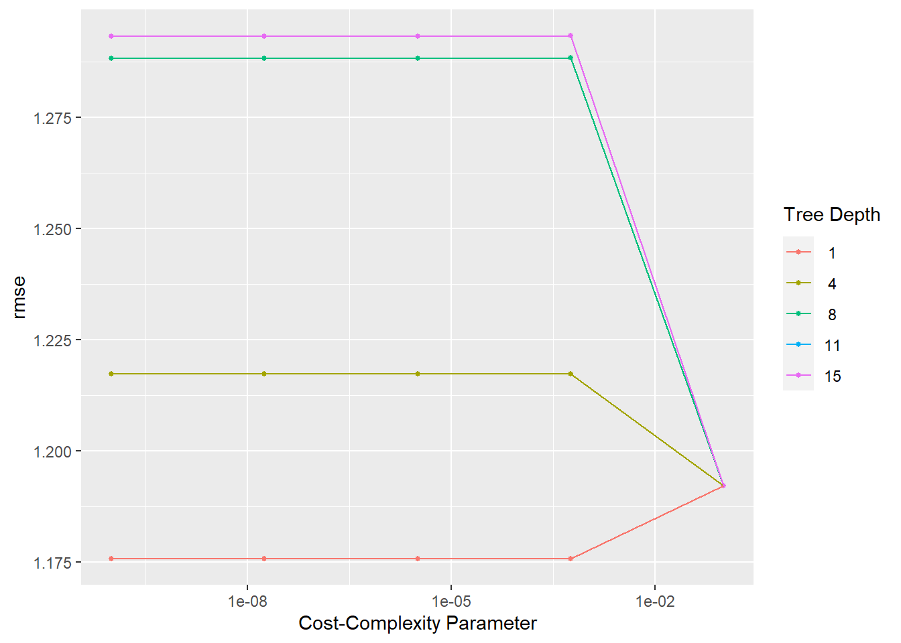
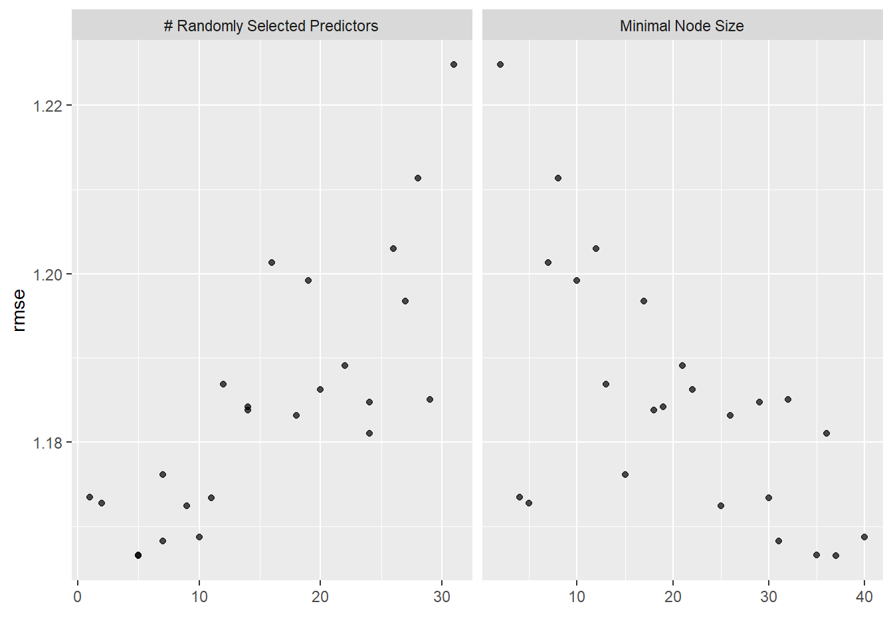
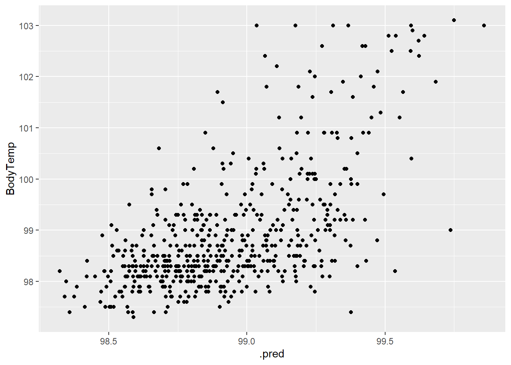
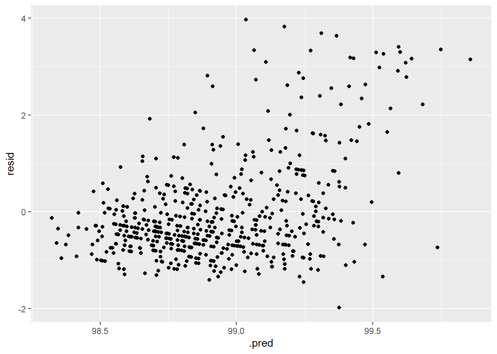

#load needed packages.
library(readxl) #for loading Excel files
library(dplyr) #for data processing##
## Attaching package: 'dplyr'## The following objects are masked from 'package:stats':
##
## filter, lag## The following objects are masked from 'package:base':
##
## intersect, setdiff, setequal, unionlibrary(here) #to set paths## here() starts at C:/Users/Priyanka/Desktop/MADA_2021/Priyanka-gannavarapu-MADA-portfoliolibrary(tidyr)
library(rpart.plot) #for visualizing a decision tree## Loading required package: rpartlibrary(vip) #for variable importance plots##
## Attaching package: 'vip'## The following object is masked from 'package:utils':
##
## vilibrary(ranger)
library(glmnet)## Loading required package: Matrix##
## Attaching package: 'Matrix'## The following objects are masked from 'package:tidyr':
##
## expand, pack, unpack## Loaded glmnet 4.1-2library(tidymodels)## Registered S3 method overwritten by 'tune':
## method from
## required_pkgs.model_spec parsnip## -- Attaching packages -------------------------------------- tidymodels 0.1.4 --## v broom 0.7.9 v recipes 0.1.17
## v dials 0.0.10 v rsample 0.1.0
## v ggplot2 3.3.5 v tibble 3.1.3
## v infer 1.0.0 v tune 0.1.6
## v modeldata 0.1.1 v workflows 0.2.4
## v parsnip 0.1.7 v workflowsets 0.1.0
## v purrr 0.3.4 v yardstick 0.0.8## -- Conflicts ----------------------------------------- tidymodels_conflicts() --
## x purrr::discard() masks scales::discard()
## x Matrix::expand() masks tidyr::expand()
## x dplyr::filter() masks stats::filter()
## x dplyr::lag() masks stats::lag()
## x Matrix::pack() masks tidyr::pack()
## x dials::prune() masks rpart::prune()
## x recipes::step() masks stats::step()
## x Matrix::unpack() masks tidyr::unpack()
## x recipes::update() masks Matrix::update(), stats::update()
## * Dig deeper into tidy modeling with R at https://www.tmwr.orglibrary(tidyverse)## -- Attaching packages --------------------------------------- tidyverse 1.3.1 --## v readr 2.0.1 v forcats 0.5.1
## v stringr 1.4.0## -- Conflicts ------------------------------------------ tidyverse_conflicts() --
## x readr::col_factor() masks scales::col_factor()
## x purrr::discard() masks scales::discard()
## x Matrix::expand() masks tidyr::expand()
## x dplyr::filter() masks stats::filter()
## x stringr::fixed() masks recipes::fixed()
## x dplyr::lag() masks stats::lag()
## x Matrix::pack() masks tidyr::pack()
## x readr::spec() masks yardstick::spec()
## x Matrix::unpack() masks tidyr::unpack()data_location <- here::here("files","processeddata.rds")
cleaneddata <- readRDS(data_location)
cleaneddata## SwollenLymphNodes ChestCongestion ChillsSweats NasalCongestion CoughYN
## 1 Yes No No No Yes
## 2 Yes Yes No Yes Yes
## 3 Yes Yes Yes Yes No
## 4 Yes Yes Yes Yes Yes
## 5 Yes No Yes No No
## 6 No No Yes No Yes
## 7 No No Yes No Yes
## 8 No Yes Yes Yes Yes
## 9 Yes Yes Yes Yes Yes
## 10 No Yes No Yes Yes
## 11 Yes Yes Yes Yes No
## 12 Yes Yes Yes Yes Yes
## 13 No No Yes Yes No
## 14 Yes Yes Yes Yes Yes
## 15 Yes Yes Yes Yes No
## 16 No Yes Yes Yes Yes
## 17 No No Yes No Yes
## 18 Yes Yes Yes Yes Yes
## 19 Yes Yes Yes Yes Yes
## 20 Yes Yes Yes Yes Yes
## 21 No Yes No No Yes
## 22 Yes No Yes No Yes
## 23 No Yes Yes Yes Yes
## 24 Yes Yes Yes Yes Yes
## 25 No No Yes Yes No
## 26 No No Yes Yes Yes
## 27 No Yes Yes Yes Yes
## 28 Yes Yes Yes Yes Yes
## 29 Yes Yes Yes Yes Yes
## 30 No Yes Yes No Yes
## 31 Yes No Yes Yes No
## 32 No No Yes Yes Yes
## 33 No Yes Yes Yes Yes
## 34 Yes Yes Yes No Yes
## 35 No No No No Yes
## 36 No No Yes Yes Yes
## 37 No No Yes Yes No
## 38 Yes Yes Yes Yes Yes
## 39 No No Yes Yes Yes
## 40 Yes Yes Yes Yes Yes
## 41 No No Yes Yes Yes
## 42 Yes Yes Yes Yes Yes
## 43 No Yes Yes No Yes
## 44 No No Yes No Yes
## 45 No No Yes Yes Yes
## 46 Yes Yes Yes Yes Yes
## 47 No Yes Yes Yes Yes
## 48 No No No Yes Yes
## 49 No Yes Yes No Yes
## 50 No Yes Yes No Yes
## 51 No Yes No Yes Yes
## 52 No No Yes Yes Yes
## 53 No Yes Yes Yes Yes
## 54 Yes No Yes Yes Yes
## 55 Yes Yes Yes Yes Yes
## 56 No Yes Yes Yes Yes
## 57 No No Yes No Yes
## 58 No No Yes Yes No
## 59 No No Yes Yes No
## 60 No Yes Yes No Yes
## 61 No No Yes Yes No
## 62 No No Yes No Yes
## 63 Yes No Yes No Yes
## 64 Yes Yes Yes Yes No
## 65 Yes No Yes Yes Yes
## 66 Yes No Yes Yes Yes
## 67 No No Yes Yes Yes
## 68 Yes Yes Yes No Yes
## 69 Yes Yes Yes Yes Yes
## 70 Yes Yes Yes Yes Yes
## 71 Yes Yes Yes Yes Yes
## 72 Yes No Yes Yes Yes
## 73 No Yes Yes Yes Yes
## 74 No Yes Yes Yes Yes
## 75 No No No Yes Yes
## 76 No Yes Yes Yes Yes
## 77 Yes Yes No Yes Yes
## 78 No Yes Yes No Yes
## 79 Yes Yes Yes Yes Yes
## 80 Yes No Yes Yes Yes
## 81 No Yes Yes Yes Yes
## 82 No Yes Yes Yes Yes
## 83 Yes No Yes Yes Yes
## 84 No Yes No No Yes
## 85 Yes Yes Yes Yes Yes
## 86 Yes Yes Yes Yes Yes
## 87 Yes No Yes Yes Yes
## 88 No Yes Yes Yes Yes
## 89 No No Yes Yes Yes
## 90 No Yes No No Yes
## 91 No Yes Yes Yes Yes
## 92 No Yes No Yes Yes
## 93 No No Yes Yes Yes
## 94 No Yes No Yes Yes
## 95 No Yes Yes Yes Yes
## 96 No No Yes No Yes
## 97 Yes Yes No Yes Yes
## 98 Yes No No Yes Yes
## 99 No No Yes No No
## 100 No Yes Yes Yes Yes
## 101 No Yes Yes No Yes
## 102 No Yes Yes Yes Yes
## 103 Yes No No Yes Yes
## 104 Yes No Yes Yes Yes
## 105 No Yes Yes Yes Yes
## 106 No Yes Yes Yes Yes
## 107 No Yes Yes Yes Yes
## 108 No Yes Yes Yes Yes
## 109 No No Yes Yes Yes
## 110 Yes No Yes Yes Yes
## 111 No Yes Yes No Yes
## 112 No Yes Yes Yes Yes
## 113 Yes Yes Yes Yes Yes
## 114 No Yes Yes No Yes
## 115 No No Yes Yes Yes
## 116 No No No Yes Yes
## 117 Yes Yes Yes Yes Yes
## 118 No Yes Yes Yes Yes
## 119 No No Yes No Yes
## 120 Yes Yes Yes Yes Yes
## 121 No No Yes No Yes
## 122 No No No No Yes
## 123 No No Yes No Yes
## 124 Yes Yes Yes Yes Yes
## 125 Yes Yes Yes Yes Yes
## 126 No No Yes Yes Yes
## 127 No No Yes No Yes
## 128 Yes Yes Yes Yes Yes
## 129 Yes No Yes Yes Yes
## 130 No Yes Yes Yes Yes
## 131 Yes No Yes Yes Yes
## 132 Yes Yes No Yes Yes
## 134 No No Yes Yes Yes
## 135 No No Yes No Yes
## 136 No No Yes Yes Yes
## 137 No Yes Yes No Yes
## 138 No No Yes No No
## 139 No Yes Yes Yes Yes
## 140 Yes Yes Yes Yes Yes
## 141 Yes Yes Yes No Yes
## 142 No Yes Yes No Yes
## 143 Yes Yes Yes Yes No
## 144 No No No Yes Yes
## 145 Yes Yes Yes Yes Yes
## 146 No No Yes Yes No
## 147 Yes Yes Yes Yes Yes
## 148 No Yes Yes Yes Yes
## 149 No Yes No No Yes
## 150 Yes Yes Yes Yes Yes
## 151 Yes Yes Yes Yes Yes
## 152 No Yes Yes Yes Yes
## 153 No No Yes No Yes
## 154 No Yes Yes Yes Yes
## 155 No No Yes No Yes
## 156 No No Yes No Yes
## 157 No Yes Yes Yes Yes
## 158 Yes Yes Yes Yes Yes
## 159 No No Yes Yes Yes
## 160 No Yes Yes Yes Yes
## 161 Yes No Yes Yes Yes
## 162 No Yes Yes Yes Yes
## 163 Yes Yes Yes Yes Yes
## 164 Yes Yes Yes Yes Yes
## 165 No Yes Yes Yes Yes
## 166 No No Yes Yes Yes
## 167 No No No No Yes
## 168 No Yes Yes Yes Yes
## 169 Yes No Yes Yes Yes
## 170 No Yes Yes Yes Yes
## 171 Yes Yes No Yes Yes
## 172 No No Yes Yes Yes
## 173 Yes No Yes No Yes
## 174 Yes Yes Yes Yes Yes
## 175 Yes No Yes Yes Yes
## 176 Yes Yes Yes Yes Yes
## 177 No Yes Yes Yes Yes
## 178 No Yes Yes Yes Yes
## 179 No No No Yes Yes
## 180 No No Yes Yes Yes
## 181 No Yes Yes Yes Yes
## 182 No Yes Yes Yes Yes
## 183 Yes Yes Yes Yes Yes
## 184 No No No No Yes
## 185 Yes Yes Yes Yes Yes
## 186 No Yes Yes No Yes
## 187 Yes Yes Yes Yes Yes
## 188 No Yes Yes Yes Yes
## 189 No Yes Yes Yes Yes
## 190 Yes Yes Yes Yes Yes
## 191 No Yes Yes Yes Yes
## 192 No No Yes No Yes
## 193 No No Yes Yes Yes
## 194 Yes Yes No Yes Yes
## 195 No No Yes No No
## 196 No Yes No Yes Yes
## 197 No No Yes Yes Yes
## 198 Yes Yes No Yes Yes
## 199 No No Yes Yes No
## 200 No Yes Yes Yes Yes
## 201 No No Yes Yes Yes
## 202 No Yes Yes No Yes
## 203 No No No Yes Yes
## 204 No Yes Yes Yes Yes
## 205 No Yes Yes Yes Yes
## 206 No No No Yes Yes
## 207 Yes No No Yes No
## 208 Yes No Yes Yes Yes
## 209 Yes No Yes Yes Yes
## 210 Yes Yes Yes Yes Yes
## 211 No No No Yes Yes
## 212 No Yes Yes Yes Yes
## 213 No No Yes Yes Yes
## 214 Yes Yes Yes Yes No
## 215 Yes Yes Yes Yes Yes
## 216 No Yes Yes Yes Yes
## 217 No Yes Yes Yes Yes
## 218 Yes Yes Yes No Yes
## 219 Yes Yes Yes Yes Yes
## 220 No No Yes No Yes
## 221 No No Yes No No
## 222 No No Yes Yes Yes
## 223 Yes No Yes Yes Yes
## 224 No Yes Yes Yes Yes
## 225 Yes Yes Yes Yes Yes
## 226 No Yes Yes Yes Yes
## 227 No No Yes No Yes
## 228 No Yes Yes Yes Yes
## 229 Yes Yes Yes Yes Yes
## 230 No Yes Yes Yes Yes
## 231 Yes No Yes No Yes
## 232 No Yes Yes Yes Yes
## 233 No Yes Yes No Yes
## 234 Yes Yes Yes Yes Yes
## 235 Yes Yes Yes Yes Yes
## 236 No Yes Yes No Yes
## 237 No No Yes No Yes
## 238 Yes Yes Yes Yes Yes
## 239 No Yes Yes Yes Yes
## 240 Yes Yes Yes Yes Yes
## 241 No Yes Yes Yes Yes
## 242 No Yes Yes Yes Yes
## 244 No Yes Yes Yes Yes
## 245 Yes Yes Yes Yes Yes
## 246 Yes No Yes Yes Yes
## 247 No Yes Yes Yes Yes
## 248 No Yes No Yes Yes
## 249 No Yes Yes Yes Yes
## 250 No Yes Yes No Yes
## 251 No No Yes Yes Yes
## 252 Yes No No Yes Yes
## 253 Yes No Yes Yes Yes
## 254 Yes Yes Yes Yes Yes
## 255 Yes No Yes No Yes
## 256 No Yes Yes Yes Yes
## 257 Yes No No No Yes
## 258 Yes No Yes No Yes
## 259 No No Yes Yes Yes
## 260 No No Yes Yes Yes
## 261 No Yes Yes Yes Yes
## 262 Yes No Yes No Yes
## 263 No Yes Yes Yes Yes
## 264 Yes Yes No Yes Yes
## 265 No Yes Yes Yes Yes
## 266 No No Yes Yes Yes
## 267 No Yes Yes Yes Yes
## 268 Yes Yes Yes Yes Yes
## 269 Yes Yes Yes Yes Yes
## 270 No No Yes Yes Yes
## 271 Yes Yes Yes No Yes
## 272 No Yes Yes Yes Yes
## 273 Yes No Yes Yes Yes
## 274 No No Yes Yes Yes
## 275 No Yes Yes Yes Yes
## 276 No Yes Yes No Yes
## 277 No No Yes Yes Yes
## 278 No No Yes Yes Yes
## 279 No Yes Yes Yes Yes
## 280 No Yes Yes Yes Yes
## 281 Yes No Yes Yes Yes
## 282 Yes Yes Yes Yes Yes
## 283 Yes Yes Yes No No
## 284 Yes Yes Yes Yes Yes
## 285 No Yes Yes Yes Yes
## 286 Yes No Yes No Yes
## 287 No No Yes No Yes
## 288 Yes Yes Yes Yes Yes
## 289 Yes Yes Yes Yes Yes
## 290 Yes No No No Yes
## 291 Yes No Yes Yes Yes
## 292 No Yes Yes Yes Yes
## 293 No Yes Yes Yes Yes
## 294 Yes No Yes No Yes
## 295 No No Yes Yes Yes
## 296 Yes No No No No
## 297 No Yes Yes No Yes
## 298 No Yes No Yes Yes
## 299 Yes Yes Yes Yes Yes
## 300 Yes No Yes Yes Yes
## 301 Yes Yes Yes Yes Yes
## 302 Yes Yes Yes Yes Yes
## 303 No No No Yes Yes
## 304 No No Yes Yes Yes
## 305 No No Yes Yes Yes
## 306 No Yes No Yes No
## 307 No No Yes Yes Yes
## 308 No Yes Yes Yes Yes
## 309 Yes No Yes Yes Yes
## 310 Yes No No No Yes
## 311 No No Yes No Yes
## 312 No No Yes Yes Yes
## 313 No No Yes Yes Yes
## 314 No No Yes Yes Yes
## 315 No No Yes No Yes
## 316 Yes No Yes Yes Yes
## 317 No Yes No Yes Yes
## 318 No No No Yes Yes
## 319 Yes No No Yes Yes
## 320 No Yes Yes Yes No
## 321 No No No Yes Yes
## 322 Yes No Yes Yes Yes
## 323 No No Yes No No
## 324 No No No No Yes
## 325 Yes No Yes Yes No
## 326 Yes Yes Yes Yes Yes
## 327 Yes Yes Yes Yes Yes
## 328 No Yes No Yes Yes
## 329 Yes Yes Yes Yes Yes
## 330 No Yes Yes Yes Yes
## 331 Yes No Yes Yes Yes
## 332 No Yes Yes Yes Yes
## 333 No Yes Yes Yes Yes
## 334 Yes Yes Yes Yes Yes
## 335 Yes Yes Yes No Yes
## 336 No No Yes Yes Yes
## 337 No Yes No Yes Yes
## 338 No Yes Yes Yes Yes
## 339 Yes Yes Yes Yes Yes
## 340 Yes No Yes No No
## 341 No Yes Yes Yes Yes
## 342 No No Yes Yes Yes
## 343 No Yes No Yes Yes
## 344 Yes No No No Yes
## 345 No Yes Yes Yes Yes
## 346 No No Yes Yes No
## 347 Yes No Yes No Yes
## 348 No Yes Yes Yes Yes
## 349 Yes Yes Yes Yes Yes
## 350 Yes Yes Yes Yes Yes
## 351 Yes No Yes Yes Yes
## 352 Yes Yes Yes Yes Yes
## 353 Yes Yes Yes Yes Yes
## 354 No Yes Yes Yes Yes
## 355 No No Yes Yes No
## 356 No Yes Yes No Yes
## 357 Yes No Yes Yes No
## 358 Yes No Yes Yes Yes
## 359 Yes Yes No Yes Yes
## 360 Yes Yes Yes Yes Yes
## 361 Yes Yes Yes No Yes
## 362 No Yes Yes No Yes
## 364 Yes Yes Yes Yes Yes
## 365 No No Yes Yes No
## 366 No Yes Yes Yes Yes
## 367 Yes Yes No No Yes
## 368 Yes Yes Yes No Yes
## 369 No Yes Yes Yes Yes
## 370 No No Yes No No
## 371 Yes Yes Yes Yes Yes
## 372 Yes No No Yes No
## 373 Yes Yes Yes Yes Yes
## 374 Yes Yes Yes Yes Yes
## 375 No No Yes Yes Yes
## 376 No Yes Yes Yes Yes
## 377 Yes Yes Yes Yes Yes
## 378 No No Yes Yes Yes
## 379 Yes No No Yes No
## 380 No No Yes No Yes
## 381 No No Yes Yes Yes
## 382 No No No No Yes
## 383 Yes Yes No Yes Yes
## 384 No Yes Yes Yes Yes
## 385 Yes No Yes Yes Yes
## 386 No Yes Yes No Yes
## 387 Yes No Yes No Yes
## 388 No No Yes No Yes
## 389 Yes No Yes Yes No
## 390 No Yes Yes No Yes
## 391 No No Yes No Yes
## 392 No No Yes No Yes
## 393 No No Yes No No
## 394 No No Yes Yes Yes
## 395 No No Yes No Yes
## 396 Yes No Yes Yes Yes
## 397 No No Yes No Yes
## 398 Yes Yes No Yes Yes
## 399 No No Yes No Yes
## 400 Yes Yes Yes No Yes
## 401 No Yes Yes No Yes
## 402 Yes Yes Yes Yes Yes
## 403 Yes Yes Yes No Yes
## 404 No No No Yes Yes
## 405 No Yes Yes No Yes
## 406 Yes Yes Yes Yes Yes
## 407 No Yes Yes Yes Yes
## 408 No Yes Yes Yes No
## 409 Yes Yes Yes Yes Yes
## 410 No No Yes Yes Yes
## 411 No No Yes Yes No
## 412 No No Yes Yes Yes
## 413 Yes No Yes No No
## 414 Yes No Yes No No
## 415 No Yes No Yes Yes
## 416 Yes Yes Yes Yes Yes
## 417 No No Yes Yes Yes
## 418 Yes Yes Yes Yes Yes
## 419 Yes Yes Yes Yes Yes
## 420 No Yes Yes Yes Yes
## 421 No No Yes Yes Yes
## 422 No Yes Yes Yes Yes
## 423 Yes No Yes Yes Yes
## 424 Yes Yes Yes Yes Yes
## 425 No No Yes Yes Yes
## 426 Yes Yes Yes Yes Yes
## 427 Yes No Yes Yes Yes
## 428 No Yes Yes Yes Yes
## 429 No No No Yes Yes
## 430 No No No Yes Yes
## 431 No No Yes Yes Yes
## 432 Yes Yes Yes Yes Yes
## 433 No No Yes No Yes
## 434 No No No No Yes
## 435 Yes Yes Yes Yes No
## 436 No Yes Yes Yes Yes
## 437 No Yes Yes No Yes
## 438 No Yes Yes No Yes
## 439 Yes Yes Yes Yes Yes
## 440 Yes No Yes No Yes
## 441 No No Yes No No
## 442 No Yes Yes No Yes
## 443 No Yes Yes Yes Yes
## 444 No No Yes Yes Yes
## 445 No No Yes Yes Yes
## 446 No Yes Yes Yes Yes
## 447 Yes No No Yes Yes
## 448 Yes Yes Yes Yes Yes
## 449 Yes Yes Yes Yes Yes
## 450 Yes No Yes Yes No
## 451 No Yes Yes Yes Yes
## 452 Yes Yes Yes Yes Yes
## 453 No No No No Yes
## 454 No No Yes Yes Yes
## 455 No No Yes No Yes
## 456 Yes Yes Yes Yes Yes
## 457 No Yes No No Yes
## 458 No No Yes No Yes
## 459 No Yes No Yes Yes
## 460 Yes Yes No Yes Yes
## 461 No No Yes No Yes
## 462 Yes Yes Yes Yes Yes
## 463 No No Yes No No
## 464 Yes Yes Yes Yes Yes
## 465 Yes No Yes Yes No
## 466 No No Yes Yes Yes
## 467 Yes Yes Yes Yes Yes
## 468 No No Yes Yes Yes
## 469 Yes Yes Yes No Yes
## 470 No No Yes No Yes
## 471 No No Yes Yes Yes
## 472 Yes No Yes Yes Yes
## 473 No Yes No Yes Yes
## 474 Yes Yes Yes Yes Yes
## 475 Yes No Yes No Yes
## 476 No No Yes Yes Yes
## 477 Yes Yes Yes Yes Yes
## 478 No No Yes Yes Yes
## 479 No No Yes Yes No
## 480 Yes No Yes No Yes
## 481 No Yes Yes Yes Yes
## 482 Yes No No Yes No
## 483 No No Yes Yes Yes
## 484 No No Yes Yes Yes
## 485 Yes Yes No Yes Yes
## 486 Yes No Yes No Yes
## 487 Yes Yes Yes Yes Yes
## 488 Yes No No Yes Yes
## 489 No Yes Yes Yes Yes
## 490 Yes Yes Yes Yes Yes
## 491 No No Yes No No
## 492 Yes No No Yes Yes
## 493 Yes Yes Yes Yes Yes
## 494 Yes Yes Yes Yes Yes
## 495 Yes No Yes Yes No
## 496 Yes No Yes Yes Yes
## 497 No Yes Yes Yes Yes
## 498 No Yes Yes Yes Yes
## 499 No No Yes Yes Yes
## 500 Yes No Yes Yes Yes
## 501 No No No Yes Yes
## 502 Yes Yes Yes Yes Yes
## 503 No Yes Yes No Yes
## 504 Yes No Yes Yes Yes
## 505 No Yes Yes No Yes
## 506 No Yes Yes Yes Yes
## 507 Yes No Yes No Yes
## 508 No No Yes Yes Yes
## 509 No Yes Yes No Yes
## 510 Yes Yes Yes Yes Yes
## 511 Yes Yes Yes Yes Yes
## 512 Yes Yes No Yes Yes
## 513 No Yes Yes Yes Yes
## 514 No Yes Yes Yes Yes
## 515 No Yes Yes Yes Yes
## 516 Yes No Yes Yes Yes
## 517 Yes Yes Yes Yes Yes
## 518 No No No No No
## 519 No Yes No Yes Yes
## 520 No No Yes No Yes
## 521 No Yes No No Yes
## 522 No Yes No No Yes
## 523 Yes Yes Yes Yes Yes
## 524 Yes Yes Yes No Yes
## 525 No Yes Yes Yes Yes
## 526 Yes No Yes Yes Yes
## 527 No No No Yes Yes
## 528 No Yes Yes Yes Yes
## 529 No No Yes Yes Yes
## 530 Yes No No No Yes
## 531 No Yes Yes Yes Yes
## 532 No No Yes Yes Yes
## 533 No Yes Yes Yes Yes
## 534 No No Yes No Yes
## 535 Yes No No Yes Yes
## 536 Yes Yes Yes Yes Yes
## 537 Yes No Yes Yes Yes
## 538 Yes Yes Yes Yes Yes
## 539 No No Yes Yes Yes
## 540 No No Yes No No
## 541 Yes No Yes No Yes
## 542 No Yes Yes Yes Yes
## 543 Yes No Yes Yes Yes
## 544 No No No Yes Yes
## 545 Yes No Yes Yes Yes
## 546 Yes No Yes Yes Yes
## 547 Yes Yes Yes Yes Yes
## 548 No Yes Yes Yes Yes
## 549 No Yes Yes Yes Yes
## 550 No Yes Yes Yes Yes
## 551 Yes Yes Yes Yes Yes
## 552 No No Yes Yes Yes
## 553 No Yes Yes Yes Yes
## 554 Yes No Yes Yes Yes
## 555 No No Yes Yes No
## 556 Yes Yes No Yes Yes
## 557 Yes No Yes Yes Yes
## 558 Yes Yes Yes Yes Yes
## 559 Yes Yes Yes Yes Yes
## 560 No Yes Yes No Yes
## 561 No Yes Yes Yes Yes
## 562 No No Yes Yes Yes
## 563 Yes No Yes Yes No
## 564 Yes Yes Yes No Yes
## 565 No Yes No No Yes
## 566 Yes Yes Yes Yes Yes
## 567 No Yes Yes Yes Yes
## 568 No No No Yes Yes
## 569 No Yes Yes Yes Yes
## 570 No Yes Yes Yes Yes
## 571 Yes No Yes No No
## 572 Yes Yes Yes Yes Yes
## 573 No No Yes Yes Yes
## 574 No Yes Yes Yes Yes
## 575 Yes Yes No No Yes
## 576 Yes No No Yes Yes
## 578 Yes Yes Yes Yes Yes
## 579 No No Yes Yes Yes
## 580 No No No Yes Yes
## 581 No Yes Yes Yes Yes
## 582 No No Yes Yes Yes
## 583 No Yes Yes Yes Yes
## 584 Yes Yes No Yes Yes
## 586 No No Yes No Yes
## 587 No No No Yes Yes
## 588 No Yes Yes Yes Yes
## 589 Yes No No Yes Yes
## 590 Yes No Yes No Yes
## 591 No Yes Yes Yes Yes
## 592 Yes No No Yes No
## 593 Yes Yes Yes Yes Yes
## 594 Yes No Yes No Yes
## 595 Yes No No No No
## 596 Yes No Yes Yes Yes
## 597 No Yes No Yes Yes
## 598 No No Yes Yes Yes
## 599 No No Yes Yes Yes
## 600 Yes Yes Yes Yes Yes
## 601 No Yes Yes No Yes
## 602 Yes No Yes Yes Yes
## 603 Yes Yes No Yes Yes
## 604 No Yes No No Yes
## 605 Yes No Yes Yes Yes
## 606 Yes No Yes Yes No
## 607 No No No No No
## 608 Yes Yes Yes Yes Yes
## 609 No Yes No Yes Yes
## 610 Yes Yes No Yes Yes
## 611 Yes Yes Yes Yes Yes
## 612 No Yes Yes Yes Yes
## 613 Yes No No Yes Yes
## 614 No No Yes Yes Yes
## 615 Yes No Yes Yes Yes
## 616 No No Yes Yes Yes
## 617 No Yes Yes Yes Yes
## 618 Yes Yes Yes Yes No
## 619 No Yes Yes Yes Yes
## 620 No No Yes Yes Yes
## 621 No No Yes Yes Yes
## 622 No Yes No Yes Yes
## 623 No No Yes No Yes
## 624 Yes Yes Yes Yes Yes
## 625 No No Yes Yes Yes
## 626 No Yes Yes Yes Yes
## 627 Yes Yes No Yes Yes
## 628 No Yes Yes Yes Yes
## 629 Yes Yes Yes Yes Yes
## 630 Yes Yes Yes Yes Yes
## 631 Yes No Yes Yes No
## 632 Yes Yes Yes Yes Yes
## 633 Yes No No Yes No
## 634 Yes Yes Yes Yes Yes
## 635 No No Yes No Yes
## 636 Yes Yes No Yes Yes
## 637 Yes Yes Yes Yes Yes
## 638 No Yes Yes Yes Yes
## 639 No Yes Yes Yes Yes
## 640 No No Yes Yes Yes
## 641 No No No Yes Yes
## 642 No No Yes Yes Yes
## 643 Yes Yes Yes No Yes
## 644 No Yes No Yes Yes
## 645 No No Yes Yes Yes
## 646 No Yes Yes Yes Yes
## 647 No Yes No No Yes
## 648 Yes Yes Yes Yes Yes
## 649 Yes Yes Yes Yes Yes
## 650 Yes Yes Yes Yes Yes
## 651 No Yes Yes Yes Yes
## 652 No No No No Yes
## 653 No No Yes Yes Yes
## 654 No No Yes No Yes
## 655 No No Yes Yes Yes
## 656 Yes Yes No Yes Yes
## 657 No No Yes Yes Yes
## 658 No Yes Yes Yes Yes
## 659 Yes Yes Yes Yes Yes
## 660 No No Yes Yes No
## 661 Yes No Yes Yes Yes
## 662 No No Yes Yes Yes
## 663 No Yes Yes Yes Yes
## 664 No Yes Yes Yes Yes
## 665 Yes Yes Yes Yes Yes
## 666 Yes Yes Yes Yes Yes
## 667 Yes No Yes Yes No
## 668 No Yes No Yes Yes
## 669 Yes No No No No
## 670 Yes Yes Yes Yes Yes
## 671 Yes No No No No
## 672 No No Yes No Yes
## 673 No Yes No Yes Yes
## 674 Yes Yes No Yes Yes
## 675 No Yes Yes Yes Yes
## 676 Yes Yes Yes Yes Yes
## 677 Yes No Yes No Yes
## 678 Yes Yes No No Yes
## 679 No Yes No Yes Yes
## 680 No Yes Yes Yes Yes
## 681 Yes Yes No Yes Yes
## 682 No No No Yes Yes
## 683 No No Yes No No
## 684 Yes Yes Yes No Yes
## 685 No Yes Yes Yes Yes
## 686 Yes No Yes Yes Yes
## 687 No Yes Yes Yes Yes
## 688 No Yes No Yes Yes
## 689 Yes Yes Yes Yes Yes
## 690 No No Yes Yes Yes
## 691 No No Yes Yes Yes
## 692 Yes Yes No Yes Yes
## 693 No Yes No Yes Yes
## 694 No No Yes Yes Yes
## 695 Yes Yes Yes Yes Yes
## 696 No Yes Yes Yes Yes
## 697 No Yes Yes Yes Yes
## 698 No No No Yes Yes
## 699 No Yes Yes Yes Yes
## 700 No No Yes No No
## 701 Yes Yes Yes Yes Yes
## 702 No No Yes No Yes
## 703 Yes No Yes Yes Yes
## 704 No Yes Yes Yes Yes
## 705 No Yes Yes Yes Yes
## 706 No No No Yes Yes
## 707 No No Yes Yes Yes
## 708 No No Yes No Yes
## 709 Yes Yes Yes Yes Yes
## 710 No Yes Yes Yes Yes
## 711 Yes No Yes Yes No
## 712 No Yes No Yes Yes
## 713 Yes No Yes Yes No
## 714 Yes Yes Yes Yes Yes
## 715 Yes No Yes No Yes
## 716 Yes Yes No Yes Yes
## 717 No No Yes Yes No
## 718 No Yes No No Yes
## 719 Yes No Yes Yes Yes
## 720 No Yes Yes Yes Yes
## 721 Yes Yes Yes Yes Yes
## 722 No No Yes No No
## 723 No Yes No Yes Yes
## 724 Yes No Yes Yes Yes
## 725 No No Yes Yes No
## 726 No No Yes No No
## 727 Yes Yes Yes Yes Yes
## 728 Yes No Yes Yes Yes
## 729 No No Yes Yes Yes
## 730 No No Yes Yes No
## 731 No No No Yes Yes
## 732 Yes Yes No Yes Yes
## 733 No Yes Yes Yes Yes
## 734 No Yes Yes Yes Yes
## 735 No Yes Yes Yes Yes
## Sneeze Fatigue SubjectiveFever Headache Weakness WeaknessYN CoughIntensity
## 1 No Yes Yes Yes Mild Yes Severe
## 2 No Yes Yes Yes Severe Yes Severe
## 3 Yes Yes Yes Yes Severe Yes Mild
## 4 Yes Yes Yes Yes Severe Yes Moderate
## 5 No Yes Yes Yes Moderate Yes None
## 6 Yes Yes Yes Yes Moderate Yes Moderate
## 7 No Yes Yes No Mild Yes Severe
## 8 Yes Yes Yes Yes Severe Yes Moderate
## 9 No Yes Yes Yes Moderate Yes Moderate
## 10 No Yes No Yes Moderate Yes Moderate
## 11 No Yes Yes Yes Severe Yes Mild
## 12 No Yes Yes Yes Severe Yes Severe
## 13 No Yes No Yes Moderate Yes Mild
## 14 Yes Yes Yes Yes Severe Yes Severe
## 15 No Yes No Yes Mild Yes None
## 16 Yes Yes Yes Yes Severe Yes Moderate
## 17 No Yes Yes Yes Mild Yes Moderate
## 18 Yes Yes No Yes Mild Yes Mild
## 19 Yes Yes Yes Yes Moderate Yes Severe
## 20 Yes Yes Yes Yes Mild Yes Moderate
## 21 Yes Yes No Yes Severe Yes Severe
## 22 Yes Yes Yes Yes Moderate Yes Moderate
## 23 Yes Yes Yes Yes Severe Yes Moderate
## 24 Yes Yes Yes Yes Moderate Yes Moderate
## 25 No Yes Yes Yes Severe Yes None
## 26 Yes Yes Yes Yes Mild Yes Mild
## 27 No Yes Yes Yes Mild Yes Severe
## 28 Yes Yes Yes No Moderate Yes Mild
## 29 No Yes Yes Yes Moderate Yes Moderate
## 30 No Yes Yes Yes Moderate Yes Moderate
## 31 Yes Yes No Yes Mild Yes None
## 32 No Yes Yes Yes Moderate Yes Mild
## 33 Yes Yes Yes Yes Moderate Yes Severe
## 34 Yes Yes Yes Yes Severe Yes Mild
## 35 No Yes Yes Yes Mild Yes Moderate
## 36 Yes Yes Yes Yes Moderate Yes Moderate
## 37 No No Yes Yes Mild Yes None
## 38 Yes Yes Yes Yes Moderate Yes Moderate
## 39 Yes Yes Yes Yes Moderate Yes Severe
## 40 Yes Yes Yes Yes Moderate Yes Moderate
## 41 No Yes Yes Yes Moderate Yes Moderate
## 42 No Yes Yes Yes Moderate Yes Moderate
## 43 No Yes Yes Yes Moderate Yes Moderate
## 44 Yes Yes No Yes None No Moderate
## 45 No Yes Yes Yes Moderate Yes Moderate
## 46 No Yes Yes Yes Moderate Yes Moderate
## 47 No No Yes No Mild Yes Severe
## 48 Yes Yes No Yes Mild Yes Mild
## 49 No Yes Yes No Moderate Yes Mild
## 50 No Yes Yes Yes Mild Yes Moderate
## 51 Yes Yes No Yes Mild Yes Severe
## 52 No No Yes No Moderate Yes Mild
## 53 Yes Yes Yes No Mild Yes Moderate
## 54 No Yes Yes No Moderate Yes Moderate
## 55 No Yes Yes Yes Moderate Yes Moderate
## 56 Yes Yes Yes Yes Severe Yes Mild
## 57 No Yes Yes Yes Moderate Yes Severe
## 58 Yes Yes Yes Yes Severe Yes None
## 59 No Yes Yes Yes Mild Yes Moderate
## 60 No Yes Yes Yes Severe Yes Moderate
## 61 No Yes Yes Yes Mild Yes None
## 62 No Yes Yes Yes Mild Yes Moderate
## 63 No Yes Yes Yes Moderate Yes Mild
## 64 Yes Yes No Yes Severe Yes None
## 65 No Yes Yes Yes Mild Yes Mild
## 66 Yes Yes Yes Yes Mild Yes Moderate
## 67 No Yes Yes Yes Moderate Yes Mild
## 68 Yes Yes Yes Yes Moderate Yes Moderate
## 69 Yes Yes Yes Yes Moderate Yes Moderate
## 70 Yes Yes Yes Yes Moderate Yes Moderate
## 71 No Yes No Yes Moderate Yes Moderate
## 72 No Yes Yes Yes Moderate Yes Severe
## 73 Yes Yes Yes Yes Moderate Yes Moderate
## 74 No Yes Yes Yes Severe Yes Severe
## 75 No Yes No No Mild Yes Moderate
## 76 No Yes Yes Yes Severe Yes Moderate
## 77 Yes No No Yes None No Moderate
## 78 No Yes No Yes Moderate Yes Severe
## 79 Yes Yes No Yes Severe Yes Moderate
## 80 No Yes Yes Yes Severe Yes Moderate
## 81 Yes Yes Yes Yes Severe Yes Moderate
## 82 Yes Yes No Yes Mild Yes Severe
## 83 Yes No Yes Yes None No Severe
## 84 Yes Yes No No Moderate Yes Mild
## 85 Yes Yes Yes Yes Mild Yes Moderate
## 86 Yes Yes Yes Yes Severe Yes Severe
## 87 Yes Yes Yes Yes Mild Yes Moderate
## 88 No Yes Yes Yes Moderate Yes Severe
## 89 Yes Yes Yes Yes Moderate Yes Mild
## 90 No Yes Yes Yes Moderate Yes Moderate
## 91 No Yes Yes Yes Mild Yes Severe
## 92 Yes Yes No No None No Mild
## 93 Yes Yes Yes Yes Moderate Yes Moderate
## 94 No Yes No No Mild Yes Moderate
## 95 Yes Yes Yes Yes Severe Yes Severe
## 96 No Yes Yes Yes Severe Yes Moderate
## 97 Yes Yes No Yes Mild Yes Moderate
## 98 Yes Yes No Yes Moderate Yes Mild
## 99 Yes No Yes Yes Mild Yes Moderate
## 100 Yes Yes Yes Yes Severe Yes Severe
## 101 No Yes No Yes Moderate Yes Severe
## 102 No No Yes Yes Mild Yes Moderate
## 103 No No No No None No Moderate
## 104 No Yes Yes Yes Mild Yes Moderate
## 105 No Yes No Yes Moderate Yes Severe
## 106 No Yes Yes No Moderate Yes Severe
## 107 No Yes No No Moderate Yes Severe
## 108 Yes Yes Yes Yes Moderate Yes Moderate
## 109 Yes No Yes No None No Moderate
## 110 No Yes Yes Yes Severe Yes Severe
## 111 Yes Yes Yes No Moderate Yes Severe
## 112 Yes Yes No No Moderate Yes Moderate
## 113 Yes Yes Yes Yes Moderate Yes Severe
## 114 Yes Yes Yes Yes Severe Yes Moderate
## 115 Yes Yes No Yes Moderate Yes Moderate
## 116 No Yes No Yes Mild Yes Moderate
## 117 No Yes No Yes Moderate Yes Moderate
## 118 Yes Yes Yes Yes Severe Yes Severe
## 119 Yes Yes Yes Yes Moderate Yes Moderate
## 120 Yes Yes Yes Yes None No Moderate
## 121 No Yes Yes Yes Moderate Yes Moderate
## 122 No Yes No Yes Moderate Yes Moderate
## 123 No Yes Yes Yes Mild Yes Mild
## 124 Yes Yes Yes Yes Severe Yes Moderate
## 125 Yes Yes Yes Yes Severe Yes Severe
## 126 No Yes Yes Yes Mild Yes Moderate
## 127 Yes Yes Yes No Moderate Yes Mild
## 128 Yes Yes No Yes Moderate Yes Moderate
## 129 Yes Yes No Yes Moderate Yes Severe
## 130 No Yes Yes Yes Mild Yes Moderate
## 131 No Yes Yes Yes None No Severe
## 132 Yes Yes Yes Yes Moderate Yes Mild
## 134 Yes Yes Yes No Moderate Yes Moderate
## 135 No Yes No Yes Moderate Yes Mild
## 136 Yes No No Yes Severe Yes Severe
## 137 No Yes Yes Yes Mild Yes Moderate
## 138 No Yes No Yes Moderate Yes Mild
## 139 No Yes Yes Yes Mild Yes Moderate
## 140 Yes No Yes Yes Moderate Yes Severe
## 141 No Yes No Yes None No Moderate
## 142 No Yes Yes Yes Moderate Yes Severe
## 143 No Yes Yes Yes Mild Yes Mild
## 144 No No Yes Yes Moderate Yes Moderate
## 145 Yes Yes Yes No Mild Yes Moderate
## 146 Yes Yes Yes Yes Moderate Yes Mild
## 147 Yes Yes Yes Yes Moderate Yes Severe
## 148 Yes Yes Yes Yes Severe Yes Severe
## 149 No Yes Yes No Mild Yes Moderate
## 150 Yes Yes Yes Yes Moderate Yes Moderate
## 151 Yes Yes Yes Yes Moderate Yes Severe
## 152 Yes Yes Yes Yes Moderate Yes Moderate
## 153 No Yes Yes No Moderate Yes Severe
## 154 Yes Yes Yes Yes Moderate Yes Moderate
## 155 No Yes No Yes Severe Yes Moderate
## 156 No Yes No Yes Mild Yes Severe
## 157 No Yes Yes Yes Mild Yes Severe
## 158 Yes Yes Yes Yes Moderate Yes Severe
## 159 No Yes Yes Yes Moderate Yes Moderate
## 160 Yes Yes Yes Yes Moderate Yes Severe
## 161 Yes Yes Yes Yes Moderate Yes Moderate
## 162 Yes Yes No Yes Severe Yes Severe
## 163 Yes Yes Yes Yes Moderate Yes Moderate
## 164 No Yes Yes Yes Severe Yes Severe
## 165 Yes Yes No Yes Moderate Yes Moderate
## 166 Yes Yes Yes Yes Severe Yes Moderate
## 167 No No No No Moderate Yes Moderate
## 168 Yes Yes Yes Yes Severe Yes Severe
## 169 No No No Yes Mild Yes Moderate
## 170 No Yes Yes Yes Moderate Yes Moderate
## 171 Yes Yes Yes Yes Severe Yes Severe
## 172 Yes Yes No Yes Mild Yes Moderate
## 173 No Yes Yes No Moderate Yes Moderate
## 174 No Yes Yes No Mild Yes Severe
## 175 No Yes Yes Yes None No Moderate
## 176 No Yes Yes Yes Moderate Yes Severe
## 177 Yes Yes No No Mild Yes Moderate
## 178 Yes Yes No Yes Severe Yes Moderate
## 179 Yes Yes Yes Yes Moderate Yes Moderate
## 180 Yes Yes Yes Yes Mild Yes Moderate
## 181 No Yes Yes Yes Moderate Yes Mild
## 182 Yes Yes Yes Yes Moderate Yes Moderate
## 183 Yes Yes Yes Yes Moderate Yes Severe
## 184 No Yes No Yes Moderate Yes Mild
## 185 Yes Yes Yes Yes Severe Yes Mild
## 186 No No No No None No Moderate
## 187 Yes Yes Yes Yes Moderate Yes Mild
## 188 Yes No No No Mild Yes Moderate
## 189 Yes Yes Yes Yes Moderate Yes Mild
## 190 Yes Yes Yes Yes Moderate Yes Moderate
## 191 Yes Yes Yes Yes Moderate Yes Moderate
## 192 Yes Yes No No Mild Yes Moderate
## 193 No No Yes Yes Moderate Yes Moderate
## 194 No No Yes Yes Mild Yes Moderate
## 195 No Yes No Yes Moderate Yes None
## 196 Yes Yes No Yes Moderate Yes Moderate
## 197 Yes Yes Yes Yes Moderate Yes Moderate
## 198 Yes No No Yes None No Severe
## 199 Yes Yes No Yes Moderate Yes Mild
## 200 Yes Yes Yes Yes Moderate Yes Moderate
## 201 Yes Yes Yes Yes Moderate Yes Mild
## 202 No Yes Yes Yes Moderate Yes Moderate
## 203 No No No Yes Mild Yes Severe
## 204 No No Yes Yes Mild Yes Severe
## 205 Yes Yes No Yes Moderate Yes Moderate
## 206 No Yes No Yes Moderate Yes Moderate
## 207 Yes Yes No Yes Mild Yes Mild
## 208 Yes Yes Yes No Moderate Yes Severe
## 209 Yes Yes Yes Yes Mild Yes Severe
## 210 No Yes Yes Yes Moderate Yes Mild
## 211 Yes Yes Yes Yes Moderate Yes Severe
## 212 Yes Yes Yes No Severe Yes Mild
## 213 No Yes Yes No Mild Yes Severe
## 214 No Yes Yes Yes Mild Yes None
## 215 Yes Yes Yes Yes Mild Yes Severe
## 216 No Yes Yes Yes Severe Yes Moderate
## 217 Yes Yes Yes Yes Severe Yes Severe
## 218 Yes Yes Yes Yes Moderate Yes Moderate
## 219 Yes Yes No Yes Mild Yes Moderate
## 220 No Yes Yes Yes Moderate Yes Moderate
## 221 Yes Yes Yes Yes Mild Yes None
## 222 No Yes Yes Yes Moderate Yes Severe
## 223 Yes Yes Yes Yes Moderate Yes Moderate
## 224 No Yes Yes Yes Mild Yes Severe
## 225 No Yes No Yes Moderate Yes Moderate
## 226 No Yes Yes No Moderate Yes Severe
## 227 No Yes No Yes Mild Yes Mild
## 228 Yes Yes Yes Yes Severe Yes Moderate
## 229 Yes Yes Yes Yes Moderate Yes Severe
## 230 Yes Yes Yes Yes Moderate Yes Moderate
## 231 No Yes Yes Yes Severe Yes Mild
## 232 Yes Yes No Yes Mild Yes Severe
## 233 No Yes No Yes Moderate Yes Moderate
## 234 No Yes Yes Yes Severe Yes Severe
## 235 Yes Yes Yes Yes Moderate Yes Mild
## 236 No Yes Yes Yes Moderate Yes Mild
## 237 Yes Yes Yes Yes Mild Yes Moderate
## 238 No Yes Yes No Moderate Yes Moderate
## 239 No Yes Yes Yes Moderate Yes Severe
## 240 Yes Yes Yes Yes Moderate Yes Severe
## 241 No Yes Yes Yes Moderate Yes Severe
## 242 Yes Yes Yes Yes Moderate Yes Moderate
## 244 No Yes No Yes Severe Yes Moderate
## 245 No No No Yes Mild Yes Severe
## 246 No Yes Yes Yes Mild Yes Mild
## 247 Yes Yes Yes Yes Severe Yes Mild
## 248 Yes Yes No Yes Severe Yes Severe
## 249 Yes Yes No Yes Mild Yes Moderate
## 250 No Yes Yes Yes Severe Yes Moderate
## 251 Yes Yes Yes Yes Mild Yes Severe
## 252 Yes Yes No Yes None No Moderate
## 253 Yes Yes No Yes Moderate Yes Mild
## 254 No Yes Yes No Moderate Yes Moderate
## 255 Yes Yes No No Moderate Yes Severe
## 256 Yes Yes Yes Yes Moderate Yes Severe
## 257 No Yes Yes Yes Mild Yes Mild
## 258 No Yes Yes Yes Severe Yes Moderate
## 259 Yes Yes No No Mild Yes Mild
## 260 Yes Yes No No Moderate Yes Mild
## 261 Yes Yes Yes Yes Moderate Yes Moderate
## 262 No Yes Yes Yes Mild Yes Moderate
## 263 Yes Yes Yes Yes Severe Yes Severe
## 264 Yes Yes No Yes Moderate Yes Moderate
## 265 No Yes No Yes Moderate Yes Severe
## 266 No Yes Yes Yes Moderate Yes Severe
## 267 No Yes Yes Yes Mild Yes Moderate
## 268 No No Yes Yes Mild Yes Moderate
## 269 Yes Yes Yes Yes Moderate Yes Moderate
## 270 No No Yes No Mild Yes Moderate
## 271 Yes Yes Yes Yes Severe Yes Moderate
## 272 Yes Yes Yes Yes Mild Yes Severe
## 273 Yes Yes Yes Yes Severe Yes Moderate
## 274 Yes Yes No Yes Mild Yes Moderate
## 275 No Yes Yes Yes Moderate Yes Severe
## 276 No Yes No Yes None No Moderate
## 277 Yes Yes No Yes Moderate Yes Mild
## 278 Yes Yes Yes No Moderate Yes Moderate
## 279 No Yes No Yes Mild Yes Moderate
## 280 Yes Yes Yes Yes Moderate Yes Moderate
## 281 Yes Yes No Yes Mild Yes Moderate
## 282 Yes Yes Yes Yes Moderate Yes Moderate
## 283 No Yes No Yes Moderate Yes None
## 284 No Yes Yes Yes Moderate Yes Moderate
## 285 Yes Yes Yes Yes Severe Yes Severe
## 286 No Yes Yes Yes Moderate Yes Moderate
## 287 Yes Yes Yes Yes None No Severe
## 288 No No Yes Yes Severe Yes Severe
## 289 No Yes Yes Yes Mild Yes Severe
## 290 No No Yes Yes Mild Yes Moderate
## 291 No Yes Yes Yes Moderate Yes Moderate
## 292 Yes Yes Yes Yes Mild Yes Moderate
## 293 No Yes Yes Yes Mild Yes Severe
## 294 No Yes Yes Yes Mild Yes Mild
## 295 Yes Yes Yes Yes Moderate Yes Severe
## 296 No No Yes Yes Mild Yes None
## 297 No Yes Yes No Moderate Yes Mild
## 298 No No No No Mild Yes Moderate
## 299 Yes Yes Yes Yes Moderate Yes Severe
## 300 Yes Yes Yes Yes Severe Yes Mild
## 301 Yes Yes Yes Yes Moderate Yes Severe
## 302 No Yes Yes Yes Mild Yes Moderate
## 303 Yes Yes No Yes None No Moderate
## 304 No No Yes Yes Mild Yes Moderate
## 305 Yes Yes Yes Yes Moderate Yes Severe
## 306 No Yes No Yes Mild Yes None
## 307 No Yes Yes Yes Mild Yes Severe
## 308 Yes Yes Yes No Moderate Yes Severe
## 309 No Yes Yes No Mild Yes Mild
## 310 No Yes No No Mild Yes Mild
## 311 Yes Yes Yes Yes Moderate Yes Moderate
## 312 No Yes Yes Yes Moderate Yes Mild
## 313 Yes No No Yes Mild Yes Moderate
## 314 Yes Yes No Yes None No Mild
## 315 No No No Yes Mild Yes Moderate
## 316 No Yes No Yes Mild Yes Mild
## 317 No Yes No Yes Mild Yes Moderate
## 318 Yes Yes Yes Yes Moderate Yes Mild
## 319 No Yes No No Mild Yes Moderate
## 320 No Yes No Yes Moderate Yes None
## 321 No Yes No Yes Moderate Yes Mild
## 322 Yes Yes Yes Yes Severe Yes Severe
## 323 No Yes Yes Yes Moderate Yes None
## 324 Yes Yes Yes Yes Severe Yes Moderate
## 325 No Yes Yes Yes Severe Yes Mild
## 326 No Yes Yes Yes Mild Yes Moderate
## 327 No Yes Yes Yes Severe Yes Moderate
## 328 Yes Yes No Yes Moderate Yes Moderate
## 329 Yes Yes No Yes Mild Yes Moderate
## 330 No Yes No Yes Moderate Yes Severe
## 331 Yes No Yes Yes Moderate Yes Moderate
## 332 No Yes Yes Yes None No Moderate
## 333 Yes Yes Yes Yes Moderate Yes Moderate
## 334 No Yes No No Severe Yes Moderate
## 335 Yes Yes Yes No Moderate Yes Severe
## 336 Yes Yes No Yes Moderate Yes Moderate
## 337 No Yes Yes Yes Mild Yes Mild
## 338 No Yes No No Mild Yes Moderate
## 339 Yes Yes Yes Yes Mild Yes Moderate
## 340 Yes Yes Yes Yes Moderate Yes None
## 341 No Yes Yes No Mild Yes Moderate
## 342 Yes Yes Yes Yes Moderate Yes Moderate
## 343 Yes Yes No Yes Mild Yes Mild
## 344 No Yes No Yes Mild Yes Severe
## 345 Yes Yes Yes Yes Moderate Yes Mild
## 346 Yes Yes Yes No Mild Yes None
## 347 Yes Yes Yes Yes Severe Yes Moderate
## 348 Yes Yes Yes Yes Severe Yes Moderate
## 349 Yes Yes Yes Yes Severe Yes Moderate
## 350 Yes Yes Yes Yes Mild Yes Moderate
## 351 Yes Yes Yes Yes Mild Yes Mild
## 352 Yes Yes Yes Yes Moderate Yes Moderate
## 353 Yes Yes Yes No Moderate Yes Moderate
## 354 Yes Yes Yes No Moderate Yes Severe
## 355 No No Yes Yes Mild Yes None
## 356 Yes Yes No No None No Moderate
## 357 Yes Yes No Yes Moderate Yes Mild
## 358 Yes Yes Yes Yes Moderate Yes Moderate
## 359 Yes Yes No Yes Mild Yes Moderate
## 360 Yes Yes Yes Yes Mild Yes Severe
## 361 Yes Yes No Yes Mild Yes Severe
## 362 Yes Yes Yes Yes Moderate Yes Moderate
## 364 Yes Yes No Yes Mild Yes Moderate
## 365 No Yes Yes Yes Moderate Yes None
## 366 No Yes Yes Yes Moderate Yes Moderate
## 367 No No No No None No Moderate
## 368 No Yes Yes Yes Mild Yes Moderate
## 369 No Yes No Yes Moderate Yes Moderate
## 370 No Yes Yes Yes Moderate Yes Mild
## 371 Yes Yes Yes Yes Severe Yes Moderate
## 372 Yes Yes No Yes Moderate Yes None
## 373 No Yes Yes Yes Moderate Yes Severe
## 374 Yes Yes No Yes None No Moderate
## 375 Yes No Yes Yes Moderate Yes Severe
## 376 Yes Yes Yes Yes Mild Yes Moderate
## 377 Yes Yes Yes Yes Moderate Yes Severe
## 378 Yes Yes Yes Yes Moderate Yes Mild
## 379 Yes Yes No Yes Moderate Yes Mild
## 380 No Yes Yes Yes Moderate Yes Moderate
## 381 Yes Yes Yes Yes Moderate Yes Moderate
## 382 No Yes Yes Yes Mild Yes Severe
## 383 Yes Yes Yes Yes Mild Yes Severe
## 384 Yes Yes Yes Yes Moderate Yes Moderate
## 385 Yes Yes Yes Yes None No Mild
## 386 Yes Yes Yes Yes Moderate Yes Severe
## 387 No Yes Yes Yes Moderate Yes Moderate
## 388 No Yes Yes No Mild Yes Mild
## 389 Yes Yes Yes Yes Severe Yes None
## 390 Yes Yes No Yes Moderate Yes Moderate
## 391 No Yes Yes Yes Mild Yes Mild
## 392 Yes No Yes Yes Moderate Yes Mild
## 393 No Yes Yes Yes Severe Yes None
## 394 Yes Yes Yes Yes Mild Yes Mild
## 395 No Yes No Yes Moderate Yes Moderate
## 396 Yes Yes Yes Yes Mild Yes Moderate
## 397 No Yes Yes Yes Mild Yes Moderate
## 398 Yes Yes No Yes Moderate Yes Mild
## 399 No No Yes Yes Moderate Yes Mild
## 400 No Yes Yes Yes Moderate Yes Moderate
## 401 Yes Yes Yes No Moderate Yes Severe
## 402 Yes Yes Yes Yes Moderate Yes Moderate
## 403 No Yes Yes Yes Severe Yes Moderate
## 404 Yes Yes No No Moderate Yes Mild
## 405 No Yes Yes Yes Moderate Yes Moderate
## 406 Yes Yes Yes Yes Mild Yes Severe
## 407 Yes Yes Yes Yes Moderate Yes Moderate
## 408 No Yes Yes Yes Severe Yes Mild
## 409 Yes Yes No Yes Severe Yes Mild
## 410 Yes Yes Yes Yes Moderate Yes Severe
## 411 Yes Yes Yes Yes Moderate Yes Mild
## 412 No Yes No No Moderate Yes Severe
## 413 No Yes Yes Yes Severe Yes None
## 414 No Yes Yes Yes Severe Yes Mild
## 415 Yes Yes Yes Yes Mild Yes Mild
## 416 Yes Yes Yes Yes Moderate Yes Severe
## 417 Yes Yes Yes Yes Moderate Yes Moderate
## 418 No Yes Yes Yes Moderate Yes Moderate
## 419 Yes Yes Yes Yes Moderate Yes Moderate
## 420 No Yes Yes No Moderate Yes Severe
## 421 No No Yes Yes None No Severe
## 422 No No Yes Yes None No Moderate
## 423 Yes Yes Yes Yes Severe Yes Moderate
## 424 No Yes Yes Yes Mild Yes Mild
## 425 Yes Yes No Yes Mild Yes Severe
## 426 No Yes Yes Yes Mild Yes Moderate
## 427 Yes Yes Yes Yes Mild Yes Mild
## 428 Yes Yes Yes Yes Mild Yes Moderate
## 429 Yes Yes No Yes Moderate Yes Moderate
## 430 Yes Yes Yes Yes Mild Yes Moderate
## 431 Yes No Yes Yes Moderate Yes Mild
## 432 No Yes Yes Yes Mild Yes Moderate
## 433 No Yes No Yes Mild Yes Moderate
## 434 Yes Yes No No Mild Yes Severe
## 435 Yes Yes No No Mild Yes Mild
## 436 Yes Yes No No Mild Yes Moderate
## 437 Yes Yes Yes Yes Severe Yes Moderate
## 438 Yes Yes Yes Yes Moderate Yes Moderate
## 439 Yes No Yes No Moderate Yes Mild
## 440 No Yes Yes Yes Moderate Yes Moderate
## 441 No Yes Yes Yes Severe Yes None
## 442 No Yes Yes No Mild Yes Moderate
## 443 No Yes Yes Yes Severe Yes Severe
## 444 Yes Yes No Yes Severe Yes Moderate
## 445 Yes Yes No Yes Moderate Yes Mild
## 446 No Yes Yes Yes Moderate Yes Severe
## 447 Yes Yes Yes Yes Severe Yes Mild
## 448 Yes Yes Yes Yes Severe Yes Moderate
## 449 No Yes Yes Yes Mild Yes Severe
## 450 Yes Yes No Yes Moderate Yes Mild
## 451 No Yes Yes Yes Mild Yes Moderate
## 452 Yes Yes No Yes Moderate Yes Severe
## 453 No No Yes Yes Moderate Yes Moderate
## 454 No No No Yes Mild Yes Moderate
## 455 No Yes No Yes Moderate Yes Moderate
## 456 Yes Yes No Yes None No Mild
## 457 No Yes No Yes Mild Yes Moderate
## 458 No Yes No Yes Moderate Yes Moderate
## 459 No Yes No Yes Mild Yes Mild
## 460 Yes Yes No Yes Mild Yes Moderate
## 461 No Yes Yes Yes Moderate Yes Moderate
## 462 Yes Yes Yes Yes Moderate Yes Moderate
## 463 No Yes Yes No Mild Yes Mild
## 464 Yes Yes Yes Yes Moderate Yes Severe
## 465 Yes Yes Yes No Moderate Yes None
## 466 No No No Yes Mild Yes Moderate
## 467 Yes Yes Yes Yes Severe Yes Severe
## 468 No Yes Yes No Moderate Yes Severe
## 469 No Yes Yes Yes Moderate Yes Moderate
## 470 No Yes Yes Yes Severe Yes Mild
## 471 Yes Yes Yes Yes Mild Yes Moderate
## 472 Yes Yes Yes Yes Mild Yes Moderate
## 473 Yes No Yes Yes Mild Yes Moderate
## 474 No Yes Yes Yes Severe Yes Moderate
## 475 No Yes Yes No Mild Yes Mild
## 476 Yes Yes Yes No Moderate Yes Severe
## 477 Yes Yes Yes Yes Moderate Yes Severe
## 478 No Yes Yes No Mild Yes Mild
## 479 Yes Yes Yes Yes Mild Yes Mild
## 480 No Yes No Yes Moderate Yes Moderate
## 481 Yes Yes Yes Yes Moderate Yes Severe
## 482 Yes Yes No Yes Moderate Yes None
## 483 Yes Yes Yes No Mild Yes Moderate
## 484 Yes Yes Yes Yes Moderate Yes Moderate
## 485 No Yes No No Moderate Yes Severe
## 486 No Yes No Yes Mild Yes Moderate
## 487 Yes Yes No Yes Mild Yes Severe
## 488 No Yes No No None No Mild
## 489 Yes Yes Yes Yes Mild Yes Moderate
## 490 Yes Yes No Yes Moderate Yes Moderate
## 491 No Yes Yes Yes Moderate Yes None
## 492 Yes No No No Mild Yes Mild
## 493 Yes Yes Yes Yes Moderate Yes Moderate
## 494 Yes Yes No Yes Moderate Yes Severe
## 495 No Yes Yes Yes Moderate Yes None
## 496 Yes Yes Yes Yes Moderate Yes Moderate
## 497 Yes Yes Yes Yes Severe Yes Moderate
## 498 No Yes Yes Yes Mild Yes Severe
## 499 No Yes No Yes Mild Yes Moderate
## 500 Yes Yes No Yes Severe Yes Mild
## 501 No Yes Yes Yes Moderate Yes Moderate
## 502 Yes Yes Yes Yes Severe Yes Moderate
## 503 No No Yes Yes Moderate Yes Severe
## 504 Yes Yes Yes No Moderate Yes Severe
## 505 Yes Yes Yes No Mild Yes Mild
## 506 Yes Yes Yes No None No Severe
## 507 No Yes Yes Yes Moderate Yes Severe
## 508 Yes Yes Yes Yes Moderate Yes Mild
## 509 No Yes Yes Yes Moderate Yes Severe
## 510 No Yes Yes Yes Moderate Yes Moderate
## 511 Yes Yes Yes Yes Mild Yes Severe
## 512 Yes Yes Yes Yes Severe Yes Moderate
## 513 No Yes Yes Yes Moderate Yes Moderate
## 514 No Yes Yes Yes Moderate Yes Mild
## 515 Yes Yes No Yes Moderate Yes Moderate
## 516 Yes Yes No Yes Mild Yes Moderate
## 517 No Yes Yes Yes Moderate Yes Moderate
## 518 No Yes No Yes None No None
## 519 No No No No Mild Yes Severe
## 520 No Yes Yes No Moderate Yes Moderate
## 521 No Yes No Yes Mild Yes Moderate
## 522 No Yes No No Mild Yes Severe
## 523 No Yes Yes No Mild Yes Severe
## 524 No Yes No Yes Moderate Yes Moderate
## 525 No Yes Yes Yes Moderate Yes Mild
## 526 Yes Yes Yes Yes Moderate Yes Mild
## 527 Yes Yes No No None No Moderate
## 528 Yes Yes Yes Yes Mild Yes Moderate
## 529 No Yes Yes Yes Mild Yes Moderate
## 530 Yes Yes No No Mild Yes Mild
## 531 Yes Yes No Yes Moderate Yes Mild
## 532 Yes Yes Yes Yes Mild Yes Moderate
## 533 No Yes Yes No Mild Yes Moderate
## 534 Yes Yes Yes Yes Moderate Yes Mild
## 535 Yes Yes Yes Yes Mild Yes Severe
## 536 No Yes Yes Yes Moderate Yes Severe
## 537 Yes Yes No Yes Moderate Yes Severe
## 538 No Yes No Yes Moderate Yes Moderate
## 539 No Yes No Yes Mild Yes Mild
## 540 Yes Yes No Yes Moderate Yes None
## 541 No Yes Yes Yes Severe Yes Moderate
## 542 No Yes Yes Yes Mild Yes Moderate
## 543 No Yes No Yes Mild Yes Mild
## 544 No Yes Yes Yes Mild Yes Mild
## 545 No Yes Yes Yes Moderate Yes Moderate
## 546 Yes Yes Yes Yes Severe Yes Moderate
## 547 No Yes Yes Yes Moderate Yes Moderate
## 548 Yes Yes Yes Yes Mild Yes Severe
## 549 No Yes Yes Yes Severe Yes Severe
## 550 Yes Yes Yes Yes Severe Yes Severe
## 551 No Yes Yes Yes Mild Yes Moderate
## 552 No Yes Yes Yes Mild Yes Mild
## 553 Yes Yes Yes Yes Mild Yes Moderate
## 554 No Yes Yes No Mild Yes Mild
## 555 No Yes No Yes Mild Yes None
## 556 Yes Yes No Yes Moderate Yes Severe
## 557 Yes Yes Yes Yes Severe Yes Moderate
## 558 No Yes Yes No Moderate Yes Moderate
## 559 Yes Yes Yes Yes Moderate Yes Moderate
## 560 No Yes Yes Yes Severe Yes Mild
## 561 No Yes Yes Yes Severe Yes Moderate
## 562 No Yes No Yes Moderate Yes Mild
## 563 No Yes No Yes None No None
## 564 Yes Yes Yes Yes Moderate Yes Severe
## 565 Yes Yes No Yes Moderate Yes Severe
## 566 No Yes Yes Yes Moderate Yes Moderate
## 567 Yes Yes No No Mild Yes Moderate
## 568 Yes No No Yes Mild Yes Moderate
## 569 Yes Yes Yes Yes Mild Yes Moderate
## 570 Yes Yes No Yes Moderate Yes Severe
## 571 No Yes Yes Yes Moderate Yes None
## 572 Yes Yes No Yes Moderate Yes Severe
## 573 No Yes Yes Yes Moderate Yes Moderate
## 574 Yes Yes Yes Yes Severe Yes Moderate
## 575 No Yes Yes Yes Mild Yes Moderate
## 576 Yes Yes No Yes Mild Yes Severe
## 578 No Yes Yes Yes Moderate Yes Moderate
## 579 Yes Yes Yes Yes Moderate Yes Mild
## 580 No Yes No Yes Moderate Yes Moderate
## 581 No Yes No Yes Moderate Yes Moderate
## 582 No Yes No Yes Mild Yes Mild
## 583 Yes Yes No Yes Moderate Yes Moderate
## 584 No Yes No Yes None No Moderate
## 586 No Yes Yes Yes Mild Yes Moderate
## 587 Yes Yes Yes Yes Mild Yes Moderate
## 588 No No No No Mild Yes Moderate
## 589 Yes Yes Yes Yes Mild Yes Mild
## 590 No Yes Yes Yes Moderate Yes Mild
## 591 No No No No Moderate Yes Moderate
## 592 No Yes Yes Yes Moderate Yes None
## 593 Yes Yes Yes Yes Moderate Yes Mild
## 594 No Yes Yes Yes Mild Yes Moderate
## 595 No Yes No Yes Severe Yes None
## 596 Yes Yes Yes Yes Moderate Yes Mild
## 597 No Yes No Yes Mild Yes Moderate
## 598 Yes Yes Yes Yes Mild Yes Mild
## 599 No Yes Yes No Mild Yes Moderate
## 600 Yes Yes Yes Yes Moderate Yes Moderate
## 601 No Yes No Yes Mild Yes Mild
## 602 Yes Yes No No Moderate Yes Mild
## 603 Yes Yes Yes Yes Moderate Yes Moderate
## 604 No No No No None No Moderate
## 605 No Yes No Yes Moderate Yes Moderate
## 606 No Yes No Yes Moderate Yes None
## 607 Yes Yes No Yes Mild Yes None
## 608 No Yes Yes Yes Moderate Yes Moderate
## 609 No No No No Mild Yes Severe
## 610 No Yes No Yes Moderate Yes Moderate
## 611 No Yes Yes Yes Moderate Yes Mild
## 612 Yes Yes Yes Yes Severe Yes Severe
## 613 No Yes No Yes None No Moderate
## 614 No Yes Yes Yes Moderate Yes Mild
## 615 Yes Yes Yes Yes Moderate Yes Moderate
## 616 Yes Yes Yes Yes Severe Yes Moderate
## 617 Yes Yes No Yes Moderate Yes Mild
## 618 Yes Yes Yes Yes Moderate Yes None
## 619 Yes Yes Yes Yes Moderate Yes Severe
## 620 Yes Yes No Yes None No Moderate
## 621 Yes Yes Yes Yes None No Moderate
## 622 No Yes Yes No Mild Yes Severe
## 623 Yes Yes No Yes Moderate Yes Severe
## 624 Yes Yes Yes Yes Mild Yes Mild
## 625 No Yes Yes Yes Mild Yes Moderate
## 626 Yes Yes Yes Yes Moderate Yes Moderate
## 627 Yes Yes Yes Yes Mild Yes Severe
## 628 Yes Yes Yes Yes Moderate Yes Moderate
## 629 Yes Yes Yes Yes Moderate Yes Severe
## 630 No Yes Yes Yes Severe Yes Moderate
## 631 No Yes Yes Yes Moderate Yes Mild
## 632 Yes No Yes Yes Mild Yes Moderate
## 633 Yes Yes No Yes None No None
## 634 Yes Yes Yes Yes Severe Yes Severe
## 635 No Yes No Yes Mild Yes Moderate
## 636 Yes No No No Mild Yes Moderate
## 637 Yes Yes Yes Yes Moderate Yes Mild
## 638 No Yes Yes Yes Moderate Yes Mild
## 639 Yes Yes Yes Yes Moderate Yes Moderate
## 640 No Yes Yes Yes Severe Yes Moderate
## 641 No Yes No Yes Mild Yes Moderate
## 642 No Yes Yes No Mild Yes Moderate
## 643 Yes Yes Yes Yes Mild Yes Moderate
## 644 Yes No No No None No Moderate
## 645 No Yes No Yes Mild Yes Moderate
## 646 Yes Yes No Yes Severe Yes Moderate
## 647 No Yes Yes Yes None No Severe
## 648 Yes Yes No No Moderate Yes Moderate
## 649 Yes Yes Yes Yes Moderate Yes Moderate
## 650 Yes Yes Yes Yes Moderate Yes Moderate
## 651 No Yes No Yes Mild Yes Moderate
## 652 No Yes No No Mild Yes Severe
## 653 No Yes Yes Yes Moderate Yes Mild
## 654 No Yes Yes Yes Severe Yes Mild
## 655 Yes Yes Yes Yes None No Moderate
## 656 Yes Yes Yes Yes Mild Yes Mild
## 657 No Yes Yes No None No Moderate
## 658 Yes Yes No Yes Severe Yes Moderate
## 659 Yes No Yes Yes Mild Yes Moderate
## 660 Yes Yes Yes Yes Moderate Yes Mild
## 661 Yes Yes Yes No Moderate Yes Mild
## 662 Yes Yes Yes Yes Mild Yes Moderate
## 663 No Yes No No Moderate Yes Moderate
## 664 Yes Yes No Yes None No Moderate
## 665 Yes Yes Yes Yes Moderate Yes Mild
## 666 Yes Yes Yes Yes Severe Yes Severe
## 667 Yes Yes Yes Yes Moderate Yes Mild
## 668 No Yes No Yes Mild Yes Mild
## 669 Yes Yes No Yes Mild Yes None
## 670 No Yes Yes Yes Severe Yes Mild
## 671 Yes Yes No No Mild Yes None
## 672 No Yes Yes No Severe Yes Moderate
## 673 Yes No No Yes None No Severe
## 674 No No No No None No Mild
## 675 Yes Yes Yes Yes Severe Yes Moderate
## 676 Yes Yes Yes Yes Moderate Yes Moderate
## 677 No Yes Yes Yes Severe Yes Mild
## 678 No No No No Mild Yes Moderate
## 679 Yes Yes No Yes Moderate Yes Moderate
## 680 Yes Yes Yes Yes Moderate Yes Moderate
## 681 No Yes No Yes Moderate Yes Moderate
## 682 Yes Yes No Yes Moderate Yes Mild
## 683 No No Yes Yes Moderate Yes None
## 684 No Yes Yes Yes Moderate Yes Moderate
## 685 Yes No Yes No Moderate Yes Severe
## 686 No Yes Yes Yes Moderate Yes Mild
## 687 No Yes Yes Yes Mild Yes Mild
## 688 Yes Yes No Yes None No Moderate
## 689 No Yes Yes Yes Severe Yes Mild
## 690 Yes Yes Yes Yes Severe Yes Severe
## 691 Yes Yes Yes Yes Moderate Yes Moderate
## 692 No Yes Yes Yes Moderate Yes Moderate
## 693 Yes Yes No Yes Moderate Yes Severe
## 694 Yes Yes Yes Yes None No Moderate
## 695 Yes Yes Yes Yes Severe Yes Mild
## 696 Yes Yes Yes Yes Mild Yes Moderate
## 697 Yes No Yes No None No Severe
## 698 Yes Yes No Yes Moderate Yes Severe
## 699 Yes Yes No Yes Mild Yes Moderate
## 700 Yes Yes Yes Yes Moderate Yes None
## 701 Yes Yes Yes Yes Mild Yes Moderate
## 702 No Yes Yes Yes Severe Yes Mild
## 703 No Yes Yes No Moderate Yes Mild
## 704 No Yes No No Moderate Yes Moderate
## 705 No Yes No Yes Severe Yes Moderate
## 706 Yes Yes No No Mild Yes Moderate
## 707 No Yes No Yes Moderate Yes Mild
## 708 No Yes No Yes Moderate Yes Moderate
## 709 Yes Yes Yes Yes None No Severe
## 710 No Yes Yes Yes Severe Yes Severe
## 711 No Yes Yes Yes Moderate Yes None
## 712 Yes Yes Yes Yes Severe Yes Severe
## 713 No Yes Yes Yes Severe Yes Mild
## 714 Yes Yes Yes Yes Moderate Yes Moderate
## 715 No Yes Yes Yes Mild Yes Moderate
## 716 Yes Yes No Yes Moderate Yes Severe
## 717 Yes Yes No Yes Severe Yes Mild
## 718 No Yes Yes Yes None No Moderate
## 719 Yes Yes Yes Yes Moderate Yes Mild
## 720 No Yes Yes Yes Moderate Yes Moderate
## 721 No Yes Yes Yes Mild Yes Moderate
## 722 No Yes No No Mild Yes Mild
## 723 Yes Yes Yes Yes Moderate Yes Moderate
## 724 Yes No Yes Yes Severe Yes Severe
## 725 Yes Yes No Yes Moderate Yes None
## 726 No Yes No Yes Moderate Yes None
## 727 No Yes Yes Yes Moderate Yes Severe
## 728 Yes Yes Yes Yes Moderate Yes Mild
## 729 Yes Yes Yes Yes Moderate Yes Moderate
## 730 Yes Yes Yes Yes Severe Yes Mild
## 731 Yes Yes No No None No Moderate
## 732 Yes Yes No No Moderate Yes Moderate
## 733 Yes Yes No Yes Moderate Yes Severe
## 734 Yes Yes No Yes Moderate Yes Mild
## 735 Yes Yes Yes Yes Moderate Yes Moderate
## CoughYN2 Myalgia MyalgiaYN RunnyNose AbPain ChestPain Diarrhea EyePn
## 1 Yes Mild Yes No No No No No
## 2 Yes Severe Yes No No No No No
## 3 Yes Severe Yes Yes Yes Yes No No
## 4 Yes Severe Yes Yes No No No No
## 5 No Mild Yes No No No No Yes
## 6 Yes Moderate Yes No No Yes Yes No
## 7 Yes Mild Yes Yes No Yes No No
## 8 Yes Severe Yes Yes No No No No
## 9 Yes Moderate Yes Yes No No No No
## 10 Yes Mild Yes Yes No No No No
## 11 Yes Severe Yes No Yes No No Yes
## 12 Yes Severe Yes No Yes Yes No No
## 13 Yes Moderate Yes Yes No No No Yes
## 14 Yes Severe Yes Yes No Yes No No
## 15 No Moderate Yes Yes No No No No
## 16 Yes Severe Yes Yes No No No No
## 17 Yes Moderate Yes No No Yes No No
## 18 Yes None No Yes No Yes No No
## 19 Yes Moderate Yes Yes No Yes No No
## 20 Yes Moderate Yes Yes No No Yes Yes
## 21 Yes Moderate Yes No No Yes No No
## 22 Yes Moderate Yes Yes No No No No
## 23 Yes Moderate Yes Yes Yes Yes No No
## 24 Yes Mild Yes Yes No Yes No No
## 25 No Moderate Yes No Yes No No No
## 26 Yes Mild Yes Yes No No No Yes
## 27 Yes Mild Yes No Yes Yes Yes No
## 28 Yes Severe Yes No No No No No
## 29 Yes Moderate Yes No No No No No
## 30 Yes Moderate Yes No Yes Yes No No
## 31 No Mild Yes Yes No Yes No No
## 32 Yes None No No No No No No
## 33 Yes Moderate Yes Yes No Yes No No
## 34 Yes Severe Yes Yes Yes No No No
## 35 Yes Moderate Yes No No No No No
## 36 Yes Moderate Yes No No No No No
## 37 No Mild Yes No No No No No
## 38 Yes Mild Yes Yes No No No No
## 39 Yes Moderate Yes Yes No No No No
## 40 Yes Mild Yes Yes No No No No
## 41 Yes Moderate Yes Yes No No No Yes
## 42 Yes Moderate Yes No No No No No
## 43 Yes Moderate Yes No No Yes No No
## 44 Yes Mild Yes Yes No No No No
## 45 Yes Severe Yes No No No Yes No
## 46 Yes Moderate Yes Yes No No No No
## 47 Yes Moderate Yes Yes No Yes No No
## 48 Yes None No Yes No No No No
## 49 Yes Moderate Yes Yes No No No No
## 50 Yes Moderate Yes No No No No No
## 51 Yes Mild Yes Yes No Yes No No
## 52 Yes Moderate Yes Yes Yes No No No
## 53 Yes Moderate Yes Yes No No No No
## 54 Yes Moderate Yes Yes No No No No
## 55 Yes Moderate Yes Yes Yes Yes No No
## 56 Yes Moderate Yes Yes No Yes No Yes
## 57 Yes Moderate Yes Yes Yes Yes No No
## 58 No Moderate Yes Yes No No Yes No
## 59 Yes Mild Yes No No No No No
## 60 Yes Severe Yes Yes Yes No No No
## 61 No Moderate Yes Yes No No No No
## 62 Yes None No No No No No No
## 63 Yes Moderate Yes No No No No No
## 64 No Moderate Yes No No Yes No No
## 65 Yes Mild Yes No No No No No
## 66 Yes Mild Yes Yes No No No No
## 67 Yes Moderate Yes Yes No Yes No No
## 68 Yes Severe Yes Yes No Yes Yes Yes
## 69 Yes Severe Yes Yes No Yes No No
## 70 Yes Moderate Yes Yes No Yes No No
## 71 Yes Mild Yes Yes Yes Yes No Yes
## 72 Yes Severe Yes Yes Yes Yes Yes No
## 73 Yes Moderate Yes Yes No No No No
## 74 Yes Moderate Yes Yes No No No No
## 75 Yes Mild Yes Yes No No No No
## 76 Yes Moderate Yes No No No No No
## 77 Yes Mild Yes Yes Yes No Yes No
## 78 Yes Moderate Yes No No No No No
## 79 Yes Moderate Yes Yes No Yes No No
## 80 Yes Severe Yes No No Yes No No
## 81 Yes Severe Yes No No No Yes Yes
## 82 Yes Mild Yes Yes No No No No
## 83 Yes Mild Yes Yes No Yes No No
## 84 Yes Moderate Yes Yes No Yes No No
## 85 Yes None No Yes No No No No
## 86 Yes Severe Yes Yes Yes Yes No No
## 87 Yes Moderate Yes No Yes No No No
## 88 Yes None No No No No No No
## 89 Yes Moderate Yes Yes No No No Yes
## 90 Yes None No No No No Yes No
## 91 Yes Moderate Yes Yes Yes Yes No No
## 92 Yes Mild Yes Yes No Yes No No
## 93 Yes Moderate Yes Yes No No No No
## 94 Yes None No No No Yes No No
## 95 Yes None No Yes No No Yes No
## 96 Yes Severe Yes No Yes No No No
## 97 Yes Moderate Yes Yes No No No No
## 98 Yes Moderate Yes Yes Yes No No Yes
## 99 Yes Mild Yes No No No No No
## 100 Yes Severe Yes Yes No Yes No Yes
## 101 Yes Moderate Yes No No Yes Yes No
## 102 Yes Moderate Yes Yes No No No No
## 103 Yes None No Yes No No No No
## 104 Yes Mild Yes No No No No No
## 105 Yes Moderate Yes No No Yes No No
## 106 Yes Moderate Yes Yes No Yes No No
## 107 Yes Moderate Yes No No Yes No No
## 108 Yes Moderate Yes Yes Yes Yes No Yes
## 109 Yes Moderate Yes Yes No No No No
## 110 Yes Moderate Yes Yes No No No No
## 111 Yes Mild Yes Yes No No No No
## 112 Yes Mild Yes Yes No Yes No No
## 113 Yes Moderate Yes Yes No No No No
## 114 Yes Severe Yes Yes Yes Yes No No
## 115 Yes Moderate Yes Yes No No No No
## 116 Yes Moderate Yes Yes No Yes No No
## 117 Yes Moderate Yes Yes Yes No No No
## 118 Yes Severe Yes Yes No Yes No No
## 119 Yes Severe Yes Yes No Yes No No
## 120 Yes None No Yes No Yes Yes No
## 121 Yes Moderate Yes No Yes No No Yes
## 122 Yes None No Yes No Yes No No
## 123 Yes Mild Yes No No No No No
## 124 Yes Severe Yes Yes Yes Yes No No
## 125 Yes Severe Yes Yes Yes Yes No Yes
## 126 Yes None No Yes No No No Yes
## 127 Yes Moderate Yes No No No No No
## 128 Yes Severe Yes Yes Yes Yes No No
## 129 Yes Mild Yes Yes No Yes No No
## 130 Yes Mild Yes Yes No Yes No No
## 131 Yes Mild Yes Yes No No No No
## 132 Yes Moderate Yes Yes No No No No
## 134 Yes Moderate Yes Yes No Yes No No
## 135 Yes Severe Yes No Yes No No No
## 136 Yes Severe Yes Yes No Yes No No
## 137 Yes Mild Yes No No No Yes No
## 138 Yes Moderate Yes No No No Yes No
## 139 Yes Moderate Yes No Yes No No No
## 140 Yes Severe Yes Yes No Yes No No
## 141 Yes None No No No No No No
## 142 Yes Moderate Yes No Yes Yes No No
## 143 Yes Severe Yes No Yes Yes No No
## 144 Yes Moderate Yes No No No No No
## 145 Yes Mild Yes Yes No No No Yes
## 146 Yes Moderate Yes Yes No No No No
## 147 Yes Moderate Yes Yes No Yes No No
## 148 Yes Moderate Yes Yes No Yes No No
## 149 Yes Mild Yes No No No No No
## 150 Yes Severe Yes Yes No No No No
## 151 Yes Mild Yes Yes No Yes No No
## 152 Yes Mild Yes Yes No No No No
## 153 Yes Mild Yes No No Yes No No
## 154 Yes Severe Yes Yes No Yes No Yes
## 155 Yes Mild Yes No No No No No
## 156 Yes Moderate Yes Yes No No No No
## 157 Yes Mild Yes Yes No Yes No No
## 158 Yes Moderate Yes No No Yes No Yes
## 159 Yes Moderate Yes Yes No No No No
## 160 Yes Moderate Yes No Yes Yes No Yes
## 161 Yes Severe Yes Yes No Yes Yes No
## 162 Yes Moderate Yes Yes No No Yes No
## 163 Yes Moderate Yes Yes No Yes No No
## 164 Yes Severe Yes No No Yes No No
## 165 Yes Moderate Yes Yes No No Yes No
## 166 Yes Moderate Yes No No No No No
## 167 Yes Severe Yes No No No No No
## 168 Yes Moderate Yes Yes No No No No
## 169 Yes Mild Yes No No No Yes No
## 170 Yes Moderate Yes Yes No No No No
## 171 Yes Severe Yes Yes No No No No
## 172 Yes Moderate Yes Yes No No No No
## 173 Yes Moderate Yes No No No No No
## 174 Yes Severe Yes Yes No No No No
## 175 Yes None No No No No No No
## 176 Yes Moderate Yes Yes No Yes No No
## 177 Yes Moderate Yes Yes No No No No
## 178 Yes Severe Yes Yes Yes Yes No Yes
## 179 Yes Mild Yes Yes No No Yes No
## 180 Yes Mild Yes Yes No Yes No No
## 181 Yes Mild Yes No No No No No
## 182 Yes Moderate Yes Yes Yes Yes Yes No
## 183 Yes Moderate Yes Yes No Yes No Yes
## 184 Yes Moderate Yes No No Yes No No
## 185 Yes Severe Yes No Yes Yes No No
## 186 Yes None No No No No No No
## 187 Yes Moderate Yes Yes No No No No
## 188 Yes Mild Yes No No No No No
## 189 Yes Moderate Yes Yes No No No No
## 190 Yes Severe Yes Yes No Yes No No
## 191 Yes Severe Yes Yes No Yes No Yes
## 192 Yes Mild Yes Yes No No No No
## 193 Yes Moderate Yes Yes No No Yes No
## 194 Yes None No Yes No No No No
## 195 No Moderate Yes Yes No No No No
## 196 Yes Moderate Yes Yes No Yes No No
## 197 Yes Moderate Yes Yes No No No Yes
## 198 Yes None No Yes No No No No
## 199 Yes Moderate Yes No No No No No
## 200 Yes Severe Yes Yes Yes No No Yes
## 201 Yes Moderate Yes Yes No No Yes No
## 202 Yes Severe Yes No Yes Yes Yes No
## 203 Yes Mild Yes Yes No Yes No No
## 204 Yes None No Yes No No No No
## 205 Yes Mild Yes Yes No Yes No No
## 206 Yes Moderate Yes Yes No No No No
## 207 Yes None No Yes No No No No
## 208 Yes Moderate Yes Yes No No No No
## 209 Yes Mild Yes Yes No No No No
## 210 Yes Severe Yes No No No No No
## 211 Yes Severe Yes Yes No No No No
## 212 Yes Mild Yes Yes No No No No
## 213 Yes Mild Yes Yes No No No No
## 214 No Mild Yes Yes No No No Yes
## 215 Yes Mild Yes Yes No Yes No No
## 216 Yes Mild Yes Yes No No No No
## 217 Yes Moderate Yes Yes No Yes No Yes
## 218 Yes Moderate Yes Yes No Yes No No
## 219 Yes Mild Yes Yes No Yes No No
## 220 Yes Severe Yes Yes No No No No
## 221 No Mild Yes Yes Yes No Yes No
## 222 Yes Mild Yes Yes No No No No
## 223 Yes Severe Yes Yes No No No Yes
## 224 Yes Mild Yes Yes No No No No
## 225 Yes Mild Yes No No Yes No No
## 226 Yes Moderate Yes Yes No Yes No No
## 227 Yes None No Yes No No Yes Yes
## 228 Yes Moderate Yes No No Yes No No
## 229 Yes Moderate Yes Yes Yes Yes No No
## 230 Yes Severe Yes Yes No No No No
## 231 Yes Moderate Yes No No No No No
## 232 Yes None No Yes No No Yes No
## 233 Yes Moderate Yes No No No No No
## 234 Yes Moderate Yes No No Yes Yes No
## 235 Yes Mild Yes Yes No Yes No No
## 236 Yes Moderate Yes No No No No No
## 237 Yes Mild Yes Yes No No No No
## 238 Yes Moderate Yes Yes Yes No No No
## 239 Yes Mild Yes No No Yes Yes Yes
## 240 Yes Moderate Yes Yes No No No No
## 241 Yes Moderate Yes Yes No No No No
## 242 Yes Moderate Yes Yes No Yes No No
## 244 Yes Severe Yes No No Yes No No
## 245 Yes None No Yes No No No No
## 246 Yes Mild Yes Yes No No No No
## 247 Yes Severe Yes Yes No No No No
## 248 Yes Moderate Yes Yes Yes Yes No No
## 249 Yes Moderate Yes Yes No No No Yes
## 250 Yes Severe Yes No Yes Yes No No
## 251 Yes Mild Yes Yes No No No No
## 252 Yes None No Yes No No No Yes
## 253 Yes Mild Yes Yes No No No No
## 254 Yes None No No No No No No
## 255 Yes Moderate Yes Yes No No Yes No
## 256 Yes Severe Yes Yes No Yes Yes No
## 257 Yes None No No No No No No
## 258 Yes Severe Yes Yes No No Yes No
## 259 Yes Mild Yes No No Yes No No
## 260 Yes Moderate Yes Yes No No No No
## 261 Yes Moderate Yes Yes No No No No
## 262 Yes Mild Yes No No No No No
## 263 Yes Severe Yes Yes Yes Yes No No
## 264 Yes Moderate Yes Yes No Yes No Yes
## 265 Yes None No Yes No No No No
## 266 Yes Moderate Yes No No No No No
## 267 Yes Moderate Yes Yes No No No Yes
## 268 Yes None No Yes No Yes No No
## 269 Yes Moderate Yes Yes No No No No
## 270 Yes Moderate Yes Yes No No No No
## 271 Yes Moderate Yes Yes No No Yes Yes
## 272 Yes Mild Yes Yes No No Yes Yes
## 273 Yes Moderate Yes Yes No No No No
## 274 Yes None No Yes No No No No
## 275 Yes Moderate Yes Yes No Yes No No
## 276 Yes Mild Yes Yes No No No Yes
## 277 Yes Moderate Yes Yes No No No Yes
## 278 Yes Moderate Yes Yes No No No Yes
## 279 Yes Moderate Yes Yes No No No No
## 280 Yes Mild Yes Yes No No No Yes
## 281 Yes Mild Yes Yes No No No No
## 282 Yes Moderate Yes Yes No Yes No No
## 283 No Moderate Yes Yes Yes Yes No No
## 284 Yes Moderate Yes No No No No Yes
## 285 Yes Moderate Yes No No No Yes No
## 286 Yes Moderate Yes Yes No No No No
## 287 Yes Mild Yes Yes No Yes No No
## 288 Yes Severe Yes Yes No Yes Yes No
## 289 Yes Mild Yes Yes No No No No
## 290 Yes Mild Yes Yes No Yes No No
## 291 Yes Moderate Yes No No No No No
## 292 Yes Mild Yes Yes No No No No
## 293 Yes Mild Yes Yes No No No Yes
## 294 Yes Severe Yes No No Yes No No
## 295 Yes None No Yes No No No No
## 296 No Moderate Yes No No No No No
## 297 Yes Severe Yes No No Yes No No
## 298 Yes Mild Yes No No No No No
## 299 Yes Severe Yes Yes No Yes No No
## 300 Yes Mild Yes Yes No No No No
## 301 Yes Moderate Yes Yes No No No No
## 302 Yes Mild Yes No No No No No
## 303 Yes Mild Yes Yes No No No No
## 304 Yes Mild Yes Yes No No No No
## 305 Yes Severe Yes Yes No No No No
## 306 No Mild Yes Yes No Yes No No
## 307 Yes Moderate Yes Yes No No No No
## 308 Yes Moderate Yes Yes No No No No
## 309 Yes Mild Yes Yes No No No No
## 310 Yes Mild Yes Yes No No No No
## 311 Yes Moderate Yes Yes No No No No
## 312 Yes Moderate Yes Yes No No Yes No
## 313 Yes Mild Yes Yes No No No Yes
## 314 Yes Mild Yes Yes No No No No
## 315 Yes None No Yes No No No No
## 316 Yes Moderate Yes Yes No No No No
## 317 Yes Mild Yes Yes No No Yes No
## 318 Yes Mild Yes No No No No No
## 319 Yes Mild Yes No No No No No
## 320 No Moderate Yes No No No No No
## 321 Yes Mild Yes Yes No No No No
## 322 Yes Severe Yes No No Yes No No
## 323 No Moderate Yes No No No No No
## 324 Yes Mild Yes No Yes Yes No Yes
## 325 Yes Moderate Yes No No No No No
## 326 Yes Moderate Yes Yes No Yes No No
## 327 Yes Severe Yes Yes Yes Yes Yes Yes
## 328 Yes Moderate Yes Yes No Yes No No
## 329 Yes Mild Yes Yes No Yes No Yes
## 330 Yes Moderate Yes No No Yes Yes No
## 331 Yes None No Yes No No No No
## 332 Yes Mild Yes No No No No No
## 333 Yes Severe Yes Yes No No No No
## 334 Yes Moderate Yes No No No No No
## 335 Yes Moderate Yes Yes No Yes No No
## 336 Yes Severe Yes No Yes Yes No No
## 337 Yes Mild Yes No No No No Yes
## 338 Yes Mild Yes No No No No No
## 339 Yes Mild Yes Yes No No No No
## 340 No Moderate Yes Yes No No No No
## 341 Yes Mild Yes Yes No No No No
## 342 Yes Moderate Yes Yes No No No No
## 343 Yes Mild Yes No No No Yes No
## 344 Yes Mild Yes Yes No No No No
## 345 Yes Moderate Yes Yes No No No No
## 346 No Moderate Yes Yes Yes No No No
## 347 Yes Severe Yes No No Yes No No
## 348 Yes Moderate Yes Yes No Yes No No
## 349 Yes Severe Yes Yes No Yes Yes Yes
## 350 Yes Mild Yes Yes No No No No
## 351 Yes None No Yes No No No No
## 352 Yes Moderate Yes Yes No Yes No No
## 353 Yes Moderate Yes Yes Yes Yes No Yes
## 354 Yes Mild Yes Yes No No No No
## 355 No Moderate Yes Yes No No No Yes
## 356 Yes None No Yes No No No No
## 357 Yes Moderate Yes Yes No No No Yes
## 358 Yes Moderate Yes Yes No No Yes No
## 359 Yes Mild Yes Yes No Yes No No
## 360 Yes Moderate Yes Yes Yes Yes No No
## 361 Yes Mild Yes No No No No Yes
## 362 Yes Severe Yes Yes No Yes No No
## 364 Yes Mild Yes Yes Yes Yes No No
## 365 No Mild Yes Yes No No No No
## 366 Yes Moderate Yes Yes No No No Yes
## 367 Yes None No No No Yes No No
## 368 Yes Mild Yes No No Yes No No
## 369 Yes Moderate Yes Yes No No No No
## 370 Yes Mild Yes No No No No No
## 371 Yes Moderate Yes Yes No No No Yes
## 372 No Mild Yes Yes No No No No
## 373 Yes Severe Yes Yes No Yes No Yes
## 374 Yes Mild Yes Yes No No No No
## 375 Yes Mild Yes Yes No No No No
## 376 Yes Mild Yes Yes No No Yes No
## 377 Yes Moderate Yes Yes No No Yes Yes
## 378 Yes Moderate Yes Yes No No No No
## 379 Yes Moderate Yes Yes No No No Yes
## 380 Yes Mild Yes Yes No Yes No No
## 381 Yes Moderate Yes Yes No No Yes No
## 382 Yes Mild Yes No No Yes No No
## 383 Yes Moderate Yes Yes No Yes Yes No
## 384 Yes Mild Yes Yes No No No No
## 385 Yes None No Yes No No No No
## 386 Yes Moderate Yes No No No Yes No
## 387 Yes Moderate Yes No No No No No
## 388 Yes Mild Yes No No No No No
## 389 No Moderate Yes No No Yes No Yes
## 390 Yes Moderate Yes No No Yes Yes No
## 391 Yes Moderate Yes No No No No No
## 392 Yes Moderate Yes No No No No Yes
## 393 No Severe Yes No No No No No
## 394 Yes Moderate Yes Yes No No No No
## 395 Yes Moderate Yes Yes No No No No
## 396 Yes Mild Yes Yes No No No No
## 397 Yes Moderate Yes No No No No No
## 398 Yes Moderate Yes Yes No Yes No No
## 399 Yes None No No No No No No
## 400 Yes Mild Yes Yes No Yes No No
## 401 Yes Moderate Yes Yes No Yes No No
## 402 Yes Moderate Yes Yes No Yes Yes No
## 403 Yes Severe Yes No No Yes No No
## 404 Yes None No Yes No No No No
## 405 Yes Moderate Yes No Yes No No No
## 406 Yes Mild Yes Yes No No No No
## 407 Yes Moderate Yes No No No No No
## 408 Yes Moderate Yes Yes Yes No No No
## 409 Yes Moderate Yes Yes No No Yes Yes
## 410 Yes Moderate Yes Yes Yes No Yes Yes
## 411 Yes Moderate Yes Yes Yes No Yes No
## 412 Yes Mild Yes No No Yes No No
## 413 No Severe Yes No No No No No
## 414 Yes Severe Yes No No No No No
## 415 Yes Mild Yes Yes No Yes No Yes
## 416 Yes Severe Yes Yes No Yes Yes Yes
## 417 Yes Moderate Yes Yes No No No No
## 418 Yes Mild Yes Yes No No No No
## 419 Yes Moderate Yes Yes No No No No
## 420 Yes Moderate Yes Yes Yes Yes Yes No
## 421 Yes Mild Yes Yes No No No Yes
## 422 Yes Mild Yes Yes No Yes No Yes
## 423 Yes Severe Yes Yes No No No No
## 424 Yes Mild Yes No No No No No
## 425 Yes Mild Yes No No No No No
## 426 Yes Moderate Yes No No Yes No No
## 427 Yes Severe Yes Yes No No No Yes
## 428 Yes Mild Yes Yes Yes No No No
## 429 Yes Mild Yes Yes No No No No
## 430 Yes Moderate Yes Yes No No No Yes
## 431 Yes Moderate Yes Yes Yes No No No
## 432 Yes Mild Yes No No Yes No No
## 433 Yes Mild Yes No No No No No
## 434 Yes Mild Yes Yes No Yes No No
## 435 Yes Moderate Yes Yes No No No No
## 436 Yes Moderate Yes Yes No No No No
## 437 Yes Severe Yes Yes No Yes No No
## 438 Yes Moderate Yes Yes No No No Yes
## 439 Yes Severe Yes Yes No No No No
## 440 Yes Mild Yes Yes No No No No
## 441 No Severe Yes Yes No No Yes No
## 442 Yes Mild Yes No No No No No
## 443 Yes Severe Yes Yes No No No No
## 444 Yes Moderate Yes Yes No No No No
## 445 Yes Moderate Yes Yes No No Yes No
## 446 Yes Moderate Yes No No Yes Yes No
## 447 Yes Moderate Yes Yes No Yes No No
## 448 Yes Severe Yes Yes No No No No
## 449 Yes Moderate Yes Yes No Yes No No
## 450 Yes Moderate Yes Yes No No No Yes
## 451 Yes Mild Yes No No Yes No No
## 452 Yes Moderate Yes Yes No Yes No No
## 453 Yes Moderate Yes Yes No Yes No No
## 454 Yes Moderate Yes No No No No No
## 455 Yes Mild Yes No No No No No
## 456 Yes None No Yes No No No Yes
## 457 Yes Mild Yes No No Yes No No
## 458 Yes Moderate Yes No No No No No
## 459 Yes Mild Yes Yes No No No Yes
## 460 Yes Mild Yes Yes No No No No
## 461 Yes Mild Yes Yes No No No No
## 462 Yes Severe Yes Yes No No No No
## 463 Yes Mild Yes Yes No No No No
## 464 Yes Mild Yes Yes Yes Yes Yes No
## 465 No None No Yes No No No No
## 466 Yes Mild Yes Yes No No No No
## 467 Yes Moderate Yes Yes No No No No
## 468 Yes Moderate Yes No No No No No
## 469 Yes Moderate Yes Yes No No No No
## 470 Yes Moderate Yes Yes No No No No
## 471 Yes Mild Yes Yes No No No No
## 472 Yes None No Yes No No No No
## 473 Yes None No Yes No No No No
## 474 Yes Severe Yes Yes No No No No
## 475 Yes Mild Yes Yes No No No No
## 476 Yes Moderate Yes No Yes No No No
## 477 Yes Severe Yes Yes No Yes No No
## 478 Yes Moderate Yes Yes No No No No
## 479 Yes Mild Yes Yes No No No Yes
## 480 Yes Moderate Yes No No Yes No No
## 481 Yes Severe Yes Yes No Yes No No
## 482 No Moderate Yes Yes No No No No
## 483 Yes Mild Yes Yes No No No No
## 484 Yes Moderate Yes Yes No No No No
## 485 Yes None No Yes No Yes No No
## 486 Yes Mild Yes No No No No No
## 487 Yes Mild Yes Yes No No No No
## 488 Yes None No No No No No No
## 489 Yes Mild Yes Yes No No No No
## 490 Yes Mild Yes Yes Yes No Yes No
## 491 No Moderate Yes No No No No No
## 492 Yes None No Yes No No Yes No
## 493 Yes Moderate Yes Yes Yes Yes No Yes
## 494 Yes Mild Yes Yes No No Yes No
## 495 No Mild Yes No No No No No
## 496 Yes Moderate Yes Yes No No No No
## 497 Yes Moderate Yes No No No No No
## 498 Yes Mild Yes No No No No Yes
## 499 Yes Mild Yes No No No No No
## 500 Yes Moderate Yes Yes No No No No
## 501 Yes Mild Yes Yes No No No No
## 502 Yes Moderate Yes Yes Yes No No No
## 503 Yes None No No No Yes Yes No
## 504 Yes Moderate Yes Yes No No No No
## 505 Yes None No Yes No No No No
## 506 Yes Moderate Yes Yes No Yes No No
## 507 Yes Moderate Yes No Yes Yes No No
## 508 Yes Mild Yes Yes No No No Yes
## 509 Yes Moderate Yes No No No Yes No
## 510 Yes Severe Yes No Yes Yes No No
## 511 Yes Mild Yes Yes No Yes No No
## 512 Yes Moderate Yes Yes No Yes No No
## 513 Yes Severe Yes Yes No Yes No No
## 514 Yes Mild Yes Yes No Yes No No
## 515 Yes Moderate Yes Yes No Yes No No
## 516 Yes Mild Yes Yes No No No No
## 517 Yes Moderate Yes No No No No No
## 518 No None No No No Yes No No
## 519 Yes Mild Yes Yes No No No No
## 520 Yes Mild Yes Yes No Yes No No
## 521 Yes None No Yes No Yes Yes No
## 522 Yes None No No No No No No
## 523 Yes Moderate Yes Yes No No Yes No
## 524 Yes Moderate Yes No No No Yes No
## 525 Yes Moderate Yes Yes No No Yes Yes
## 526 Yes Moderate Yes Yes Yes No No No
## 527 Yes None No No No No No No
## 528 Yes Moderate Yes No No No No Yes
## 529 Yes None No Yes No No No Yes
## 530 Yes None No Yes No No No No
## 531 Yes Moderate Yes Yes No No No No
## 532 Yes Mild Yes Yes No No No No
## 533 Yes Mild Yes Yes No No No No
## 534 Yes Severe Yes No No No No No
## 535 Yes Moderate Yes Yes No No No No
## 536 Yes Moderate Yes No No Yes Yes No
## 537 Yes Moderate Yes Yes No No No No
## 538 Yes Moderate Yes Yes No No Yes No
## 539 Yes Moderate Yes Yes No No No No
## 540 No Mild Yes Yes Yes Yes Yes Yes
## 541 Yes Mild Yes No No No Yes No
## 542 Yes None No Yes No No No Yes
## 543 Yes Mild Yes Yes No No No No
## 544 Yes Mild Yes Yes No No No No
## 545 Yes Mild Yes No No Yes No No
## 546 Yes Severe Yes Yes No Yes No Yes
## 547 Yes Moderate Yes Yes No No No No
## 548 Yes None No No No Yes Yes No
## 549 Yes Severe Yes Yes Yes No No No
## 550 Yes Severe Yes Yes No No No No
## 551 Yes None No Yes No Yes Yes Yes
## 552 Yes Mild Yes Yes No No Yes No
## 553 Yes Mild Yes Yes No Yes Yes No
## 554 Yes Mild Yes No No No Yes No
## 555 No Moderate Yes No No No No No
## 556 Yes None No Yes No Yes No No
## 557 Yes Moderate Yes Yes Yes Yes No Yes
## 558 Yes Moderate Yes Yes No No No No
## 559 Yes Moderate Yes Yes No No No No
## 560 Yes Moderate Yes No Yes No Yes No
## 561 Yes Moderate Yes No No No No No
## 562 Yes Moderate Yes Yes No No No No
## 563 No Mild Yes Yes No No No Yes
## 564 Yes Moderate Yes Yes Yes Yes No Yes
## 565 Yes Mild Yes Yes No No No No
## 566 Yes Moderate Yes No No No No No
## 567 Yes Mild Yes Yes No No No No
## 568 Yes Moderate Yes Yes No No No No
## 569 Yes Mild Yes Yes No No No No
## 570 Yes Severe Yes Yes Yes Yes Yes Yes
## 571 No Moderate Yes Yes No No No No
## 572 Yes Moderate Yes Yes Yes Yes No Yes
## 573 Yes Severe Yes No No No No No
## 574 Yes Severe Yes Yes Yes Yes No No
## 575 Yes None No No No Yes No No
## 576 Yes Mild Yes Yes No Yes No No
## 578 Yes Mild Yes No No Yes No No
## 579 Yes Moderate Yes Yes No No No No
## 580 Yes Moderate Yes Yes No Yes No No
## 581 Yes Moderate Yes Yes No Yes No Yes
## 582 Yes Mild Yes Yes No No No No
## 583 Yes Moderate Yes Yes No No No No
## 584 Yes None No Yes No No No No
## 586 Yes Moderate Yes Yes No Yes No No
## 587 Yes Moderate Yes Yes No No No No
## 588 Yes Mild Yes Yes No No No No
## 589 Yes Moderate Yes Yes No No No Yes
## 590 Yes Mild Yes Yes No No No Yes
## 591 Yes None No No No No No No
## 592 No None No Yes No No No No
## 593 Yes Moderate Yes Yes Yes No No Yes
## 594 Yes Moderate Yes No No Yes No No
## 595 No Moderate Yes Yes No No No No
## 596 Yes Mild Yes Yes No No Yes No
## 597 Yes Mild Yes No No Yes No No
## 598 Yes Moderate Yes No No No No No
## 599 Yes None No Yes No No No No
## 600 Yes Severe Yes Yes No No No Yes
## 601 Yes Moderate Yes Yes Yes No No No
## 602 Yes Moderate Yes Yes No No No No
## 603 Yes Mild Yes No No No Yes No
## 604 Yes None No No Yes Yes Yes No
## 605 Yes Moderate Yes No Yes No No No
## 606 No Moderate Yes Yes No No No No
## 607 No Mild Yes Yes No No No No
## 608 Yes Moderate Yes Yes No No No No
## 609 Yes None No Yes No Yes No No
## 610 Yes Moderate Yes Yes No Yes No No
## 611 Yes Moderate Yes Yes No No No No
## 612 Yes Moderate Yes Yes No Yes Yes No
## 613 Yes Mild Yes No No No Yes No
## 614 Yes Moderate Yes Yes Yes No No Yes
## 615 Yes Mild Yes Yes No No Yes No
## 616 Yes Mild Yes Yes No No No No
## 617 Yes Severe Yes Yes No No No No
## 618 No Moderate Yes Yes No No No No
## 619 Yes Moderate Yes Yes No No No No
## 620 Yes Mild Yes Yes Yes No Yes No
## 621 Yes None No Yes No No No No
## 622 Yes Mild Yes No No Yes No No
## 623 Yes Moderate Yes Yes No Yes No No
## 624 Yes Mild Yes Yes No No No No
## 625 Yes Moderate Yes Yes No No No No
## 626 Yes Moderate Yes Yes No No No No
## 627 Yes Moderate Yes Yes No No No No
## 628 Yes Severe Yes Yes No Yes No Yes
## 629 Yes Mild Yes Yes No Yes No Yes
## 630 Yes Severe Yes No No Yes No No
## 631 Yes Moderate Yes Yes No No No No
## 632 Yes Mild Yes Yes No No No Yes
## 633 No Mild Yes Yes No No No No
## 634 Yes Severe Yes Yes No Yes No No
## 635 Yes Moderate Yes No No No No Yes
## 636 Yes None No Yes No Yes No Yes
## 637 Yes Moderate Yes Yes No Yes No No
## 638 Yes Mild Yes Yes No No No No
## 639 Yes Mild Yes Yes No Yes No Yes
## 640 Yes Severe Yes No No No No No
## 641 Yes Mild Yes Yes No No No No
## 642 Yes Mild Yes Yes No No No No
## 643 Yes Mild Yes No No No No No
## 644 Yes None No Yes No No No No
## 645 Yes Moderate Yes Yes No No No No
## 646 Yes Severe Yes Yes No No No No
## 647 Yes Mild Yes No No No No Yes
## 648 Yes None No Yes No No No No
## 649 Yes Moderate Yes Yes No Yes No No
## 650 Yes Moderate Yes Yes No Yes No No
## 651 Yes None No Yes No No No Yes
## 652 Yes Mild Yes No No Yes No No
## 653 Yes Moderate Yes Yes No No No No
## 654 Yes Severe Yes Yes No No No No
## 655 Yes Mild Yes Yes No No No No
## 656 Yes Mild Yes Yes No No No Yes
## 657 Yes Mild Yes Yes No No No No
## 658 Yes Moderate Yes Yes No No No Yes
## 659 Yes Mild Yes Yes No No No No
## 660 Yes Moderate Yes Yes No No No No
## 661 Yes Moderate Yes Yes No No No No
## 662 Yes None No Yes No No Yes No
## 663 Yes Moderate Yes No No Yes No No
## 664 Yes Moderate Yes Yes No No No No
## 665 Yes Severe Yes Yes No Yes No No
## 666 Yes Severe Yes Yes Yes No No No
## 667 Yes Moderate Yes Yes No No No No
## 668 Yes Moderate Yes Yes No No No No
## 669 No Moderate Yes No No No No No
## 670 Yes Moderate Yes No Yes No No No
## 671 No None No No No Yes No No
## 672 Yes Moderate Yes No No No No No
## 673 Yes None No Yes No No No No
## 674 Yes None No No No No No No
## 675 Yes Moderate Yes Yes No No Yes No
## 676 Yes Moderate Yes Yes No No No No
## 677 Yes Moderate Yes Yes No No No No
## 678 Yes None No No No No No No
## 679 Yes Mild Yes Yes Yes Yes No Yes
## 680 Yes Mild Yes No No No No No
## 681 Yes Severe Yes No No Yes No No
## 682 Yes Moderate Yes Yes No No No No
## 683 No Moderate Yes No No No Yes No
## 684 Yes Moderate Yes Yes No Yes No No
## 685 Yes Mild Yes Yes No No No No
## 686 Yes Moderate Yes No No No No Yes
## 687 Yes Moderate Yes Yes No No No No
## 688 Yes Mild Yes Yes No No Yes No
## 689 Yes Severe Yes Yes Yes No No Yes
## 690 Yes Severe Yes Yes Yes Yes Yes No
## 691 Yes Moderate Yes Yes No No No Yes
## 692 Yes Severe Yes Yes No Yes No No
## 693 Yes Moderate Yes Yes No No No No
## 694 Yes Moderate Yes Yes No No No Yes
## 695 Yes Moderate Yes Yes No No No No
## 696 Yes Moderate Yes Yes Yes No Yes No
## 697 Yes Mild Yes Yes Yes No No No
## 698 Yes Mild Yes Yes No No No No
## 699 Yes Mild Yes Yes No Yes No No
## 700 No Severe Yes Yes No Yes No No
## 701 Yes Moderate Yes Yes No Yes Yes No
## 702 Yes Severe Yes No Yes No Yes No
## 703 Yes Moderate Yes Yes No No No No
## 704 Yes Moderate Yes Yes No No No No
## 705 Yes Severe Yes No No No No No
## 706 Yes None No No No No No No
## 707 Yes Moderate Yes Yes No No Yes No
## 708 Yes Moderate Yes No No No No No
## 709 Yes Moderate Yes Yes No No No No
## 710 Yes Severe Yes Yes No No No Yes
## 711 No Moderate Yes No No Yes No No
## 712 Yes None No Yes No Yes No No
## 713 Yes Severe Yes No No No No No
## 714 Yes Moderate Yes Yes No Yes No No
## 715 Yes Moderate Yes Yes No No No No
## 716 Yes Moderate Yes Yes No Yes No No
## 717 Yes Severe Yes No Yes No No No
## 718 Yes None No No Yes No No Yes
## 719 Yes Moderate Yes No No No No No
## 720 Yes Moderate Yes No Yes Yes Yes Yes
## 721 Yes Mild Yes Yes No No No No
## 722 Yes Moderate Yes No No No No No
## 723 Yes Mild Yes Yes No No No No
## 724 Yes Moderate Yes Yes No No No No
## 725 No Mild Yes Yes No No No No
## 726 No Moderate Yes No No No No No
## 727 Yes Mild Yes Yes No No No No
## 728 Yes Moderate Yes Yes No No No No
## 729 Yes Severe Yes Yes No No No No
## 730 Yes Moderate Yes Yes No No No Yes
## 731 Yes None No Yes No No No No
## 732 Yes None No Yes No No Yes No
## 733 Yes Mild Yes Yes No Yes Yes No
## 734 Yes Moderate Yes Yes No Yes Yes No
## 735 Yes Moderate Yes Yes No No No No
## Insomnia ItchyEye Nausea EarPn Hearing Pharyngitis Breathless ToothPn
## 1 No No No No No Yes No No
## 2 No No No Yes Yes Yes No No
## 3 Yes No Yes No No Yes Yes Yes
## 4 Yes No Yes Yes No Yes No No
## 5 Yes No Yes No No Yes No No
## 6 No No Yes No No Yes Yes No
## 7 No No No No No Yes No No
## 8 Yes No No No No No No No
## 9 Yes No Yes No No No No Yes
## 10 Yes No Yes No No No Yes No
## 11 Yes No Yes No No Yes No No
## 12 Yes No Yes Yes No Yes Yes Yes
## 13 No Yes Yes Yes No Yes Yes No
## 14 Yes Yes No No No Yes Yes No
## 15 Yes No No Yes No Yes No No
## 16 Yes No Yes No No No No No
## 17 Yes No No No No No Yes No
## 18 Yes No Yes Yes No Yes Yes Yes
## 19 Yes No Yes No No Yes No No
## 20 No Yes Yes No No Yes No Yes
## 21 Yes No No Yes No Yes Yes No
## 22 Yes Yes No Yes No Yes No Yes
## 23 Yes No Yes Yes No Yes Yes Yes
## 24 Yes No No Yes No Yes No No
## 25 Yes No Yes Yes No Yes Yes Yes
## 26 Yes Yes Yes No No Yes No No
## 27 No No No No No Yes No No
## 28 No No No No No Yes Yes No
## 29 No No No Yes No Yes No Yes
## 30 Yes No Yes No Yes No Yes No
## 31 No No No Yes No Yes No No
## 32 Yes No No No No Yes No No
## 33 Yes No No No No Yes No Yes
## 34 Yes Yes No Yes No Yes No Yes
## 35 No No No No No No No No
## 36 Yes No Yes No No Yes No No
## 37 No No Yes No No Yes No No
## 38 No No Yes No No Yes No No
## 39 Yes No No No No No Yes Yes
## 40 No No No Yes No Yes No No
## 41 Yes Yes No No Yes Yes No No
## 42 No No Yes No No Yes Yes No
## 43 No No Yes No No Yes Yes No
## 44 Yes No No No No Yes Yes No
## 45 Yes No Yes No No Yes No No
## 46 Yes No No No No Yes No No
## 47 Yes No Yes Yes No Yes Yes No
## 48 No No No No No Yes No No
## 49 No No No No No No No No
## 50 Yes No No No No No No No
## 51 Yes No No No No Yes No No
## 52 No No No No No No No No
## 53 Yes No Yes No No Yes No No
## 54 Yes No No No No Yes Yes No
## 55 No No Yes Yes Yes Yes Yes Yes
## 56 No Yes No No No Yes Yes Yes
## 57 Yes Yes Yes No No Yes Yes No
## 58 No No Yes No No No No No
## 59 No No No No No Yes No No
## 60 No No Yes No No Yes Yes No
## 61 Yes No No No No Yes No No
## 62 Yes No No No No No No No
## 63 No No No Yes No Yes No No
## 64 No Yes Yes Yes No Yes Yes Yes
## 65 No No No No No Yes No Yes
## 66 No No Yes Yes No Yes Yes No
## 67 Yes No No No No Yes No No
## 68 No Yes Yes No No Yes Yes Yes
## 69 Yes Yes No No No Yes Yes Yes
## 70 Yes No No No No Yes Yes No
## 71 Yes Yes No No Yes Yes Yes No
## 72 Yes No Yes Yes Yes Yes No No
## 73 Yes No No No No Yes No No
## 74 No No No No No Yes No No
## 75 Yes No Yes No No Yes No No
## 76 Yes No Yes Yes No Yes No No
## 77 No No Yes No No Yes Yes No
## 78 Yes No No No No Yes No Yes
## 79 Yes Yes Yes No No Yes Yes Yes
## 80 Yes No Yes No No Yes No No
## 81 Yes No Yes Yes No Yes No Yes
## 82 No Yes No No No Yes No No
## 83 Yes No No Yes No No No Yes
## 84 Yes No No No No Yes Yes No
## 85 No Yes Yes No No No No No
## 86 Yes No No Yes No Yes Yes Yes
## 87 Yes No Yes No No Yes No No
## 88 No No No No No No No No
## 89 Yes Yes Yes No No Yes No Yes
## 90 No No Yes No No Yes No No
## 91 Yes No Yes No No Yes Yes No
## 92 No No No No No Yes Yes No
## 93 Yes No No No No Yes No No
## 94 No No No No No Yes Yes No
## 95 Yes Yes No No No Yes Yes No
## 96 Yes No No No No Yes No No
## 97 Yes No No No No Yes No No
## 98 Yes Yes Yes No No Yes No No
## 99 Yes No No No No Yes No No
## 100 Yes Yes Yes No No No Yes No
## 101 Yes Yes No No No Yes No Yes
## 102 Yes No Yes No No No No No
## 103 No No No No No Yes No No
## 104 No No No No No Yes No No
## 105 Yes No Yes Yes No No Yes Yes
## 106 Yes No No No No Yes Yes No
## 107 No No Yes No No Yes Yes No
## 108 Yes No No Yes No Yes Yes Yes
## 109 Yes No No No No No No No
## 110 Yes No Yes Yes No Yes No Yes
## 111 No No No No No No Yes No
## 112 No Yes No No Yes Yes Yes No
## 113 No No No No No Yes No No
## 114 No No Yes No No Yes Yes No
## 115 Yes No Yes No No No Yes No
## 116 Yes No No No No No No No
## 117 Yes No No No No Yes Yes No
## 118 Yes No No No No Yes No No
## 119 No Yes No Yes No Yes No No
## 120 No No No No No Yes Yes No
## 121 No No Yes No No Yes Yes No
## 122 Yes No No No No Yes Yes No
## 123 No No No No No Yes Yes No
## 124 Yes Yes Yes Yes No Yes Yes No
## 125 Yes Yes No Yes No Yes Yes Yes
## 126 Yes No Yes No No No No No
## 127 Yes No Yes No No Yes No No
## 128 Yes Yes Yes No No Yes Yes No
## 129 No No No No No No No No
## 130 No No No No Yes Yes Yes Yes
## 131 Yes Yes No No No Yes No No
## 132 No Yes No No No Yes No No
## 134 No No No No No Yes No No
## 135 No No No Yes No Yes No No
## 136 Yes No No Yes No Yes Yes No
## 137 Yes No No No No Yes Yes No
## 138 Yes No No No No Yes No No
## 139 Yes No Yes No No Yes No No
## 140 Yes Yes No Yes No Yes Yes Yes
## 141 No No No No No Yes Yes No
## 142 Yes No No Yes No Yes Yes No
## 143 Yes No Yes Yes No Yes Yes Yes
## 144 No No No No No Yes No No
## 145 No Yes No No No Yes Yes Yes
## 146 Yes No Yes No No Yes No No
## 147 No No Yes Yes No Yes Yes No
## 148 Yes Yes Yes Yes Yes Yes Yes No
## 149 No No No No No Yes No No
## 150 Yes No Yes No No Yes Yes No
## 151 Yes No No No No Yes No No
## 152 No No Yes No No Yes Yes No
## 153 No No No No No Yes No No
## 154 No No No No No No Yes No
## 155 No No No Yes No Yes No No
## 156 Yes No No No No No No No
## 157 Yes No No No No Yes Yes No
## 158 Yes Yes No Yes Yes Yes No Yes
## 159 No No No No No No No No
## 160 Yes No No Yes No Yes Yes Yes
## 161 No No Yes Yes No Yes Yes Yes
## 162 Yes No Yes No No Yes No No
## 163 No No Yes No No Yes Yes No
## 164 Yes No Yes No No Yes Yes Yes
## 165 No No Yes Yes No No No No
## 166 Yes No Yes No No Yes Yes No
## 167 Yes No No No No Yes Yes No
## 168 Yes Yes Yes No No Yes Yes No
## 169 Yes No No Yes No Yes Yes No
## 170 Yes No No No No Yes No No
## 171 Yes Yes No Yes No Yes No No
## 172 Yes No No No No Yes No No
## 173 Yes No No No No Yes Yes No
## 174 No No Yes No No No No No
## 175 Yes No No No No Yes No No
## 176 Yes No Yes Yes No Yes Yes Yes
## 177 Yes No No No No No Yes No
## 178 Yes No Yes Yes Yes Yes Yes Yes
## 179 No No No No No Yes No No
## 180 Yes Yes No No No Yes Yes No
## 181 No No Yes Yes No Yes No No
## 182 No Yes Yes No No No No No
## 183 Yes Yes No Yes No Yes Yes Yes
## 184 No No No No No Yes No No
## 185 Yes No Yes No No Yes No Yes
## 186 No No No No No Yes No No
## 187 Yes Yes No Yes No Yes No No
## 188 No No No No No No Yes No
## 189 No No No No No Yes No No
## 190 Yes No No Yes No Yes Yes Yes
## 191 Yes Yes No Yes No Yes No Yes
## 192 No No No No No No No No
## 193 Yes No No No No No No No
## 194 Yes No No No No Yes Yes No
## 195 No Yes No Yes No Yes Yes No
## 196 No No No No No No Yes Yes
## 197 No Yes No No No Yes No No
## 198 No No No No No Yes No No
## 199 Yes No No No No Yes No No
## 200 Yes Yes Yes No No Yes Yes Yes
## 201 No No Yes No No Yes No No
## 202 Yes No Yes No No No Yes No
## 203 No No No No No Yes Yes No
## 204 Yes No Yes No No Yes No No
## 205 Yes No Yes Yes No Yes Yes Yes
## 206 No No Yes No No Yes Yes No
## 207 No No No No No Yes No Yes
## 208 No No Yes No No Yes No No
## 209 Yes No Yes Yes No Yes No Yes
## 210 Yes No No No No Yes No No
## 211 Yes No No No No Yes No No
## 212 Yes No Yes Yes No Yes Yes No
## 213 Yes No Yes No No Yes Yes No
## 214 No Yes No Yes No Yes No No
## 215 Yes No No No No Yes Yes No
## 216 Yes No Yes No No Yes No No
## 217 Yes Yes No No No No Yes No
## 218 No No Yes No No Yes No No
## 219 Yes No No No No Yes No No
## 220 No No No No No No No No
## 221 Yes No Yes No No No No No
## 222 No No No No No No Yes No
## 223 Yes No No No No Yes No No
## 224 No No Yes No No Yes No No
## 225 Yes No Yes No No No No No
## 226 Yes No Yes No No No Yes No
## 227 No No No No No Yes No No
## 228 Yes No No Yes No Yes No Yes
## 229 Yes Yes Yes No No Yes Yes No
## 230 No No No No No No No No
## 231 No No No Yes No Yes Yes Yes
## 232 No No No No No Yes Yes No
## 233 No No Yes No No Yes No No
## 234 Yes No Yes No No Yes Yes No
## 235 Yes Yes No Yes No No No No
## 236 No No Yes No No Yes No No
## 237 No No No No No Yes No No
## 238 Yes No No Yes No Yes No No
## 239 No No No No No No Yes No
## 240 No No No Yes No Yes No Yes
## 241 Yes No No No No No No No
## 242 No No No No No Yes No No
## 244 Yes No Yes Yes No Yes Yes Yes
## 245 Yes No No No No Yes Yes No
## 246 Yes No No No No Yes No No
## 247 Yes Yes No Yes No No No No
## 248 Yes No No No No Yes Yes No
## 249 Yes Yes No No No No No No
## 250 Yes No No No No Yes Yes No
## 251 Yes No Yes No No Yes Yes No
## 252 No No No No No Yes No Yes
## 253 Yes No No Yes No Yes No Yes
## 254 Yes No No No Yes Yes Yes No
## 255 Yes No No No No Yes Yes No
## 256 Yes No No No No Yes No Yes
## 257 No No No No No Yes No No
## 258 Yes No Yes No No No No No
## 259 No No No No No No No No
## 260 No No No No No Yes Yes No
## 261 No No No Yes No Yes No Yes
## 262 Yes No No No No Yes Yes No
## 263 Yes Yes No No No Yes Yes Yes
## 264 No No No No No Yes No No
## 265 No No No No No Yes Yes No
## 266 No No Yes No No Yes Yes No
## 267 Yes Yes Yes No No Yes Yes Yes
## 268 Yes Yes Yes No No Yes Yes No
## 269 Yes No Yes No No Yes No No
## 270 Yes No No No No Yes No No
## 271 Yes Yes Yes No No Yes No No
## 272 Yes Yes Yes No No Yes No Yes
## 273 Yes No No No No Yes Yes No
## 274 No No No No No Yes No No
## 275 Yes No No No No No Yes No
## 276 No Yes No Yes No Yes Yes Yes
## 277 Yes No No No No No Yes No
## 278 No Yes No No No Yes No No
## 279 Yes No No No No Yes No No
## 280 Yes Yes No Yes No Yes No No
## 281 Yes No No No No Yes No No
## 282 No Yes Yes No No Yes Yes No
## 283 Yes No Yes No No Yes Yes No
## 284 Yes Yes No Yes No Yes Yes No
## 285 Yes No Yes No No Yes Yes No
## 286 No No No No No Yes No No
## 287 No No No No No Yes No No
## 288 Yes No No Yes No Yes Yes No
## 289 Yes No No No No Yes Yes No
## 290 No No No No No No No No
## 291 Yes No No No No Yes No No
## 292 No Yes No No No No No No
## 293 Yes No Yes No No Yes No Yes
## 294 Yes No No No No Yes Yes No
## 295 Yes Yes Yes No No Yes No No
## 296 Yes No No No No Yes No No
## 297 Yes No Yes No No Yes No No
## 298 Yes No No No No Yes No No
## 299 Yes Yes No No No Yes Yes No
## 300 Yes No No No No Yes No No
## 301 Yes No No No No No No No
## 302 Yes No No No No Yes No No
## 303 Yes Yes No Yes Yes Yes No No
## 304 No No No No No Yes No No
## 305 Yes No No No No No No No
## 306 No No No No No Yes Yes No
## 307 No No No No No No No No
## 308 No No No No No Yes No Yes
## 309 No No No No No Yes No No
## 310 No Yes No No No Yes No No
## 311 Yes No No No No Yes No No
## 312 No No No No No No No No
## 313 Yes Yes No No No No Yes Yes
## 314 No No No No Yes Yes No No
## 315 No No Yes Yes Yes Yes Yes No
## 316 Yes No No No No Yes No Yes
## 317 Yes No No No No Yes No Yes
## 318 No No No No No Yes No No
## 319 No No No No No Yes No No
## 320 No No No No No Yes Yes No
## 321 No No Yes No No Yes No No
## 322 No No No No No Yes Yes No
## 323 Yes No No No No Yes No No
## 324 No No No No No Yes Yes No
## 325 No No Yes No No Yes No No
## 326 Yes Yes No Yes No Yes No No
## 327 Yes No Yes Yes No Yes Yes Yes
## 328 No No No No No Yes No No
## 329 No No No No No Yes No No
## 330 No No Yes No No Yes Yes No
## 331 Yes Yes No Yes No Yes Yes No
## 332 No No No No No Yes No No
## 333 Yes No No No No No No No
## 334 Yes No No No No Yes Yes Yes
## 335 Yes No Yes Yes No Yes Yes No
## 336 Yes No Yes No No Yes Yes Yes
## 337 Yes No No No No Yes No Yes
## 338 No No No No No No No No
## 339 Yes No No No No Yes No No
## 340 Yes No No No No Yes No Yes
## 341 Yes Yes No No No Yes No No
## 342 No No Yes No No Yes No No
## 343 Yes No Yes No No Yes Yes No
## 344 Yes Yes No No No Yes No No
## 345 Yes Yes No Yes Yes Yes Yes No
## 346 Yes Yes Yes No No Yes Yes No
## 347 Yes Yes No Yes No No Yes No
## 348 No No Yes No No Yes Yes No
## 349 Yes Yes Yes No No Yes Yes Yes
## 350 No Yes No No No Yes No No
## 351 Yes No No No No Yes No No
## 352 Yes No No No No Yes No Yes
## 353 Yes Yes Yes Yes No No Yes Yes
## 354 Yes Yes No No No Yes No No
## 355 No Yes No No No Yes No Yes
## 356 No No No No No Yes No No
## 357 Yes Yes No No No Yes Yes Yes
## 358 Yes No Yes Yes No Yes No No
## 359 No No Yes No No Yes Yes Yes
## 360 Yes No Yes No No Yes No No
## 361 No No No No No Yes Yes No
## 362 Yes No Yes No No Yes No No
## 364 Yes No Yes No No Yes Yes No
## 365 Yes No No Yes No Yes No No
## 366 No No No No No Yes No No
## 367 No No No No No Yes Yes No
## 368 No No Yes No No Yes No No
## 369 Yes Yes No Yes No Yes Yes Yes
## 370 No No No Yes No Yes No No
## 371 Yes Yes Yes No No Yes No Yes
## 372 Yes No No Yes Yes Yes No No
## 373 No No No No Yes Yes No No
## 374 Yes No Yes No No Yes Yes No
## 375 Yes No No No No Yes No No
## 376 Yes Yes No No No Yes No No
## 377 Yes No No No Yes Yes Yes No
## 378 Yes No Yes Yes No Yes No No
## 379 Yes Yes Yes No No Yes Yes Yes
## 380 No No Yes No No Yes Yes No
## 381 Yes No Yes Yes No Yes No Yes
## 382 Yes No No Yes No Yes Yes No
## 383 Yes No Yes Yes No Yes Yes No
## 384 Yes No No No No Yes No No
## 385 No No No Yes No No No No
## 386 No No No No No Yes Yes No
## 387 Yes No No No No Yes Yes No
## 388 No No No No No Yes No No
## 389 No Yes No Yes No Yes No Yes
## 390 No Yes Yes No No Yes No Yes
## 391 No No No No No Yes No No
## 392 No No No No No Yes No No
## 393 No No Yes No No Yes No No
## 394 Yes Yes No No No Yes No No
## 395 Yes No No No No No No No
## 396 No No No No No Yes No No
## 397 Yes No No No No Yes No No
## 398 No No No No No Yes Yes No
## 399 No No No No No No No No
## 400 Yes Yes No No No Yes Yes No
## 401 Yes No Yes Yes No Yes No Yes
## 402 Yes Yes No Yes No Yes No No
## 403 Yes No No Yes No Yes No Yes
## 404 Yes No No No No Yes No No
## 405 No No No No No No No No
## 406 Yes No No Yes Yes Yes Yes Yes
## 407 No No No No No Yes No No
## 408 No No Yes Yes No Yes No No
## 409 Yes Yes Yes Yes Yes Yes Yes Yes
## 410 No No Yes Yes No No Yes Yes
## 411 Yes No Yes No No No No No
## 412 Yes No No No No Yes No Yes
## 413 No No Yes No No Yes No Yes
## 414 Yes No No No No Yes Yes Yes
## 415 No Yes No No No Yes Yes No
## 416 Yes Yes Yes Yes Yes Yes Yes No
## 417 Yes No No No No Yes No No
## 418 Yes Yes No No No Yes Yes No
## 419 Yes No No No No Yes No Yes
## 420 Yes No No No No No Yes No
## 421 Yes Yes No No No Yes No Yes
## 422 No No Yes No No Yes Yes No
## 423 Yes No No No No Yes Yes No
## 424 No Yes No No No Yes No No
## 425 Yes No No No No Yes No No
## 426 No Yes Yes No No Yes Yes No
## 427 No Yes No Yes No Yes No Yes
## 428 No No Yes No No Yes No Yes
## 429 Yes No No No No No No No
## 430 No Yes No No No Yes No No
## 431 Yes No Yes No No No No No
## 432 No No No No No Yes No Yes
## 433 No No No No No Yes No No
## 434 Yes No No No No Yes No No
## 435 No No No No No Yes No No
## 436 Yes No Yes No No No Yes Yes
## 437 Yes No No No No Yes No No
## 438 Yes No Yes No No No Yes Yes
## 439 Yes No No Yes No Yes Yes No
## 440 Yes No No No No Yes No Yes
## 441 Yes No No No No Yes No No
## 442 No No Yes No No Yes No No
## 443 No No Yes No No No No Yes
## 444 Yes No No No No Yes No No
## 445 Yes No Yes Yes No Yes Yes No
## 446 No No Yes No No Yes No No
## 447 Yes Yes Yes No No Yes Yes No
## 448 No No No No No Yes Yes No
## 449 No No Yes No No Yes No Yes
## 450 No No Yes No Yes Yes No Yes
## 451 Yes No No No No Yes No No
## 452 Yes Yes No No No Yes Yes No
## 453 Yes No No No No Yes No Yes
## 454 Yes No No No No Yes No No
## 455 Yes No No No No Yes No Yes
## 456 No Yes No No No Yes Yes Yes
## 457 Yes No No No No Yes No No
## 458 No No No No No No No No
## 459 Yes No No No No Yes No No
## 460 Yes No No Yes No Yes No Yes
## 461 No No No No No No No No
## 462 Yes Yes Yes No No Yes Yes No
## 463 No No No No No Yes No No
## 464 No No Yes No No Yes No No
## 465 No Yes No No No Yes No No
## 466 No Yes No No No Yes No No
## 467 No Yes No Yes No Yes Yes Yes
## 468 Yes No No No No Yes No No
## 469 No No No No No Yes No No
## 470 No No No No No Yes No No
## 471 No No No No No No Yes No
## 472 No No No No No Yes No No
## 473 Yes No No Yes No Yes Yes No
## 474 No Yes Yes No Yes Yes No No
## 475 No No No No No Yes No No
## 476 Yes Yes Yes No No Yes No No
## 477 Yes Yes Yes Yes No Yes Yes Yes
## 478 No No No Yes No Yes No No
## 479 Yes No No No No Yes No No
## 480 Yes No No No No Yes No No
## 481 Yes No Yes No No No No No
## 482 No Yes No Yes No No No Yes
## 483 Yes No No No No No No No
## 484 No No Yes No No Yes No No
## 485 Yes No No No No Yes Yes No
## 486 No No No No No Yes Yes No
## 487 Yes No No No No Yes Yes No
## 488 Yes No No No No Yes Yes No
## 489 No Yes No Yes No Yes Yes Yes
## 490 No No Yes No No Yes No No
## 491 Yes No No No No Yes No No
## 492 No No Yes No No Yes No No
## 493 No No No Yes No Yes Yes Yes
## 494 No Yes No No No Yes Yes No
## 495 No No Yes No No Yes No No
## 496 No No Yes No No Yes Yes No
## 497 No No No No No No No No
## 498 No No No No No Yes No Yes
## 499 Yes Yes No Yes No Yes No No
## 500 Yes No Yes No No Yes No No
## 501 Yes No No No No Yes No No
## 502 Yes No No No No Yes Yes No
## 503 Yes No No No No Yes No No
## 504 Yes No No No No Yes No No
## 505 No No No No No Yes No No
## 506 No Yes No No No Yes No No
## 507 Yes Yes No No No Yes Yes No
## 508 No No No No No Yes No Yes
## 509 Yes No No No No Yes Yes No
## 510 Yes No No No No Yes Yes No
## 511 Yes No No Yes No Yes No No
## 512 Yes No No No No Yes Yes No
## 513 No No Yes No No No Yes Yes
## 514 Yes No No No No No No No
## 515 Yes Yes Yes No Yes Yes Yes Yes
## 516 Yes No No Yes Yes Yes No No
## 517 No No No No No Yes No No
## 518 No No No Yes No Yes Yes No
## 519 Yes No No No No Yes No No
## 520 Yes Yes No No No Yes No No
## 521 No No Yes No No Yes No No
## 522 Yes No No No No Yes No No
## 523 Yes No No No No Yes Yes No
## 524 Yes No No No No Yes No No
## 525 Yes Yes Yes No No Yes No No
## 526 Yes No No Yes No Yes No No
## 527 No No No No No Yes No No
## 528 Yes Yes No No No Yes No No
## 529 No No No No No Yes No No
## 530 No Yes No No No Yes No No
## 531 Yes Yes Yes No No Yes Yes Yes
## 532 No No Yes Yes No Yes No No
## 533 No No No No No No No No
## 534 Yes No Yes Yes No Yes No Yes
## 535 No Yes No No No Yes No No
## 536 Yes No No No No Yes Yes No
## 537 Yes No No Yes No Yes Yes Yes
## 538 No No No No No Yes No No
## 539 No No Yes No No No Yes No
## 540 Yes Yes Yes No No No No Yes
## 541 Yes No Yes No No Yes Yes No
## 542 No Yes No No No Yes Yes No
## 543 No No No No No Yes No No
## 544 No No No No No Yes No No
## 545 Yes Yes No No No Yes Yes No
## 546 Yes Yes Yes Yes No Yes Yes Yes
## 547 No No No No No Yes Yes Yes
## 548 Yes No Yes No No Yes No No
## 549 Yes Yes Yes Yes No Yes Yes Yes
## 550 Yes No No No No Yes No Yes
## 551 No No No No No Yes No Yes
## 552 No No No No No Yes No No
## 553 Yes No No No No Yes No Yes
## 554 No No No No No Yes Yes No
## 555 No No No No No Yes No No
## 556 Yes No No Yes No Yes Yes Yes
## 557 Yes Yes Yes Yes No Yes Yes No
## 558 No No No No No Yes Yes No
## 559 Yes Yes Yes No Yes Yes Yes No
## 560 No No Yes Yes No Yes Yes No
## 561 Yes No No No No No Yes No
## 562 Yes Yes Yes Yes No Yes No No
## 563 No No No Yes No Yes No Yes
## 564 No No Yes Yes No Yes Yes No
## 565 Yes No No Yes No Yes No No
## 566 Yes No No No No Yes Yes No
## 567 No No No No No Yes No No
## 568 Yes No No No No Yes No No
## 569 No No No No No No No No
## 570 Yes Yes Yes Yes No Yes Yes Yes
## 571 Yes Yes No No No Yes Yes No
## 572 Yes Yes No Yes No Yes Yes No
## 573 Yes No No No No Yes Yes No
## 574 No Yes Yes No No Yes No No
## 575 Yes No No No No Yes No No
## 576 Yes No No No No Yes No Yes
## 578 Yes No Yes No No Yes Yes No
## 579 No No No No No No No No
## 580 Yes No No Yes No Yes Yes No
## 581 No No No No No Yes Yes No
## 582 No No No No No Yes No No
## 583 No No No No No No Yes Yes
## 584 No No No No No Yes No No
## 586 Yes No No No No No No No
## 587 Yes No No No No Yes No No
## 588 Yes Yes Yes No No Yes Yes No
## 589 No No No No No Yes No Yes
## 590 No No No Yes No Yes No No
## 591 No No Yes No No No No No
## 592 No No No Yes No Yes No Yes
## 593 No Yes Yes Yes No Yes Yes Yes
## 594 No No No No No Yes Yes No
## 595 No No Yes No No Yes Yes No
## 596 No Yes Yes Yes No Yes No Yes
## 597 No No Yes No No Yes Yes No
## 598 Yes No No No No Yes No No
## 599 No No No No No Yes No No
## 600 Yes Yes No No No Yes No Yes
## 601 Yes No No No No No Yes No
## 602 Yes No Yes Yes No Yes No No
## 603 No No Yes No No Yes No No
## 604 No No No No No Yes Yes No
## 605 No No No No No No Yes Yes
## 606 Yes No No Yes Yes Yes Yes Yes
## 607 No No No No No Yes No No
## 608 Yes No Yes Yes No Yes Yes Yes
## 609 Yes No No No Yes Yes Yes No
## 610 Yes No Yes No No Yes Yes No
## 611 No No No No No Yes No No
## 612 Yes Yes Yes No No No Yes No
## 613 Yes Yes Yes No No Yes No No
## 614 No Yes No Yes No Yes No Yes
## 615 No No Yes No No Yes Yes Yes
## 616 Yes Yes Yes No No Yes Yes No
## 617 No No No No No No No No
## 618 Yes No Yes No No Yes Yes Yes
## 619 Yes No No No No Yes No No
## 620 No Yes Yes No No Yes No No
## 621 Yes No Yes No No Yes No Yes
## 622 Yes No No No No Yes No No
## 623 No Yes No No No Yes Yes No
## 624 No No Yes No No Yes Yes Yes
## 625 Yes No No No No Yes No Yes
## 626 Yes No No No No Yes Yes Yes
## 627 Yes No No Yes No Yes No No
## 628 Yes Yes Yes No No Yes Yes No
## 629 No Yes No Yes No Yes Yes Yes
## 630 Yes No Yes Yes No Yes Yes No
## 631 No Yes No No No Yes No No
## 632 Yes Yes No Yes No Yes No No
## 633 No Yes No No No No No No
## 634 Yes No No Yes No Yes Yes No
## 635 No Yes No No No Yes No No
## 636 No No No No No Yes Yes No
## 637 No Yes Yes No No Yes Yes No
## 638 No No Yes No No Yes No No
## 639 No Yes No No No Yes No No
## 640 Yes No No No No No No No
## 641 Yes No No No No Yes No No
## 642 No No No No No No Yes No
## 643 No No Yes No No No Yes No
## 644 No No No No No Yes No No
## 645 No No No No No Yes Yes No
## 646 Yes No No No No Yes Yes No
## 647 Yes No Yes No No Yes No No
## 648 No No No No No Yes No No
## 649 Yes Yes Yes No No Yes No No
## 650 Yes Yes No No No Yes Yes No
## 651 Yes No Yes No No Yes Yes No
## 652 Yes No Yes No No Yes Yes No
## 653 Yes No No No No No Yes No
## 654 Yes No No No No Yes No No
## 655 Yes No No No No Yes Yes No
## 656 No Yes No Yes No Yes No No
## 657 No No Yes No No Yes No No
## 658 Yes No No No No Yes No No
## 659 Yes No No No No Yes No No
## 660 No Yes No Yes No No No No
## 661 Yes No Yes No No Yes No No
## 662 No Yes No No No No No No
## 663 No No No No No Yes Yes No
## 664 Yes No No No No Yes No No
## 665 No No Yes Yes No Yes Yes Yes
## 666 No No Yes No No Yes Yes No
## 667 Yes No No Yes No Yes No No
## 668 No No No No No Yes No No
## 669 No No No No No Yes No No
## 670 Yes No Yes No No Yes No No
## 671 No No No Yes No Yes Yes No
## 672 Yes No No No No Yes No No
## 673 Yes Yes No Yes No No No Yes
## 674 No No No No No Yes No No
## 675 No Yes Yes Yes No Yes No No
## 676 Yes No Yes No No Yes No Yes
## 677 Yes Yes Yes No No Yes No No
## 678 No No No No No Yes No No
## 679 Yes Yes No No No Yes No No
## 680 No No No No No No Yes No
## 681 No No No No No Yes No No
## 682 No Yes Yes No No Yes No No
## 683 No No No Yes No No No No
## 684 Yes No Yes Yes No Yes No No
## 685 Yes No No Yes No Yes No No
## 686 No Yes No No No Yes No No
## 687 No Yes No No No Yes No Yes
## 688 No No No No No No No No
## 689 Yes Yes Yes Yes No Yes No Yes
## 690 No No Yes No No Yes Yes Yes
## 691 Yes Yes Yes Yes No Yes No Yes
## 692 No No Yes No No Yes Yes Yes
## 693 Yes Yes Yes No No Yes No Yes
## 694 No No No No No Yes Yes No
## 695 Yes Yes No No No No No No
## 696 Yes Yes Yes No No No No No
## 697 No Yes Yes No No Yes No No
## 698 Yes Yes No No No Yes No No
## 699 No No No No No Yes Yes No
## 700 Yes No Yes No No No No Yes
## 701 Yes Yes No Yes No Yes Yes Yes
## 702 Yes No Yes No No No No No
## 703 Yes No No No No Yes No No
## 704 No No No No No No No No
## 705 No Yes Yes No No No No No
## 706 Yes No No No No Yes Yes No
## 707 Yes No Yes No No Yes Yes No
## 708 Yes No Yes No No No Yes No
## 709 Yes No Yes No No Yes No No
## 710 Yes No No No No Yes Yes No
## 711 No No Yes Yes No Yes Yes Yes
## 712 No No Yes No No Yes Yes No
## 713 Yes No Yes No No Yes Yes Yes
## 714 Yes Yes No No No Yes Yes No
## 715 Yes No No No No No No No
## 716 Yes No No Yes No Yes No No
## 717 No No Yes No No Yes No No
## 718 No No No No No No Yes No
## 719 Yes Yes Yes No No Yes Yes No
## 720 No Yes Yes No No No Yes No
## 721 No No No No No Yes No No
## 722 Yes No No Yes No Yes No Yes
## 723 No No Yes No No Yes Yes No
## 724 No No No No No Yes Yes No
## 725 Yes Yes No No No Yes No No
## 726 No No Yes Yes No Yes No Yes
## 727 Yes No No No No Yes Yes No
## 728 Yes Yes Yes Yes No Yes Yes Yes
## 729 Yes No Yes No No Yes No Yes
## 730 No Yes No No No Yes Yes No
## 731 Yes Yes No Yes No Yes No Yes
## 732 No No Yes No No Yes No No
## 733 Yes Yes No No No Yes Yes Yes
## 734 Yes Yes Yes Yes Yes Yes Yes Yes
## 735 Yes Yes No No No Yes No No
## Vision Vomit Wheeze BodyTemp
## 1 No No No 98.3
## 2 No No No 100.4
## 3 No No No 100.8
## 4 No No Yes 98.8
## 5 No No No 100.5
## 6 No No Yes 98.4
## 7 No Yes No 102.5
## 8 No No No 98.4
## 9 No No No 98.5
## 10 No No No 97.8
## 11 No Yes No 98.2
## 12 No Yes Yes 97.9
## 13 No No No 99.0
## 14 No No Yes 101.9
## 15 No No No 98.1
## 16 No No No 99.2
## 17 No No No 99.3
## 18 No No Yes 98.1
## 19 No No No 98.5
## 20 No No No 98.2
## 21 No No Yes 97.8
## 22 No No No 98.4
## 23 No No No 100.5
## 24 No No No 100.3
## 25 Yes No Yes 97.8
## 26 No Yes No 100.0
## 27 No No Yes 99.5
## 28 No No No 100.9
## 29 No No No 99.7
## 30 No Yes No 98.9
## 31 No No No 98.7
## 32 No No No 98.8
## 33 No No No 100.9
## 34 No No No 99.2
## 35 No No No 101.8
## 36 No Yes Yes 100.2
## 37 Yes No No 98.3
## 38 No No No 99.3
## 39 No No Yes 98.2
## 40 No No Yes 98.0
## 41 No No Yes 100.4
## 42 No Yes Yes 99.7
## 43 No No Yes 98.1
## 44 No No No 98.7
## 45 No Yes No 99.9
## 46 No No No 98.5
## 47 No Yes Yes 98.1
## 48 No No No 98.1
## 49 No No No 98.0
## 50 No No No 102.2
## 51 No No Yes 98.0
## 52 No No No 97.7
## 53 No No No 98.4
## 54 No No Yes 99.7
## 55 No No Yes 101.2
## 56 No No Yes 101.7
## 57 No No Yes 98.7
## 58 No No No 98.7
## 59 No No No 99.6
## 60 No Yes No 99.2
## 61 No No No 99.0
## 62 No No Yes 100.0
## 63 No No No 98.5
## 64 No No No 99.1
## 65 No No No 99.1
## 66 No Yes Yes 98.5
## 67 No No No 101.2
## 68 No No No 98.9
## 69 No No Yes 99.4
## 70 No No Yes 98.3
## 71 Yes No Yes 98.2
## 72 No No Yes 100.2
## 73 No No Yes 100.6
## 74 No No No 98.5
## 75 No No No 98.2
## 76 No No No 99.7
## 77 No No No 98.0
## 78 No No Yes 99.9
## 79 Yes No Yes 98.5
## 80 No Yes No 99.2
## 81 No No No 99.5
## 82 No No No 97.5
## 83 No No Yes 98.2
## 84 No No No 97.9
## 85 No No No 98.2
## 86 No No Yes 99.0
## 87 No No No 98.5
## 88 No No No 100.9
## 89 No No No 98.7
## 90 No No No 98.1
## 91 No No No 98.0
## 92 No No No 98.3
## 93 No No No 98.4
## 94 No No Yes 98.7
## 95 No No Yes 97.7
## 96 No No No 100.4
## 97 No No No 99.0
## 98 No No No 98.1
## 99 No No No 99.0
## 100 No No Yes 98.7
## 101 No No No 99.7
## 102 No No Yes 97.7
## 103 No No No 98.9
## 104 No No No 98.0
## 105 No No Yes 99.3
## 106 No No Yes 98.5
## 107 No Yes Yes 99.2
## 108 No No No 100.0
## 109 No No No 98.3
## 110 No No Yes 98.8
## 111 No No Yes 98.6
## 112 No No Yes 98.9
## 113 No No No 98.5
## 114 No No No 98.2
## 115 No No No 98.6
## 116 No No No 98.3
## 117 No No Yes 98.6
## 118 No No No 100.3
## 119 No No No 99.3
## 120 No No Yes 97.2
## 121 No Yes Yes 98.9
## 122 No No No 98.1
## 123 No No No 100.9
## 124 Yes Yes No 98.5
## 125 No No Yes 101.1
## 126 No No No 98.2
## 127 No No No 102.0
## 128 No No No 99.2
## 129 No No No 99.7
## 130 No No No 99.1
## 131 No No No 98.9
## 132 No No No 97.7
## 134 No No No 98.4
## 135 No No No 99.9
## 136 No No Yes 99.5
## 137 No No No 99.0
## 138 No No No 98.2
## 139 No No Yes 99.0
## 140 No No No 98.4
## 141 No No No 98.3
## 142 No No No 100.4
## 143 No Yes No 98.7
## 144 No No No 99.3
## 145 No No No 99.4
## 146 No No No 98.6
## 147 Yes No No 101.0
## 148 No No Yes 97.8
## 149 No No No 98.3
## 150 No No No 99.1
## 151 No No No 98.3
## 152 No No No 98.2
## 153 No No No 101.2
## 154 No Yes Yes 100.2
## 155 No No No 102.6
## 156 No No No 98.2
## 157 No No Yes 98.6
## 158 No No Yes 97.7
## 159 No No No 102.2
## 160 No No Yes 98.8
## 161 No No No 98.8
## 162 No No No 98.7
## 163 No Yes Yes 97.8
## 164 No Yes Yes 99.0
## 165 No Yes No 97.4
## 166 No No Yes 100.2
## 167 No No No 98.1
## 168 No Yes Yes 100.4
## 169 No No No 97.9
## 170 No No No 98.9
## 171 No Yes No 98.3
## 172 No No No 98.3
## 173 No Yes No 103.1
## 174 No Yes No 98.1
## 175 No No No 100.1
## 176 No Yes No 100.9
## 177 No No No 98.9
## 178 No No Yes 98.5
## 179 No No Yes 101.5
## 180 No No No 98.5
## 181 No No No 100.9
## 182 No No No 98.3
## 183 No No No 98.9
## 184 No No No 101.8
## 185 No Yes No 98.1
## 186 No No Yes 98.9
## 187 No No No 98.0
## 188 No No No 98.0
## 189 No No Yes 98.5
## 190 Yes No Yes 97.7
## 191 No No Yes 98.5
## 192 No No No 98.2
## 193 No No No 98.3
## 194 No No Yes 98.3
## 195 No No No 97.9
## 196 No No Yes 98.5
## 197 No No No 98.1
## 198 No No No 98.0
## 199 No No No 98.5
## 200 No No No 98.8
## 201 No No No 97.5
## 202 No Yes Yes 98.6
## 203 No No Yes 99.2
## 204 No No No 99.3
## 205 Yes No No 100.3
## 206 No No No 98.3
## 207 No No No 98.4
## 208 No No No 99.1
## 209 No No Yes 98.4
## 210 No No No 99.2
## 211 No No No 98.1
## 212 No No Yes 101.9
## 213 No No Yes 97.8
## 214 No No No 98.6
## 215 No Yes Yes 97.7
## 216 No No No 103.0
## 217 No No Yes 98.8
## 218 No No No 100.3
## 219 No No No 99.0
## 220 No No No 99.2
## 221 No No No 98.7
## 222 No No No 98.1
## 223 No No No 98.2
## 224 No Yes No 100.0
## 225 No No No 98.0
## 226 No No No 98.6
## 227 No No No 97.9
## 228 No No No 98.4
## 229 No Yes No 98.8
## 230 No No No 98.7
## 231 No No No 99.2
## 232 No No No 98.7
## 233 No No No 98.8
## 234 No No Yes 98.5
## 235 No No No 99.0
## 236 No No Yes 98.9
## 237 No No Yes 98.2
## 238 No No No 99.9
## 239 No No Yes 102.0
## 240 No No Yes 99.1
## 241 No Yes Yes 98.3
## 242 No No No 98.2
## 244 No No No 100.1
## 245 No No No 98.3
## 246 No No No 98.5
## 247 No No No 99.8
## 248 No No No 97.7
## 249 No No No 98.3
## 250 No No Yes 98.4
## 251 No No Yes 98.5
## 252 No No No 97.7
## 253 No No No 99.2
## 254 No No Yes 99.1
## 255 No No No 98.2
## 256 No No No 98.2
## 257 No No No 98.0
## 258 No No No 98.5
## 259 No No No 98.4
## 260 No No No 98.1
## 261 No No No 98.2
## 262 No No No 98.4
## 263 No No No 97.7
## 264 No No No 97.3
## 265 No No Yes 98.1
## 266 No No No 99.4
## 267 No No No 102.8
## 268 No No No 100.5
## 269 No No No 98.0
## 270 No No No 98.0
## 271 No No No 98.3
## 272 No Yes Yes 101.1
## 273 No No Yes 97.9
## 274 No No No 97.6
## 275 No No No 98.1
## 276 No No No 99.5
## 277 No No No 97.8
## 278 No No No 99.7
## 279 No No No 101.7
## 280 No No Yes 98.9
## 281 No No Yes 98.5
## 282 No Yes Yes 98.0
## 283 No No No 98.2
## 284 No No No 99.8
## 285 No No Yes 99.6
## 286 No No No 99.4
## 287 No No Yes 98.4
## 288 No No Yes 100.6
## 289 No No Yes 98.4
## 290 No No Yes 98.1
## 291 No No No 98.4
## 292 No No No 98.4
## 293 No No No 98.1
## 294 No No No 101.9
## 295 No No Yes 98.3
## 296 No No No 97.9
## 297 No No No 98.8
## 298 No No No 99.3
## 299 No No Yes 97.9
## 300 No No No 101.7
## 301 No No Yes 98.3
## 302 No No Yes 98.9
## 303 No No No 100.2
## 304 No No No 98.6
## 305 No No No 97.4
## 306 No No No 99.9
## 307 No No No 97.9
## 308 No No No 98.5
## 309 No No No 98.9
## 310 No No Yes 98.2
## 311 No No No 99.5
## 312 No No No 99.3
## 313 No No No 98.5
## 314 No No No 98.2
## 315 No Yes Yes 99.5
## 316 No No No 98.2
## 317 No No No 98.3
## 318 No No No 98.0
## 319 No No No 97.9
## 320 No No No 97.8
## 321 No No No 98.1
## 322 Yes No Yes 97.8
## 323 No No No 98.2
## 324 No No No 99.3
## 325 No No No 98.2
## 326 No No No 97.8
## 327 No No No 102.4
## 328 No No No 100.6
## 329 No No Yes 98.5
## 330 No No Yes 99.6
## 331 No No No 98.2
## 332 No No No 99.5
## 333 No No No 98.0
## 334 No No Yes 98.3
## 335 No No Yes 99.7
## 336 No No No 98.6
## 337 No No No 98.7
## 338 No No No 98.3
## 339 No No No 98.3
## 340 No No No 98.0
## 341 No No No 102.6
## 342 No No No 98.6
## 343 No No No 99.2
## 344 No No Yes 97.9
## 345 No No No 99.1
## 346 No No No 98.9
## 347 No No Yes 99.5
## 348 No Yes Yes 98.4
## 349 No No No 98.2
## 350 No No Yes 98.2
## 351 No No No 100.5
## 352 No No No 98.3
## 353 No No Yes 97.5
## 354 No No No 98.6
## 355 No No No 99.2
## 356 No No No 98.7
## 357 No No No 98.8
## 358 No Yes No 98.0
## 359 No No No 98.1
## 360 No Yes Yes 98.7
## 361 No No Yes 100.0
## 362 No Yes Yes 98.7
## 364 No No Yes 98.4
## 365 No No No 98.3
## 366 No No No 98.9
## 367 No No Yes 102.4
## 368 No No No 99.9
## 369 No No No 99.0
## 370 No No No 97.9
## 371 No No No 103.0
## 372 No No No 99.5
## 373 No No Yes 98.4
## 374 No No No 98.6
## 375 No No No 98.1
## 376 No No No 97.9
## 377 No No Yes 99.1
## 378 No No Yes 98.5
## 379 No No No 98.2
## 380 No No No 99.9
## 381 No Yes Yes 98.4
## 382 No No Yes 99.6
## 383 No Yes Yes 98.5
## 384 No No No 99.8
## 385 No No No 98.5
## 386 No No Yes 101.6
## 387 No No Yes 102.8
## 388 No No No 98.7
## 389 No No No 100.2
## 390 No No No 98.3
## 391 No No No 103.1
## 392 No No No 97.6
## 393 No No No 102.8
## 394 No No No 98.0
## 395 No No No 98.5
## 396 No No No 99.3
## 397 No No No 98.3
## 398 No No No 98.3
## 399 No Yes No 97.9
## 400 No No Yes 98.3
## 401 No No Yes 98.0
## 402 No No Yes 99.3
## 403 No No No 98.4
## 404 No No No 98.2
## 405 No No No 99.5
## 406 No No Yes 102.7
## 407 No No No 98.3
## 408 No Yes No 101.8
## 409 No Yes No 98.8
## 410 No Yes Yes 98.7
## 411 No Yes No 98.3
## 412 No No No 97.9
## 413 No No No 98.7
## 414 No No No 98.6
## 415 Yes No Yes 97.8
## 416 Yes No Yes 98.7
## 417 No No No 100.2
## 418 No No No 98.5
## 419 No No No 98.3
## 420 No No Yes 100.0
## 421 No No No 99.4
## 422 No No Yes 101.0
## 423 No No No 97.8
## 424 No Yes No 102.8
## 425 No No Yes 98.3
## 426 No Yes No 99.2
## 427 No No No 98.6
## 428 No No No 98.1
## 429 No No No 97.8
## 430 No No No 98.5
## 431 No No Yes 98.8
## 432 No No No 98.5
## 433 No No No 98.8
## 434 No No Yes 98.1
## 435 No No No 98.7
## 436 No No No 98.6
## 437 No No No 99.0
## 438 No No Yes 98.3
## 439 No No No 99.0
## 440 No No No 99.6
## 441 No No No 99.0
## 442 No No No 98.7
## 443 No No No 99.5
## 444 No No No 99.7
## 445 No No Yes 97.8
## 446 No Yes No 97.8
## 447 No No No 97.6
## 448 No No Yes 99.0
## 449 No Yes No 99.5
## 450 No No No 98.6
## 451 No No Yes 98.7
## 452 No No Yes 100.0
## 453 No No No 98.2
## 454 No No No 98.1
## 455 No Yes No 99.0
## 456 No No No 97.5
## 457 No No No 99.0
## 458 No No No 98.7
## 459 No No No 97.5
## 460 No No Yes 98.5
## 461 No No No 99.0
## 462 No Yes Yes 98.3
## 463 No No No 98.2
## 464 No Yes Yes 103.0
## 465 No No No 98.4
## 466 No No No 98.6
## 467 No No Yes 100.1
## 468 No No Yes 98.8
## 469 No No No 100.1
## 470 No No No 98.4
## 471 No No Yes 98.3
## 472 No No Yes 99.4
## 473 No No No 98.2
## 474 No No No 98.6
## 475 No No No 98.5
## 476 No Yes No 101.9
## 477 No No No 99.9
## 478 No No No 98.2
## 479 No No No 102.1
## 480 No No Yes 98.9
## 481 No No No 99.0
## 482 No No No 98.1
## 483 No No No 99.9
## 484 No No Yes 98.3
## 485 No Yes Yes 101.2
## 486 No No No 98.2
## 487 No No No 98.2
## 488 No No No 97.5
## 489 No No No 103.0
## 490 No No No 98.2
## 491 No No No 98.3
## 492 No No No 97.4
## 493 No No Yes 98.5
## 494 No No No 97.5
## 495 No No No 97.8
## 496 No No No 98.5
## 497 No No No 98.7
## 498 No No No 101.1
## 499 No No No 98.3
## 500 No No No 97.9
## 501 No No No 98.3
## 502 No No Yes 100.9
## 503 No No No 99.1
## 504 No Yes No 98.6
## 505 No No No 98.5
## 506 No No No 99.7
## 507 No No No 98.7
## 508 No No No 99.3
## 509 No No No 100.2
## 510 Yes No Yes 102.5
## 511 No No No 98.0
## 512 No No Yes 98.1
## 513 No Yes Yes 98.2
## 514 No No No 98.4
## 515 No No Yes 98.5
## 516 No No Yes 97.7
## 517 No No Yes 97.9
## 518 No No No 97.7
## 519 No No No 97.9
## 520 No No No 102.7
## 521 No Yes No 98.3
## 522 No No Yes 98.5
## 523 No No No 97.8
## 524 No No No 98.1
## 525 No No No 98.2
## 526 No No No 102.6
## 527 No No No 98.5
## 528 No No Yes 98.4
## 529 No No No 100.9
## 530 No No Yes 97.9
## 531 No No Yes 98.1
## 532 No No No 98.2
## 533 No No No 98.3
## 534 No No No 98.6
## 535 No No Yes 98.7
## 536 No No Yes 98.1
## 537 No No Yes 98.0
## 538 No No No 98.9
## 539 No No No 99.0
## 540 Yes Yes No 98.0
## 541 No Yes No 99.0
## 542 No No Yes 102.9
## 543 No No No 99.1
## 544 No No No 99.4
## 545 No No Yes 98.5
## 546 No Yes No 98.8
## 547 No No Yes 100.1
## 548 No No Yes 98.5
## 549 No Yes Yes 98.8
## 550 No No No 98.5
## 551 No No No 98.4
## 552 No No No 98.7
## 553 No No Yes 98.7
## 554 No Yes Yes 98.3
## 555 No No No 97.5
## 556 No No Yes 98.1
## 557 No No No 98.3
## 558 No No No 99.1
## 559 No No Yes 98.9
## 560 No Yes Yes 98.3
## 561 No No No 98.9
## 562 No No No 98.5
## 563 No No No 97.9
## 564 No Yes No 100.9
## 565 No No Yes 99.3
## 566 No No No 99.4
## 567 No No No 98.1
## 568 No No No 98.2
## 569 No No No 99.1
## 570 No Yes Yes 99.8
## 571 No No No 102.8
## 572 No No Yes 99.2
## 573 No No Yes 99.2
## 574 No Yes No 98.6
## 575 No No No 100.4
## 576 No No No 98.6
## 578 No No Yes 98.0
## 579 No No No 98.1
## 580 No No No 97.9
## 581 No No Yes 98.6
## 582 No No No 98.4
## 583 No No No 99.8
## 584 No No No 97.9
## 586 No No No 98.4
## 587 No No No 98.4
## 588 No Yes No 98.2
## 589 No No No 98.1
## 590 No No No 102.2
## 591 No No No 99.5
## 592 No No No 99.2
## 593 No No No 98.1
## 594 No No No 102.1
## 595 No No No 98.1
## 596 No Yes No 98.5
## 597 No No No 99.9
## 598 No No No 98.8
## 599 No No No 98.1
## 600 No No No 97.9
## 601 No No No 98.0
## 602 No Yes No 98.3
## 603 No No No 98.1
## 604 No No Yes 98.2
## 605 No No No 97.2
## 606 Yes No Yes 99.3
## 607 No No No 98.0
## 608 No No No 98.8
## 609 No No Yes 98.2
## 610 No No Yes 100.3
## 611 No No No 98.7
## 612 No No No 98.5
## 613 No No No 98.1
## 614 Yes No No 98.0
## 615 Yes No Yes 98.5
## 616 No No No 98.4
## 617 No No No 98.6
## 618 No No No 98.3
## 619 No No No 98.8
## 620 No Yes Yes 97.8
## 621 No No No 98.2
## 622 No No Yes 98.9
## 623 No No Yes 99.3
## 624 No No No 97.9
## 625 No No No 99.6
## 626 No No No 97.9
## 627 No No No 98.4
## 628 Yes No Yes 97.8
## 629 No No Yes 98.4
## 630 No No Yes 101.9
## 631 No No No 98.3
## 632 No No No 97.7
## 633 No No No 98.2
## 634 No No Yes 97.6
## 635 No No Yes 98.1
## 636 No No Yes 99.8
## 637 No No No 98.4
## 638 No No No 103.0
## 639 No No Yes 99.0
## 640 No No No 98.6
## 641 No No Yes 98.3
## 642 No No Yes 100.5
## 643 No No Yes 99.3
## 644 No No Yes 98.1
## 645 No No No 97.6
## 646 No No No 98.4
## 647 No No No 100.8
## 648 No No No 98.3
## 649 No No No 98.2
## 650 No No Yes 98.5
## 651 No No No 98.0
## 652 No Yes Yes 101.9
## 653 No No No 98.5
## 654 No No No 101.8
## 655 No No Yes 99.0
## 656 No No No 98.8
## 657 No Yes No 99.0
## 658 No No No 99.2
## 659 No No No 98.5
## 660 No No No 97.8
## 661 No Yes No 97.9
## 662 No No Yes 98.7
## 663 No Yes Yes 98.2
## 664 No No No 97.5
## 665 No No Yes 100.1
## 666 No No Yes 98.4
## 667 No No No 98.1
## 668 No No Yes 100.6
## 669 No No No 97.8
## 670 No No No 103.0
## 671 No No No 97.8
## 672 No No Yes 98.8
## 673 No No No 97.9
## 674 No No No 98.3
## 675 No No Yes 100.1
## 676 No No No 98.3
## 677 No No No 99.2
## 678 No No No 98.1
## 679 No No No 98.3
## 680 No Yes Yes 98.3
## 681 No No No 98.4
## 682 No No No 99.1
## 683 No No No 98.4
## 684 No No No 98.9
## 685 No No Yes 98.4
## 686 No No No 99.4
## 687 No No No 101.6
## 688 No No No 97.7
## 689 No No No 97.4
## 690 No No Yes 98.3
## 691 No No No 98.3
## 692 No No Yes 99.2
## 693 No Yes No 99.3
## 694 No No No 98.9
## 695 Yes No No 98.7
## 696 No Yes No 99.7
## 697 No No No 98.0
## 698 No No No 98.3
## 699 No No Yes 99.1
## 700 No No No 98.7
## 701 No No Yes 98.2
## 702 No Yes No 101.3
## 703 No No No 98.3
## 704 No No No 97.4
## 705 No No No 97.6
## 706 No No No 98.0
## 707 No No No 103.0
## 708 No No No 98.1
## 709 No No Yes 99.3
## 710 No No Yes 98.7
## 711 No No No 98.5
## 712 No No No 100.4
## 713 No No No 98.8
## 714 No No No 98.8
## 715 No No No 98.5
## 716 No No Yes 97.9
## 717 No No No 98.6
## 718 No No Yes 97.9
## 719 No No No 97.8
## 720 No No No 99.4
## 721 No No No 98.4
## 722 No No No 97.6
## 723 No No Yes 97.4
## 724 No No No 98.2
## 725 No No No 98.1
## 726 No No No 98.1
## 727 No No No 99.4
## 728 No No Yes 101.5
## 729 No No No 98.7
## 730 No No No 98.5
## 731 No No No 98.3
## 732 No No No 97.4
## 733 Yes No Yes 98.3
## 734 No No No 99.0
## 735 No No No 99.5data_var_Rem <- dplyr::select(cleaneddata, -c(WeaknessYN, MyalgiaYN, CoughYN, CoughYN2))##Coding three ordered factors (Weakness, CoughIntensity, Myalgia)
data_var_Rem <- mutate(data_var_Rem, Weakness = factor(Weakness, levels = c("None", "Mild","Moderate","Severe"),ordered = TRUE))
data_var_Rem <- mutate(data_var_Rem, CoughIntensity= factor(CoughIntensity, levels = c("None", "Mild","Moderate","Severe"),ordered = TRUE))
data_var_Rem <- mutate(data_var_Rem, Myalgia = factor(Myalgia , levels = c("None", "Mild","Moderate","Severe"),ordered = TRUE))
data_var_Rem## SwollenLymphNodes ChestCongestion ChillsSweats NasalCongestion Sneeze
## 1 Yes No No No No
## 2 Yes Yes No Yes No
## 3 Yes Yes Yes Yes Yes
## 4 Yes Yes Yes Yes Yes
## 5 Yes No Yes No No
## 6 No No Yes No Yes
## 7 No No Yes No No
## 8 No Yes Yes Yes Yes
## 9 Yes Yes Yes Yes No
## 10 No Yes No Yes No
## 11 Yes Yes Yes Yes No
## 12 Yes Yes Yes Yes No
## 13 No No Yes Yes No
## 14 Yes Yes Yes Yes Yes
## 15 Yes Yes Yes Yes No
## 16 No Yes Yes Yes Yes
## 17 No No Yes No No
## 18 Yes Yes Yes Yes Yes
## 19 Yes Yes Yes Yes Yes
## 20 Yes Yes Yes Yes Yes
## 21 No Yes No No Yes
## 22 Yes No Yes No Yes
## 23 No Yes Yes Yes Yes
## 24 Yes Yes Yes Yes Yes
## 25 No No Yes Yes No
## 26 No No Yes Yes Yes
## 27 No Yes Yes Yes No
## 28 Yes Yes Yes Yes Yes
## 29 Yes Yes Yes Yes No
## 30 No Yes Yes No No
## 31 Yes No Yes Yes Yes
## 32 No No Yes Yes No
## 33 No Yes Yes Yes Yes
## 34 Yes Yes Yes No Yes
## 35 No No No No No
## 36 No No Yes Yes Yes
## 37 No No Yes Yes No
## 38 Yes Yes Yes Yes Yes
## 39 No No Yes Yes Yes
## 40 Yes Yes Yes Yes Yes
## 41 No No Yes Yes No
## 42 Yes Yes Yes Yes No
## 43 No Yes Yes No No
## 44 No No Yes No Yes
## 45 No No Yes Yes No
## 46 Yes Yes Yes Yes No
## 47 No Yes Yes Yes No
## 48 No No No Yes Yes
## 49 No Yes Yes No No
## 50 No Yes Yes No No
## 51 No Yes No Yes Yes
## 52 No No Yes Yes No
## 53 No Yes Yes Yes Yes
## 54 Yes No Yes Yes No
## 55 Yes Yes Yes Yes No
## 56 No Yes Yes Yes Yes
## 57 No No Yes No No
## 58 No No Yes Yes Yes
## 59 No No Yes Yes No
## 60 No Yes Yes No No
## 61 No No Yes Yes No
## 62 No No Yes No No
## 63 Yes No Yes No No
## 64 Yes Yes Yes Yes Yes
## 65 Yes No Yes Yes No
## 66 Yes No Yes Yes Yes
## 67 No No Yes Yes No
## 68 Yes Yes Yes No Yes
## 69 Yes Yes Yes Yes Yes
## 70 Yes Yes Yes Yes Yes
## 71 Yes Yes Yes Yes No
## 72 Yes No Yes Yes No
## 73 No Yes Yes Yes Yes
## 74 No Yes Yes Yes No
## 75 No No No Yes No
## 76 No Yes Yes Yes No
## 77 Yes Yes No Yes Yes
## 78 No Yes Yes No No
## 79 Yes Yes Yes Yes Yes
## 80 Yes No Yes Yes No
## 81 No Yes Yes Yes Yes
## 82 No Yes Yes Yes Yes
## 83 Yes No Yes Yes Yes
## 84 No Yes No No Yes
## 85 Yes Yes Yes Yes Yes
## 86 Yes Yes Yes Yes Yes
## 87 Yes No Yes Yes Yes
## 88 No Yes Yes Yes No
## 89 No No Yes Yes Yes
## 90 No Yes No No No
## 91 No Yes Yes Yes No
## 92 No Yes No Yes Yes
## 93 No No Yes Yes Yes
## 94 No Yes No Yes No
## 95 No Yes Yes Yes Yes
## 96 No No Yes No No
## 97 Yes Yes No Yes Yes
## 98 Yes No No Yes Yes
## 99 No No Yes No Yes
## 100 No Yes Yes Yes Yes
## 101 No Yes Yes No No
## 102 No Yes Yes Yes No
## 103 Yes No No Yes No
## 104 Yes No Yes Yes No
## 105 No Yes Yes Yes No
## 106 No Yes Yes Yes No
## 107 No Yes Yes Yes No
## 108 No Yes Yes Yes Yes
## 109 No No Yes Yes Yes
## 110 Yes No Yes Yes No
## 111 No Yes Yes No Yes
## 112 No Yes Yes Yes Yes
## 113 Yes Yes Yes Yes Yes
## 114 No Yes Yes No Yes
## 115 No No Yes Yes Yes
## 116 No No No Yes No
## 117 Yes Yes Yes Yes No
## 118 No Yes Yes Yes Yes
## 119 No No Yes No Yes
## 120 Yes Yes Yes Yes Yes
## 121 No No Yes No No
## 122 No No No No No
## 123 No No Yes No No
## 124 Yes Yes Yes Yes Yes
## 125 Yes Yes Yes Yes Yes
## 126 No No Yes Yes No
## 127 No No Yes No Yes
## 128 Yes Yes Yes Yes Yes
## 129 Yes No Yes Yes Yes
## 130 No Yes Yes Yes No
## 131 Yes No Yes Yes No
## 132 Yes Yes No Yes Yes
## 134 No No Yes Yes Yes
## 135 No No Yes No No
## 136 No No Yes Yes Yes
## 137 No Yes Yes No No
## 138 No No Yes No No
## 139 No Yes Yes Yes No
## 140 Yes Yes Yes Yes Yes
## 141 Yes Yes Yes No No
## 142 No Yes Yes No No
## 143 Yes Yes Yes Yes No
## 144 No No No Yes No
## 145 Yes Yes Yes Yes Yes
## 146 No No Yes Yes Yes
## 147 Yes Yes Yes Yes Yes
## 148 No Yes Yes Yes Yes
## 149 No Yes No No No
## 150 Yes Yes Yes Yes Yes
## 151 Yes Yes Yes Yes Yes
## 152 No Yes Yes Yes Yes
## 153 No No Yes No No
## 154 No Yes Yes Yes Yes
## 155 No No Yes No No
## 156 No No Yes No No
## 157 No Yes Yes Yes No
## 158 Yes Yes Yes Yes Yes
## 159 No No Yes Yes No
## 160 No Yes Yes Yes Yes
## 161 Yes No Yes Yes Yes
## 162 No Yes Yes Yes Yes
## 163 Yes Yes Yes Yes Yes
## 164 Yes Yes Yes Yes No
## 165 No Yes Yes Yes Yes
## 166 No No Yes Yes Yes
## 167 No No No No No
## 168 No Yes Yes Yes Yes
## 169 Yes No Yes Yes No
## 170 No Yes Yes Yes No
## 171 Yes Yes No Yes Yes
## 172 No No Yes Yes Yes
## 173 Yes No Yes No No
## 174 Yes Yes Yes Yes No
## 175 Yes No Yes Yes No
## 176 Yes Yes Yes Yes No
## 177 No Yes Yes Yes Yes
## 178 No Yes Yes Yes Yes
## 179 No No No Yes Yes
## 180 No No Yes Yes Yes
## 181 No Yes Yes Yes No
## 182 No Yes Yes Yes Yes
## 183 Yes Yes Yes Yes Yes
## 184 No No No No No
## 185 Yes Yes Yes Yes Yes
## 186 No Yes Yes No No
## 187 Yes Yes Yes Yes Yes
## 188 No Yes Yes Yes Yes
## 189 No Yes Yes Yes Yes
## 190 Yes Yes Yes Yes Yes
## 191 No Yes Yes Yes Yes
## 192 No No Yes No Yes
## 193 No No Yes Yes No
## 194 Yes Yes No Yes No
## 195 No No Yes No No
## 196 No Yes No Yes Yes
## 197 No No Yes Yes Yes
## 198 Yes Yes No Yes Yes
## 199 No No Yes Yes Yes
## 200 No Yes Yes Yes Yes
## 201 No No Yes Yes Yes
## 202 No Yes Yes No No
## 203 No No No Yes No
## 204 No Yes Yes Yes No
## 205 No Yes Yes Yes Yes
## 206 No No No Yes No
## 207 Yes No No Yes Yes
## 208 Yes No Yes Yes Yes
## 209 Yes No Yes Yes Yes
## 210 Yes Yes Yes Yes No
## 211 No No No Yes Yes
## 212 No Yes Yes Yes Yes
## 213 No No Yes Yes No
## 214 Yes Yes Yes Yes No
## 215 Yes Yes Yes Yes Yes
## 216 No Yes Yes Yes No
## 217 No Yes Yes Yes Yes
## 218 Yes Yes Yes No Yes
## 219 Yes Yes Yes Yes Yes
## 220 No No Yes No No
## 221 No No Yes No Yes
## 222 No No Yes Yes No
## 223 Yes No Yes Yes Yes
## 224 No Yes Yes Yes No
## 225 Yes Yes Yes Yes No
## 226 No Yes Yes Yes No
## 227 No No Yes No No
## 228 No Yes Yes Yes Yes
## 229 Yes Yes Yes Yes Yes
## 230 No Yes Yes Yes Yes
## 231 Yes No Yes No No
## 232 No Yes Yes Yes Yes
## 233 No Yes Yes No No
## 234 Yes Yes Yes Yes No
## 235 Yes Yes Yes Yes Yes
## 236 No Yes Yes No No
## 237 No No Yes No Yes
## 238 Yes Yes Yes Yes No
## 239 No Yes Yes Yes No
## 240 Yes Yes Yes Yes Yes
## 241 No Yes Yes Yes No
## 242 No Yes Yes Yes Yes
## 244 No Yes Yes Yes No
## 245 Yes Yes Yes Yes No
## 246 Yes No Yes Yes No
## 247 No Yes Yes Yes Yes
## 248 No Yes No Yes Yes
## 249 No Yes Yes Yes Yes
## 250 No Yes Yes No No
## 251 No No Yes Yes Yes
## 252 Yes No No Yes Yes
## 253 Yes No Yes Yes Yes
## 254 Yes Yes Yes Yes No
## 255 Yes No Yes No Yes
## 256 No Yes Yes Yes Yes
## 257 Yes No No No No
## 258 Yes No Yes No No
## 259 No No Yes Yes Yes
## 260 No No Yes Yes Yes
## 261 No Yes Yes Yes Yes
## 262 Yes No Yes No No
## 263 No Yes Yes Yes Yes
## 264 Yes Yes No Yes Yes
## 265 No Yes Yes Yes No
## 266 No No Yes Yes No
## 267 No Yes Yes Yes No
## 268 Yes Yes Yes Yes No
## 269 Yes Yes Yes Yes Yes
## 270 No No Yes Yes No
## 271 Yes Yes Yes No Yes
## 272 No Yes Yes Yes Yes
## 273 Yes No Yes Yes Yes
## 274 No No Yes Yes Yes
## 275 No Yes Yes Yes No
## 276 No Yes Yes No No
## 277 No No Yes Yes Yes
## 278 No No Yes Yes Yes
## 279 No Yes Yes Yes No
## 280 No Yes Yes Yes Yes
## 281 Yes No Yes Yes Yes
## 282 Yes Yes Yes Yes Yes
## 283 Yes Yes Yes No No
## 284 Yes Yes Yes Yes No
## 285 No Yes Yes Yes Yes
## 286 Yes No Yes No No
## 287 No No Yes No Yes
## 288 Yes Yes Yes Yes No
## 289 Yes Yes Yes Yes No
## 290 Yes No No No No
## 291 Yes No Yes Yes No
## 292 No Yes Yes Yes Yes
## 293 No Yes Yes Yes No
## 294 Yes No Yes No No
## 295 No No Yes Yes Yes
## 296 Yes No No No No
## 297 No Yes Yes No No
## 298 No Yes No Yes No
## 299 Yes Yes Yes Yes Yes
## 300 Yes No Yes Yes Yes
## 301 Yes Yes Yes Yes Yes
## 302 Yes Yes Yes Yes No
## 303 No No No Yes Yes
## 304 No No Yes Yes No
## 305 No No Yes Yes Yes
## 306 No Yes No Yes No
## 307 No No Yes Yes No
## 308 No Yes Yes Yes Yes
## 309 Yes No Yes Yes No
## 310 Yes No No No No
## 311 No No Yes No Yes
## 312 No No Yes Yes No
## 313 No No Yes Yes Yes
## 314 No No Yes Yes Yes
## 315 No No Yes No No
## 316 Yes No Yes Yes No
## 317 No Yes No Yes No
## 318 No No No Yes Yes
## 319 Yes No No Yes No
## 320 No Yes Yes Yes No
## 321 No No No Yes No
## 322 Yes No Yes Yes Yes
## 323 No No Yes No No
## 324 No No No No Yes
## 325 Yes No Yes Yes No
## 326 Yes Yes Yes Yes No
## 327 Yes Yes Yes Yes No
## 328 No Yes No Yes Yes
## 329 Yes Yes Yes Yes Yes
## 330 No Yes Yes Yes No
## 331 Yes No Yes Yes Yes
## 332 No Yes Yes Yes No
## 333 No Yes Yes Yes Yes
## 334 Yes Yes Yes Yes No
## 335 Yes Yes Yes No Yes
## 336 No No Yes Yes Yes
## 337 No Yes No Yes No
## 338 No Yes Yes Yes No
## 339 Yes Yes Yes Yes Yes
## 340 Yes No Yes No Yes
## 341 No Yes Yes Yes No
## 342 No No Yes Yes Yes
## 343 No Yes No Yes Yes
## 344 Yes No No No No
## 345 No Yes Yes Yes Yes
## 346 No No Yes Yes Yes
## 347 Yes No Yes No Yes
## 348 No Yes Yes Yes Yes
## 349 Yes Yes Yes Yes Yes
## 350 Yes Yes Yes Yes Yes
## 351 Yes No Yes Yes Yes
## 352 Yes Yes Yes Yes Yes
## 353 Yes Yes Yes Yes Yes
## 354 No Yes Yes Yes Yes
## 355 No No Yes Yes No
## 356 No Yes Yes No Yes
## 357 Yes No Yes Yes Yes
## 358 Yes No Yes Yes Yes
## 359 Yes Yes No Yes Yes
## 360 Yes Yes Yes Yes Yes
## 361 Yes Yes Yes No Yes
## 362 No Yes Yes No Yes
## 364 Yes Yes Yes Yes Yes
## 365 No No Yes Yes No
## 366 No Yes Yes Yes No
## 367 Yes Yes No No No
## 368 Yes Yes Yes No No
## 369 No Yes Yes Yes No
## 370 No No Yes No No
## 371 Yes Yes Yes Yes Yes
## 372 Yes No No Yes Yes
## 373 Yes Yes Yes Yes No
## 374 Yes Yes Yes Yes Yes
## 375 No No Yes Yes Yes
## 376 No Yes Yes Yes Yes
## 377 Yes Yes Yes Yes Yes
## 378 No No Yes Yes Yes
## 379 Yes No No Yes Yes
## 380 No No Yes No No
## 381 No No Yes Yes Yes
## 382 No No No No No
## 383 Yes Yes No Yes Yes
## 384 No Yes Yes Yes Yes
## 385 Yes No Yes Yes Yes
## 386 No Yes Yes No Yes
## 387 Yes No Yes No No
## 388 No No Yes No No
## 389 Yes No Yes Yes Yes
## 390 No Yes Yes No Yes
## 391 No No Yes No No
## 392 No No Yes No Yes
## 393 No No Yes No No
## 394 No No Yes Yes Yes
## 395 No No Yes No No
## 396 Yes No Yes Yes Yes
## 397 No No Yes No No
## 398 Yes Yes No Yes Yes
## 399 No No Yes No No
## 400 Yes Yes Yes No No
## 401 No Yes Yes No Yes
## 402 Yes Yes Yes Yes Yes
## 403 Yes Yes Yes No No
## 404 No No No Yes Yes
## 405 No Yes Yes No No
## 406 Yes Yes Yes Yes Yes
## 407 No Yes Yes Yes Yes
## 408 No Yes Yes Yes No
## 409 Yes Yes Yes Yes Yes
## 410 No No Yes Yes Yes
## 411 No No Yes Yes Yes
## 412 No No Yes Yes No
## 413 Yes No Yes No No
## 414 Yes No Yes No No
## 415 No Yes No Yes Yes
## 416 Yes Yes Yes Yes Yes
## 417 No No Yes Yes Yes
## 418 Yes Yes Yes Yes No
## 419 Yes Yes Yes Yes Yes
## 420 No Yes Yes Yes No
## 421 No No Yes Yes No
## 422 No Yes Yes Yes No
## 423 Yes No Yes Yes Yes
## 424 Yes Yes Yes Yes No
## 425 No No Yes Yes Yes
## 426 Yes Yes Yes Yes No
## 427 Yes No Yes Yes Yes
## 428 No Yes Yes Yes Yes
## 429 No No No Yes Yes
## 430 No No No Yes Yes
## 431 No No Yes Yes Yes
## 432 Yes Yes Yes Yes No
## 433 No No Yes No No
## 434 No No No No Yes
## 435 Yes Yes Yes Yes Yes
## 436 No Yes Yes Yes Yes
## 437 No Yes Yes No Yes
## 438 No Yes Yes No Yes
## 439 Yes Yes Yes Yes Yes
## 440 Yes No Yes No No
## 441 No No Yes No No
## 442 No Yes Yes No No
## 443 No Yes Yes Yes No
## 444 No No Yes Yes Yes
## 445 No No Yes Yes Yes
## 446 No Yes Yes Yes No
## 447 Yes No No Yes Yes
## 448 Yes Yes Yes Yes Yes
## 449 Yes Yes Yes Yes No
## 450 Yes No Yes Yes Yes
## 451 No Yes Yes Yes No
## 452 Yes Yes Yes Yes Yes
## 453 No No No No No
## 454 No No Yes Yes No
## 455 No No Yes No No
## 456 Yes Yes Yes Yes Yes
## 457 No Yes No No No
## 458 No No Yes No No
## 459 No Yes No Yes No
## 460 Yes Yes No Yes Yes
## 461 No No Yes No No
## 462 Yes Yes Yes Yes Yes
## 463 No No Yes No No
## 464 Yes Yes Yes Yes Yes
## 465 Yes No Yes Yes Yes
## 466 No No Yes Yes No
## 467 Yes Yes Yes Yes Yes
## 468 No No Yes Yes No
## 469 Yes Yes Yes No No
## 470 No No Yes No No
## 471 No No Yes Yes Yes
## 472 Yes No Yes Yes Yes
## 473 No Yes No Yes Yes
## 474 Yes Yes Yes Yes No
## 475 Yes No Yes No No
## 476 No No Yes Yes Yes
## 477 Yes Yes Yes Yes Yes
## 478 No No Yes Yes No
## 479 No No Yes Yes Yes
## 480 Yes No Yes No No
## 481 No Yes Yes Yes Yes
## 482 Yes No No Yes Yes
## 483 No No Yes Yes Yes
## 484 No No Yes Yes Yes
## 485 Yes Yes No Yes No
## 486 Yes No Yes No No
## 487 Yes Yes Yes Yes Yes
## 488 Yes No No Yes No
## 489 No Yes Yes Yes Yes
## 490 Yes Yes Yes Yes Yes
## 491 No No Yes No No
## 492 Yes No No Yes Yes
## 493 Yes Yes Yes Yes Yes
## 494 Yes Yes Yes Yes Yes
## 495 Yes No Yes Yes No
## 496 Yes No Yes Yes Yes
## 497 No Yes Yes Yes Yes
## 498 No Yes Yes Yes No
## 499 No No Yes Yes No
## 500 Yes No Yes Yes Yes
## 501 No No No Yes No
## 502 Yes Yes Yes Yes Yes
## 503 No Yes Yes No No
## 504 Yes No Yes Yes Yes
## 505 No Yes Yes No Yes
## 506 No Yes Yes Yes Yes
## 507 Yes No Yes No No
## 508 No No Yes Yes Yes
## 509 No Yes Yes No No
## 510 Yes Yes Yes Yes No
## 511 Yes Yes Yes Yes Yes
## 512 Yes Yes No Yes Yes
## 513 No Yes Yes Yes No
## 514 No Yes Yes Yes No
## 515 No Yes Yes Yes Yes
## 516 Yes No Yes Yes Yes
## 517 Yes Yes Yes Yes No
## 518 No No No No No
## 519 No Yes No Yes No
## 520 No No Yes No No
## 521 No Yes No No No
## 522 No Yes No No No
## 523 Yes Yes Yes Yes No
## 524 Yes Yes Yes No No
## 525 No Yes Yes Yes No
## 526 Yes No Yes Yes Yes
## 527 No No No Yes Yes
## 528 No Yes Yes Yes Yes
## 529 No No Yes Yes No
## 530 Yes No No No Yes
## 531 No Yes Yes Yes Yes
## 532 No No Yes Yes Yes
## 533 No Yes Yes Yes No
## 534 No No Yes No Yes
## 535 Yes No No Yes Yes
## 536 Yes Yes Yes Yes No
## 537 Yes No Yes Yes Yes
## 538 Yes Yes Yes Yes No
## 539 No No Yes Yes No
## 540 No No Yes No Yes
## 541 Yes No Yes No No
## 542 No Yes Yes Yes No
## 543 Yes No Yes Yes No
## 544 No No No Yes No
## 545 Yes No Yes Yes No
## 546 Yes No Yes Yes Yes
## 547 Yes Yes Yes Yes No
## 548 No Yes Yes Yes Yes
## 549 No Yes Yes Yes No
## 550 No Yes Yes Yes Yes
## 551 Yes Yes Yes Yes No
## 552 No No Yes Yes No
## 553 No Yes Yes Yes Yes
## 554 Yes No Yes Yes No
## 555 No No Yes Yes No
## 556 Yes Yes No Yes Yes
## 557 Yes No Yes Yes Yes
## 558 Yes Yes Yes Yes No
## 559 Yes Yes Yes Yes Yes
## 560 No Yes Yes No No
## 561 No Yes Yes Yes No
## 562 No No Yes Yes No
## 563 Yes No Yes Yes No
## 564 Yes Yes Yes No Yes
## 565 No Yes No No Yes
## 566 Yes Yes Yes Yes No
## 567 No Yes Yes Yes Yes
## 568 No No No Yes Yes
## 569 No Yes Yes Yes Yes
## 570 No Yes Yes Yes Yes
## 571 Yes No Yes No No
## 572 Yes Yes Yes Yes Yes
## 573 No No Yes Yes No
## 574 No Yes Yes Yes Yes
## 575 Yes Yes No No No
## 576 Yes No No Yes Yes
## 578 Yes Yes Yes Yes No
## 579 No No Yes Yes Yes
## 580 No No No Yes No
## 581 No Yes Yes Yes No
## 582 No No Yes Yes No
## 583 No Yes Yes Yes Yes
## 584 Yes Yes No Yes No
## 586 No No Yes No No
## 587 No No No Yes Yes
## 588 No Yes Yes Yes No
## 589 Yes No No Yes Yes
## 590 Yes No Yes No No
## 591 No Yes Yes Yes No
## 592 Yes No No Yes No
## 593 Yes Yes Yes Yes Yes
## 594 Yes No Yes No No
## 595 Yes No No No No
## 596 Yes No Yes Yes Yes
## 597 No Yes No Yes No
## 598 No No Yes Yes Yes
## 599 No No Yes Yes No
## 600 Yes Yes Yes Yes Yes
## 601 No Yes Yes No No
## 602 Yes No Yes Yes Yes
## 603 Yes Yes No Yes Yes
## 604 No Yes No No No
## 605 Yes No Yes Yes No
## 606 Yes No Yes Yes No
## 607 No No No No Yes
## 608 Yes Yes Yes Yes No
## 609 No Yes No Yes No
## 610 Yes Yes No Yes No
## 611 Yes Yes Yes Yes No
## 612 No Yes Yes Yes Yes
## 613 Yes No No Yes No
## 614 No No Yes Yes No
## 615 Yes No Yes Yes Yes
## 616 No No Yes Yes Yes
## 617 No Yes Yes Yes Yes
## 618 Yes Yes Yes Yes Yes
## 619 No Yes Yes Yes Yes
## 620 No No Yes Yes Yes
## 621 No No Yes Yes Yes
## 622 No Yes No Yes No
## 623 No No Yes No Yes
## 624 Yes Yes Yes Yes Yes
## 625 No No Yes Yes No
## 626 No Yes Yes Yes Yes
## 627 Yes Yes No Yes Yes
## 628 No Yes Yes Yes Yes
## 629 Yes Yes Yes Yes Yes
## 630 Yes Yes Yes Yes No
## 631 Yes No Yes Yes No
## 632 Yes Yes Yes Yes Yes
## 633 Yes No No Yes Yes
## 634 Yes Yes Yes Yes Yes
## 635 No No Yes No No
## 636 Yes Yes No Yes Yes
## 637 Yes Yes Yes Yes Yes
## 638 No Yes Yes Yes No
## 639 No Yes Yes Yes Yes
## 640 No No Yes Yes No
## 641 No No No Yes No
## 642 No No Yes Yes No
## 643 Yes Yes Yes No Yes
## 644 No Yes No Yes Yes
## 645 No No Yes Yes No
## 646 No Yes Yes Yes Yes
## 647 No Yes No No No
## 648 Yes Yes Yes Yes Yes
## 649 Yes Yes Yes Yes Yes
## 650 Yes Yes Yes Yes Yes
## 651 No Yes Yes Yes No
## 652 No No No No No
## 653 No No Yes Yes No
## 654 No No Yes No No
## 655 No No Yes Yes Yes
## 656 Yes Yes No Yes Yes
## 657 No No Yes Yes No
## 658 No Yes Yes Yes Yes
## 659 Yes Yes Yes Yes Yes
## 660 No No Yes Yes Yes
## 661 Yes No Yes Yes Yes
## 662 No No Yes Yes Yes
## 663 No Yes Yes Yes No
## 664 No Yes Yes Yes Yes
## 665 Yes Yes Yes Yes Yes
## 666 Yes Yes Yes Yes Yes
## 667 Yes No Yes Yes Yes
## 668 No Yes No Yes No
## 669 Yes No No No Yes
## 670 Yes Yes Yes Yes No
## 671 Yes No No No Yes
## 672 No No Yes No No
## 673 No Yes No Yes Yes
## 674 Yes Yes No Yes No
## 675 No Yes Yes Yes Yes
## 676 Yes Yes Yes Yes Yes
## 677 Yes No Yes No No
## 678 Yes Yes No No No
## 679 No Yes No Yes Yes
## 680 No Yes Yes Yes Yes
## 681 Yes Yes No Yes No
## 682 No No No Yes Yes
## 683 No No Yes No No
## 684 Yes Yes Yes No No
## 685 No Yes Yes Yes Yes
## 686 Yes No Yes Yes No
## 687 No Yes Yes Yes No
## 688 No Yes No Yes Yes
## 689 Yes Yes Yes Yes No
## 690 No No Yes Yes Yes
## 691 No No Yes Yes Yes
## 692 Yes Yes No Yes No
## 693 No Yes No Yes Yes
## 694 No No Yes Yes Yes
## 695 Yes Yes Yes Yes Yes
## 696 No Yes Yes Yes Yes
## 697 No Yes Yes Yes Yes
## 698 No No No Yes Yes
## 699 No Yes Yes Yes Yes
## 700 No No Yes No Yes
## 701 Yes Yes Yes Yes Yes
## 702 No No Yes No No
## 703 Yes No Yes Yes No
## 704 No Yes Yes Yes No
## 705 No Yes Yes Yes No
## 706 No No No Yes Yes
## 707 No No Yes Yes No
## 708 No No Yes No No
## 709 Yes Yes Yes Yes Yes
## 710 No Yes Yes Yes No
## 711 Yes No Yes Yes No
## 712 No Yes No Yes Yes
## 713 Yes No Yes Yes No
## 714 Yes Yes Yes Yes Yes
## 715 Yes No Yes No No
## 716 Yes Yes No Yes Yes
## 717 No No Yes Yes Yes
## 718 No Yes No No No
## 719 Yes No Yes Yes Yes
## 720 No Yes Yes Yes No
## 721 Yes Yes Yes Yes No
## 722 No No Yes No No
## 723 No Yes No Yes Yes
## 724 Yes No Yes Yes Yes
## 725 No No Yes Yes Yes
## 726 No No Yes No No
## 727 Yes Yes Yes Yes No
## 728 Yes No Yes Yes Yes
## 729 No No Yes Yes Yes
## 730 No No Yes Yes Yes
## 731 No No No Yes Yes
## 732 Yes Yes No Yes Yes
## 733 No Yes Yes Yes Yes
## 734 No Yes Yes Yes Yes
## 735 No Yes Yes Yes Yes
## Fatigue SubjectiveFever Headache Weakness CoughIntensity Myalgia RunnyNose
## 1 Yes Yes Yes Mild Severe Mild No
## 2 Yes Yes Yes Severe Severe Severe No
## 3 Yes Yes Yes Severe Mild Severe Yes
## 4 Yes Yes Yes Severe Moderate Severe Yes
## 5 Yes Yes Yes Moderate None Mild No
## 6 Yes Yes Yes Moderate Moderate Moderate No
## 7 Yes Yes No Mild Severe Mild Yes
## 8 Yes Yes Yes Severe Moderate Severe Yes
## 9 Yes Yes Yes Moderate Moderate Moderate Yes
## 10 Yes No Yes Moderate Moderate Mild Yes
## 11 Yes Yes Yes Severe Mild Severe No
## 12 Yes Yes Yes Severe Severe Severe No
## 13 Yes No Yes Moderate Mild Moderate Yes
## 14 Yes Yes Yes Severe Severe Severe Yes
## 15 Yes No Yes Mild None Moderate Yes
## 16 Yes Yes Yes Severe Moderate Severe Yes
## 17 Yes Yes Yes Mild Moderate Moderate No
## 18 Yes No Yes Mild Mild None Yes
## 19 Yes Yes Yes Moderate Severe Moderate Yes
## 20 Yes Yes Yes Mild Moderate Moderate Yes
## 21 Yes No Yes Severe Severe Moderate No
## 22 Yes Yes Yes Moderate Moderate Moderate Yes
## 23 Yes Yes Yes Severe Moderate Moderate Yes
## 24 Yes Yes Yes Moderate Moderate Mild Yes
## 25 Yes Yes Yes Severe None Moderate No
## 26 Yes Yes Yes Mild Mild Mild Yes
## 27 Yes Yes Yes Mild Severe Mild No
## 28 Yes Yes No Moderate Mild Severe No
## 29 Yes Yes Yes Moderate Moderate Moderate No
## 30 Yes Yes Yes Moderate Moderate Moderate No
## 31 Yes No Yes Mild None Mild Yes
## 32 Yes Yes Yes Moderate Mild None No
## 33 Yes Yes Yes Moderate Severe Moderate Yes
## 34 Yes Yes Yes Severe Mild Severe Yes
## 35 Yes Yes Yes Mild Moderate Moderate No
## 36 Yes Yes Yes Moderate Moderate Moderate No
## 37 No Yes Yes Mild None Mild No
## 38 Yes Yes Yes Moderate Moderate Mild Yes
## 39 Yes Yes Yes Moderate Severe Moderate Yes
## 40 Yes Yes Yes Moderate Moderate Mild Yes
## 41 Yes Yes Yes Moderate Moderate Moderate Yes
## 42 Yes Yes Yes Moderate Moderate Moderate No
## 43 Yes Yes Yes Moderate Moderate Moderate No
## 44 Yes No Yes None Moderate Mild Yes
## 45 Yes Yes Yes Moderate Moderate Severe No
## 46 Yes Yes Yes Moderate Moderate Moderate Yes
## 47 No Yes No Mild Severe Moderate Yes
## 48 Yes No Yes Mild Mild None Yes
## 49 Yes Yes No Moderate Mild Moderate Yes
## 50 Yes Yes Yes Mild Moderate Moderate No
## 51 Yes No Yes Mild Severe Mild Yes
## 52 No Yes No Moderate Mild Moderate Yes
## 53 Yes Yes No Mild Moderate Moderate Yes
## 54 Yes Yes No Moderate Moderate Moderate Yes
## 55 Yes Yes Yes Moderate Moderate Moderate Yes
## 56 Yes Yes Yes Severe Mild Moderate Yes
## 57 Yes Yes Yes Moderate Severe Moderate Yes
## 58 Yes Yes Yes Severe None Moderate Yes
## 59 Yes Yes Yes Mild Moderate Mild No
## 60 Yes Yes Yes Severe Moderate Severe Yes
## 61 Yes Yes Yes Mild None Moderate Yes
## 62 Yes Yes Yes Mild Moderate None No
## 63 Yes Yes Yes Moderate Mild Moderate No
## 64 Yes No Yes Severe None Moderate No
## 65 Yes Yes Yes Mild Mild Mild No
## 66 Yes Yes Yes Mild Moderate Mild Yes
## 67 Yes Yes Yes Moderate Mild Moderate Yes
## 68 Yes Yes Yes Moderate Moderate Severe Yes
## 69 Yes Yes Yes Moderate Moderate Severe Yes
## 70 Yes Yes Yes Moderate Moderate Moderate Yes
## 71 Yes No Yes Moderate Moderate Mild Yes
## 72 Yes Yes Yes Moderate Severe Severe Yes
## 73 Yes Yes Yes Moderate Moderate Moderate Yes
## 74 Yes Yes Yes Severe Severe Moderate Yes
## 75 Yes No No Mild Moderate Mild Yes
## 76 Yes Yes Yes Severe Moderate Moderate No
## 77 No No Yes None Moderate Mild Yes
## 78 Yes No Yes Moderate Severe Moderate No
## 79 Yes No Yes Severe Moderate Moderate Yes
## 80 Yes Yes Yes Severe Moderate Severe No
## 81 Yes Yes Yes Severe Moderate Severe No
## 82 Yes No Yes Mild Severe Mild Yes
## 83 No Yes Yes None Severe Mild Yes
## 84 Yes No No Moderate Mild Moderate Yes
## 85 Yes Yes Yes Mild Moderate None Yes
## 86 Yes Yes Yes Severe Severe Severe Yes
## 87 Yes Yes Yes Mild Moderate Moderate No
## 88 Yes Yes Yes Moderate Severe None No
## 89 Yes Yes Yes Moderate Mild Moderate Yes
## 90 Yes Yes Yes Moderate Moderate None No
## 91 Yes Yes Yes Mild Severe Moderate Yes
## 92 Yes No No None Mild Mild Yes
## 93 Yes Yes Yes Moderate Moderate Moderate Yes
## 94 Yes No No Mild Moderate None No
## 95 Yes Yes Yes Severe Severe None Yes
## 96 Yes Yes Yes Severe Moderate Severe No
## 97 Yes No Yes Mild Moderate Moderate Yes
## 98 Yes No Yes Moderate Mild Moderate Yes
## 99 No Yes Yes Mild Moderate Mild No
## 100 Yes Yes Yes Severe Severe Severe Yes
## 101 Yes No Yes Moderate Severe Moderate No
## 102 No Yes Yes Mild Moderate Moderate Yes
## 103 No No No None Moderate None Yes
## 104 Yes Yes Yes Mild Moderate Mild No
## 105 Yes No Yes Moderate Severe Moderate No
## 106 Yes Yes No Moderate Severe Moderate Yes
## 107 Yes No No Moderate Severe Moderate No
## 108 Yes Yes Yes Moderate Moderate Moderate Yes
## 109 No Yes No None Moderate Moderate Yes
## 110 Yes Yes Yes Severe Severe Moderate Yes
## 111 Yes Yes No Moderate Severe Mild Yes
## 112 Yes No No Moderate Moderate Mild Yes
## 113 Yes Yes Yes Moderate Severe Moderate Yes
## 114 Yes Yes Yes Severe Moderate Severe Yes
## 115 Yes No Yes Moderate Moderate Moderate Yes
## 116 Yes No Yes Mild Moderate Moderate Yes
## 117 Yes No Yes Moderate Moderate Moderate Yes
## 118 Yes Yes Yes Severe Severe Severe Yes
## 119 Yes Yes Yes Moderate Moderate Severe Yes
## 120 Yes Yes Yes None Moderate None Yes
## 121 Yes Yes Yes Moderate Moderate Moderate No
## 122 Yes No Yes Moderate Moderate None Yes
## 123 Yes Yes Yes Mild Mild Mild No
## 124 Yes Yes Yes Severe Moderate Severe Yes
## 125 Yes Yes Yes Severe Severe Severe Yes
## 126 Yes Yes Yes Mild Moderate None Yes
## 127 Yes Yes No Moderate Mild Moderate No
## 128 Yes No Yes Moderate Moderate Severe Yes
## 129 Yes No Yes Moderate Severe Mild Yes
## 130 Yes Yes Yes Mild Moderate Mild Yes
## 131 Yes Yes Yes None Severe Mild Yes
## 132 Yes Yes Yes Moderate Mild Moderate Yes
## 134 Yes Yes No Moderate Moderate Moderate Yes
## 135 Yes No Yes Moderate Mild Severe No
## 136 No No Yes Severe Severe Severe Yes
## 137 Yes Yes Yes Mild Moderate Mild No
## 138 Yes No Yes Moderate Mild Moderate No
## 139 Yes Yes Yes Mild Moderate Moderate No
## 140 No Yes Yes Moderate Severe Severe Yes
## 141 Yes No Yes None Moderate None No
## 142 Yes Yes Yes Moderate Severe Moderate No
## 143 Yes Yes Yes Mild Mild Severe No
## 144 No Yes Yes Moderate Moderate Moderate No
## 145 Yes Yes No Mild Moderate Mild Yes
## 146 Yes Yes Yes Moderate Mild Moderate Yes
## 147 Yes Yes Yes Moderate Severe Moderate Yes
## 148 Yes Yes Yes Severe Severe Moderate Yes
## 149 Yes Yes No Mild Moderate Mild No
## 150 Yes Yes Yes Moderate Moderate Severe Yes
## 151 Yes Yes Yes Moderate Severe Mild Yes
## 152 Yes Yes Yes Moderate Moderate Mild Yes
## 153 Yes Yes No Moderate Severe Mild No
## 154 Yes Yes Yes Moderate Moderate Severe Yes
## 155 Yes No Yes Severe Moderate Mild No
## 156 Yes No Yes Mild Severe Moderate Yes
## 157 Yes Yes Yes Mild Severe Mild Yes
## 158 Yes Yes Yes Moderate Severe Moderate No
## 159 Yes Yes Yes Moderate Moderate Moderate Yes
## 160 Yes Yes Yes Moderate Severe Moderate No
## 161 Yes Yes Yes Moderate Moderate Severe Yes
## 162 Yes No Yes Severe Severe Moderate Yes
## 163 Yes Yes Yes Moderate Moderate Moderate Yes
## 164 Yes Yes Yes Severe Severe Severe No
## 165 Yes No Yes Moderate Moderate Moderate Yes
## 166 Yes Yes Yes Severe Moderate Moderate No
## 167 No No No Moderate Moderate Severe No
## 168 Yes Yes Yes Severe Severe Moderate Yes
## 169 No No Yes Mild Moderate Mild No
## 170 Yes Yes Yes Moderate Moderate Moderate Yes
## 171 Yes Yes Yes Severe Severe Severe Yes
## 172 Yes No Yes Mild Moderate Moderate Yes
## 173 Yes Yes No Moderate Moderate Moderate No
## 174 Yes Yes No Mild Severe Severe Yes
## 175 Yes Yes Yes None Moderate None No
## 176 Yes Yes Yes Moderate Severe Moderate Yes
## 177 Yes No No Mild Moderate Moderate Yes
## 178 Yes No Yes Severe Moderate Severe Yes
## 179 Yes Yes Yes Moderate Moderate Mild Yes
## 180 Yes Yes Yes Mild Moderate Mild Yes
## 181 Yes Yes Yes Moderate Mild Mild No
## 182 Yes Yes Yes Moderate Moderate Moderate Yes
## 183 Yes Yes Yes Moderate Severe Moderate Yes
## 184 Yes No Yes Moderate Mild Moderate No
## 185 Yes Yes Yes Severe Mild Severe No
## 186 No No No None Moderate None No
## 187 Yes Yes Yes Moderate Mild Moderate Yes
## 188 No No No Mild Moderate Mild No
## 189 Yes Yes Yes Moderate Mild Moderate Yes
## 190 Yes Yes Yes Moderate Moderate Severe Yes
## 191 Yes Yes Yes Moderate Moderate Severe Yes
## 192 Yes No No Mild Moderate Mild Yes
## 193 No Yes Yes Moderate Moderate Moderate Yes
## 194 No Yes Yes Mild Moderate None Yes
## 195 Yes No Yes Moderate None Moderate Yes
## 196 Yes No Yes Moderate Moderate Moderate Yes
## 197 Yes Yes Yes Moderate Moderate Moderate Yes
## 198 No No Yes None Severe None Yes
## 199 Yes No Yes Moderate Mild Moderate No
## 200 Yes Yes Yes Moderate Moderate Severe Yes
## 201 Yes Yes Yes Moderate Mild Moderate Yes
## 202 Yes Yes Yes Moderate Moderate Severe No
## 203 No No Yes Mild Severe Mild Yes
## 204 No Yes Yes Mild Severe None Yes
## 205 Yes No Yes Moderate Moderate Mild Yes
## 206 Yes No Yes Moderate Moderate Moderate Yes
## 207 Yes No Yes Mild Mild None Yes
## 208 Yes Yes No Moderate Severe Moderate Yes
## 209 Yes Yes Yes Mild Severe Mild Yes
## 210 Yes Yes Yes Moderate Mild Severe No
## 211 Yes Yes Yes Moderate Severe Severe Yes
## 212 Yes Yes No Severe Mild Mild Yes
## 213 Yes Yes No Mild Severe Mild Yes
## 214 Yes Yes Yes Mild None Mild Yes
## 215 Yes Yes Yes Mild Severe Mild Yes
## 216 Yes Yes Yes Severe Moderate Mild Yes
## 217 Yes Yes Yes Severe Severe Moderate Yes
## 218 Yes Yes Yes Moderate Moderate Moderate Yes
## 219 Yes No Yes Mild Moderate Mild Yes
## 220 Yes Yes Yes Moderate Moderate Severe Yes
## 221 Yes Yes Yes Mild None Mild Yes
## 222 Yes Yes Yes Moderate Severe Mild Yes
## 223 Yes Yes Yes Moderate Moderate Severe Yes
## 224 Yes Yes Yes Mild Severe Mild Yes
## 225 Yes No Yes Moderate Moderate Mild No
## 226 Yes Yes No Moderate Severe Moderate Yes
## 227 Yes No Yes Mild Mild None Yes
## 228 Yes Yes Yes Severe Moderate Moderate No
## 229 Yes Yes Yes Moderate Severe Moderate Yes
## 230 Yes Yes Yes Moderate Moderate Severe Yes
## 231 Yes Yes Yes Severe Mild Moderate No
## 232 Yes No Yes Mild Severe None Yes
## 233 Yes No Yes Moderate Moderate Moderate No
## 234 Yes Yes Yes Severe Severe Moderate No
## 235 Yes Yes Yes Moderate Mild Mild Yes
## 236 Yes Yes Yes Moderate Mild Moderate No
## 237 Yes Yes Yes Mild Moderate Mild Yes
## 238 Yes Yes No Moderate Moderate Moderate Yes
## 239 Yes Yes Yes Moderate Severe Mild No
## 240 Yes Yes Yes Moderate Severe Moderate Yes
## 241 Yes Yes Yes Moderate Severe Moderate Yes
## 242 Yes Yes Yes Moderate Moderate Moderate Yes
## 244 Yes No Yes Severe Moderate Severe No
## 245 No No Yes Mild Severe None Yes
## 246 Yes Yes Yes Mild Mild Mild Yes
## 247 Yes Yes Yes Severe Mild Severe Yes
## 248 Yes No Yes Severe Severe Moderate Yes
## 249 Yes No Yes Mild Moderate Moderate Yes
## 250 Yes Yes Yes Severe Moderate Severe No
## 251 Yes Yes Yes Mild Severe Mild Yes
## 252 Yes No Yes None Moderate None Yes
## 253 Yes No Yes Moderate Mild Mild Yes
## 254 Yes Yes No Moderate Moderate None No
## 255 Yes No No Moderate Severe Moderate Yes
## 256 Yes Yes Yes Moderate Severe Severe Yes
## 257 Yes Yes Yes Mild Mild None No
## 258 Yes Yes Yes Severe Moderate Severe Yes
## 259 Yes No No Mild Mild Mild No
## 260 Yes No No Moderate Mild Moderate Yes
## 261 Yes Yes Yes Moderate Moderate Moderate Yes
## 262 Yes Yes Yes Mild Moderate Mild No
## 263 Yes Yes Yes Severe Severe Severe Yes
## 264 Yes No Yes Moderate Moderate Moderate Yes
## 265 Yes No Yes Moderate Severe None Yes
## 266 Yes Yes Yes Moderate Severe Moderate No
## 267 Yes Yes Yes Mild Moderate Moderate Yes
## 268 No Yes Yes Mild Moderate None Yes
## 269 Yes Yes Yes Moderate Moderate Moderate Yes
## 270 No Yes No Mild Moderate Moderate Yes
## 271 Yes Yes Yes Severe Moderate Moderate Yes
## 272 Yes Yes Yes Mild Severe Mild Yes
## 273 Yes Yes Yes Severe Moderate Moderate Yes
## 274 Yes No Yes Mild Moderate None Yes
## 275 Yes Yes Yes Moderate Severe Moderate Yes
## 276 Yes No Yes None Moderate Mild Yes
## 277 Yes No Yes Moderate Mild Moderate Yes
## 278 Yes Yes No Moderate Moderate Moderate Yes
## 279 Yes No Yes Mild Moderate Moderate Yes
## 280 Yes Yes Yes Moderate Moderate Mild Yes
## 281 Yes No Yes Mild Moderate Mild Yes
## 282 Yes Yes Yes Moderate Moderate Moderate Yes
## 283 Yes No Yes Moderate None Moderate Yes
## 284 Yes Yes Yes Moderate Moderate Moderate No
## 285 Yes Yes Yes Severe Severe Moderate No
## 286 Yes Yes Yes Moderate Moderate Moderate Yes
## 287 Yes Yes Yes None Severe Mild Yes
## 288 No Yes Yes Severe Severe Severe Yes
## 289 Yes Yes Yes Mild Severe Mild Yes
## 290 No Yes Yes Mild Moderate Mild Yes
## 291 Yes Yes Yes Moderate Moderate Moderate No
## 292 Yes Yes Yes Mild Moderate Mild Yes
## 293 Yes Yes Yes Mild Severe Mild Yes
## 294 Yes Yes Yes Mild Mild Severe No
## 295 Yes Yes Yes Moderate Severe None Yes
## 296 No Yes Yes Mild None Moderate No
## 297 Yes Yes No Moderate Mild Severe No
## 298 No No No Mild Moderate Mild No
## 299 Yes Yes Yes Moderate Severe Severe Yes
## 300 Yes Yes Yes Severe Mild Mild Yes
## 301 Yes Yes Yes Moderate Severe Moderate Yes
## 302 Yes Yes Yes Mild Moderate Mild No
## 303 Yes No Yes None Moderate Mild Yes
## 304 No Yes Yes Mild Moderate Mild Yes
## 305 Yes Yes Yes Moderate Severe Severe Yes
## 306 Yes No Yes Mild None Mild Yes
## 307 Yes Yes Yes Mild Severe Moderate Yes
## 308 Yes Yes No Moderate Severe Moderate Yes
## 309 Yes Yes No Mild Mild Mild Yes
## 310 Yes No No Mild Mild Mild Yes
## 311 Yes Yes Yes Moderate Moderate Moderate Yes
## 312 Yes Yes Yes Moderate Mild Moderate Yes
## 313 No No Yes Mild Moderate Mild Yes
## 314 Yes No Yes None Mild Mild Yes
## 315 No No Yes Mild Moderate None Yes
## 316 Yes No Yes Mild Mild Moderate Yes
## 317 Yes No Yes Mild Moderate Mild Yes
## 318 Yes Yes Yes Moderate Mild Mild No
## 319 Yes No No Mild Moderate Mild No
## 320 Yes No Yes Moderate None Moderate No
## 321 Yes No Yes Moderate Mild Mild Yes
## 322 Yes Yes Yes Severe Severe Severe No
## 323 Yes Yes Yes Moderate None Moderate No
## 324 Yes Yes Yes Severe Moderate Mild No
## 325 Yes Yes Yes Severe Mild Moderate No
## 326 Yes Yes Yes Mild Moderate Moderate Yes
## 327 Yes Yes Yes Severe Moderate Severe Yes
## 328 Yes No Yes Moderate Moderate Moderate Yes
## 329 Yes No Yes Mild Moderate Mild Yes
## 330 Yes No Yes Moderate Severe Moderate No
## 331 No Yes Yes Moderate Moderate None Yes
## 332 Yes Yes Yes None Moderate Mild No
## 333 Yes Yes Yes Moderate Moderate Severe Yes
## 334 Yes No No Severe Moderate Moderate No
## 335 Yes Yes No Moderate Severe Moderate Yes
## 336 Yes No Yes Moderate Moderate Severe No
## 337 Yes Yes Yes Mild Mild Mild No
## 338 Yes No No Mild Moderate Mild No
## 339 Yes Yes Yes Mild Moderate Mild Yes
## 340 Yes Yes Yes Moderate None Moderate Yes
## 341 Yes Yes No Mild Moderate Mild Yes
## 342 Yes Yes Yes Moderate Moderate Moderate Yes
## 343 Yes No Yes Mild Mild Mild No
## 344 Yes No Yes Mild Severe Mild Yes
## 345 Yes Yes Yes Moderate Mild Moderate Yes
## 346 Yes Yes No Mild None Moderate Yes
## 347 Yes Yes Yes Severe Moderate Severe No
## 348 Yes Yes Yes Severe Moderate Moderate Yes
## 349 Yes Yes Yes Severe Moderate Severe Yes
## 350 Yes Yes Yes Mild Moderate Mild Yes
## 351 Yes Yes Yes Mild Mild None Yes
## 352 Yes Yes Yes Moderate Moderate Moderate Yes
## 353 Yes Yes No Moderate Moderate Moderate Yes
## 354 Yes Yes No Moderate Severe Mild Yes
## 355 No Yes Yes Mild None Moderate Yes
## 356 Yes No No None Moderate None Yes
## 357 Yes No Yes Moderate Mild Moderate Yes
## 358 Yes Yes Yes Moderate Moderate Moderate Yes
## 359 Yes No Yes Mild Moderate Mild Yes
## 360 Yes Yes Yes Mild Severe Moderate Yes
## 361 Yes No Yes Mild Severe Mild No
## 362 Yes Yes Yes Moderate Moderate Severe Yes
## 364 Yes No Yes Mild Moderate Mild Yes
## 365 Yes Yes Yes Moderate None Mild Yes
## 366 Yes Yes Yes Moderate Moderate Moderate Yes
## 367 No No No None Moderate None No
## 368 Yes Yes Yes Mild Moderate Mild No
## 369 Yes No Yes Moderate Moderate Moderate Yes
## 370 Yes Yes Yes Moderate Mild Mild No
## 371 Yes Yes Yes Severe Moderate Moderate Yes
## 372 Yes No Yes Moderate None Mild Yes
## 373 Yes Yes Yes Moderate Severe Severe Yes
## 374 Yes No Yes None Moderate Mild Yes
## 375 No Yes Yes Moderate Severe Mild Yes
## 376 Yes Yes Yes Mild Moderate Mild Yes
## 377 Yes Yes Yes Moderate Severe Moderate Yes
## 378 Yes Yes Yes Moderate Mild Moderate Yes
## 379 Yes No Yes Moderate Mild Moderate Yes
## 380 Yes Yes Yes Moderate Moderate Mild Yes
## 381 Yes Yes Yes Moderate Moderate Moderate Yes
## 382 Yes Yes Yes Mild Severe Mild No
## 383 Yes Yes Yes Mild Severe Moderate Yes
## 384 Yes Yes Yes Moderate Moderate Mild Yes
## 385 Yes Yes Yes None Mild None Yes
## 386 Yes Yes Yes Moderate Severe Moderate No
## 387 Yes Yes Yes Moderate Moderate Moderate No
## 388 Yes Yes No Mild Mild Mild No
## 389 Yes Yes Yes Severe None Moderate No
## 390 Yes No Yes Moderate Moderate Moderate No
## 391 Yes Yes Yes Mild Mild Moderate No
## 392 No Yes Yes Moderate Mild Moderate No
## 393 Yes Yes Yes Severe None Severe No
## 394 Yes Yes Yes Mild Mild Moderate Yes
## 395 Yes No Yes Moderate Moderate Moderate Yes
## 396 Yes Yes Yes Mild Moderate Mild Yes
## 397 Yes Yes Yes Mild Moderate Moderate No
## 398 Yes No Yes Moderate Mild Moderate Yes
## 399 No Yes Yes Moderate Mild None No
## 400 Yes Yes Yes Moderate Moderate Mild Yes
## 401 Yes Yes No Moderate Severe Moderate Yes
## 402 Yes Yes Yes Moderate Moderate Moderate Yes
## 403 Yes Yes Yes Severe Moderate Severe No
## 404 Yes No No Moderate Mild None Yes
## 405 Yes Yes Yes Moderate Moderate Moderate No
## 406 Yes Yes Yes Mild Severe Mild Yes
## 407 Yes Yes Yes Moderate Moderate Moderate No
## 408 Yes Yes Yes Severe Mild Moderate Yes
## 409 Yes No Yes Severe Mild Moderate Yes
## 410 Yes Yes Yes Moderate Severe Moderate Yes
## 411 Yes Yes Yes Moderate Mild Moderate Yes
## 412 Yes No No Moderate Severe Mild No
## 413 Yes Yes Yes Severe None Severe No
## 414 Yes Yes Yes Severe Mild Severe No
## 415 Yes Yes Yes Mild Mild Mild Yes
## 416 Yes Yes Yes Moderate Severe Severe Yes
## 417 Yes Yes Yes Moderate Moderate Moderate Yes
## 418 Yes Yes Yes Moderate Moderate Mild Yes
## 419 Yes Yes Yes Moderate Moderate Moderate Yes
## 420 Yes Yes No Moderate Severe Moderate Yes
## 421 No Yes Yes None Severe Mild Yes
## 422 No Yes Yes None Moderate Mild Yes
## 423 Yes Yes Yes Severe Moderate Severe Yes
## 424 Yes Yes Yes Mild Mild Mild No
## 425 Yes No Yes Mild Severe Mild No
## 426 Yes Yes Yes Mild Moderate Moderate No
## 427 Yes Yes Yes Mild Mild Severe Yes
## 428 Yes Yes Yes Mild Moderate Mild Yes
## 429 Yes No Yes Moderate Moderate Mild Yes
## 430 Yes Yes Yes Mild Moderate Moderate Yes
## 431 No Yes Yes Moderate Mild Moderate Yes
## 432 Yes Yes Yes Mild Moderate Mild No
## 433 Yes No Yes Mild Moderate Mild No
## 434 Yes No No Mild Severe Mild Yes
## 435 Yes No No Mild Mild Moderate Yes
## 436 Yes No No Mild Moderate Moderate Yes
## 437 Yes Yes Yes Severe Moderate Severe Yes
## 438 Yes Yes Yes Moderate Moderate Moderate Yes
## 439 No Yes No Moderate Mild Severe Yes
## 440 Yes Yes Yes Moderate Moderate Mild Yes
## 441 Yes Yes Yes Severe None Severe Yes
## 442 Yes Yes No Mild Moderate Mild No
## 443 Yes Yes Yes Severe Severe Severe Yes
## 444 Yes No Yes Severe Moderate Moderate Yes
## 445 Yes No Yes Moderate Mild Moderate Yes
## 446 Yes Yes Yes Moderate Severe Moderate No
## 447 Yes Yes Yes Severe Mild Moderate Yes
## 448 Yes Yes Yes Severe Moderate Severe Yes
## 449 Yes Yes Yes Mild Severe Moderate Yes
## 450 Yes No Yes Moderate Mild Moderate Yes
## 451 Yes Yes Yes Mild Moderate Mild No
## 452 Yes No Yes Moderate Severe Moderate Yes
## 453 No Yes Yes Moderate Moderate Moderate Yes
## 454 No No Yes Mild Moderate Moderate No
## 455 Yes No Yes Moderate Moderate Mild No
## 456 Yes No Yes None Mild None Yes
## 457 Yes No Yes Mild Moderate Mild No
## 458 Yes No Yes Moderate Moderate Moderate No
## 459 Yes No Yes Mild Mild Mild Yes
## 460 Yes No Yes Mild Moderate Mild Yes
## 461 Yes Yes Yes Moderate Moderate Mild Yes
## 462 Yes Yes Yes Moderate Moderate Severe Yes
## 463 Yes Yes No Mild Mild Mild Yes
## 464 Yes Yes Yes Moderate Severe Mild Yes
## 465 Yes Yes No Moderate None None Yes
## 466 No No Yes Mild Moderate Mild Yes
## 467 Yes Yes Yes Severe Severe Moderate Yes
## 468 Yes Yes No Moderate Severe Moderate No
## 469 Yes Yes Yes Moderate Moderate Moderate Yes
## 470 Yes Yes Yes Severe Mild Moderate Yes
## 471 Yes Yes Yes Mild Moderate Mild Yes
## 472 Yes Yes Yes Mild Moderate None Yes
## 473 No Yes Yes Mild Moderate None Yes
## 474 Yes Yes Yes Severe Moderate Severe Yes
## 475 Yes Yes No Mild Mild Mild Yes
## 476 Yes Yes No Moderate Severe Moderate No
## 477 Yes Yes Yes Moderate Severe Severe Yes
## 478 Yes Yes No Mild Mild Moderate Yes
## 479 Yes Yes Yes Mild Mild Mild Yes
## 480 Yes No Yes Moderate Moderate Moderate No
## 481 Yes Yes Yes Moderate Severe Severe Yes
## 482 Yes No Yes Moderate None Moderate Yes
## 483 Yes Yes No Mild Moderate Mild Yes
## 484 Yes Yes Yes Moderate Moderate Moderate Yes
## 485 Yes No No Moderate Severe None Yes
## 486 Yes No Yes Mild Moderate Mild No
## 487 Yes No Yes Mild Severe Mild Yes
## 488 Yes No No None Mild None No
## 489 Yes Yes Yes Mild Moderate Mild Yes
## 490 Yes No Yes Moderate Moderate Mild Yes
## 491 Yes Yes Yes Moderate None Moderate No
## 492 No No No Mild Mild None Yes
## 493 Yes Yes Yes Moderate Moderate Moderate Yes
## 494 Yes No Yes Moderate Severe Mild Yes
## 495 Yes Yes Yes Moderate None Mild No
## 496 Yes Yes Yes Moderate Moderate Moderate Yes
## 497 Yes Yes Yes Severe Moderate Moderate No
## 498 Yes Yes Yes Mild Severe Mild No
## 499 Yes No Yes Mild Moderate Mild No
## 500 Yes No Yes Severe Mild Moderate Yes
## 501 Yes Yes Yes Moderate Moderate Mild Yes
## 502 Yes Yes Yes Severe Moderate Moderate Yes
## 503 No Yes Yes Moderate Severe None No
## 504 Yes Yes No Moderate Severe Moderate Yes
## 505 Yes Yes No Mild Mild None Yes
## 506 Yes Yes No None Severe Moderate Yes
## 507 Yes Yes Yes Moderate Severe Moderate No
## 508 Yes Yes Yes Moderate Mild Mild Yes
## 509 Yes Yes Yes Moderate Severe Moderate No
## 510 Yes Yes Yes Moderate Moderate Severe No
## 511 Yes Yes Yes Mild Severe Mild Yes
## 512 Yes Yes Yes Severe Moderate Moderate Yes
## 513 Yes Yes Yes Moderate Moderate Severe Yes
## 514 Yes Yes Yes Moderate Mild Mild Yes
## 515 Yes No Yes Moderate Moderate Moderate Yes
## 516 Yes No Yes Mild Moderate Mild Yes
## 517 Yes Yes Yes Moderate Moderate Moderate No
## 518 Yes No Yes None None None No
## 519 No No No Mild Severe Mild Yes
## 520 Yes Yes No Moderate Moderate Mild Yes
## 521 Yes No Yes Mild Moderate None Yes
## 522 Yes No No Mild Severe None No
## 523 Yes Yes No Mild Severe Moderate Yes
## 524 Yes No Yes Moderate Moderate Moderate No
## 525 Yes Yes Yes Moderate Mild Moderate Yes
## 526 Yes Yes Yes Moderate Mild Moderate Yes
## 527 Yes No No None Moderate None No
## 528 Yes Yes Yes Mild Moderate Moderate No
## 529 Yes Yes Yes Mild Moderate None Yes
## 530 Yes No No Mild Mild None Yes
## 531 Yes No Yes Moderate Mild Moderate Yes
## 532 Yes Yes Yes Mild Moderate Mild Yes
## 533 Yes Yes No Mild Moderate Mild Yes
## 534 Yes Yes Yes Moderate Mild Severe No
## 535 Yes Yes Yes Mild Severe Moderate Yes
## 536 Yes Yes Yes Moderate Severe Moderate No
## 537 Yes No Yes Moderate Severe Moderate Yes
## 538 Yes No Yes Moderate Moderate Moderate Yes
## 539 Yes No Yes Mild Mild Moderate Yes
## 540 Yes No Yes Moderate None Mild Yes
## 541 Yes Yes Yes Severe Moderate Mild No
## 542 Yes Yes Yes Mild Moderate None Yes
## 543 Yes No Yes Mild Mild Mild Yes
## 544 Yes Yes Yes Mild Mild Mild Yes
## 545 Yes Yes Yes Moderate Moderate Mild No
## 546 Yes Yes Yes Severe Moderate Severe Yes
## 547 Yes Yes Yes Moderate Moderate Moderate Yes
## 548 Yes Yes Yes Mild Severe None No
## 549 Yes Yes Yes Severe Severe Severe Yes
## 550 Yes Yes Yes Severe Severe Severe Yes
## 551 Yes Yes Yes Mild Moderate None Yes
## 552 Yes Yes Yes Mild Mild Mild Yes
## 553 Yes Yes Yes Mild Moderate Mild Yes
## 554 Yes Yes No Mild Mild Mild No
## 555 Yes No Yes Mild None Moderate No
## 556 Yes No Yes Moderate Severe None Yes
## 557 Yes Yes Yes Severe Moderate Moderate Yes
## 558 Yes Yes No Moderate Moderate Moderate Yes
## 559 Yes Yes Yes Moderate Moderate Moderate Yes
## 560 Yes Yes Yes Severe Mild Moderate No
## 561 Yes Yes Yes Severe Moderate Moderate No
## 562 Yes No Yes Moderate Mild Moderate Yes
## 563 Yes No Yes None None Mild Yes
## 564 Yes Yes Yes Moderate Severe Moderate Yes
## 565 Yes No Yes Moderate Severe Mild Yes
## 566 Yes Yes Yes Moderate Moderate Moderate No
## 567 Yes No No Mild Moderate Mild Yes
## 568 No No Yes Mild Moderate Moderate Yes
## 569 Yes Yes Yes Mild Moderate Mild Yes
## 570 Yes No Yes Moderate Severe Severe Yes
## 571 Yes Yes Yes Moderate None Moderate Yes
## 572 Yes No Yes Moderate Severe Moderate Yes
## 573 Yes Yes Yes Moderate Moderate Severe No
## 574 Yes Yes Yes Severe Moderate Severe Yes
## 575 Yes Yes Yes Mild Moderate None No
## 576 Yes No Yes Mild Severe Mild Yes
## 578 Yes Yes Yes Moderate Moderate Mild No
## 579 Yes Yes Yes Moderate Mild Moderate Yes
## 580 Yes No Yes Moderate Moderate Moderate Yes
## 581 Yes No Yes Moderate Moderate Moderate Yes
## 582 Yes No Yes Mild Mild Mild Yes
## 583 Yes No Yes Moderate Moderate Moderate Yes
## 584 Yes No Yes None Moderate None Yes
## 586 Yes Yes Yes Mild Moderate Moderate Yes
## 587 Yes Yes Yes Mild Moderate Moderate Yes
## 588 No No No Mild Moderate Mild Yes
## 589 Yes Yes Yes Mild Mild Moderate Yes
## 590 Yes Yes Yes Moderate Mild Mild Yes
## 591 No No No Moderate Moderate None No
## 592 Yes Yes Yes Moderate None None Yes
## 593 Yes Yes Yes Moderate Mild Moderate Yes
## 594 Yes Yes Yes Mild Moderate Moderate No
## 595 Yes No Yes Severe None Moderate Yes
## 596 Yes Yes Yes Moderate Mild Mild Yes
## 597 Yes No Yes Mild Moderate Mild No
## 598 Yes Yes Yes Mild Mild Moderate No
## 599 Yes Yes No Mild Moderate None Yes
## 600 Yes Yes Yes Moderate Moderate Severe Yes
## 601 Yes No Yes Mild Mild Moderate Yes
## 602 Yes No No Moderate Mild Moderate Yes
## 603 Yes Yes Yes Moderate Moderate Mild No
## 604 No No No None Moderate None No
## 605 Yes No Yes Moderate Moderate Moderate No
## 606 Yes No Yes Moderate None Moderate Yes
## 607 Yes No Yes Mild None Mild Yes
## 608 Yes Yes Yes Moderate Moderate Moderate Yes
## 609 No No No Mild Severe None Yes
## 610 Yes No Yes Moderate Moderate Moderate Yes
## 611 Yes Yes Yes Moderate Mild Moderate Yes
## 612 Yes Yes Yes Severe Severe Moderate Yes
## 613 Yes No Yes None Moderate Mild No
## 614 Yes Yes Yes Moderate Mild Moderate Yes
## 615 Yes Yes Yes Moderate Moderate Mild Yes
## 616 Yes Yes Yes Severe Moderate Mild Yes
## 617 Yes No Yes Moderate Mild Severe Yes
## 618 Yes Yes Yes Moderate None Moderate Yes
## 619 Yes Yes Yes Moderate Severe Moderate Yes
## 620 Yes No Yes None Moderate Mild Yes
## 621 Yes Yes Yes None Moderate None Yes
## 622 Yes Yes No Mild Severe Mild No
## 623 Yes No Yes Moderate Severe Moderate Yes
## 624 Yes Yes Yes Mild Mild Mild Yes
## 625 Yes Yes Yes Mild Moderate Moderate Yes
## 626 Yes Yes Yes Moderate Moderate Moderate Yes
## 627 Yes Yes Yes Mild Severe Moderate Yes
## 628 Yes Yes Yes Moderate Moderate Severe Yes
## 629 Yes Yes Yes Moderate Severe Mild Yes
## 630 Yes Yes Yes Severe Moderate Severe No
## 631 Yes Yes Yes Moderate Mild Moderate Yes
## 632 No Yes Yes Mild Moderate Mild Yes
## 633 Yes No Yes None None Mild Yes
## 634 Yes Yes Yes Severe Severe Severe Yes
## 635 Yes No Yes Mild Moderate Moderate No
## 636 No No No Mild Moderate None Yes
## 637 Yes Yes Yes Moderate Mild Moderate Yes
## 638 Yes Yes Yes Moderate Mild Mild Yes
## 639 Yes Yes Yes Moderate Moderate Mild Yes
## 640 Yes Yes Yes Severe Moderate Severe No
## 641 Yes No Yes Mild Moderate Mild Yes
## 642 Yes Yes No Mild Moderate Mild Yes
## 643 Yes Yes Yes Mild Moderate Mild No
## 644 No No No None Moderate None Yes
## 645 Yes No Yes Mild Moderate Moderate Yes
## 646 Yes No Yes Severe Moderate Severe Yes
## 647 Yes Yes Yes None Severe Mild No
## 648 Yes No No Moderate Moderate None Yes
## 649 Yes Yes Yes Moderate Moderate Moderate Yes
## 650 Yes Yes Yes Moderate Moderate Moderate Yes
## 651 Yes No Yes Mild Moderate None Yes
## 652 Yes No No Mild Severe Mild No
## 653 Yes Yes Yes Moderate Mild Moderate Yes
## 654 Yes Yes Yes Severe Mild Severe Yes
## 655 Yes Yes Yes None Moderate Mild Yes
## 656 Yes Yes Yes Mild Mild Mild Yes
## 657 Yes Yes No None Moderate Mild Yes
## 658 Yes No Yes Severe Moderate Moderate Yes
## 659 No Yes Yes Mild Moderate Mild Yes
## 660 Yes Yes Yes Moderate Mild Moderate Yes
## 661 Yes Yes No Moderate Mild Moderate Yes
## 662 Yes Yes Yes Mild Moderate None Yes
## 663 Yes No No Moderate Moderate Moderate No
## 664 Yes No Yes None Moderate Moderate Yes
## 665 Yes Yes Yes Moderate Mild Severe Yes
## 666 Yes Yes Yes Severe Severe Severe Yes
## 667 Yes Yes Yes Moderate Mild Moderate Yes
## 668 Yes No Yes Mild Mild Moderate Yes
## 669 Yes No Yes Mild None Moderate No
## 670 Yes Yes Yes Severe Mild Moderate No
## 671 Yes No No Mild None None No
## 672 Yes Yes No Severe Moderate Moderate No
## 673 No No Yes None Severe None Yes
## 674 No No No None Mild None No
## 675 Yes Yes Yes Severe Moderate Moderate Yes
## 676 Yes Yes Yes Moderate Moderate Moderate Yes
## 677 Yes Yes Yes Severe Mild Moderate Yes
## 678 No No No Mild Moderate None No
## 679 Yes No Yes Moderate Moderate Mild Yes
## 680 Yes Yes Yes Moderate Moderate Mild No
## 681 Yes No Yes Moderate Moderate Severe No
## 682 Yes No Yes Moderate Mild Moderate Yes
## 683 No Yes Yes Moderate None Moderate No
## 684 Yes Yes Yes Moderate Moderate Moderate Yes
## 685 No Yes No Moderate Severe Mild Yes
## 686 Yes Yes Yes Moderate Mild Moderate No
## 687 Yes Yes Yes Mild Mild Moderate Yes
## 688 Yes No Yes None Moderate Mild Yes
## 689 Yes Yes Yes Severe Mild Severe Yes
## 690 Yes Yes Yes Severe Severe Severe Yes
## 691 Yes Yes Yes Moderate Moderate Moderate Yes
## 692 Yes Yes Yes Moderate Moderate Severe Yes
## 693 Yes No Yes Moderate Severe Moderate Yes
## 694 Yes Yes Yes None Moderate Moderate Yes
## 695 Yes Yes Yes Severe Mild Moderate Yes
## 696 Yes Yes Yes Mild Moderate Moderate Yes
## 697 No Yes No None Severe Mild Yes
## 698 Yes No Yes Moderate Severe Mild Yes
## 699 Yes No Yes Mild Moderate Mild Yes
## 700 Yes Yes Yes Moderate None Severe Yes
## 701 Yes Yes Yes Mild Moderate Moderate Yes
## 702 Yes Yes Yes Severe Mild Severe No
## 703 Yes Yes No Moderate Mild Moderate Yes
## 704 Yes No No Moderate Moderate Moderate Yes
## 705 Yes No Yes Severe Moderate Severe No
## 706 Yes No No Mild Moderate None No
## 707 Yes No Yes Moderate Mild Moderate Yes
## 708 Yes No Yes Moderate Moderate Moderate No
## 709 Yes Yes Yes None Severe Moderate Yes
## 710 Yes Yes Yes Severe Severe Severe Yes
## 711 Yes Yes Yes Moderate None Moderate No
## 712 Yes Yes Yes Severe Severe None Yes
## 713 Yes Yes Yes Severe Mild Severe No
## 714 Yes Yes Yes Moderate Moderate Moderate Yes
## 715 Yes Yes Yes Mild Moderate Moderate Yes
## 716 Yes No Yes Moderate Severe Moderate Yes
## 717 Yes No Yes Severe Mild Severe No
## 718 Yes Yes Yes None Moderate None No
## 719 Yes Yes Yes Moderate Mild Moderate No
## 720 Yes Yes Yes Moderate Moderate Moderate No
## 721 Yes Yes Yes Mild Moderate Mild Yes
## 722 Yes No No Mild Mild Moderate No
## 723 Yes Yes Yes Moderate Moderate Mild Yes
## 724 No Yes Yes Severe Severe Moderate Yes
## 725 Yes No Yes Moderate None Mild Yes
## 726 Yes No Yes Moderate None Moderate No
## 727 Yes Yes Yes Moderate Severe Mild Yes
## 728 Yes Yes Yes Moderate Mild Moderate Yes
## 729 Yes Yes Yes Moderate Moderate Severe Yes
## 730 Yes Yes Yes Severe Mild Moderate Yes
## 731 Yes No No None Moderate None Yes
## 732 Yes No No Moderate Moderate None Yes
## 733 Yes No Yes Moderate Severe Mild Yes
## 734 Yes No Yes Moderate Mild Moderate Yes
## 735 Yes Yes Yes Moderate Moderate Moderate Yes
## AbPain ChestPain Diarrhea EyePn Insomnia ItchyEye Nausea EarPn Hearing
## 1 No No No No No No No No No
## 2 No No No No No No No Yes Yes
## 3 Yes Yes No No Yes No Yes No No
## 4 No No No No Yes No Yes Yes No
## 5 No No No Yes Yes No Yes No No
## 6 No Yes Yes No No No Yes No No
## 7 No Yes No No No No No No No
## 8 No No No No Yes No No No No
## 9 No No No No Yes No Yes No No
## 10 No No No No Yes No Yes No No
## 11 Yes No No Yes Yes No Yes No No
## 12 Yes Yes No No Yes No Yes Yes No
## 13 No No No Yes No Yes Yes Yes No
## 14 No Yes No No Yes Yes No No No
## 15 No No No No Yes No No Yes No
## 16 No No No No Yes No Yes No No
## 17 No Yes No No Yes No No No No
## 18 No Yes No No Yes No Yes Yes No
## 19 No Yes No No Yes No Yes No No
## 20 No No Yes Yes No Yes Yes No No
## 21 No Yes No No Yes No No Yes No
## 22 No No No No Yes Yes No Yes No
## 23 Yes Yes No No Yes No Yes Yes No
## 24 No Yes No No Yes No No Yes No
## 25 Yes No No No Yes No Yes Yes No
## 26 No No No Yes Yes Yes Yes No No
## 27 Yes Yes Yes No No No No No No
## 28 No No No No No No No No No
## 29 No No No No No No No Yes No
## 30 Yes Yes No No Yes No Yes No Yes
## 31 No Yes No No No No No Yes No
## 32 No No No No Yes No No No No
## 33 No Yes No No Yes No No No No
## 34 Yes No No No Yes Yes No Yes No
## 35 No No No No No No No No No
## 36 No No No No Yes No Yes No No
## 37 No No No No No No Yes No No
## 38 No No No No No No Yes No No
## 39 No No No No Yes No No No No
## 40 No No No No No No No Yes No
## 41 No No No Yes Yes Yes No No Yes
## 42 No No No No No No Yes No No
## 43 No Yes No No No No Yes No No
## 44 No No No No Yes No No No No
## 45 No No Yes No Yes No Yes No No
## 46 No No No No Yes No No No No
## 47 No Yes No No Yes No Yes Yes No
## 48 No No No No No No No No No
## 49 No No No No No No No No No
## 50 No No No No Yes No No No No
## 51 No Yes No No Yes No No No No
## 52 Yes No No No No No No No No
## 53 No No No No Yes No Yes No No
## 54 No No No No Yes No No No No
## 55 Yes Yes No No No No Yes Yes Yes
## 56 No Yes No Yes No Yes No No No
## 57 Yes Yes No No Yes Yes Yes No No
## 58 No No Yes No No No Yes No No
## 59 No No No No No No No No No
## 60 Yes No No No No No Yes No No
## 61 No No No No Yes No No No No
## 62 No No No No Yes No No No No
## 63 No No No No No No No Yes No
## 64 No Yes No No No Yes Yes Yes No
## 65 No No No No No No No No No
## 66 No No No No No No Yes Yes No
## 67 No Yes No No Yes No No No No
## 68 No Yes Yes Yes No Yes Yes No No
## 69 No Yes No No Yes Yes No No No
## 70 No Yes No No Yes No No No No
## 71 Yes Yes No Yes Yes Yes No No Yes
## 72 Yes Yes Yes No Yes No Yes Yes Yes
## 73 No No No No Yes No No No No
## 74 No No No No No No No No No
## 75 No No No No Yes No Yes No No
## 76 No No No No Yes No Yes Yes No
## 77 Yes No Yes No No No Yes No No
## 78 No No No No Yes No No No No
## 79 No Yes No No Yes Yes Yes No No
## 80 No Yes No No Yes No Yes No No
## 81 No No Yes Yes Yes No Yes Yes No
## 82 No No No No No Yes No No No
## 83 No Yes No No Yes No No Yes No
## 84 No Yes No No Yes No No No No
## 85 No No No No No Yes Yes No No
## 86 Yes Yes No No Yes No No Yes No
## 87 Yes No No No Yes No Yes No No
## 88 No No No No No No No No No
## 89 No No No Yes Yes Yes Yes No No
## 90 No No Yes No No No Yes No No
## 91 Yes Yes No No Yes No Yes No No
## 92 No Yes No No No No No No No
## 93 No No No No Yes No No No No
## 94 No Yes No No No No No No No
## 95 No No Yes No Yes Yes No No No
## 96 Yes No No No Yes No No No No
## 97 No No No No Yes No No No No
## 98 Yes No No Yes Yes Yes Yes No No
## 99 No No No No Yes No No No No
## 100 No Yes No Yes Yes Yes Yes No No
## 101 No Yes Yes No Yes Yes No No No
## 102 No No No No Yes No Yes No No
## 103 No No No No No No No No No
## 104 No No No No No No No No No
## 105 No Yes No No Yes No Yes Yes No
## 106 No Yes No No Yes No No No No
## 107 No Yes No No No No Yes No No
## 108 Yes Yes No Yes Yes No No Yes No
## 109 No No No No Yes No No No No
## 110 No No No No Yes No Yes Yes No
## 111 No No No No No No No No No
## 112 No Yes No No No Yes No No Yes
## 113 No No No No No No No No No
## 114 Yes Yes No No No No Yes No No
## 115 No No No No Yes No Yes No No
## 116 No Yes No No Yes No No No No
## 117 Yes No No No Yes No No No No
## 118 No Yes No No Yes No No No No
## 119 No Yes No No No Yes No Yes No
## 120 No Yes Yes No No No No No No
## 121 Yes No No Yes No No Yes No No
## 122 No Yes No No Yes No No No No
## 123 No No No No No No No No No
## 124 Yes Yes No No Yes Yes Yes Yes No
## 125 Yes Yes No Yes Yes Yes No Yes No
## 126 No No No Yes Yes No Yes No No
## 127 No No No No Yes No Yes No No
## 128 Yes Yes No No Yes Yes Yes No No
## 129 No Yes No No No No No No No
## 130 No Yes No No No No No No Yes
## 131 No No No No Yes Yes No No No
## 132 No No No No No Yes No No No
## 134 No Yes No No No No No No No
## 135 Yes No No No No No No Yes No
## 136 No Yes No No Yes No No Yes No
## 137 No No Yes No Yes No No No No
## 138 No No Yes No Yes No No No No
## 139 Yes No No No Yes No Yes No No
## 140 No Yes No No Yes Yes No Yes No
## 141 No No No No No No No No No
## 142 Yes Yes No No Yes No No Yes No
## 143 Yes Yes No No Yes No Yes Yes No
## 144 No No No No No No No No No
## 145 No No No Yes No Yes No No No
## 146 No No No No Yes No Yes No No
## 147 No Yes No No No No Yes Yes No
## 148 No Yes No No Yes Yes Yes Yes Yes
## 149 No No No No No No No No No
## 150 No No No No Yes No Yes No No
## 151 No Yes No No Yes No No No No
## 152 No No No No No No Yes No No
## 153 No Yes No No No No No No No
## 154 No Yes No Yes No No No No No
## 155 No No No No No No No Yes No
## 156 No No No No Yes No No No No
## 157 No Yes No No Yes No No No No
## 158 No Yes No Yes Yes Yes No Yes Yes
## 159 No No No No No No No No No
## 160 Yes Yes No Yes Yes No No Yes No
## 161 No Yes Yes No No No Yes Yes No
## 162 No No Yes No Yes No Yes No No
## 163 No Yes No No No No Yes No No
## 164 No Yes No No Yes No Yes No No
## 165 No No Yes No No No Yes Yes No
## 166 No No No No Yes No Yes No No
## 167 No No No No Yes No No No No
## 168 No No No No Yes Yes Yes No No
## 169 No No Yes No Yes No No Yes No
## 170 No No No No Yes No No No No
## 171 No No No No Yes Yes No Yes No
## 172 No No No No Yes No No No No
## 173 No No No No Yes No No No No
## 174 No No No No No No Yes No No
## 175 No No No No Yes No No No No
## 176 No Yes No No Yes No Yes Yes No
## 177 No No No No Yes No No No No
## 178 Yes Yes No Yes Yes No Yes Yes Yes
## 179 No No Yes No No No No No No
## 180 No Yes No No Yes Yes No No No
## 181 No No No No No No Yes Yes No
## 182 Yes Yes Yes No No Yes Yes No No
## 183 No Yes No Yes Yes Yes No Yes No
## 184 No Yes No No No No No No No
## 185 Yes Yes No No Yes No Yes No No
## 186 No No No No No No No No No
## 187 No No No No Yes Yes No Yes No
## 188 No No No No No No No No No
## 189 No No No No No No No No No
## 190 No Yes No No Yes No No Yes No
## 191 No Yes No Yes Yes Yes No Yes No
## 192 No No No No No No No No No
## 193 No No Yes No Yes No No No No
## 194 No No No No Yes No No No No
## 195 No No No No No Yes No Yes No
## 196 No Yes No No No No No No No
## 197 No No No Yes No Yes No No No
## 198 No No No No No No No No No
## 199 No No No No Yes No No No No
## 200 Yes No No Yes Yes Yes Yes No No
## 201 No No Yes No No No Yes No No
## 202 Yes Yes Yes No Yes No Yes No No
## 203 No Yes No No No No No No No
## 204 No No No No Yes No Yes No No
## 205 No Yes No No Yes No Yes Yes No
## 206 No No No No No No Yes No No
## 207 No No No No No No No No No
## 208 No No No No No No Yes No No
## 209 No No No No Yes No Yes Yes No
## 210 No No No No Yes No No No No
## 211 No No No No Yes No No No No
## 212 No No No No Yes No Yes Yes No
## 213 No No No No Yes No Yes No No
## 214 No No No Yes No Yes No Yes No
## 215 No Yes No No Yes No No No No
## 216 No No No No Yes No Yes No No
## 217 No Yes No Yes Yes Yes No No No
## 218 No Yes No No No No Yes No No
## 219 No Yes No No Yes No No No No
## 220 No No No No No No No No No
## 221 Yes No Yes No Yes No Yes No No
## 222 No No No No No No No No No
## 223 No No No Yes Yes No No No No
## 224 No No No No No No Yes No No
## 225 No Yes No No Yes No Yes No No
## 226 No Yes No No Yes No Yes No No
## 227 No No Yes Yes No No No No No
## 228 No Yes No No Yes No No Yes No
## 229 Yes Yes No No Yes Yes Yes No No
## 230 No No No No No No No No No
## 231 No No No No No No No Yes No
## 232 No No Yes No No No No No No
## 233 No No No No No No Yes No No
## 234 No Yes Yes No Yes No Yes No No
## 235 No Yes No No Yes Yes No Yes No
## 236 No No No No No No Yes No No
## 237 No No No No No No No No No
## 238 Yes No No No Yes No No Yes No
## 239 No Yes Yes Yes No No No No No
## 240 No No No No No No No Yes No
## 241 No No No No Yes No No No No
## 242 No Yes No No No No No No No
## 244 No Yes No No Yes No Yes Yes No
## 245 No No No No Yes No No No No
## 246 No No No No Yes No No No No
## 247 No No No No Yes Yes No Yes No
## 248 Yes Yes No No Yes No No No No
## 249 No No No Yes Yes Yes No No No
## 250 Yes Yes No No Yes No No No No
## 251 No No No No Yes No Yes No No
## 252 No No No Yes No No No No No
## 253 No No No No Yes No No Yes No
## 254 No No No No Yes No No No Yes
## 255 No No Yes No Yes No No No No
## 256 No Yes Yes No Yes No No No No
## 257 No No No No No No No No No
## 258 No No Yes No Yes No Yes No No
## 259 No Yes No No No No No No No
## 260 No No No No No No No No No
## 261 No No No No No No No Yes No
## 262 No No No No Yes No No No No
## 263 Yes Yes No No Yes Yes No No No
## 264 No Yes No Yes No No No No No
## 265 No No No No No No No No No
## 266 No No No No No No Yes No No
## 267 No No No Yes Yes Yes Yes No No
## 268 No Yes No No Yes Yes Yes No No
## 269 No No No No Yes No Yes No No
## 270 No No No No Yes No No No No
## 271 No No Yes Yes Yes Yes Yes No No
## 272 No No Yes Yes Yes Yes Yes No No
## 273 No No No No Yes No No No No
## 274 No No No No No No No No No
## 275 No Yes No No Yes No No No No
## 276 No No No Yes No Yes No Yes No
## 277 No No No Yes Yes No No No No
## 278 No No No Yes No Yes No No No
## 279 No No No No Yes No No No No
## 280 No No No Yes Yes Yes No Yes No
## 281 No No No No Yes No No No No
## 282 No Yes No No No Yes Yes No No
## 283 Yes Yes No No Yes No Yes No No
## 284 No No No Yes Yes Yes No Yes No
## 285 No No Yes No Yes No Yes No No
## 286 No No No No No No No No No
## 287 No Yes No No No No No No No
## 288 No Yes Yes No Yes No No Yes No
## 289 No No No No Yes No No No No
## 290 No Yes No No No No No No No
## 291 No No No No Yes No No No No
## 292 No No No No No Yes No No No
## 293 No No No Yes Yes No Yes No No
## 294 No Yes No No Yes No No No No
## 295 No No No No Yes Yes Yes No No
## 296 No No No No Yes No No No No
## 297 No Yes No No Yes No Yes No No
## 298 No No No No Yes No No No No
## 299 No Yes No No Yes Yes No No No
## 300 No No No No Yes No No No No
## 301 No No No No Yes No No No No
## 302 No No No No Yes No No No No
## 303 No No No No Yes Yes No Yes Yes
## 304 No No No No No No No No No
## 305 No No No No Yes No No No No
## 306 No Yes No No No No No No No
## 307 No No No No No No No No No
## 308 No No No No No No No No No
## 309 No No No No No No No No No
## 310 No No No No No Yes No No No
## 311 No No No No Yes No No No No
## 312 No No Yes No No No No No No
## 313 No No No Yes Yes Yes No No No
## 314 No No No No No No No No Yes
## 315 No No No No No No Yes Yes Yes
## 316 No No No No Yes No No No No
## 317 No No Yes No Yes No No No No
## 318 No No No No No No No No No
## 319 No No No No No No No No No
## 320 No No No No No No No No No
## 321 No No No No No No Yes No No
## 322 No Yes No No No No No No No
## 323 No No No No Yes No No No No
## 324 Yes Yes No Yes No No No No No
## 325 No No No No No No Yes No No
## 326 No Yes No No Yes Yes No Yes No
## 327 Yes Yes Yes Yes Yes No Yes Yes No
## 328 No Yes No No No No No No No
## 329 No Yes No Yes No No No No No
## 330 No Yes Yes No No No Yes No No
## 331 No No No No Yes Yes No Yes No
## 332 No No No No No No No No No
## 333 No No No No Yes No No No No
## 334 No No No No Yes No No No No
## 335 No Yes No No Yes No Yes Yes No
## 336 Yes Yes No No Yes No Yes No No
## 337 No No No Yes Yes No No No No
## 338 No No No No No No No No No
## 339 No No No No Yes No No No No
## 340 No No No No Yes No No No No
## 341 No No No No Yes Yes No No No
## 342 No No No No No No Yes No No
## 343 No No Yes No Yes No Yes No No
## 344 No No No No Yes Yes No No No
## 345 No No No No Yes Yes No Yes Yes
## 346 Yes No No No Yes Yes Yes No No
## 347 No Yes No No Yes Yes No Yes No
## 348 No Yes No No No No Yes No No
## 349 No Yes Yes Yes Yes Yes Yes No No
## 350 No No No No No Yes No No No
## 351 No No No No Yes No No No No
## 352 No Yes No No Yes No No No No
## 353 Yes Yes No Yes Yes Yes Yes Yes No
## 354 No No No No Yes Yes No No No
## 355 No No No Yes No Yes No No No
## 356 No No No No No No No No No
## 357 No No No Yes Yes Yes No No No
## 358 No No Yes No Yes No Yes Yes No
## 359 No Yes No No No No Yes No No
## 360 Yes Yes No No Yes No Yes No No
## 361 No No No Yes No No No No No
## 362 No Yes No No Yes No Yes No No
## 364 Yes Yes No No Yes No Yes No No
## 365 No No No No Yes No No Yes No
## 366 No No No Yes No No No No No
## 367 No Yes No No No No No No No
## 368 No Yes No No No No Yes No No
## 369 No No No No Yes Yes No Yes No
## 370 No No No No No No No Yes No
## 371 No No No Yes Yes Yes Yes No No
## 372 No No No No Yes No No Yes Yes
## 373 No Yes No Yes No No No No Yes
## 374 No No No No Yes No Yes No No
## 375 No No No No Yes No No No No
## 376 No No Yes No Yes Yes No No No
## 377 No No Yes Yes Yes No No No Yes
## 378 No No No No Yes No Yes Yes No
## 379 No No No Yes Yes Yes Yes No No
## 380 No Yes No No No No Yes No No
## 381 No No Yes No Yes No Yes Yes No
## 382 No Yes No No Yes No No Yes No
## 383 No Yes Yes No Yes No Yes Yes No
## 384 No No No No Yes No No No No
## 385 No No No No No No No Yes No
## 386 No No Yes No No No No No No
## 387 No No No No Yes No No No No
## 388 No No No No No No No No No
## 389 No Yes No Yes No Yes No Yes No
## 390 No Yes Yes No No Yes Yes No No
## 391 No No No No No No No No No
## 392 No No No Yes No No No No No
## 393 No No No No No No Yes No No
## 394 No No No No Yes Yes No No No
## 395 No No No No Yes No No No No
## 396 No No No No No No No No No
## 397 No No No No Yes No No No No
## 398 No Yes No No No No No No No
## 399 No No No No No No No No No
## 400 No Yes No No Yes Yes No No No
## 401 No Yes No No Yes No Yes Yes No
## 402 No Yes Yes No Yes Yes No Yes No
## 403 No Yes No No Yes No No Yes No
## 404 No No No No Yes No No No No
## 405 Yes No No No No No No No No
## 406 No No No No Yes No No Yes Yes
## 407 No No No No No No No No No
## 408 Yes No No No No No Yes Yes No
## 409 No No Yes Yes Yes Yes Yes Yes Yes
## 410 Yes No Yes Yes No No Yes Yes No
## 411 Yes No Yes No Yes No Yes No No
## 412 No Yes No No Yes No No No No
## 413 No No No No No No Yes No No
## 414 No No No No Yes No No No No
## 415 No Yes No Yes No Yes No No No
## 416 No Yes Yes Yes Yes Yes Yes Yes Yes
## 417 No No No No Yes No No No No
## 418 No No No No Yes Yes No No No
## 419 No No No No Yes No No No No
## 420 Yes Yes Yes No Yes No No No No
## 421 No No No Yes Yes Yes No No No
## 422 No Yes No Yes No No Yes No No
## 423 No No No No Yes No No No No
## 424 No No No No No Yes No No No
## 425 No No No No Yes No No No No
## 426 No Yes No No No Yes Yes No No
## 427 No No No Yes No Yes No Yes No
## 428 Yes No No No No No Yes No No
## 429 No No No No Yes No No No No
## 430 No No No Yes No Yes No No No
## 431 Yes No No No Yes No Yes No No
## 432 No Yes No No No No No No No
## 433 No No No No No No No No No
## 434 No Yes No No Yes No No No No
## 435 No No No No No No No No No
## 436 No No No No Yes No Yes No No
## 437 No Yes No No Yes No No No No
## 438 No No No Yes Yes No Yes No No
## 439 No No No No Yes No No Yes No
## 440 No No No No Yes No No No No
## 441 No No Yes No Yes No No No No
## 442 No No No No No No Yes No No
## 443 No No No No No No Yes No No
## 444 No No No No Yes No No No No
## 445 No No Yes No Yes No Yes Yes No
## 446 No Yes Yes No No No Yes No No
## 447 No Yes No No Yes Yes Yes No No
## 448 No No No No No No No No No
## 449 No Yes No No No No Yes No No
## 450 No No No Yes No No Yes No Yes
## 451 No Yes No No Yes No No No No
## 452 No Yes No No Yes Yes No No No
## 453 No Yes No No Yes No No No No
## 454 No No No No Yes No No No No
## 455 No No No No Yes No No No No
## 456 No No No Yes No Yes No No No
## 457 No Yes No No Yes No No No No
## 458 No No No No No No No No No
## 459 No No No Yes Yes No No No No
## 460 No No No No Yes No No Yes No
## 461 No No No No No No No No No
## 462 No No No No Yes Yes Yes No No
## 463 No No No No No No No No No
## 464 Yes Yes Yes No No No Yes No No
## 465 No No No No No Yes No No No
## 466 No No No No No Yes No No No
## 467 No No No No No Yes No Yes No
## 468 No No No No Yes No No No No
## 469 No No No No No No No No No
## 470 No No No No No No No No No
## 471 No No No No No No No No No
## 472 No No No No No No No No No
## 473 No No No No Yes No No Yes No
## 474 No No No No No Yes Yes No Yes
## 475 No No No No No No No No No
## 476 Yes No No No Yes Yes Yes No No
## 477 No Yes No No Yes Yes Yes Yes No
## 478 No No No No No No No Yes No
## 479 No No No Yes Yes No No No No
## 480 No Yes No No Yes No No No No
## 481 No Yes No No Yes No Yes No No
## 482 No No No No No Yes No Yes No
## 483 No No No No Yes No No No No
## 484 No No No No No No Yes No No
## 485 No Yes No No Yes No No No No
## 486 No No No No No No No No No
## 487 No No No No Yes No No No No
## 488 No No No No Yes No No No No
## 489 No No No No No Yes No Yes No
## 490 Yes No Yes No No No Yes No No
## 491 No No No No Yes No No No No
## 492 No No Yes No No No Yes No No
## 493 Yes Yes No Yes No No No Yes No
## 494 No No Yes No No Yes No No No
## 495 No No No No No No Yes No No
## 496 No No No No No No Yes No No
## 497 No No No No No No No No No
## 498 No No No Yes No No No No No
## 499 No No No No Yes Yes No Yes No
## 500 No No No No Yes No Yes No No
## 501 No No No No Yes No No No No
## 502 Yes No No No Yes No No No No
## 503 No Yes Yes No Yes No No No No
## 504 No No No No Yes No No No No
## 505 No No No No No No No No No
## 506 No Yes No No No Yes No No No
## 507 Yes Yes No No Yes Yes No No No
## 508 No No No Yes No No No No No
## 509 No No Yes No Yes No No No No
## 510 Yes Yes No No Yes No No No No
## 511 No Yes No No Yes No No Yes No
## 512 No Yes No No Yes No No No No
## 513 No Yes No No No No Yes No No
## 514 No Yes No No Yes No No No No
## 515 No Yes No No Yes Yes Yes No Yes
## 516 No No No No Yes No No Yes Yes
## 517 No No No No No No No No No
## 518 No Yes No No No No No Yes No
## 519 No No No No Yes No No No No
## 520 No Yes No No Yes Yes No No No
## 521 No Yes Yes No No No Yes No No
## 522 No No No No Yes No No No No
## 523 No No Yes No Yes No No No No
## 524 No No Yes No Yes No No No No
## 525 No No Yes Yes Yes Yes Yes No No
## 526 Yes No No No Yes No No Yes No
## 527 No No No No No No No No No
## 528 No No No Yes Yes Yes No No No
## 529 No No No Yes No No No No No
## 530 No No No No No Yes No No No
## 531 No No No No Yes Yes Yes No No
## 532 No No No No No No Yes Yes No
## 533 No No No No No No No No No
## 534 No No No No Yes No Yes Yes No
## 535 No No No No No Yes No No No
## 536 No Yes Yes No Yes No No No No
## 537 No No No No Yes No No Yes No
## 538 No No Yes No No No No No No
## 539 No No No No No No Yes No No
## 540 Yes Yes Yes Yes Yes Yes Yes No No
## 541 No No Yes No Yes No Yes No No
## 542 No No No Yes No Yes No No No
## 543 No No No No No No No No No
## 544 No No No No No No No No No
## 545 No Yes No No Yes Yes No No No
## 546 No Yes No Yes Yes Yes Yes Yes No
## 547 No No No No No No No No No
## 548 No Yes Yes No Yes No Yes No No
## 549 Yes No No No Yes Yes Yes Yes No
## 550 No No No No Yes No No No No
## 551 No Yes Yes Yes No No No No No
## 552 No No Yes No No No No No No
## 553 No Yes Yes No Yes No No No No
## 554 No No Yes No No No No No No
## 555 No No No No No No No No No
## 556 No Yes No No Yes No No Yes No
## 557 Yes Yes No Yes Yes Yes Yes Yes No
## 558 No No No No No No No No No
## 559 No No No No Yes Yes Yes No Yes
## 560 Yes No Yes No No No Yes Yes No
## 561 No No No No Yes No No No No
## 562 No No No No Yes Yes Yes Yes No
## 563 No No No Yes No No No Yes No
## 564 Yes Yes No Yes No No Yes Yes No
## 565 No No No No Yes No No Yes No
## 566 No No No No Yes No No No No
## 567 No No No No No No No No No
## 568 No No No No Yes No No No No
## 569 No No No No No No No No No
## 570 Yes Yes Yes Yes Yes Yes Yes Yes No
## 571 No No No No Yes Yes No No No
## 572 Yes Yes No Yes Yes Yes No Yes No
## 573 No No No No Yes No No No No
## 574 Yes Yes No No No Yes Yes No No
## 575 No Yes No No Yes No No No No
## 576 No Yes No No Yes No No No No
## 578 No Yes No No Yes No Yes No No
## 579 No No No No No No No No No
## 580 No Yes No No Yes No No Yes No
## 581 No Yes No Yes No No No No No
## 582 No No No No No No No No No
## 583 No No No No No No No No No
## 584 No No No No No No No No No
## 586 No Yes No No Yes No No No No
## 587 No No No No Yes No No No No
## 588 No No No No Yes Yes Yes No No
## 589 No No No Yes No No No No No
## 590 No No No Yes No No No Yes No
## 591 No No No No No No Yes No No
## 592 No No No No No No No Yes No
## 593 Yes No No Yes No Yes Yes Yes No
## 594 No Yes No No No No No No No
## 595 No No No No No No Yes No No
## 596 No No Yes No No Yes Yes Yes No
## 597 No Yes No No No No Yes No No
## 598 No No No No Yes No No No No
## 599 No No No No No No No No No
## 600 No No No Yes Yes Yes No No No
## 601 Yes No No No Yes No No No No
## 602 No No No No Yes No Yes Yes No
## 603 No No Yes No No No Yes No No
## 604 Yes Yes Yes No No No No No No
## 605 Yes No No No No No No No No
## 606 No No No No Yes No No Yes Yes
## 607 No No No No No No No No No
## 608 No No No No Yes No Yes Yes No
## 609 No Yes No No Yes No No No Yes
## 610 No Yes No No Yes No Yes No No
## 611 No No No No No No No No No
## 612 No Yes Yes No Yes Yes Yes No No
## 613 No No Yes No Yes Yes Yes No No
## 614 Yes No No Yes No Yes No Yes No
## 615 No No Yes No No No Yes No No
## 616 No No No No Yes Yes Yes No No
## 617 No No No No No No No No No
## 618 No No No No Yes No Yes No No
## 619 No No No No Yes No No No No
## 620 Yes No Yes No No Yes Yes No No
## 621 No No No No Yes No Yes No No
## 622 No Yes No No Yes No No No No
## 623 No Yes No No No Yes No No No
## 624 No No No No No No Yes No No
## 625 No No No No Yes No No No No
## 626 No No No No Yes No No No No
## 627 No No No No Yes No No Yes No
## 628 No Yes No Yes Yes Yes Yes No No
## 629 No Yes No Yes No Yes No Yes No
## 630 No Yes No No Yes No Yes Yes No
## 631 No No No No No Yes No No No
## 632 No No No Yes Yes Yes No Yes No
## 633 No No No No No Yes No No No
## 634 No Yes No No Yes No No Yes No
## 635 No No No Yes No Yes No No No
## 636 No Yes No Yes No No No No No
## 637 No Yes No No No Yes Yes No No
## 638 No No No No No No Yes No No
## 639 No Yes No Yes No Yes No No No
## 640 No No No No Yes No No No No
## 641 No No No No Yes No No No No
## 642 No No No No No No No No No
## 643 No No No No No No Yes No No
## 644 No No No No No No No No No
## 645 No No No No No No No No No
## 646 No No No No Yes No No No No
## 647 No No No Yes Yes No Yes No No
## 648 No No No No No No No No No
## 649 No Yes No No Yes Yes Yes No No
## 650 No Yes No No Yes Yes No No No
## 651 No No No Yes Yes No Yes No No
## 652 No Yes No No Yes No Yes No No
## 653 No No No No Yes No No No No
## 654 No No No No Yes No No No No
## 655 No No No No Yes No No No No
## 656 No No No Yes No Yes No Yes No
## 657 No No No No No No Yes No No
## 658 No No No Yes Yes No No No No
## 659 No No No No Yes No No No No
## 660 No No No No No Yes No Yes No
## 661 No No No No Yes No Yes No No
## 662 No No Yes No No Yes No No No
## 663 No Yes No No No No No No No
## 664 No No No No Yes No No No No
## 665 No Yes No No No No Yes Yes No
## 666 Yes No No No No No Yes No No
## 667 No No No No Yes No No Yes No
## 668 No No No No No No No No No
## 669 No No No No No No No No No
## 670 Yes No No No Yes No Yes No No
## 671 No Yes No No No No No Yes No
## 672 No No No No Yes No No No No
## 673 No No No No Yes Yes No Yes No
## 674 No No No No No No No No No
## 675 No No Yes No No Yes Yes Yes No
## 676 No No No No Yes No Yes No No
## 677 No No No No Yes Yes Yes No No
## 678 No No No No No No No No No
## 679 Yes Yes No Yes Yes Yes No No No
## 680 No No No No No No No No No
## 681 No Yes No No No No No No No
## 682 No No No No No Yes Yes No No
## 683 No No Yes No No No No Yes No
## 684 No Yes No No Yes No Yes Yes No
## 685 No No No No Yes No No Yes No
## 686 No No No Yes No Yes No No No
## 687 No No No No No Yes No No No
## 688 No No Yes No No No No No No
## 689 Yes No No Yes Yes Yes Yes Yes No
## 690 Yes Yes Yes No No No Yes No No
## 691 No No No Yes Yes Yes Yes Yes No
## 692 No Yes No No No No Yes No No
## 693 No No No No Yes Yes Yes No No
## 694 No No No Yes No No No No No
## 695 No No No No Yes Yes No No No
## 696 Yes No Yes No Yes Yes Yes No No
## 697 Yes No No No No Yes Yes No No
## 698 No No No No Yes Yes No No No
## 699 No Yes No No No No No No No
## 700 No Yes No No Yes No Yes No No
## 701 No Yes Yes No Yes Yes No Yes No
## 702 Yes No Yes No Yes No Yes No No
## 703 No No No No Yes No No No No
## 704 No No No No No No No No No
## 705 No No No No No Yes Yes No No
## 706 No No No No Yes No No No No
## 707 No No Yes No Yes No Yes No No
## 708 No No No No Yes No Yes No No
## 709 No No No No Yes No Yes No No
## 710 No No No Yes Yes No No No No
## 711 No Yes No No No No Yes Yes No
## 712 No Yes No No No No Yes No No
## 713 No No No No Yes No Yes No No
## 714 No Yes No No Yes Yes No No No
## 715 No No No No Yes No No No No
## 716 No Yes No No Yes No No Yes No
## 717 Yes No No No No No Yes No No
## 718 Yes No No Yes No No No No No
## 719 No No No No Yes Yes Yes No No
## 720 Yes Yes Yes Yes No Yes Yes No No
## 721 No No No No No No No No No
## 722 No No No No Yes No No Yes No
## 723 No No No No No No Yes No No
## 724 No No No No No No No No No
## 725 No No No No Yes Yes No No No
## 726 No No No No No No Yes Yes No
## 727 No No No No Yes No No No No
## 728 No No No No Yes Yes Yes Yes No
## 729 No No No No Yes No Yes No No
## 730 No No No Yes No Yes No No No
## 731 No No No No Yes Yes No Yes No
## 732 No No Yes No No No Yes No No
## 733 No Yes Yes No Yes Yes No No No
## 734 No Yes Yes No Yes Yes Yes Yes Yes
## 735 No No No No Yes Yes No No No
## Pharyngitis Breathless ToothPn Vision Vomit Wheeze BodyTemp
## 1 Yes No No No No No 98.3
## 2 Yes No No No No No 100.4
## 3 Yes Yes Yes No No No 100.8
## 4 Yes No No No No Yes 98.8
## 5 Yes No No No No No 100.5
## 6 Yes Yes No No No Yes 98.4
## 7 Yes No No No Yes No 102.5
## 8 No No No No No No 98.4
## 9 No No Yes No No No 98.5
## 10 No Yes No No No No 97.8
## 11 Yes No No No Yes No 98.2
## 12 Yes Yes Yes No Yes Yes 97.9
## 13 Yes Yes No No No No 99.0
## 14 Yes Yes No No No Yes 101.9
## 15 Yes No No No No No 98.1
## 16 No No No No No No 99.2
## 17 No Yes No No No No 99.3
## 18 Yes Yes Yes No No Yes 98.1
## 19 Yes No No No No No 98.5
## 20 Yes No Yes No No No 98.2
## 21 Yes Yes No No No Yes 97.8
## 22 Yes No Yes No No No 98.4
## 23 Yes Yes Yes No No No 100.5
## 24 Yes No No No No No 100.3
## 25 Yes Yes Yes Yes No Yes 97.8
## 26 Yes No No No Yes No 100.0
## 27 Yes No No No No Yes 99.5
## 28 Yes Yes No No No No 100.9
## 29 Yes No Yes No No No 99.7
## 30 No Yes No No Yes No 98.9
## 31 Yes No No No No No 98.7
## 32 Yes No No No No No 98.8
## 33 Yes No Yes No No No 100.9
## 34 Yes No Yes No No No 99.2
## 35 No No No No No No 101.8
## 36 Yes No No No Yes Yes 100.2
## 37 Yes No No Yes No No 98.3
## 38 Yes No No No No No 99.3
## 39 No Yes Yes No No Yes 98.2
## 40 Yes No No No No Yes 98.0
## 41 Yes No No No No Yes 100.4
## 42 Yes Yes No No Yes Yes 99.7
## 43 Yes Yes No No No Yes 98.1
## 44 Yes Yes No No No No 98.7
## 45 Yes No No No Yes No 99.9
## 46 Yes No No No No No 98.5
## 47 Yes Yes No No Yes Yes 98.1
## 48 Yes No No No No No 98.1
## 49 No No No No No No 98.0
## 50 No No No No No No 102.2
## 51 Yes No No No No Yes 98.0
## 52 No No No No No No 97.7
## 53 Yes No No No No No 98.4
## 54 Yes Yes No No No Yes 99.7
## 55 Yes Yes Yes No No Yes 101.2
## 56 Yes Yes Yes No No Yes 101.7
## 57 Yes Yes No No No Yes 98.7
## 58 No No No No No No 98.7
## 59 Yes No No No No No 99.6
## 60 Yes Yes No No Yes No 99.2
## 61 Yes No No No No No 99.0
## 62 No No No No No Yes 100.0
## 63 Yes No No No No No 98.5
## 64 Yes Yes Yes No No No 99.1
## 65 Yes No Yes No No No 99.1
## 66 Yes Yes No No Yes Yes 98.5
## 67 Yes No No No No No 101.2
## 68 Yes Yes Yes No No No 98.9
## 69 Yes Yes Yes No No Yes 99.4
## 70 Yes Yes No No No Yes 98.3
## 71 Yes Yes No Yes No Yes 98.2
## 72 Yes No No No No Yes 100.2
## 73 Yes No No No No Yes 100.6
## 74 Yes No No No No No 98.5
## 75 Yes No No No No No 98.2
## 76 Yes No No No No No 99.7
## 77 Yes Yes No No No No 98.0
## 78 Yes No Yes No No Yes 99.9
## 79 Yes Yes Yes Yes No Yes 98.5
## 80 Yes No No No Yes No 99.2
## 81 Yes No Yes No No No 99.5
## 82 Yes No No No No No 97.5
## 83 No No Yes No No Yes 98.2
## 84 Yes Yes No No No No 97.9
## 85 No No No No No No 98.2
## 86 Yes Yes Yes No No Yes 99.0
## 87 Yes No No No No No 98.5
## 88 No No No No No No 100.9
## 89 Yes No Yes No No No 98.7
## 90 Yes No No No No No 98.1
## 91 Yes Yes No No No No 98.0
## 92 Yes Yes No No No No 98.3
## 93 Yes No No No No No 98.4
## 94 Yes Yes No No No Yes 98.7
## 95 Yes Yes No No No Yes 97.7
## 96 Yes No No No No No 100.4
## 97 Yes No No No No No 99.0
## 98 Yes No No No No No 98.1
## 99 Yes No No No No No 99.0
## 100 No Yes No No No Yes 98.7
## 101 Yes No Yes No No No 99.7
## 102 No No No No No Yes 97.7
## 103 Yes No No No No No 98.9
## 104 Yes No No No No No 98.0
## 105 No Yes Yes No No Yes 99.3
## 106 Yes Yes No No No Yes 98.5
## 107 Yes Yes No No Yes Yes 99.2
## 108 Yes Yes Yes No No No 100.0
## 109 No No No No No No 98.3
## 110 Yes No Yes No No Yes 98.8
## 111 No Yes No No No Yes 98.6
## 112 Yes Yes No No No Yes 98.9
## 113 Yes No No No No No 98.5
## 114 Yes Yes No No No No 98.2
## 115 No Yes No No No No 98.6
## 116 No No No No No No 98.3
## 117 Yes Yes No No No Yes 98.6
## 118 Yes No No No No No 100.3
## 119 Yes No No No No No 99.3
## 120 Yes Yes No No No Yes 97.2
## 121 Yes Yes No No Yes Yes 98.9
## 122 Yes Yes No No No No 98.1
## 123 Yes Yes No No No No 100.9
## 124 Yes Yes No Yes Yes No 98.5
## 125 Yes Yes Yes No No Yes 101.1
## 126 No No No No No No 98.2
## 127 Yes No No No No No 102.0
## 128 Yes Yes No No No No 99.2
## 129 No No No No No No 99.7
## 130 Yes Yes Yes No No No 99.1
## 131 Yes No No No No No 98.9
## 132 Yes No No No No No 97.7
## 134 Yes No No No No No 98.4
## 135 Yes No No No No No 99.9
## 136 Yes Yes No No No Yes 99.5
## 137 Yes Yes No No No No 99.0
## 138 Yes No No No No No 98.2
## 139 Yes No No No No Yes 99.0
## 140 Yes Yes Yes No No No 98.4
## 141 Yes Yes No No No No 98.3
## 142 Yes Yes No No No No 100.4
## 143 Yes Yes Yes No Yes No 98.7
## 144 Yes No No No No No 99.3
## 145 Yes Yes Yes No No No 99.4
## 146 Yes No No No No No 98.6
## 147 Yes Yes No Yes No No 101.0
## 148 Yes Yes No No No Yes 97.8
## 149 Yes No No No No No 98.3
## 150 Yes Yes No No No No 99.1
## 151 Yes No No No No No 98.3
## 152 Yes Yes No No No No 98.2
## 153 Yes No No No No No 101.2
## 154 No Yes No No Yes Yes 100.2
## 155 Yes No No No No No 102.6
## 156 No No No No No No 98.2
## 157 Yes Yes No No No Yes 98.6
## 158 Yes No Yes No No Yes 97.7
## 159 No No No No No No 102.2
## 160 Yes Yes Yes No No Yes 98.8
## 161 Yes Yes Yes No No No 98.8
## 162 Yes No No No No No 98.7
## 163 Yes Yes No No Yes Yes 97.8
## 164 Yes Yes Yes No Yes Yes 99.0
## 165 No No No No Yes No 97.4
## 166 Yes Yes No No No Yes 100.2
## 167 Yes Yes No No No No 98.1
## 168 Yes Yes No No Yes Yes 100.4
## 169 Yes Yes No No No No 97.9
## 170 Yes No No No No No 98.9
## 171 Yes No No No Yes No 98.3
## 172 Yes No No No No No 98.3
## 173 Yes Yes No No Yes No 103.1
## 174 No No No No Yes No 98.1
## 175 Yes No No No No No 100.1
## 176 Yes Yes Yes No Yes No 100.9
## 177 No Yes No No No No 98.9
## 178 Yes Yes Yes No No Yes 98.5
## 179 Yes No No No No Yes 101.5
## 180 Yes Yes No No No No 98.5
## 181 Yes No No No No No 100.9
## 182 No No No No No No 98.3
## 183 Yes Yes Yes No No No 98.9
## 184 Yes No No No No No 101.8
## 185 Yes No Yes No Yes No 98.1
## 186 Yes No No No No Yes 98.9
## 187 Yes No No No No No 98.0
## 188 No Yes No No No No 98.0
## 189 Yes No No No No Yes 98.5
## 190 Yes Yes Yes Yes No Yes 97.7
## 191 Yes No Yes No No Yes 98.5
## 192 No No No No No No 98.2
## 193 No No No No No No 98.3
## 194 Yes Yes No No No Yes 98.3
## 195 Yes Yes No No No No 97.9
## 196 No Yes Yes No No Yes 98.5
## 197 Yes No No No No No 98.1
## 198 Yes No No No No No 98.0
## 199 Yes No No No No No 98.5
## 200 Yes Yes Yes No No No 98.8
## 201 Yes No No No No No 97.5
## 202 No Yes No No Yes Yes 98.6
## 203 Yes Yes No No No Yes 99.2
## 204 Yes No No No No No 99.3
## 205 Yes Yes Yes Yes No No 100.3
## 206 Yes Yes No No No No 98.3
## 207 Yes No Yes No No No 98.4
## 208 Yes No No No No No 99.1
## 209 Yes No Yes No No Yes 98.4
## 210 Yes No No No No No 99.2
## 211 Yes No No No No No 98.1
## 212 Yes Yes No No No Yes 101.9
## 213 Yes Yes No No No Yes 97.8
## 214 Yes No No No No No 98.6
## 215 Yes Yes No No Yes Yes 97.7
## 216 Yes No No No No No 103.0
## 217 No Yes No No No Yes 98.8
## 218 Yes No No No No No 100.3
## 219 Yes No No No No No 99.0
## 220 No No No No No No 99.2
## 221 No No No No No No 98.7
## 222 No Yes No No No No 98.1
## 223 Yes No No No No No 98.2
## 224 Yes No No No Yes No 100.0
## 225 No No No No No No 98.0
## 226 No Yes No No No No 98.6
## 227 Yes No No No No No 97.9
## 228 Yes No Yes No No No 98.4
## 229 Yes Yes No No Yes No 98.8
## 230 No No No No No No 98.7
## 231 Yes Yes Yes No No No 99.2
## 232 Yes Yes No No No No 98.7
## 233 Yes No No No No No 98.8
## 234 Yes Yes No No No Yes 98.5
## 235 No No No No No No 99.0
## 236 Yes No No No No Yes 98.9
## 237 Yes No No No No Yes 98.2
## 238 Yes No No No No No 99.9
## 239 No Yes No No No Yes 102.0
## 240 Yes No Yes No No Yes 99.1
## 241 No No No No Yes Yes 98.3
## 242 Yes No No No No No 98.2
## 244 Yes Yes Yes No No No 100.1
## 245 Yes Yes No No No No 98.3
## 246 Yes No No No No No 98.5
## 247 No No No No No No 99.8
## 248 Yes Yes No No No No 97.7
## 249 No No No No No No 98.3
## 250 Yes Yes No No No Yes 98.4
## 251 Yes Yes No No No Yes 98.5
## 252 Yes No Yes No No No 97.7
## 253 Yes No Yes No No No 99.2
## 254 Yes Yes No No No Yes 99.1
## 255 Yes Yes No No No No 98.2
## 256 Yes No Yes No No No 98.2
## 257 Yes No No No No No 98.0
## 258 No No No No No No 98.5
## 259 No No No No No No 98.4
## 260 Yes Yes No No No No 98.1
## 261 Yes No Yes No No No 98.2
## 262 Yes Yes No No No No 98.4
## 263 Yes Yes Yes No No No 97.7
## 264 Yes No No No No No 97.3
## 265 Yes Yes No No No Yes 98.1
## 266 Yes Yes No No No No 99.4
## 267 Yes Yes Yes No No No 102.8
## 268 Yes Yes No No No No 100.5
## 269 Yes No No No No No 98.0
## 270 Yes No No No No No 98.0
## 271 Yes No No No No No 98.3
## 272 Yes No Yes No Yes Yes 101.1
## 273 Yes Yes No No No Yes 97.9
## 274 Yes No No No No No 97.6
## 275 No Yes No No No No 98.1
## 276 Yes Yes Yes No No No 99.5
## 277 No Yes No No No No 97.8
## 278 Yes No No No No No 99.7
## 279 Yes No No No No No 101.7
## 280 Yes No No No No Yes 98.9
## 281 Yes No No No No Yes 98.5
## 282 Yes Yes No No Yes Yes 98.0
## 283 Yes Yes No No No No 98.2
## 284 Yes Yes No No No No 99.8
## 285 Yes Yes No No No Yes 99.6
## 286 Yes No No No No No 99.4
## 287 Yes No No No No Yes 98.4
## 288 Yes Yes No No No Yes 100.6
## 289 Yes Yes No No No Yes 98.4
## 290 No No No No No Yes 98.1
## 291 Yes No No No No No 98.4
## 292 No No No No No No 98.4
## 293 Yes No Yes No No No 98.1
## 294 Yes Yes No No No No 101.9
## 295 Yes No No No No Yes 98.3
## 296 Yes No No No No No 97.9
## 297 Yes No No No No No 98.8
## 298 Yes No No No No No 99.3
## 299 Yes Yes No No No Yes 97.9
## 300 Yes No No No No No 101.7
## 301 No No No No No Yes 98.3
## 302 Yes No No No No Yes 98.9
## 303 Yes No No No No No 100.2
## 304 Yes No No No No No 98.6
## 305 No No No No No No 97.4
## 306 Yes Yes No No No No 99.9
## 307 No No No No No No 97.9
## 308 Yes No Yes No No No 98.5
## 309 Yes No No No No No 98.9
## 310 Yes No No No No Yes 98.2
## 311 Yes No No No No No 99.5
## 312 No No No No No No 99.3
## 313 No Yes Yes No No No 98.5
## 314 Yes No No No No No 98.2
## 315 Yes Yes No No Yes Yes 99.5
## 316 Yes No Yes No No No 98.2
## 317 Yes No Yes No No No 98.3
## 318 Yes No No No No No 98.0
## 319 Yes No No No No No 97.9
## 320 Yes Yes No No No No 97.8
## 321 Yes No No No No No 98.1
## 322 Yes Yes No Yes No Yes 97.8
## 323 Yes No No No No No 98.2
## 324 Yes Yes No No No No 99.3
## 325 Yes No No No No No 98.2
## 326 Yes No No No No No 97.8
## 327 Yes Yes Yes No No No 102.4
## 328 Yes No No No No No 100.6
## 329 Yes No No No No Yes 98.5
## 330 Yes Yes No No No Yes 99.6
## 331 Yes Yes No No No No 98.2
## 332 Yes No No No No No 99.5
## 333 No No No No No No 98.0
## 334 Yes Yes Yes No No Yes 98.3
## 335 Yes Yes No No No Yes 99.7
## 336 Yes Yes Yes No No No 98.6
## 337 Yes No Yes No No No 98.7
## 338 No No No No No No 98.3
## 339 Yes No No No No No 98.3
## 340 Yes No Yes No No No 98.0
## 341 Yes No No No No No 102.6
## 342 Yes No No No No No 98.6
## 343 Yes Yes No No No No 99.2
## 344 Yes No No No No Yes 97.9
## 345 Yes Yes No No No No 99.1
## 346 Yes Yes No No No No 98.9
## 347 No Yes No No No Yes 99.5
## 348 Yes Yes No No Yes Yes 98.4
## 349 Yes Yes Yes No No No 98.2
## 350 Yes No No No No Yes 98.2
## 351 Yes No No No No No 100.5
## 352 Yes No Yes No No No 98.3
## 353 No Yes Yes No No Yes 97.5
## 354 Yes No No No No No 98.6
## 355 Yes No Yes No No No 99.2
## 356 Yes No No No No No 98.7
## 357 Yes Yes Yes No No No 98.8
## 358 Yes No No No Yes No 98.0
## 359 Yes Yes Yes No No No 98.1
## 360 Yes No No No Yes Yes 98.7
## 361 Yes Yes No No No Yes 100.0
## 362 Yes No No No Yes Yes 98.7
## 364 Yes Yes No No No Yes 98.4
## 365 Yes No No No No No 98.3
## 366 Yes No No No No No 98.9
## 367 Yes Yes No No No Yes 102.4
## 368 Yes No No No No No 99.9
## 369 Yes Yes Yes No No No 99.0
## 370 Yes No No No No No 97.9
## 371 Yes No Yes No No No 103.0
## 372 Yes No No No No No 99.5
## 373 Yes No No No No Yes 98.4
## 374 Yes Yes No No No No 98.6
## 375 Yes No No No No No 98.1
## 376 Yes No No No No No 97.9
## 377 Yes Yes No No No Yes 99.1
## 378 Yes No No No No Yes 98.5
## 379 Yes Yes Yes No No No 98.2
## 380 Yes Yes No No No No 99.9
## 381 Yes No Yes No Yes Yes 98.4
## 382 Yes Yes No No No Yes 99.6
## 383 Yes Yes No No Yes Yes 98.5
## 384 Yes No No No No No 99.8
## 385 No No No No No No 98.5
## 386 Yes Yes No No No Yes 101.6
## 387 Yes Yes No No No Yes 102.8
## 388 Yes No No No No No 98.7
## 389 Yes No Yes No No No 100.2
## 390 Yes No Yes No No No 98.3
## 391 Yes No No No No No 103.1
## 392 Yes No No No No No 97.6
## 393 Yes No No No No No 102.8
## 394 Yes No No No No No 98.0
## 395 No No No No No No 98.5
## 396 Yes No No No No No 99.3
## 397 Yes No No No No No 98.3
## 398 Yes Yes No No No No 98.3
## 399 No No No No Yes No 97.9
## 400 Yes Yes No No No Yes 98.3
## 401 Yes No Yes No No Yes 98.0
## 402 Yes No No No No Yes 99.3
## 403 Yes No Yes No No No 98.4
## 404 Yes No No No No No 98.2
## 405 No No No No No No 99.5
## 406 Yes Yes Yes No No Yes 102.7
## 407 Yes No No No No No 98.3
## 408 Yes No No No Yes No 101.8
## 409 Yes Yes Yes No Yes No 98.8
## 410 No Yes Yes No Yes Yes 98.7
## 411 No No No No Yes No 98.3
## 412 Yes No Yes No No No 97.9
## 413 Yes No Yes No No No 98.7
## 414 Yes Yes Yes No No No 98.6
## 415 Yes Yes No Yes No Yes 97.8
## 416 Yes Yes No Yes No Yes 98.7
## 417 Yes No No No No No 100.2
## 418 Yes Yes No No No No 98.5
## 419 Yes No Yes No No No 98.3
## 420 No Yes No No No Yes 100.0
## 421 Yes No Yes No No No 99.4
## 422 Yes Yes No No No Yes 101.0
## 423 Yes Yes No No No No 97.8
## 424 Yes No No No Yes No 102.8
## 425 Yes No No No No Yes 98.3
## 426 Yes Yes No No Yes No 99.2
## 427 Yes No Yes No No No 98.6
## 428 Yes No Yes No No No 98.1
## 429 No No No No No No 97.8
## 430 Yes No No No No No 98.5
## 431 No No No No No Yes 98.8
## 432 Yes No Yes No No No 98.5
## 433 Yes No No No No No 98.8
## 434 Yes No No No No Yes 98.1
## 435 Yes No No No No No 98.7
## 436 No Yes Yes No No No 98.6
## 437 Yes No No No No No 99.0
## 438 No Yes Yes No No Yes 98.3
## 439 Yes Yes No No No No 99.0
## 440 Yes No Yes No No No 99.6
## 441 Yes No No No No No 99.0
## 442 Yes No No No No No 98.7
## 443 No No Yes No No No 99.5
## 444 Yes No No No No No 99.7
## 445 Yes Yes No No No Yes 97.8
## 446 Yes No No No Yes No 97.8
## 447 Yes Yes No No No No 97.6
## 448 Yes Yes No No No Yes 99.0
## 449 Yes No Yes No Yes No 99.5
## 450 Yes No Yes No No No 98.6
## 451 Yes No No No No Yes 98.7
## 452 Yes Yes No No No Yes 100.0
## 453 Yes No Yes No No No 98.2
## 454 Yes No No No No No 98.1
## 455 Yes No Yes No Yes No 99.0
## 456 Yes Yes Yes No No No 97.5
## 457 Yes No No No No No 99.0
## 458 No No No No No No 98.7
## 459 Yes No No No No No 97.5
## 460 Yes No Yes No No Yes 98.5
## 461 No No No No No No 99.0
## 462 Yes Yes No No Yes Yes 98.3
## 463 Yes No No No No No 98.2
## 464 Yes No No No Yes Yes 103.0
## 465 Yes No No No No No 98.4
## 466 Yes No No No No No 98.6
## 467 Yes Yes Yes No No Yes 100.1
## 468 Yes No No No No Yes 98.8
## 469 Yes No No No No No 100.1
## 470 Yes No No No No No 98.4
## 471 No Yes No No No Yes 98.3
## 472 Yes No No No No Yes 99.4
## 473 Yes Yes No No No No 98.2
## 474 Yes No No No No No 98.6
## 475 Yes No No No No No 98.5
## 476 Yes No No No Yes No 101.9
## 477 Yes Yes Yes No No No 99.9
## 478 Yes No No No No No 98.2
## 479 Yes No No No No No 102.1
## 480 Yes No No No No Yes 98.9
## 481 No No No No No No 99.0
## 482 No No Yes No No No 98.1
## 483 No No No No No No 99.9
## 484 Yes No No No No Yes 98.3
## 485 Yes Yes No No Yes Yes 101.2
## 486 Yes Yes No No No No 98.2
## 487 Yes Yes No No No No 98.2
## 488 Yes Yes No No No No 97.5
## 489 Yes Yes Yes No No No 103.0
## 490 Yes No No No No No 98.2
## 491 Yes No No No No No 98.3
## 492 Yes No No No No No 97.4
## 493 Yes Yes Yes No No Yes 98.5
## 494 Yes Yes No No No No 97.5
## 495 Yes No No No No No 97.8
## 496 Yes Yes No No No No 98.5
## 497 No No No No No No 98.7
## 498 Yes No Yes No No No 101.1
## 499 Yes No No No No No 98.3
## 500 Yes No No No No No 97.9
## 501 Yes No No No No No 98.3
## 502 Yes Yes No No No Yes 100.9
## 503 Yes No No No No No 99.1
## 504 Yes No No No Yes No 98.6
## 505 Yes No No No No No 98.5
## 506 Yes No No No No No 99.7
## 507 Yes Yes No No No No 98.7
## 508 Yes No Yes No No No 99.3
## 509 Yes Yes No No No No 100.2
## 510 Yes Yes No Yes No Yes 102.5
## 511 Yes No No No No No 98.0
## 512 Yes Yes No No No Yes 98.1
## 513 No Yes Yes No Yes Yes 98.2
## 514 No No No No No No 98.4
## 515 Yes Yes Yes No No Yes 98.5
## 516 Yes No No No No Yes 97.7
## 517 Yes No No No No Yes 97.9
## 518 Yes Yes No No No No 97.7
## 519 Yes No No No No No 97.9
## 520 Yes No No No No No 102.7
## 521 Yes No No No Yes No 98.3
## 522 Yes No No No No Yes 98.5
## 523 Yes Yes No No No No 97.8
## 524 Yes No No No No No 98.1
## 525 Yes No No No No No 98.2
## 526 Yes No No No No No 102.6
## 527 Yes No No No No No 98.5
## 528 Yes No No No No Yes 98.4
## 529 Yes No No No No No 100.9
## 530 Yes No No No No Yes 97.9
## 531 Yes Yes Yes No No Yes 98.1
## 532 Yes No No No No No 98.2
## 533 No No No No No No 98.3
## 534 Yes No Yes No No No 98.6
## 535 Yes No No No No Yes 98.7
## 536 Yes Yes No No No Yes 98.1
## 537 Yes Yes Yes No No Yes 98.0
## 538 Yes No No No No No 98.9
## 539 No Yes No No No No 99.0
## 540 No No Yes Yes Yes No 98.0
## 541 Yes Yes No No Yes No 99.0
## 542 Yes Yes No No No Yes 102.9
## 543 Yes No No No No No 99.1
## 544 Yes No No No No No 99.4
## 545 Yes Yes No No No Yes 98.5
## 546 Yes Yes Yes No Yes No 98.8
## 547 Yes Yes Yes No No Yes 100.1
## 548 Yes No No No No Yes 98.5
## 549 Yes Yes Yes No Yes Yes 98.8
## 550 Yes No Yes No No No 98.5
## 551 Yes No Yes No No No 98.4
## 552 Yes No No No No No 98.7
## 553 Yes No Yes No No Yes 98.7
## 554 Yes Yes No No Yes Yes 98.3
## 555 Yes No No No No No 97.5
## 556 Yes Yes Yes No No Yes 98.1
## 557 Yes Yes No No No No 98.3
## 558 Yes Yes No No No No 99.1
## 559 Yes Yes No No No Yes 98.9
## 560 Yes Yes No No Yes Yes 98.3
## 561 No Yes No No No No 98.9
## 562 Yes No No No No No 98.5
## 563 Yes No Yes No No No 97.9
## 564 Yes Yes No No Yes No 100.9
## 565 Yes No No No No Yes 99.3
## 566 Yes Yes No No No No 99.4
## 567 Yes No No No No No 98.1
## 568 Yes No No No No No 98.2
## 569 No No No No No No 99.1
## 570 Yes Yes Yes No Yes Yes 99.8
## 571 Yes Yes No No No No 102.8
## 572 Yes Yes No No No Yes 99.2
## 573 Yes Yes No No No Yes 99.2
## 574 Yes No No No Yes No 98.6
## 575 Yes No No No No No 100.4
## 576 Yes No Yes No No No 98.6
## 578 Yes Yes No No No Yes 98.0
## 579 No No No No No No 98.1
## 580 Yes Yes No No No No 97.9
## 581 Yes Yes No No No Yes 98.6
## 582 Yes No No No No No 98.4
## 583 No Yes Yes No No No 99.8
## 584 Yes No No No No No 97.9
## 586 No No No No No No 98.4
## 587 Yes No No No No No 98.4
## 588 Yes Yes No No Yes No 98.2
## 589 Yes No Yes No No No 98.1
## 590 Yes No No No No No 102.2
## 591 No No No No No No 99.5
## 592 Yes No Yes No No No 99.2
## 593 Yes Yes Yes No No No 98.1
## 594 Yes Yes No No No No 102.1
## 595 Yes Yes No No No No 98.1
## 596 Yes No Yes No Yes No 98.5
## 597 Yes Yes No No No No 99.9
## 598 Yes No No No No No 98.8
## 599 Yes No No No No No 98.1
## 600 Yes No Yes No No No 97.9
## 601 No Yes No No No No 98.0
## 602 Yes No No No Yes No 98.3
## 603 Yes No No No No No 98.1
## 604 Yes Yes No No No Yes 98.2
## 605 No Yes Yes No No No 97.2
## 606 Yes Yes Yes Yes No Yes 99.3
## 607 Yes No No No No No 98.0
## 608 Yes Yes Yes No No No 98.8
## 609 Yes Yes No No No Yes 98.2
## 610 Yes Yes No No No Yes 100.3
## 611 Yes No No No No No 98.7
## 612 No Yes No No No No 98.5
## 613 Yes No No No No No 98.1
## 614 Yes No Yes Yes No No 98.0
## 615 Yes Yes Yes Yes No Yes 98.5
## 616 Yes Yes No No No No 98.4
## 617 No No No No No No 98.6
## 618 Yes Yes Yes No No No 98.3
## 619 Yes No No No No No 98.8
## 620 Yes No No No Yes Yes 97.8
## 621 Yes No Yes No No No 98.2
## 622 Yes No No No No Yes 98.9
## 623 Yes Yes No No No Yes 99.3
## 624 Yes Yes Yes No No No 97.9
## 625 Yes No Yes No No No 99.6
## 626 Yes Yes Yes No No No 97.9
## 627 Yes No No No No No 98.4
## 628 Yes Yes No Yes No Yes 97.8
## 629 Yes Yes Yes No No Yes 98.4
## 630 Yes Yes No No No Yes 101.9
## 631 Yes No No No No No 98.3
## 632 Yes No No No No No 97.7
## 633 No No No No No No 98.2
## 634 Yes Yes No No No Yes 97.6
## 635 Yes No No No No Yes 98.1
## 636 Yes Yes No No No Yes 99.8
## 637 Yes Yes No No No No 98.4
## 638 Yes No No No No No 103.0
## 639 Yes No No No No Yes 99.0
## 640 No No No No No No 98.6
## 641 Yes No No No No Yes 98.3
## 642 No Yes No No No Yes 100.5
## 643 No Yes No No No Yes 99.3
## 644 Yes No No No No Yes 98.1
## 645 Yes Yes No No No No 97.6
## 646 Yes Yes No No No No 98.4
## 647 Yes No No No No No 100.8
## 648 Yes No No No No No 98.3
## 649 Yes No No No No No 98.2
## 650 Yes Yes No No No Yes 98.5
## 651 Yes Yes No No No No 98.0
## 652 Yes Yes No No Yes Yes 101.9
## 653 No Yes No No No No 98.5
## 654 Yes No No No No No 101.8
## 655 Yes Yes No No No Yes 99.0
## 656 Yes No No No No No 98.8
## 657 Yes No No No Yes No 99.0
## 658 Yes No No No No No 99.2
## 659 Yes No No No No No 98.5
## 660 No No No No No No 97.8
## 661 Yes No No No Yes No 97.9
## 662 No No No No No Yes 98.7
## 663 Yes Yes No No Yes Yes 98.2
## 664 Yes No No No No No 97.5
## 665 Yes Yes Yes No No Yes 100.1
## 666 Yes Yes No No No Yes 98.4
## 667 Yes No No No No No 98.1
## 668 Yes No No No No Yes 100.6
## 669 Yes No No No No No 97.8
## 670 Yes No No No No No 103.0
## 671 Yes Yes No No No No 97.8
## 672 Yes No No No No Yes 98.8
## 673 No No Yes No No No 97.9
## 674 Yes No No No No No 98.3
## 675 Yes No No No No Yes 100.1
## 676 Yes No Yes No No No 98.3
## 677 Yes No No No No No 99.2
## 678 Yes No No No No No 98.1
## 679 Yes No No No No No 98.3
## 680 No Yes No No Yes Yes 98.3
## 681 Yes No No No No No 98.4
## 682 Yes No No No No No 99.1
## 683 No No No No No No 98.4
## 684 Yes No No No No No 98.9
## 685 Yes No No No No Yes 98.4
## 686 Yes No No No No No 99.4
## 687 Yes No Yes No No No 101.6
## 688 No No No No No No 97.7
## 689 Yes No Yes No No No 97.4
## 690 Yes Yes Yes No No Yes 98.3
## 691 Yes No Yes No No No 98.3
## 692 Yes Yes Yes No No Yes 99.2
## 693 Yes No Yes No Yes No 99.3
## 694 Yes Yes No No No No 98.9
## 695 No No No Yes No No 98.7
## 696 No No No No Yes No 99.7
## 697 Yes No No No No No 98.0
## 698 Yes No No No No No 98.3
## 699 Yes Yes No No No Yes 99.1
## 700 No No Yes No No No 98.7
## 701 Yes Yes Yes No No Yes 98.2
## 702 No No No No Yes No 101.3
## 703 Yes No No No No No 98.3
## 704 No No No No No No 97.4
## 705 No No No No No No 97.6
## 706 Yes Yes No No No No 98.0
## 707 Yes Yes No No No No 103.0
## 708 No Yes No No No No 98.1
## 709 Yes No No No No Yes 99.3
## 710 Yes Yes No No No Yes 98.7
## 711 Yes Yes Yes No No No 98.5
## 712 Yes Yes No No No No 100.4
## 713 Yes Yes Yes No No No 98.8
## 714 Yes Yes No No No No 98.8
## 715 No No No No No No 98.5
## 716 Yes No No No No Yes 97.9
## 717 Yes No No No No No 98.6
## 718 No Yes No No No Yes 97.9
## 719 Yes Yes No No No No 97.8
## 720 No Yes No No No No 99.4
## 721 Yes No No No No No 98.4
## 722 Yes No Yes No No No 97.6
## 723 Yes Yes No No No Yes 97.4
## 724 Yes Yes No No No No 98.2
## 725 Yes No No No No No 98.1
## 726 Yes No Yes No No No 98.1
## 727 Yes Yes No No No No 99.4
## 728 Yes Yes Yes No No Yes 101.5
## 729 Yes No Yes No No No 98.7
## 730 Yes Yes No No No No 98.5
## 731 Yes No Yes No No No 98.3
## 732 Yes No No No No No 97.4
## 733 Yes Yes Yes Yes No Yes 98.3
## 734 Yes Yes Yes No No No 99.0
## 735 Yes No No No No No 99.5#Removing unbalanced binary predictors
data_bi_pre_rem <- subset(data_var_Rem, select = -c(Hearing, Vision))
data_bi_pre_rem## SwollenLymphNodes ChestCongestion ChillsSweats NasalCongestion Sneeze
## 1 Yes No No No No
## 2 Yes Yes No Yes No
## 3 Yes Yes Yes Yes Yes
## 4 Yes Yes Yes Yes Yes
## 5 Yes No Yes No No
## 6 No No Yes No Yes
## 7 No No Yes No No
## 8 No Yes Yes Yes Yes
## 9 Yes Yes Yes Yes No
## 10 No Yes No Yes No
## 11 Yes Yes Yes Yes No
## 12 Yes Yes Yes Yes No
## 13 No No Yes Yes No
## 14 Yes Yes Yes Yes Yes
## 15 Yes Yes Yes Yes No
## 16 No Yes Yes Yes Yes
## 17 No No Yes No No
## 18 Yes Yes Yes Yes Yes
## 19 Yes Yes Yes Yes Yes
## 20 Yes Yes Yes Yes Yes
## 21 No Yes No No Yes
## 22 Yes No Yes No Yes
## 23 No Yes Yes Yes Yes
## 24 Yes Yes Yes Yes Yes
## 25 No No Yes Yes No
## 26 No No Yes Yes Yes
## 27 No Yes Yes Yes No
## 28 Yes Yes Yes Yes Yes
## 29 Yes Yes Yes Yes No
## 30 No Yes Yes No No
## 31 Yes No Yes Yes Yes
## 32 No No Yes Yes No
## 33 No Yes Yes Yes Yes
## 34 Yes Yes Yes No Yes
## 35 No No No No No
## 36 No No Yes Yes Yes
## 37 No No Yes Yes No
## 38 Yes Yes Yes Yes Yes
## 39 No No Yes Yes Yes
## 40 Yes Yes Yes Yes Yes
## 41 No No Yes Yes No
## 42 Yes Yes Yes Yes No
## 43 No Yes Yes No No
## 44 No No Yes No Yes
## 45 No No Yes Yes No
## 46 Yes Yes Yes Yes No
## 47 No Yes Yes Yes No
## 48 No No No Yes Yes
## 49 No Yes Yes No No
## 50 No Yes Yes No No
## 51 No Yes No Yes Yes
## 52 No No Yes Yes No
## 53 No Yes Yes Yes Yes
## 54 Yes No Yes Yes No
## 55 Yes Yes Yes Yes No
## 56 No Yes Yes Yes Yes
## 57 No No Yes No No
## 58 No No Yes Yes Yes
## 59 No No Yes Yes No
## 60 No Yes Yes No No
## 61 No No Yes Yes No
## 62 No No Yes No No
## 63 Yes No Yes No No
## 64 Yes Yes Yes Yes Yes
## 65 Yes No Yes Yes No
## 66 Yes No Yes Yes Yes
## 67 No No Yes Yes No
## 68 Yes Yes Yes No Yes
## 69 Yes Yes Yes Yes Yes
## 70 Yes Yes Yes Yes Yes
## 71 Yes Yes Yes Yes No
## 72 Yes No Yes Yes No
## 73 No Yes Yes Yes Yes
## 74 No Yes Yes Yes No
## 75 No No No Yes No
## 76 No Yes Yes Yes No
## 77 Yes Yes No Yes Yes
## 78 No Yes Yes No No
## 79 Yes Yes Yes Yes Yes
## 80 Yes No Yes Yes No
## 81 No Yes Yes Yes Yes
## 82 No Yes Yes Yes Yes
## 83 Yes No Yes Yes Yes
## 84 No Yes No No Yes
## 85 Yes Yes Yes Yes Yes
## 86 Yes Yes Yes Yes Yes
## 87 Yes No Yes Yes Yes
## 88 No Yes Yes Yes No
## 89 No No Yes Yes Yes
## 90 No Yes No No No
## 91 No Yes Yes Yes No
## 92 No Yes No Yes Yes
## 93 No No Yes Yes Yes
## 94 No Yes No Yes No
## 95 No Yes Yes Yes Yes
## 96 No No Yes No No
## 97 Yes Yes No Yes Yes
## 98 Yes No No Yes Yes
## 99 No No Yes No Yes
## 100 No Yes Yes Yes Yes
## 101 No Yes Yes No No
## 102 No Yes Yes Yes No
## 103 Yes No No Yes No
## 104 Yes No Yes Yes No
## 105 No Yes Yes Yes No
## 106 No Yes Yes Yes No
## 107 No Yes Yes Yes No
## 108 No Yes Yes Yes Yes
## 109 No No Yes Yes Yes
## 110 Yes No Yes Yes No
## 111 No Yes Yes No Yes
## 112 No Yes Yes Yes Yes
## 113 Yes Yes Yes Yes Yes
## 114 No Yes Yes No Yes
## 115 No No Yes Yes Yes
## 116 No No No Yes No
## 117 Yes Yes Yes Yes No
## 118 No Yes Yes Yes Yes
## 119 No No Yes No Yes
## 120 Yes Yes Yes Yes Yes
## 121 No No Yes No No
## 122 No No No No No
## 123 No No Yes No No
## 124 Yes Yes Yes Yes Yes
## 125 Yes Yes Yes Yes Yes
## 126 No No Yes Yes No
## 127 No No Yes No Yes
## 128 Yes Yes Yes Yes Yes
## 129 Yes No Yes Yes Yes
## 130 No Yes Yes Yes No
## 131 Yes No Yes Yes No
## 132 Yes Yes No Yes Yes
## 134 No No Yes Yes Yes
## 135 No No Yes No No
## 136 No No Yes Yes Yes
## 137 No Yes Yes No No
## 138 No No Yes No No
## 139 No Yes Yes Yes No
## 140 Yes Yes Yes Yes Yes
## 141 Yes Yes Yes No No
## 142 No Yes Yes No No
## 143 Yes Yes Yes Yes No
## 144 No No No Yes No
## 145 Yes Yes Yes Yes Yes
## 146 No No Yes Yes Yes
## 147 Yes Yes Yes Yes Yes
## 148 No Yes Yes Yes Yes
## 149 No Yes No No No
## 150 Yes Yes Yes Yes Yes
## 151 Yes Yes Yes Yes Yes
## 152 No Yes Yes Yes Yes
## 153 No No Yes No No
## 154 No Yes Yes Yes Yes
## 155 No No Yes No No
## 156 No No Yes No No
## 157 No Yes Yes Yes No
## 158 Yes Yes Yes Yes Yes
## 159 No No Yes Yes No
## 160 No Yes Yes Yes Yes
## 161 Yes No Yes Yes Yes
## 162 No Yes Yes Yes Yes
## 163 Yes Yes Yes Yes Yes
## 164 Yes Yes Yes Yes No
## 165 No Yes Yes Yes Yes
## 166 No No Yes Yes Yes
## 167 No No No No No
## 168 No Yes Yes Yes Yes
## 169 Yes No Yes Yes No
## 170 No Yes Yes Yes No
## 171 Yes Yes No Yes Yes
## 172 No No Yes Yes Yes
## 173 Yes No Yes No No
## 174 Yes Yes Yes Yes No
## 175 Yes No Yes Yes No
## 176 Yes Yes Yes Yes No
## 177 No Yes Yes Yes Yes
## 178 No Yes Yes Yes Yes
## 179 No No No Yes Yes
## 180 No No Yes Yes Yes
## 181 No Yes Yes Yes No
## 182 No Yes Yes Yes Yes
## 183 Yes Yes Yes Yes Yes
## 184 No No No No No
## 185 Yes Yes Yes Yes Yes
## 186 No Yes Yes No No
## 187 Yes Yes Yes Yes Yes
## 188 No Yes Yes Yes Yes
## 189 No Yes Yes Yes Yes
## 190 Yes Yes Yes Yes Yes
## 191 No Yes Yes Yes Yes
## 192 No No Yes No Yes
## 193 No No Yes Yes No
## 194 Yes Yes No Yes No
## 195 No No Yes No No
## 196 No Yes No Yes Yes
## 197 No No Yes Yes Yes
## 198 Yes Yes No Yes Yes
## 199 No No Yes Yes Yes
## 200 No Yes Yes Yes Yes
## 201 No No Yes Yes Yes
## 202 No Yes Yes No No
## 203 No No No Yes No
## 204 No Yes Yes Yes No
## 205 No Yes Yes Yes Yes
## 206 No No No Yes No
## 207 Yes No No Yes Yes
## 208 Yes No Yes Yes Yes
## 209 Yes No Yes Yes Yes
## 210 Yes Yes Yes Yes No
## 211 No No No Yes Yes
## 212 No Yes Yes Yes Yes
## 213 No No Yes Yes No
## 214 Yes Yes Yes Yes No
## 215 Yes Yes Yes Yes Yes
## 216 No Yes Yes Yes No
## 217 No Yes Yes Yes Yes
## 218 Yes Yes Yes No Yes
## 219 Yes Yes Yes Yes Yes
## 220 No No Yes No No
## 221 No No Yes No Yes
## 222 No No Yes Yes No
## 223 Yes No Yes Yes Yes
## 224 No Yes Yes Yes No
## 225 Yes Yes Yes Yes No
## 226 No Yes Yes Yes No
## 227 No No Yes No No
## 228 No Yes Yes Yes Yes
## 229 Yes Yes Yes Yes Yes
## 230 No Yes Yes Yes Yes
## 231 Yes No Yes No No
## 232 No Yes Yes Yes Yes
## 233 No Yes Yes No No
## 234 Yes Yes Yes Yes No
## 235 Yes Yes Yes Yes Yes
## 236 No Yes Yes No No
## 237 No No Yes No Yes
## 238 Yes Yes Yes Yes No
## 239 No Yes Yes Yes No
## 240 Yes Yes Yes Yes Yes
## 241 No Yes Yes Yes No
## 242 No Yes Yes Yes Yes
## 244 No Yes Yes Yes No
## 245 Yes Yes Yes Yes No
## 246 Yes No Yes Yes No
## 247 No Yes Yes Yes Yes
## 248 No Yes No Yes Yes
## 249 No Yes Yes Yes Yes
## 250 No Yes Yes No No
## 251 No No Yes Yes Yes
## 252 Yes No No Yes Yes
## 253 Yes No Yes Yes Yes
## 254 Yes Yes Yes Yes No
## 255 Yes No Yes No Yes
## 256 No Yes Yes Yes Yes
## 257 Yes No No No No
## 258 Yes No Yes No No
## 259 No No Yes Yes Yes
## 260 No No Yes Yes Yes
## 261 No Yes Yes Yes Yes
## 262 Yes No Yes No No
## 263 No Yes Yes Yes Yes
## 264 Yes Yes No Yes Yes
## 265 No Yes Yes Yes No
## 266 No No Yes Yes No
## 267 No Yes Yes Yes No
## 268 Yes Yes Yes Yes No
## 269 Yes Yes Yes Yes Yes
## 270 No No Yes Yes No
## 271 Yes Yes Yes No Yes
## 272 No Yes Yes Yes Yes
## 273 Yes No Yes Yes Yes
## 274 No No Yes Yes Yes
## 275 No Yes Yes Yes No
## 276 No Yes Yes No No
## 277 No No Yes Yes Yes
## 278 No No Yes Yes Yes
## 279 No Yes Yes Yes No
## 280 No Yes Yes Yes Yes
## 281 Yes No Yes Yes Yes
## 282 Yes Yes Yes Yes Yes
## 283 Yes Yes Yes No No
## 284 Yes Yes Yes Yes No
## 285 No Yes Yes Yes Yes
## 286 Yes No Yes No No
## 287 No No Yes No Yes
## 288 Yes Yes Yes Yes No
## 289 Yes Yes Yes Yes No
## 290 Yes No No No No
## 291 Yes No Yes Yes No
## 292 No Yes Yes Yes Yes
## 293 No Yes Yes Yes No
## 294 Yes No Yes No No
## 295 No No Yes Yes Yes
## 296 Yes No No No No
## 297 No Yes Yes No No
## 298 No Yes No Yes No
## 299 Yes Yes Yes Yes Yes
## 300 Yes No Yes Yes Yes
## 301 Yes Yes Yes Yes Yes
## 302 Yes Yes Yes Yes No
## 303 No No No Yes Yes
## 304 No No Yes Yes No
## 305 No No Yes Yes Yes
## 306 No Yes No Yes No
## 307 No No Yes Yes No
## 308 No Yes Yes Yes Yes
## 309 Yes No Yes Yes No
## 310 Yes No No No No
## 311 No No Yes No Yes
## 312 No No Yes Yes No
## 313 No No Yes Yes Yes
## 314 No No Yes Yes Yes
## 315 No No Yes No No
## 316 Yes No Yes Yes No
## 317 No Yes No Yes No
## 318 No No No Yes Yes
## 319 Yes No No Yes No
## 320 No Yes Yes Yes No
## 321 No No No Yes No
## 322 Yes No Yes Yes Yes
## 323 No No Yes No No
## 324 No No No No Yes
## 325 Yes No Yes Yes No
## 326 Yes Yes Yes Yes No
## 327 Yes Yes Yes Yes No
## 328 No Yes No Yes Yes
## 329 Yes Yes Yes Yes Yes
## 330 No Yes Yes Yes No
## 331 Yes No Yes Yes Yes
## 332 No Yes Yes Yes No
## 333 No Yes Yes Yes Yes
## 334 Yes Yes Yes Yes No
## 335 Yes Yes Yes No Yes
## 336 No No Yes Yes Yes
## 337 No Yes No Yes No
## 338 No Yes Yes Yes No
## 339 Yes Yes Yes Yes Yes
## 340 Yes No Yes No Yes
## 341 No Yes Yes Yes No
## 342 No No Yes Yes Yes
## 343 No Yes No Yes Yes
## 344 Yes No No No No
## 345 No Yes Yes Yes Yes
## 346 No No Yes Yes Yes
## 347 Yes No Yes No Yes
## 348 No Yes Yes Yes Yes
## 349 Yes Yes Yes Yes Yes
## 350 Yes Yes Yes Yes Yes
## 351 Yes No Yes Yes Yes
## 352 Yes Yes Yes Yes Yes
## 353 Yes Yes Yes Yes Yes
## 354 No Yes Yes Yes Yes
## 355 No No Yes Yes No
## 356 No Yes Yes No Yes
## 357 Yes No Yes Yes Yes
## 358 Yes No Yes Yes Yes
## 359 Yes Yes No Yes Yes
## 360 Yes Yes Yes Yes Yes
## 361 Yes Yes Yes No Yes
## 362 No Yes Yes No Yes
## 364 Yes Yes Yes Yes Yes
## 365 No No Yes Yes No
## 366 No Yes Yes Yes No
## 367 Yes Yes No No No
## 368 Yes Yes Yes No No
## 369 No Yes Yes Yes No
## 370 No No Yes No No
## 371 Yes Yes Yes Yes Yes
## 372 Yes No No Yes Yes
## 373 Yes Yes Yes Yes No
## 374 Yes Yes Yes Yes Yes
## 375 No No Yes Yes Yes
## 376 No Yes Yes Yes Yes
## 377 Yes Yes Yes Yes Yes
## 378 No No Yes Yes Yes
## 379 Yes No No Yes Yes
## 380 No No Yes No No
## 381 No No Yes Yes Yes
## 382 No No No No No
## 383 Yes Yes No Yes Yes
## 384 No Yes Yes Yes Yes
## 385 Yes No Yes Yes Yes
## 386 No Yes Yes No Yes
## 387 Yes No Yes No No
## 388 No No Yes No No
## 389 Yes No Yes Yes Yes
## 390 No Yes Yes No Yes
## 391 No No Yes No No
## 392 No No Yes No Yes
## 393 No No Yes No No
## 394 No No Yes Yes Yes
## 395 No No Yes No No
## 396 Yes No Yes Yes Yes
## 397 No No Yes No No
## 398 Yes Yes No Yes Yes
## 399 No No Yes No No
## 400 Yes Yes Yes No No
## 401 No Yes Yes No Yes
## 402 Yes Yes Yes Yes Yes
## 403 Yes Yes Yes No No
## 404 No No No Yes Yes
## 405 No Yes Yes No No
## 406 Yes Yes Yes Yes Yes
## 407 No Yes Yes Yes Yes
## 408 No Yes Yes Yes No
## 409 Yes Yes Yes Yes Yes
## 410 No No Yes Yes Yes
## 411 No No Yes Yes Yes
## 412 No No Yes Yes No
## 413 Yes No Yes No No
## 414 Yes No Yes No No
## 415 No Yes No Yes Yes
## 416 Yes Yes Yes Yes Yes
## 417 No No Yes Yes Yes
## 418 Yes Yes Yes Yes No
## 419 Yes Yes Yes Yes Yes
## 420 No Yes Yes Yes No
## 421 No No Yes Yes No
## 422 No Yes Yes Yes No
## 423 Yes No Yes Yes Yes
## 424 Yes Yes Yes Yes No
## 425 No No Yes Yes Yes
## 426 Yes Yes Yes Yes No
## 427 Yes No Yes Yes Yes
## 428 No Yes Yes Yes Yes
## 429 No No No Yes Yes
## 430 No No No Yes Yes
## 431 No No Yes Yes Yes
## 432 Yes Yes Yes Yes No
## 433 No No Yes No No
## 434 No No No No Yes
## 435 Yes Yes Yes Yes Yes
## 436 No Yes Yes Yes Yes
## 437 No Yes Yes No Yes
## 438 No Yes Yes No Yes
## 439 Yes Yes Yes Yes Yes
## 440 Yes No Yes No No
## 441 No No Yes No No
## 442 No Yes Yes No No
## 443 No Yes Yes Yes No
## 444 No No Yes Yes Yes
## 445 No No Yes Yes Yes
## 446 No Yes Yes Yes No
## 447 Yes No No Yes Yes
## 448 Yes Yes Yes Yes Yes
## 449 Yes Yes Yes Yes No
## 450 Yes No Yes Yes Yes
## 451 No Yes Yes Yes No
## 452 Yes Yes Yes Yes Yes
## 453 No No No No No
## 454 No No Yes Yes No
## 455 No No Yes No No
## 456 Yes Yes Yes Yes Yes
## 457 No Yes No No No
## 458 No No Yes No No
## 459 No Yes No Yes No
## 460 Yes Yes No Yes Yes
## 461 No No Yes No No
## 462 Yes Yes Yes Yes Yes
## 463 No No Yes No No
## 464 Yes Yes Yes Yes Yes
## 465 Yes No Yes Yes Yes
## 466 No No Yes Yes No
## 467 Yes Yes Yes Yes Yes
## 468 No No Yes Yes No
## 469 Yes Yes Yes No No
## 470 No No Yes No No
## 471 No No Yes Yes Yes
## 472 Yes No Yes Yes Yes
## 473 No Yes No Yes Yes
## 474 Yes Yes Yes Yes No
## 475 Yes No Yes No No
## 476 No No Yes Yes Yes
## 477 Yes Yes Yes Yes Yes
## 478 No No Yes Yes No
## 479 No No Yes Yes Yes
## 480 Yes No Yes No No
## 481 No Yes Yes Yes Yes
## 482 Yes No No Yes Yes
## 483 No No Yes Yes Yes
## 484 No No Yes Yes Yes
## 485 Yes Yes No Yes No
## 486 Yes No Yes No No
## 487 Yes Yes Yes Yes Yes
## 488 Yes No No Yes No
## 489 No Yes Yes Yes Yes
## 490 Yes Yes Yes Yes Yes
## 491 No No Yes No No
## 492 Yes No No Yes Yes
## 493 Yes Yes Yes Yes Yes
## 494 Yes Yes Yes Yes Yes
## 495 Yes No Yes Yes No
## 496 Yes No Yes Yes Yes
## 497 No Yes Yes Yes Yes
## 498 No Yes Yes Yes No
## 499 No No Yes Yes No
## 500 Yes No Yes Yes Yes
## 501 No No No Yes No
## 502 Yes Yes Yes Yes Yes
## 503 No Yes Yes No No
## 504 Yes No Yes Yes Yes
## 505 No Yes Yes No Yes
## 506 No Yes Yes Yes Yes
## 507 Yes No Yes No No
## 508 No No Yes Yes Yes
## 509 No Yes Yes No No
## 510 Yes Yes Yes Yes No
## 511 Yes Yes Yes Yes Yes
## 512 Yes Yes No Yes Yes
## 513 No Yes Yes Yes No
## 514 No Yes Yes Yes No
## 515 No Yes Yes Yes Yes
## 516 Yes No Yes Yes Yes
## 517 Yes Yes Yes Yes No
## 518 No No No No No
## 519 No Yes No Yes No
## 520 No No Yes No No
## 521 No Yes No No No
## 522 No Yes No No No
## 523 Yes Yes Yes Yes No
## 524 Yes Yes Yes No No
## 525 No Yes Yes Yes No
## 526 Yes No Yes Yes Yes
## 527 No No No Yes Yes
## 528 No Yes Yes Yes Yes
## 529 No No Yes Yes No
## 530 Yes No No No Yes
## 531 No Yes Yes Yes Yes
## 532 No No Yes Yes Yes
## 533 No Yes Yes Yes No
## 534 No No Yes No Yes
## 535 Yes No No Yes Yes
## 536 Yes Yes Yes Yes No
## 537 Yes No Yes Yes Yes
## 538 Yes Yes Yes Yes No
## 539 No No Yes Yes No
## 540 No No Yes No Yes
## 541 Yes No Yes No No
## 542 No Yes Yes Yes No
## 543 Yes No Yes Yes No
## 544 No No No Yes No
## 545 Yes No Yes Yes No
## 546 Yes No Yes Yes Yes
## 547 Yes Yes Yes Yes No
## 548 No Yes Yes Yes Yes
## 549 No Yes Yes Yes No
## 550 No Yes Yes Yes Yes
## 551 Yes Yes Yes Yes No
## 552 No No Yes Yes No
## 553 No Yes Yes Yes Yes
## 554 Yes No Yes Yes No
## 555 No No Yes Yes No
## 556 Yes Yes No Yes Yes
## 557 Yes No Yes Yes Yes
## 558 Yes Yes Yes Yes No
## 559 Yes Yes Yes Yes Yes
## 560 No Yes Yes No No
## 561 No Yes Yes Yes No
## 562 No No Yes Yes No
## 563 Yes No Yes Yes No
## 564 Yes Yes Yes No Yes
## 565 No Yes No No Yes
## 566 Yes Yes Yes Yes No
## 567 No Yes Yes Yes Yes
## 568 No No No Yes Yes
## 569 No Yes Yes Yes Yes
## 570 No Yes Yes Yes Yes
## 571 Yes No Yes No No
## 572 Yes Yes Yes Yes Yes
## 573 No No Yes Yes No
## 574 No Yes Yes Yes Yes
## 575 Yes Yes No No No
## 576 Yes No No Yes Yes
## 578 Yes Yes Yes Yes No
## 579 No No Yes Yes Yes
## 580 No No No Yes No
## 581 No Yes Yes Yes No
## 582 No No Yes Yes No
## 583 No Yes Yes Yes Yes
## 584 Yes Yes No Yes No
## 586 No No Yes No No
## 587 No No No Yes Yes
## 588 No Yes Yes Yes No
## 589 Yes No No Yes Yes
## 590 Yes No Yes No No
## 591 No Yes Yes Yes No
## 592 Yes No No Yes No
## 593 Yes Yes Yes Yes Yes
## 594 Yes No Yes No No
## 595 Yes No No No No
## 596 Yes No Yes Yes Yes
## 597 No Yes No Yes No
## 598 No No Yes Yes Yes
## 599 No No Yes Yes No
## 600 Yes Yes Yes Yes Yes
## 601 No Yes Yes No No
## 602 Yes No Yes Yes Yes
## 603 Yes Yes No Yes Yes
## 604 No Yes No No No
## 605 Yes No Yes Yes No
## 606 Yes No Yes Yes No
## 607 No No No No Yes
## 608 Yes Yes Yes Yes No
## 609 No Yes No Yes No
## 610 Yes Yes No Yes No
## 611 Yes Yes Yes Yes No
## 612 No Yes Yes Yes Yes
## 613 Yes No No Yes No
## 614 No No Yes Yes No
## 615 Yes No Yes Yes Yes
## 616 No No Yes Yes Yes
## 617 No Yes Yes Yes Yes
## 618 Yes Yes Yes Yes Yes
## 619 No Yes Yes Yes Yes
## 620 No No Yes Yes Yes
## 621 No No Yes Yes Yes
## 622 No Yes No Yes No
## 623 No No Yes No Yes
## 624 Yes Yes Yes Yes Yes
## 625 No No Yes Yes No
## 626 No Yes Yes Yes Yes
## 627 Yes Yes No Yes Yes
## 628 No Yes Yes Yes Yes
## 629 Yes Yes Yes Yes Yes
## 630 Yes Yes Yes Yes No
## 631 Yes No Yes Yes No
## 632 Yes Yes Yes Yes Yes
## 633 Yes No No Yes Yes
## 634 Yes Yes Yes Yes Yes
## 635 No No Yes No No
## 636 Yes Yes No Yes Yes
## 637 Yes Yes Yes Yes Yes
## 638 No Yes Yes Yes No
## 639 No Yes Yes Yes Yes
## 640 No No Yes Yes No
## 641 No No No Yes No
## 642 No No Yes Yes No
## 643 Yes Yes Yes No Yes
## 644 No Yes No Yes Yes
## 645 No No Yes Yes No
## 646 No Yes Yes Yes Yes
## 647 No Yes No No No
## 648 Yes Yes Yes Yes Yes
## 649 Yes Yes Yes Yes Yes
## 650 Yes Yes Yes Yes Yes
## 651 No Yes Yes Yes No
## 652 No No No No No
## 653 No No Yes Yes No
## 654 No No Yes No No
## 655 No No Yes Yes Yes
## 656 Yes Yes No Yes Yes
## 657 No No Yes Yes No
## 658 No Yes Yes Yes Yes
## 659 Yes Yes Yes Yes Yes
## 660 No No Yes Yes Yes
## 661 Yes No Yes Yes Yes
## 662 No No Yes Yes Yes
## 663 No Yes Yes Yes No
## 664 No Yes Yes Yes Yes
## 665 Yes Yes Yes Yes Yes
## 666 Yes Yes Yes Yes Yes
## 667 Yes No Yes Yes Yes
## 668 No Yes No Yes No
## 669 Yes No No No Yes
## 670 Yes Yes Yes Yes No
## 671 Yes No No No Yes
## 672 No No Yes No No
## 673 No Yes No Yes Yes
## 674 Yes Yes No Yes No
## 675 No Yes Yes Yes Yes
## 676 Yes Yes Yes Yes Yes
## 677 Yes No Yes No No
## 678 Yes Yes No No No
## 679 No Yes No Yes Yes
## 680 No Yes Yes Yes Yes
## 681 Yes Yes No Yes No
## 682 No No No Yes Yes
## 683 No No Yes No No
## 684 Yes Yes Yes No No
## 685 No Yes Yes Yes Yes
## 686 Yes No Yes Yes No
## 687 No Yes Yes Yes No
## 688 No Yes No Yes Yes
## 689 Yes Yes Yes Yes No
## 690 No No Yes Yes Yes
## 691 No No Yes Yes Yes
## 692 Yes Yes No Yes No
## 693 No Yes No Yes Yes
## 694 No No Yes Yes Yes
## 695 Yes Yes Yes Yes Yes
## 696 No Yes Yes Yes Yes
## 697 No Yes Yes Yes Yes
## 698 No No No Yes Yes
## 699 No Yes Yes Yes Yes
## 700 No No Yes No Yes
## 701 Yes Yes Yes Yes Yes
## 702 No No Yes No No
## 703 Yes No Yes Yes No
## 704 No Yes Yes Yes No
## 705 No Yes Yes Yes No
## 706 No No No Yes Yes
## 707 No No Yes Yes No
## 708 No No Yes No No
## 709 Yes Yes Yes Yes Yes
## 710 No Yes Yes Yes No
## 711 Yes No Yes Yes No
## 712 No Yes No Yes Yes
## 713 Yes No Yes Yes No
## 714 Yes Yes Yes Yes Yes
## 715 Yes No Yes No No
## 716 Yes Yes No Yes Yes
## 717 No No Yes Yes Yes
## 718 No Yes No No No
## 719 Yes No Yes Yes Yes
## 720 No Yes Yes Yes No
## 721 Yes Yes Yes Yes No
## 722 No No Yes No No
## 723 No Yes No Yes Yes
## 724 Yes No Yes Yes Yes
## 725 No No Yes Yes Yes
## 726 No No Yes No No
## 727 Yes Yes Yes Yes No
## 728 Yes No Yes Yes Yes
## 729 No No Yes Yes Yes
## 730 No No Yes Yes Yes
## 731 No No No Yes Yes
## 732 Yes Yes No Yes Yes
## 733 No Yes Yes Yes Yes
## 734 No Yes Yes Yes Yes
## 735 No Yes Yes Yes Yes
## Fatigue SubjectiveFever Headache Weakness CoughIntensity Myalgia RunnyNose
## 1 Yes Yes Yes Mild Severe Mild No
## 2 Yes Yes Yes Severe Severe Severe No
## 3 Yes Yes Yes Severe Mild Severe Yes
## 4 Yes Yes Yes Severe Moderate Severe Yes
## 5 Yes Yes Yes Moderate None Mild No
## 6 Yes Yes Yes Moderate Moderate Moderate No
## 7 Yes Yes No Mild Severe Mild Yes
## 8 Yes Yes Yes Severe Moderate Severe Yes
## 9 Yes Yes Yes Moderate Moderate Moderate Yes
## 10 Yes No Yes Moderate Moderate Mild Yes
## 11 Yes Yes Yes Severe Mild Severe No
## 12 Yes Yes Yes Severe Severe Severe No
## 13 Yes No Yes Moderate Mild Moderate Yes
## 14 Yes Yes Yes Severe Severe Severe Yes
## 15 Yes No Yes Mild None Moderate Yes
## 16 Yes Yes Yes Severe Moderate Severe Yes
## 17 Yes Yes Yes Mild Moderate Moderate No
## 18 Yes No Yes Mild Mild None Yes
## 19 Yes Yes Yes Moderate Severe Moderate Yes
## 20 Yes Yes Yes Mild Moderate Moderate Yes
## 21 Yes No Yes Severe Severe Moderate No
## 22 Yes Yes Yes Moderate Moderate Moderate Yes
## 23 Yes Yes Yes Severe Moderate Moderate Yes
## 24 Yes Yes Yes Moderate Moderate Mild Yes
## 25 Yes Yes Yes Severe None Moderate No
## 26 Yes Yes Yes Mild Mild Mild Yes
## 27 Yes Yes Yes Mild Severe Mild No
## 28 Yes Yes No Moderate Mild Severe No
## 29 Yes Yes Yes Moderate Moderate Moderate No
## 30 Yes Yes Yes Moderate Moderate Moderate No
## 31 Yes No Yes Mild None Mild Yes
## 32 Yes Yes Yes Moderate Mild None No
## 33 Yes Yes Yes Moderate Severe Moderate Yes
## 34 Yes Yes Yes Severe Mild Severe Yes
## 35 Yes Yes Yes Mild Moderate Moderate No
## 36 Yes Yes Yes Moderate Moderate Moderate No
## 37 No Yes Yes Mild None Mild No
## 38 Yes Yes Yes Moderate Moderate Mild Yes
## 39 Yes Yes Yes Moderate Severe Moderate Yes
## 40 Yes Yes Yes Moderate Moderate Mild Yes
## 41 Yes Yes Yes Moderate Moderate Moderate Yes
## 42 Yes Yes Yes Moderate Moderate Moderate No
## 43 Yes Yes Yes Moderate Moderate Moderate No
## 44 Yes No Yes None Moderate Mild Yes
## 45 Yes Yes Yes Moderate Moderate Severe No
## 46 Yes Yes Yes Moderate Moderate Moderate Yes
## 47 No Yes No Mild Severe Moderate Yes
## 48 Yes No Yes Mild Mild None Yes
## 49 Yes Yes No Moderate Mild Moderate Yes
## 50 Yes Yes Yes Mild Moderate Moderate No
## 51 Yes No Yes Mild Severe Mild Yes
## 52 No Yes No Moderate Mild Moderate Yes
## 53 Yes Yes No Mild Moderate Moderate Yes
## 54 Yes Yes No Moderate Moderate Moderate Yes
## 55 Yes Yes Yes Moderate Moderate Moderate Yes
## 56 Yes Yes Yes Severe Mild Moderate Yes
## 57 Yes Yes Yes Moderate Severe Moderate Yes
## 58 Yes Yes Yes Severe None Moderate Yes
## 59 Yes Yes Yes Mild Moderate Mild No
## 60 Yes Yes Yes Severe Moderate Severe Yes
## 61 Yes Yes Yes Mild None Moderate Yes
## 62 Yes Yes Yes Mild Moderate None No
## 63 Yes Yes Yes Moderate Mild Moderate No
## 64 Yes No Yes Severe None Moderate No
## 65 Yes Yes Yes Mild Mild Mild No
## 66 Yes Yes Yes Mild Moderate Mild Yes
## 67 Yes Yes Yes Moderate Mild Moderate Yes
## 68 Yes Yes Yes Moderate Moderate Severe Yes
## 69 Yes Yes Yes Moderate Moderate Severe Yes
## 70 Yes Yes Yes Moderate Moderate Moderate Yes
## 71 Yes No Yes Moderate Moderate Mild Yes
## 72 Yes Yes Yes Moderate Severe Severe Yes
## 73 Yes Yes Yes Moderate Moderate Moderate Yes
## 74 Yes Yes Yes Severe Severe Moderate Yes
## 75 Yes No No Mild Moderate Mild Yes
## 76 Yes Yes Yes Severe Moderate Moderate No
## 77 No No Yes None Moderate Mild Yes
## 78 Yes No Yes Moderate Severe Moderate No
## 79 Yes No Yes Severe Moderate Moderate Yes
## 80 Yes Yes Yes Severe Moderate Severe No
## 81 Yes Yes Yes Severe Moderate Severe No
## 82 Yes No Yes Mild Severe Mild Yes
## 83 No Yes Yes None Severe Mild Yes
## 84 Yes No No Moderate Mild Moderate Yes
## 85 Yes Yes Yes Mild Moderate None Yes
## 86 Yes Yes Yes Severe Severe Severe Yes
## 87 Yes Yes Yes Mild Moderate Moderate No
## 88 Yes Yes Yes Moderate Severe None No
## 89 Yes Yes Yes Moderate Mild Moderate Yes
## 90 Yes Yes Yes Moderate Moderate None No
## 91 Yes Yes Yes Mild Severe Moderate Yes
## 92 Yes No No None Mild Mild Yes
## 93 Yes Yes Yes Moderate Moderate Moderate Yes
## 94 Yes No No Mild Moderate None No
## 95 Yes Yes Yes Severe Severe None Yes
## 96 Yes Yes Yes Severe Moderate Severe No
## 97 Yes No Yes Mild Moderate Moderate Yes
## 98 Yes No Yes Moderate Mild Moderate Yes
## 99 No Yes Yes Mild Moderate Mild No
## 100 Yes Yes Yes Severe Severe Severe Yes
## 101 Yes No Yes Moderate Severe Moderate No
## 102 No Yes Yes Mild Moderate Moderate Yes
## 103 No No No None Moderate None Yes
## 104 Yes Yes Yes Mild Moderate Mild No
## 105 Yes No Yes Moderate Severe Moderate No
## 106 Yes Yes No Moderate Severe Moderate Yes
## 107 Yes No No Moderate Severe Moderate No
## 108 Yes Yes Yes Moderate Moderate Moderate Yes
## 109 No Yes No None Moderate Moderate Yes
## 110 Yes Yes Yes Severe Severe Moderate Yes
## 111 Yes Yes No Moderate Severe Mild Yes
## 112 Yes No No Moderate Moderate Mild Yes
## 113 Yes Yes Yes Moderate Severe Moderate Yes
## 114 Yes Yes Yes Severe Moderate Severe Yes
## 115 Yes No Yes Moderate Moderate Moderate Yes
## 116 Yes No Yes Mild Moderate Moderate Yes
## 117 Yes No Yes Moderate Moderate Moderate Yes
## 118 Yes Yes Yes Severe Severe Severe Yes
## 119 Yes Yes Yes Moderate Moderate Severe Yes
## 120 Yes Yes Yes None Moderate None Yes
## 121 Yes Yes Yes Moderate Moderate Moderate No
## 122 Yes No Yes Moderate Moderate None Yes
## 123 Yes Yes Yes Mild Mild Mild No
## 124 Yes Yes Yes Severe Moderate Severe Yes
## 125 Yes Yes Yes Severe Severe Severe Yes
## 126 Yes Yes Yes Mild Moderate None Yes
## 127 Yes Yes No Moderate Mild Moderate No
## 128 Yes No Yes Moderate Moderate Severe Yes
## 129 Yes No Yes Moderate Severe Mild Yes
## 130 Yes Yes Yes Mild Moderate Mild Yes
## 131 Yes Yes Yes None Severe Mild Yes
## 132 Yes Yes Yes Moderate Mild Moderate Yes
## 134 Yes Yes No Moderate Moderate Moderate Yes
## 135 Yes No Yes Moderate Mild Severe No
## 136 No No Yes Severe Severe Severe Yes
## 137 Yes Yes Yes Mild Moderate Mild No
## 138 Yes No Yes Moderate Mild Moderate No
## 139 Yes Yes Yes Mild Moderate Moderate No
## 140 No Yes Yes Moderate Severe Severe Yes
## 141 Yes No Yes None Moderate None No
## 142 Yes Yes Yes Moderate Severe Moderate No
## 143 Yes Yes Yes Mild Mild Severe No
## 144 No Yes Yes Moderate Moderate Moderate No
## 145 Yes Yes No Mild Moderate Mild Yes
## 146 Yes Yes Yes Moderate Mild Moderate Yes
## 147 Yes Yes Yes Moderate Severe Moderate Yes
## 148 Yes Yes Yes Severe Severe Moderate Yes
## 149 Yes Yes No Mild Moderate Mild No
## 150 Yes Yes Yes Moderate Moderate Severe Yes
## 151 Yes Yes Yes Moderate Severe Mild Yes
## 152 Yes Yes Yes Moderate Moderate Mild Yes
## 153 Yes Yes No Moderate Severe Mild No
## 154 Yes Yes Yes Moderate Moderate Severe Yes
## 155 Yes No Yes Severe Moderate Mild No
## 156 Yes No Yes Mild Severe Moderate Yes
## 157 Yes Yes Yes Mild Severe Mild Yes
## 158 Yes Yes Yes Moderate Severe Moderate No
## 159 Yes Yes Yes Moderate Moderate Moderate Yes
## 160 Yes Yes Yes Moderate Severe Moderate No
## 161 Yes Yes Yes Moderate Moderate Severe Yes
## 162 Yes No Yes Severe Severe Moderate Yes
## 163 Yes Yes Yes Moderate Moderate Moderate Yes
## 164 Yes Yes Yes Severe Severe Severe No
## 165 Yes No Yes Moderate Moderate Moderate Yes
## 166 Yes Yes Yes Severe Moderate Moderate No
## 167 No No No Moderate Moderate Severe No
## 168 Yes Yes Yes Severe Severe Moderate Yes
## 169 No No Yes Mild Moderate Mild No
## 170 Yes Yes Yes Moderate Moderate Moderate Yes
## 171 Yes Yes Yes Severe Severe Severe Yes
## 172 Yes No Yes Mild Moderate Moderate Yes
## 173 Yes Yes No Moderate Moderate Moderate No
## 174 Yes Yes No Mild Severe Severe Yes
## 175 Yes Yes Yes None Moderate None No
## 176 Yes Yes Yes Moderate Severe Moderate Yes
## 177 Yes No No Mild Moderate Moderate Yes
## 178 Yes No Yes Severe Moderate Severe Yes
## 179 Yes Yes Yes Moderate Moderate Mild Yes
## 180 Yes Yes Yes Mild Moderate Mild Yes
## 181 Yes Yes Yes Moderate Mild Mild No
## 182 Yes Yes Yes Moderate Moderate Moderate Yes
## 183 Yes Yes Yes Moderate Severe Moderate Yes
## 184 Yes No Yes Moderate Mild Moderate No
## 185 Yes Yes Yes Severe Mild Severe No
## 186 No No No None Moderate None No
## 187 Yes Yes Yes Moderate Mild Moderate Yes
## 188 No No No Mild Moderate Mild No
## 189 Yes Yes Yes Moderate Mild Moderate Yes
## 190 Yes Yes Yes Moderate Moderate Severe Yes
## 191 Yes Yes Yes Moderate Moderate Severe Yes
## 192 Yes No No Mild Moderate Mild Yes
## 193 No Yes Yes Moderate Moderate Moderate Yes
## 194 No Yes Yes Mild Moderate None Yes
## 195 Yes No Yes Moderate None Moderate Yes
## 196 Yes No Yes Moderate Moderate Moderate Yes
## 197 Yes Yes Yes Moderate Moderate Moderate Yes
## 198 No No Yes None Severe None Yes
## 199 Yes No Yes Moderate Mild Moderate No
## 200 Yes Yes Yes Moderate Moderate Severe Yes
## 201 Yes Yes Yes Moderate Mild Moderate Yes
## 202 Yes Yes Yes Moderate Moderate Severe No
## 203 No No Yes Mild Severe Mild Yes
## 204 No Yes Yes Mild Severe None Yes
## 205 Yes No Yes Moderate Moderate Mild Yes
## 206 Yes No Yes Moderate Moderate Moderate Yes
## 207 Yes No Yes Mild Mild None Yes
## 208 Yes Yes No Moderate Severe Moderate Yes
## 209 Yes Yes Yes Mild Severe Mild Yes
## 210 Yes Yes Yes Moderate Mild Severe No
## 211 Yes Yes Yes Moderate Severe Severe Yes
## 212 Yes Yes No Severe Mild Mild Yes
## 213 Yes Yes No Mild Severe Mild Yes
## 214 Yes Yes Yes Mild None Mild Yes
## 215 Yes Yes Yes Mild Severe Mild Yes
## 216 Yes Yes Yes Severe Moderate Mild Yes
## 217 Yes Yes Yes Severe Severe Moderate Yes
## 218 Yes Yes Yes Moderate Moderate Moderate Yes
## 219 Yes No Yes Mild Moderate Mild Yes
## 220 Yes Yes Yes Moderate Moderate Severe Yes
## 221 Yes Yes Yes Mild None Mild Yes
## 222 Yes Yes Yes Moderate Severe Mild Yes
## 223 Yes Yes Yes Moderate Moderate Severe Yes
## 224 Yes Yes Yes Mild Severe Mild Yes
## 225 Yes No Yes Moderate Moderate Mild No
## 226 Yes Yes No Moderate Severe Moderate Yes
## 227 Yes No Yes Mild Mild None Yes
## 228 Yes Yes Yes Severe Moderate Moderate No
## 229 Yes Yes Yes Moderate Severe Moderate Yes
## 230 Yes Yes Yes Moderate Moderate Severe Yes
## 231 Yes Yes Yes Severe Mild Moderate No
## 232 Yes No Yes Mild Severe None Yes
## 233 Yes No Yes Moderate Moderate Moderate No
## 234 Yes Yes Yes Severe Severe Moderate No
## 235 Yes Yes Yes Moderate Mild Mild Yes
## 236 Yes Yes Yes Moderate Mild Moderate No
## 237 Yes Yes Yes Mild Moderate Mild Yes
## 238 Yes Yes No Moderate Moderate Moderate Yes
## 239 Yes Yes Yes Moderate Severe Mild No
## 240 Yes Yes Yes Moderate Severe Moderate Yes
## 241 Yes Yes Yes Moderate Severe Moderate Yes
## 242 Yes Yes Yes Moderate Moderate Moderate Yes
## 244 Yes No Yes Severe Moderate Severe No
## 245 No No Yes Mild Severe None Yes
## 246 Yes Yes Yes Mild Mild Mild Yes
## 247 Yes Yes Yes Severe Mild Severe Yes
## 248 Yes No Yes Severe Severe Moderate Yes
## 249 Yes No Yes Mild Moderate Moderate Yes
## 250 Yes Yes Yes Severe Moderate Severe No
## 251 Yes Yes Yes Mild Severe Mild Yes
## 252 Yes No Yes None Moderate None Yes
## 253 Yes No Yes Moderate Mild Mild Yes
## 254 Yes Yes No Moderate Moderate None No
## 255 Yes No No Moderate Severe Moderate Yes
## 256 Yes Yes Yes Moderate Severe Severe Yes
## 257 Yes Yes Yes Mild Mild None No
## 258 Yes Yes Yes Severe Moderate Severe Yes
## 259 Yes No No Mild Mild Mild No
## 260 Yes No No Moderate Mild Moderate Yes
## 261 Yes Yes Yes Moderate Moderate Moderate Yes
## 262 Yes Yes Yes Mild Moderate Mild No
## 263 Yes Yes Yes Severe Severe Severe Yes
## 264 Yes No Yes Moderate Moderate Moderate Yes
## 265 Yes No Yes Moderate Severe None Yes
## 266 Yes Yes Yes Moderate Severe Moderate No
## 267 Yes Yes Yes Mild Moderate Moderate Yes
## 268 No Yes Yes Mild Moderate None Yes
## 269 Yes Yes Yes Moderate Moderate Moderate Yes
## 270 No Yes No Mild Moderate Moderate Yes
## 271 Yes Yes Yes Severe Moderate Moderate Yes
## 272 Yes Yes Yes Mild Severe Mild Yes
## 273 Yes Yes Yes Severe Moderate Moderate Yes
## 274 Yes No Yes Mild Moderate None Yes
## 275 Yes Yes Yes Moderate Severe Moderate Yes
## 276 Yes No Yes None Moderate Mild Yes
## 277 Yes No Yes Moderate Mild Moderate Yes
## 278 Yes Yes No Moderate Moderate Moderate Yes
## 279 Yes No Yes Mild Moderate Moderate Yes
## 280 Yes Yes Yes Moderate Moderate Mild Yes
## 281 Yes No Yes Mild Moderate Mild Yes
## 282 Yes Yes Yes Moderate Moderate Moderate Yes
## 283 Yes No Yes Moderate None Moderate Yes
## 284 Yes Yes Yes Moderate Moderate Moderate No
## 285 Yes Yes Yes Severe Severe Moderate No
## 286 Yes Yes Yes Moderate Moderate Moderate Yes
## 287 Yes Yes Yes None Severe Mild Yes
## 288 No Yes Yes Severe Severe Severe Yes
## 289 Yes Yes Yes Mild Severe Mild Yes
## 290 No Yes Yes Mild Moderate Mild Yes
## 291 Yes Yes Yes Moderate Moderate Moderate No
## 292 Yes Yes Yes Mild Moderate Mild Yes
## 293 Yes Yes Yes Mild Severe Mild Yes
## 294 Yes Yes Yes Mild Mild Severe No
## 295 Yes Yes Yes Moderate Severe None Yes
## 296 No Yes Yes Mild None Moderate No
## 297 Yes Yes No Moderate Mild Severe No
## 298 No No No Mild Moderate Mild No
## 299 Yes Yes Yes Moderate Severe Severe Yes
## 300 Yes Yes Yes Severe Mild Mild Yes
## 301 Yes Yes Yes Moderate Severe Moderate Yes
## 302 Yes Yes Yes Mild Moderate Mild No
## 303 Yes No Yes None Moderate Mild Yes
## 304 No Yes Yes Mild Moderate Mild Yes
## 305 Yes Yes Yes Moderate Severe Severe Yes
## 306 Yes No Yes Mild None Mild Yes
## 307 Yes Yes Yes Mild Severe Moderate Yes
## 308 Yes Yes No Moderate Severe Moderate Yes
## 309 Yes Yes No Mild Mild Mild Yes
## 310 Yes No No Mild Mild Mild Yes
## 311 Yes Yes Yes Moderate Moderate Moderate Yes
## 312 Yes Yes Yes Moderate Mild Moderate Yes
## 313 No No Yes Mild Moderate Mild Yes
## 314 Yes No Yes None Mild Mild Yes
## 315 No No Yes Mild Moderate None Yes
## 316 Yes No Yes Mild Mild Moderate Yes
## 317 Yes No Yes Mild Moderate Mild Yes
## 318 Yes Yes Yes Moderate Mild Mild No
## 319 Yes No No Mild Moderate Mild No
## 320 Yes No Yes Moderate None Moderate No
## 321 Yes No Yes Moderate Mild Mild Yes
## 322 Yes Yes Yes Severe Severe Severe No
## 323 Yes Yes Yes Moderate None Moderate No
## 324 Yes Yes Yes Severe Moderate Mild No
## 325 Yes Yes Yes Severe Mild Moderate No
## 326 Yes Yes Yes Mild Moderate Moderate Yes
## 327 Yes Yes Yes Severe Moderate Severe Yes
## 328 Yes No Yes Moderate Moderate Moderate Yes
## 329 Yes No Yes Mild Moderate Mild Yes
## 330 Yes No Yes Moderate Severe Moderate No
## 331 No Yes Yes Moderate Moderate None Yes
## 332 Yes Yes Yes None Moderate Mild No
## 333 Yes Yes Yes Moderate Moderate Severe Yes
## 334 Yes No No Severe Moderate Moderate No
## 335 Yes Yes No Moderate Severe Moderate Yes
## 336 Yes No Yes Moderate Moderate Severe No
## 337 Yes Yes Yes Mild Mild Mild No
## 338 Yes No No Mild Moderate Mild No
## 339 Yes Yes Yes Mild Moderate Mild Yes
## 340 Yes Yes Yes Moderate None Moderate Yes
## 341 Yes Yes No Mild Moderate Mild Yes
## 342 Yes Yes Yes Moderate Moderate Moderate Yes
## 343 Yes No Yes Mild Mild Mild No
## 344 Yes No Yes Mild Severe Mild Yes
## 345 Yes Yes Yes Moderate Mild Moderate Yes
## 346 Yes Yes No Mild None Moderate Yes
## 347 Yes Yes Yes Severe Moderate Severe No
## 348 Yes Yes Yes Severe Moderate Moderate Yes
## 349 Yes Yes Yes Severe Moderate Severe Yes
## 350 Yes Yes Yes Mild Moderate Mild Yes
## 351 Yes Yes Yes Mild Mild None Yes
## 352 Yes Yes Yes Moderate Moderate Moderate Yes
## 353 Yes Yes No Moderate Moderate Moderate Yes
## 354 Yes Yes No Moderate Severe Mild Yes
## 355 No Yes Yes Mild None Moderate Yes
## 356 Yes No No None Moderate None Yes
## 357 Yes No Yes Moderate Mild Moderate Yes
## 358 Yes Yes Yes Moderate Moderate Moderate Yes
## 359 Yes No Yes Mild Moderate Mild Yes
## 360 Yes Yes Yes Mild Severe Moderate Yes
## 361 Yes No Yes Mild Severe Mild No
## 362 Yes Yes Yes Moderate Moderate Severe Yes
## 364 Yes No Yes Mild Moderate Mild Yes
## 365 Yes Yes Yes Moderate None Mild Yes
## 366 Yes Yes Yes Moderate Moderate Moderate Yes
## 367 No No No None Moderate None No
## 368 Yes Yes Yes Mild Moderate Mild No
## 369 Yes No Yes Moderate Moderate Moderate Yes
## 370 Yes Yes Yes Moderate Mild Mild No
## 371 Yes Yes Yes Severe Moderate Moderate Yes
## 372 Yes No Yes Moderate None Mild Yes
## 373 Yes Yes Yes Moderate Severe Severe Yes
## 374 Yes No Yes None Moderate Mild Yes
## 375 No Yes Yes Moderate Severe Mild Yes
## 376 Yes Yes Yes Mild Moderate Mild Yes
## 377 Yes Yes Yes Moderate Severe Moderate Yes
## 378 Yes Yes Yes Moderate Mild Moderate Yes
## 379 Yes No Yes Moderate Mild Moderate Yes
## 380 Yes Yes Yes Moderate Moderate Mild Yes
## 381 Yes Yes Yes Moderate Moderate Moderate Yes
## 382 Yes Yes Yes Mild Severe Mild No
## 383 Yes Yes Yes Mild Severe Moderate Yes
## 384 Yes Yes Yes Moderate Moderate Mild Yes
## 385 Yes Yes Yes None Mild None Yes
## 386 Yes Yes Yes Moderate Severe Moderate No
## 387 Yes Yes Yes Moderate Moderate Moderate No
## 388 Yes Yes No Mild Mild Mild No
## 389 Yes Yes Yes Severe None Moderate No
## 390 Yes No Yes Moderate Moderate Moderate No
## 391 Yes Yes Yes Mild Mild Moderate No
## 392 No Yes Yes Moderate Mild Moderate No
## 393 Yes Yes Yes Severe None Severe No
## 394 Yes Yes Yes Mild Mild Moderate Yes
## 395 Yes No Yes Moderate Moderate Moderate Yes
## 396 Yes Yes Yes Mild Moderate Mild Yes
## 397 Yes Yes Yes Mild Moderate Moderate No
## 398 Yes No Yes Moderate Mild Moderate Yes
## 399 No Yes Yes Moderate Mild None No
## 400 Yes Yes Yes Moderate Moderate Mild Yes
## 401 Yes Yes No Moderate Severe Moderate Yes
## 402 Yes Yes Yes Moderate Moderate Moderate Yes
## 403 Yes Yes Yes Severe Moderate Severe No
## 404 Yes No No Moderate Mild None Yes
## 405 Yes Yes Yes Moderate Moderate Moderate No
## 406 Yes Yes Yes Mild Severe Mild Yes
## 407 Yes Yes Yes Moderate Moderate Moderate No
## 408 Yes Yes Yes Severe Mild Moderate Yes
## 409 Yes No Yes Severe Mild Moderate Yes
## 410 Yes Yes Yes Moderate Severe Moderate Yes
## 411 Yes Yes Yes Moderate Mild Moderate Yes
## 412 Yes No No Moderate Severe Mild No
## 413 Yes Yes Yes Severe None Severe No
## 414 Yes Yes Yes Severe Mild Severe No
## 415 Yes Yes Yes Mild Mild Mild Yes
## 416 Yes Yes Yes Moderate Severe Severe Yes
## 417 Yes Yes Yes Moderate Moderate Moderate Yes
## 418 Yes Yes Yes Moderate Moderate Mild Yes
## 419 Yes Yes Yes Moderate Moderate Moderate Yes
## 420 Yes Yes No Moderate Severe Moderate Yes
## 421 No Yes Yes None Severe Mild Yes
## 422 No Yes Yes None Moderate Mild Yes
## 423 Yes Yes Yes Severe Moderate Severe Yes
## 424 Yes Yes Yes Mild Mild Mild No
## 425 Yes No Yes Mild Severe Mild No
## 426 Yes Yes Yes Mild Moderate Moderate No
## 427 Yes Yes Yes Mild Mild Severe Yes
## 428 Yes Yes Yes Mild Moderate Mild Yes
## 429 Yes No Yes Moderate Moderate Mild Yes
## 430 Yes Yes Yes Mild Moderate Moderate Yes
## 431 No Yes Yes Moderate Mild Moderate Yes
## 432 Yes Yes Yes Mild Moderate Mild No
## 433 Yes No Yes Mild Moderate Mild No
## 434 Yes No No Mild Severe Mild Yes
## 435 Yes No No Mild Mild Moderate Yes
## 436 Yes No No Mild Moderate Moderate Yes
## 437 Yes Yes Yes Severe Moderate Severe Yes
## 438 Yes Yes Yes Moderate Moderate Moderate Yes
## 439 No Yes No Moderate Mild Severe Yes
## 440 Yes Yes Yes Moderate Moderate Mild Yes
## 441 Yes Yes Yes Severe None Severe Yes
## 442 Yes Yes No Mild Moderate Mild No
## 443 Yes Yes Yes Severe Severe Severe Yes
## 444 Yes No Yes Severe Moderate Moderate Yes
## 445 Yes No Yes Moderate Mild Moderate Yes
## 446 Yes Yes Yes Moderate Severe Moderate No
## 447 Yes Yes Yes Severe Mild Moderate Yes
## 448 Yes Yes Yes Severe Moderate Severe Yes
## 449 Yes Yes Yes Mild Severe Moderate Yes
## 450 Yes No Yes Moderate Mild Moderate Yes
## 451 Yes Yes Yes Mild Moderate Mild No
## 452 Yes No Yes Moderate Severe Moderate Yes
## 453 No Yes Yes Moderate Moderate Moderate Yes
## 454 No No Yes Mild Moderate Moderate No
## 455 Yes No Yes Moderate Moderate Mild No
## 456 Yes No Yes None Mild None Yes
## 457 Yes No Yes Mild Moderate Mild No
## 458 Yes No Yes Moderate Moderate Moderate No
## 459 Yes No Yes Mild Mild Mild Yes
## 460 Yes No Yes Mild Moderate Mild Yes
## 461 Yes Yes Yes Moderate Moderate Mild Yes
## 462 Yes Yes Yes Moderate Moderate Severe Yes
## 463 Yes Yes No Mild Mild Mild Yes
## 464 Yes Yes Yes Moderate Severe Mild Yes
## 465 Yes Yes No Moderate None None Yes
## 466 No No Yes Mild Moderate Mild Yes
## 467 Yes Yes Yes Severe Severe Moderate Yes
## 468 Yes Yes No Moderate Severe Moderate No
## 469 Yes Yes Yes Moderate Moderate Moderate Yes
## 470 Yes Yes Yes Severe Mild Moderate Yes
## 471 Yes Yes Yes Mild Moderate Mild Yes
## 472 Yes Yes Yes Mild Moderate None Yes
## 473 No Yes Yes Mild Moderate None Yes
## 474 Yes Yes Yes Severe Moderate Severe Yes
## 475 Yes Yes No Mild Mild Mild Yes
## 476 Yes Yes No Moderate Severe Moderate No
## 477 Yes Yes Yes Moderate Severe Severe Yes
## 478 Yes Yes No Mild Mild Moderate Yes
## 479 Yes Yes Yes Mild Mild Mild Yes
## 480 Yes No Yes Moderate Moderate Moderate No
## 481 Yes Yes Yes Moderate Severe Severe Yes
## 482 Yes No Yes Moderate None Moderate Yes
## 483 Yes Yes No Mild Moderate Mild Yes
## 484 Yes Yes Yes Moderate Moderate Moderate Yes
## 485 Yes No No Moderate Severe None Yes
## 486 Yes No Yes Mild Moderate Mild No
## 487 Yes No Yes Mild Severe Mild Yes
## 488 Yes No No None Mild None No
## 489 Yes Yes Yes Mild Moderate Mild Yes
## 490 Yes No Yes Moderate Moderate Mild Yes
## 491 Yes Yes Yes Moderate None Moderate No
## 492 No No No Mild Mild None Yes
## 493 Yes Yes Yes Moderate Moderate Moderate Yes
## 494 Yes No Yes Moderate Severe Mild Yes
## 495 Yes Yes Yes Moderate None Mild No
## 496 Yes Yes Yes Moderate Moderate Moderate Yes
## 497 Yes Yes Yes Severe Moderate Moderate No
## 498 Yes Yes Yes Mild Severe Mild No
## 499 Yes No Yes Mild Moderate Mild No
## 500 Yes No Yes Severe Mild Moderate Yes
## 501 Yes Yes Yes Moderate Moderate Mild Yes
## 502 Yes Yes Yes Severe Moderate Moderate Yes
## 503 No Yes Yes Moderate Severe None No
## 504 Yes Yes No Moderate Severe Moderate Yes
## 505 Yes Yes No Mild Mild None Yes
## 506 Yes Yes No None Severe Moderate Yes
## 507 Yes Yes Yes Moderate Severe Moderate No
## 508 Yes Yes Yes Moderate Mild Mild Yes
## 509 Yes Yes Yes Moderate Severe Moderate No
## 510 Yes Yes Yes Moderate Moderate Severe No
## 511 Yes Yes Yes Mild Severe Mild Yes
## 512 Yes Yes Yes Severe Moderate Moderate Yes
## 513 Yes Yes Yes Moderate Moderate Severe Yes
## 514 Yes Yes Yes Moderate Mild Mild Yes
## 515 Yes No Yes Moderate Moderate Moderate Yes
## 516 Yes No Yes Mild Moderate Mild Yes
## 517 Yes Yes Yes Moderate Moderate Moderate No
## 518 Yes No Yes None None None No
## 519 No No No Mild Severe Mild Yes
## 520 Yes Yes No Moderate Moderate Mild Yes
## 521 Yes No Yes Mild Moderate None Yes
## 522 Yes No No Mild Severe None No
## 523 Yes Yes No Mild Severe Moderate Yes
## 524 Yes No Yes Moderate Moderate Moderate No
## 525 Yes Yes Yes Moderate Mild Moderate Yes
## 526 Yes Yes Yes Moderate Mild Moderate Yes
## 527 Yes No No None Moderate None No
## 528 Yes Yes Yes Mild Moderate Moderate No
## 529 Yes Yes Yes Mild Moderate None Yes
## 530 Yes No No Mild Mild None Yes
## 531 Yes No Yes Moderate Mild Moderate Yes
## 532 Yes Yes Yes Mild Moderate Mild Yes
## 533 Yes Yes No Mild Moderate Mild Yes
## 534 Yes Yes Yes Moderate Mild Severe No
## 535 Yes Yes Yes Mild Severe Moderate Yes
## 536 Yes Yes Yes Moderate Severe Moderate No
## 537 Yes No Yes Moderate Severe Moderate Yes
## 538 Yes No Yes Moderate Moderate Moderate Yes
## 539 Yes No Yes Mild Mild Moderate Yes
## 540 Yes No Yes Moderate None Mild Yes
## 541 Yes Yes Yes Severe Moderate Mild No
## 542 Yes Yes Yes Mild Moderate None Yes
## 543 Yes No Yes Mild Mild Mild Yes
## 544 Yes Yes Yes Mild Mild Mild Yes
## 545 Yes Yes Yes Moderate Moderate Mild No
## 546 Yes Yes Yes Severe Moderate Severe Yes
## 547 Yes Yes Yes Moderate Moderate Moderate Yes
## 548 Yes Yes Yes Mild Severe None No
## 549 Yes Yes Yes Severe Severe Severe Yes
## 550 Yes Yes Yes Severe Severe Severe Yes
## 551 Yes Yes Yes Mild Moderate None Yes
## 552 Yes Yes Yes Mild Mild Mild Yes
## 553 Yes Yes Yes Mild Moderate Mild Yes
## 554 Yes Yes No Mild Mild Mild No
## 555 Yes No Yes Mild None Moderate No
## 556 Yes No Yes Moderate Severe None Yes
## 557 Yes Yes Yes Severe Moderate Moderate Yes
## 558 Yes Yes No Moderate Moderate Moderate Yes
## 559 Yes Yes Yes Moderate Moderate Moderate Yes
## 560 Yes Yes Yes Severe Mild Moderate No
## 561 Yes Yes Yes Severe Moderate Moderate No
## 562 Yes No Yes Moderate Mild Moderate Yes
## 563 Yes No Yes None None Mild Yes
## 564 Yes Yes Yes Moderate Severe Moderate Yes
## 565 Yes No Yes Moderate Severe Mild Yes
## 566 Yes Yes Yes Moderate Moderate Moderate No
## 567 Yes No No Mild Moderate Mild Yes
## 568 No No Yes Mild Moderate Moderate Yes
## 569 Yes Yes Yes Mild Moderate Mild Yes
## 570 Yes No Yes Moderate Severe Severe Yes
## 571 Yes Yes Yes Moderate None Moderate Yes
## 572 Yes No Yes Moderate Severe Moderate Yes
## 573 Yes Yes Yes Moderate Moderate Severe No
## 574 Yes Yes Yes Severe Moderate Severe Yes
## 575 Yes Yes Yes Mild Moderate None No
## 576 Yes No Yes Mild Severe Mild Yes
## 578 Yes Yes Yes Moderate Moderate Mild No
## 579 Yes Yes Yes Moderate Mild Moderate Yes
## 580 Yes No Yes Moderate Moderate Moderate Yes
## 581 Yes No Yes Moderate Moderate Moderate Yes
## 582 Yes No Yes Mild Mild Mild Yes
## 583 Yes No Yes Moderate Moderate Moderate Yes
## 584 Yes No Yes None Moderate None Yes
## 586 Yes Yes Yes Mild Moderate Moderate Yes
## 587 Yes Yes Yes Mild Moderate Moderate Yes
## 588 No No No Mild Moderate Mild Yes
## 589 Yes Yes Yes Mild Mild Moderate Yes
## 590 Yes Yes Yes Moderate Mild Mild Yes
## 591 No No No Moderate Moderate None No
## 592 Yes Yes Yes Moderate None None Yes
## 593 Yes Yes Yes Moderate Mild Moderate Yes
## 594 Yes Yes Yes Mild Moderate Moderate No
## 595 Yes No Yes Severe None Moderate Yes
## 596 Yes Yes Yes Moderate Mild Mild Yes
## 597 Yes No Yes Mild Moderate Mild No
## 598 Yes Yes Yes Mild Mild Moderate No
## 599 Yes Yes No Mild Moderate None Yes
## 600 Yes Yes Yes Moderate Moderate Severe Yes
## 601 Yes No Yes Mild Mild Moderate Yes
## 602 Yes No No Moderate Mild Moderate Yes
## 603 Yes Yes Yes Moderate Moderate Mild No
## 604 No No No None Moderate None No
## 605 Yes No Yes Moderate Moderate Moderate No
## 606 Yes No Yes Moderate None Moderate Yes
## 607 Yes No Yes Mild None Mild Yes
## 608 Yes Yes Yes Moderate Moderate Moderate Yes
## 609 No No No Mild Severe None Yes
## 610 Yes No Yes Moderate Moderate Moderate Yes
## 611 Yes Yes Yes Moderate Mild Moderate Yes
## 612 Yes Yes Yes Severe Severe Moderate Yes
## 613 Yes No Yes None Moderate Mild No
## 614 Yes Yes Yes Moderate Mild Moderate Yes
## 615 Yes Yes Yes Moderate Moderate Mild Yes
## 616 Yes Yes Yes Severe Moderate Mild Yes
## 617 Yes No Yes Moderate Mild Severe Yes
## 618 Yes Yes Yes Moderate None Moderate Yes
## 619 Yes Yes Yes Moderate Severe Moderate Yes
## 620 Yes No Yes None Moderate Mild Yes
## 621 Yes Yes Yes None Moderate None Yes
## 622 Yes Yes No Mild Severe Mild No
## 623 Yes No Yes Moderate Severe Moderate Yes
## 624 Yes Yes Yes Mild Mild Mild Yes
## 625 Yes Yes Yes Mild Moderate Moderate Yes
## 626 Yes Yes Yes Moderate Moderate Moderate Yes
## 627 Yes Yes Yes Mild Severe Moderate Yes
## 628 Yes Yes Yes Moderate Moderate Severe Yes
## 629 Yes Yes Yes Moderate Severe Mild Yes
## 630 Yes Yes Yes Severe Moderate Severe No
## 631 Yes Yes Yes Moderate Mild Moderate Yes
## 632 No Yes Yes Mild Moderate Mild Yes
## 633 Yes No Yes None None Mild Yes
## 634 Yes Yes Yes Severe Severe Severe Yes
## 635 Yes No Yes Mild Moderate Moderate No
## 636 No No No Mild Moderate None Yes
## 637 Yes Yes Yes Moderate Mild Moderate Yes
## 638 Yes Yes Yes Moderate Mild Mild Yes
## 639 Yes Yes Yes Moderate Moderate Mild Yes
## 640 Yes Yes Yes Severe Moderate Severe No
## 641 Yes No Yes Mild Moderate Mild Yes
## 642 Yes Yes No Mild Moderate Mild Yes
## 643 Yes Yes Yes Mild Moderate Mild No
## 644 No No No None Moderate None Yes
## 645 Yes No Yes Mild Moderate Moderate Yes
## 646 Yes No Yes Severe Moderate Severe Yes
## 647 Yes Yes Yes None Severe Mild No
## 648 Yes No No Moderate Moderate None Yes
## 649 Yes Yes Yes Moderate Moderate Moderate Yes
## 650 Yes Yes Yes Moderate Moderate Moderate Yes
## 651 Yes No Yes Mild Moderate None Yes
## 652 Yes No No Mild Severe Mild No
## 653 Yes Yes Yes Moderate Mild Moderate Yes
## 654 Yes Yes Yes Severe Mild Severe Yes
## 655 Yes Yes Yes None Moderate Mild Yes
## 656 Yes Yes Yes Mild Mild Mild Yes
## 657 Yes Yes No None Moderate Mild Yes
## 658 Yes No Yes Severe Moderate Moderate Yes
## 659 No Yes Yes Mild Moderate Mild Yes
## 660 Yes Yes Yes Moderate Mild Moderate Yes
## 661 Yes Yes No Moderate Mild Moderate Yes
## 662 Yes Yes Yes Mild Moderate None Yes
## 663 Yes No No Moderate Moderate Moderate No
## 664 Yes No Yes None Moderate Moderate Yes
## 665 Yes Yes Yes Moderate Mild Severe Yes
## 666 Yes Yes Yes Severe Severe Severe Yes
## 667 Yes Yes Yes Moderate Mild Moderate Yes
## 668 Yes No Yes Mild Mild Moderate Yes
## 669 Yes No Yes Mild None Moderate No
## 670 Yes Yes Yes Severe Mild Moderate No
## 671 Yes No No Mild None None No
## 672 Yes Yes No Severe Moderate Moderate No
## 673 No No Yes None Severe None Yes
## 674 No No No None Mild None No
## 675 Yes Yes Yes Severe Moderate Moderate Yes
## 676 Yes Yes Yes Moderate Moderate Moderate Yes
## 677 Yes Yes Yes Severe Mild Moderate Yes
## 678 No No No Mild Moderate None No
## 679 Yes No Yes Moderate Moderate Mild Yes
## 680 Yes Yes Yes Moderate Moderate Mild No
## 681 Yes No Yes Moderate Moderate Severe No
## 682 Yes No Yes Moderate Mild Moderate Yes
## 683 No Yes Yes Moderate None Moderate No
## 684 Yes Yes Yes Moderate Moderate Moderate Yes
## 685 No Yes No Moderate Severe Mild Yes
## 686 Yes Yes Yes Moderate Mild Moderate No
## 687 Yes Yes Yes Mild Mild Moderate Yes
## 688 Yes No Yes None Moderate Mild Yes
## 689 Yes Yes Yes Severe Mild Severe Yes
## 690 Yes Yes Yes Severe Severe Severe Yes
## 691 Yes Yes Yes Moderate Moderate Moderate Yes
## 692 Yes Yes Yes Moderate Moderate Severe Yes
## 693 Yes No Yes Moderate Severe Moderate Yes
## 694 Yes Yes Yes None Moderate Moderate Yes
## 695 Yes Yes Yes Severe Mild Moderate Yes
## 696 Yes Yes Yes Mild Moderate Moderate Yes
## 697 No Yes No None Severe Mild Yes
## 698 Yes No Yes Moderate Severe Mild Yes
## 699 Yes No Yes Mild Moderate Mild Yes
## 700 Yes Yes Yes Moderate None Severe Yes
## 701 Yes Yes Yes Mild Moderate Moderate Yes
## 702 Yes Yes Yes Severe Mild Severe No
## 703 Yes Yes No Moderate Mild Moderate Yes
## 704 Yes No No Moderate Moderate Moderate Yes
## 705 Yes No Yes Severe Moderate Severe No
## 706 Yes No No Mild Moderate None No
## 707 Yes No Yes Moderate Mild Moderate Yes
## 708 Yes No Yes Moderate Moderate Moderate No
## 709 Yes Yes Yes None Severe Moderate Yes
## 710 Yes Yes Yes Severe Severe Severe Yes
## 711 Yes Yes Yes Moderate None Moderate No
## 712 Yes Yes Yes Severe Severe None Yes
## 713 Yes Yes Yes Severe Mild Severe No
## 714 Yes Yes Yes Moderate Moderate Moderate Yes
## 715 Yes Yes Yes Mild Moderate Moderate Yes
## 716 Yes No Yes Moderate Severe Moderate Yes
## 717 Yes No Yes Severe Mild Severe No
## 718 Yes Yes Yes None Moderate None No
## 719 Yes Yes Yes Moderate Mild Moderate No
## 720 Yes Yes Yes Moderate Moderate Moderate No
## 721 Yes Yes Yes Mild Moderate Mild Yes
## 722 Yes No No Mild Mild Moderate No
## 723 Yes Yes Yes Moderate Moderate Mild Yes
## 724 No Yes Yes Severe Severe Moderate Yes
## 725 Yes No Yes Moderate None Mild Yes
## 726 Yes No Yes Moderate None Moderate No
## 727 Yes Yes Yes Moderate Severe Mild Yes
## 728 Yes Yes Yes Moderate Mild Moderate Yes
## 729 Yes Yes Yes Moderate Moderate Severe Yes
## 730 Yes Yes Yes Severe Mild Moderate Yes
## 731 Yes No No None Moderate None Yes
## 732 Yes No No Moderate Moderate None Yes
## 733 Yes No Yes Moderate Severe Mild Yes
## 734 Yes No Yes Moderate Mild Moderate Yes
## 735 Yes Yes Yes Moderate Moderate Moderate Yes
## AbPain ChestPain Diarrhea EyePn Insomnia ItchyEye Nausea EarPn Pharyngitis
## 1 No No No No No No No No Yes
## 2 No No No No No No No Yes Yes
## 3 Yes Yes No No Yes No Yes No Yes
## 4 No No No No Yes No Yes Yes Yes
## 5 No No No Yes Yes No Yes No Yes
## 6 No Yes Yes No No No Yes No Yes
## 7 No Yes No No No No No No Yes
## 8 No No No No Yes No No No No
## 9 No No No No Yes No Yes No No
## 10 No No No No Yes No Yes No No
## 11 Yes No No Yes Yes No Yes No Yes
## 12 Yes Yes No No Yes No Yes Yes Yes
## 13 No No No Yes No Yes Yes Yes Yes
## 14 No Yes No No Yes Yes No No Yes
## 15 No No No No Yes No No Yes Yes
## 16 No No No No Yes No Yes No No
## 17 No Yes No No Yes No No No No
## 18 No Yes No No Yes No Yes Yes Yes
## 19 No Yes No No Yes No Yes No Yes
## 20 No No Yes Yes No Yes Yes No Yes
## 21 No Yes No No Yes No No Yes Yes
## 22 No No No No Yes Yes No Yes Yes
## 23 Yes Yes No No Yes No Yes Yes Yes
## 24 No Yes No No Yes No No Yes Yes
## 25 Yes No No No Yes No Yes Yes Yes
## 26 No No No Yes Yes Yes Yes No Yes
## 27 Yes Yes Yes No No No No No Yes
## 28 No No No No No No No No Yes
## 29 No No No No No No No Yes Yes
## 30 Yes Yes No No Yes No Yes No No
## 31 No Yes No No No No No Yes Yes
## 32 No No No No Yes No No No Yes
## 33 No Yes No No Yes No No No Yes
## 34 Yes No No No Yes Yes No Yes Yes
## 35 No No No No No No No No No
## 36 No No No No Yes No Yes No Yes
## 37 No No No No No No Yes No Yes
## 38 No No No No No No Yes No Yes
## 39 No No No No Yes No No No No
## 40 No No No No No No No Yes Yes
## 41 No No No Yes Yes Yes No No Yes
## 42 No No No No No No Yes No Yes
## 43 No Yes No No No No Yes No Yes
## 44 No No No No Yes No No No Yes
## 45 No No Yes No Yes No Yes No Yes
## 46 No No No No Yes No No No Yes
## 47 No Yes No No Yes No Yes Yes Yes
## 48 No No No No No No No No Yes
## 49 No No No No No No No No No
## 50 No No No No Yes No No No No
## 51 No Yes No No Yes No No No Yes
## 52 Yes No No No No No No No No
## 53 No No No No Yes No Yes No Yes
## 54 No No No No Yes No No No Yes
## 55 Yes Yes No No No No Yes Yes Yes
## 56 No Yes No Yes No Yes No No Yes
## 57 Yes Yes No No Yes Yes Yes No Yes
## 58 No No Yes No No No Yes No No
## 59 No No No No No No No No Yes
## 60 Yes No No No No No Yes No Yes
## 61 No No No No Yes No No No Yes
## 62 No No No No Yes No No No No
## 63 No No No No No No No Yes Yes
## 64 No Yes No No No Yes Yes Yes Yes
## 65 No No No No No No No No Yes
## 66 No No No No No No Yes Yes Yes
## 67 No Yes No No Yes No No No Yes
## 68 No Yes Yes Yes No Yes Yes No Yes
## 69 No Yes No No Yes Yes No No Yes
## 70 No Yes No No Yes No No No Yes
## 71 Yes Yes No Yes Yes Yes No No Yes
## 72 Yes Yes Yes No Yes No Yes Yes Yes
## 73 No No No No Yes No No No Yes
## 74 No No No No No No No No Yes
## 75 No No No No Yes No Yes No Yes
## 76 No No No No Yes No Yes Yes Yes
## 77 Yes No Yes No No No Yes No Yes
## 78 No No No No Yes No No No Yes
## 79 No Yes No No Yes Yes Yes No Yes
## 80 No Yes No No Yes No Yes No Yes
## 81 No No Yes Yes Yes No Yes Yes Yes
## 82 No No No No No Yes No No Yes
## 83 No Yes No No Yes No No Yes No
## 84 No Yes No No Yes No No No Yes
## 85 No No No No No Yes Yes No No
## 86 Yes Yes No No Yes No No Yes Yes
## 87 Yes No No No Yes No Yes No Yes
## 88 No No No No No No No No No
## 89 No No No Yes Yes Yes Yes No Yes
## 90 No No Yes No No No Yes No Yes
## 91 Yes Yes No No Yes No Yes No Yes
## 92 No Yes No No No No No No Yes
## 93 No No No No Yes No No No Yes
## 94 No Yes No No No No No No Yes
## 95 No No Yes No Yes Yes No No Yes
## 96 Yes No No No Yes No No No Yes
## 97 No No No No Yes No No No Yes
## 98 Yes No No Yes Yes Yes Yes No Yes
## 99 No No No No Yes No No No Yes
## 100 No Yes No Yes Yes Yes Yes No No
## 101 No Yes Yes No Yes Yes No No Yes
## 102 No No No No Yes No Yes No No
## 103 No No No No No No No No Yes
## 104 No No No No No No No No Yes
## 105 No Yes No No Yes No Yes Yes No
## 106 No Yes No No Yes No No No Yes
## 107 No Yes No No No No Yes No Yes
## 108 Yes Yes No Yes Yes No No Yes Yes
## 109 No No No No Yes No No No No
## 110 No No No No Yes No Yes Yes Yes
## 111 No No No No No No No No No
## 112 No Yes No No No Yes No No Yes
## 113 No No No No No No No No Yes
## 114 Yes Yes No No No No Yes No Yes
## 115 No No No No Yes No Yes No No
## 116 No Yes No No Yes No No No No
## 117 Yes No No No Yes No No No Yes
## 118 No Yes No No Yes No No No Yes
## 119 No Yes No No No Yes No Yes Yes
## 120 No Yes Yes No No No No No Yes
## 121 Yes No No Yes No No Yes No Yes
## 122 No Yes No No Yes No No No Yes
## 123 No No No No No No No No Yes
## 124 Yes Yes No No Yes Yes Yes Yes Yes
## 125 Yes Yes No Yes Yes Yes No Yes Yes
## 126 No No No Yes Yes No Yes No No
## 127 No No No No Yes No Yes No Yes
## 128 Yes Yes No No Yes Yes Yes No Yes
## 129 No Yes No No No No No No No
## 130 No Yes No No No No No No Yes
## 131 No No No No Yes Yes No No Yes
## 132 No No No No No Yes No No Yes
## 134 No Yes No No No No No No Yes
## 135 Yes No No No No No No Yes Yes
## 136 No Yes No No Yes No No Yes Yes
## 137 No No Yes No Yes No No No Yes
## 138 No No Yes No Yes No No No Yes
## 139 Yes No No No Yes No Yes No Yes
## 140 No Yes No No Yes Yes No Yes Yes
## 141 No No No No No No No No Yes
## 142 Yes Yes No No Yes No No Yes Yes
## 143 Yes Yes No No Yes No Yes Yes Yes
## 144 No No No No No No No No Yes
## 145 No No No Yes No Yes No No Yes
## 146 No No No No Yes No Yes No Yes
## 147 No Yes No No No No Yes Yes Yes
## 148 No Yes No No Yes Yes Yes Yes Yes
## 149 No No No No No No No No Yes
## 150 No No No No Yes No Yes No Yes
## 151 No Yes No No Yes No No No Yes
## 152 No No No No No No Yes No Yes
## 153 No Yes No No No No No No Yes
## 154 No Yes No Yes No No No No No
## 155 No No No No No No No Yes Yes
## 156 No No No No Yes No No No No
## 157 No Yes No No Yes No No No Yes
## 158 No Yes No Yes Yes Yes No Yes Yes
## 159 No No No No No No No No No
## 160 Yes Yes No Yes Yes No No Yes Yes
## 161 No Yes Yes No No No Yes Yes Yes
## 162 No No Yes No Yes No Yes No Yes
## 163 No Yes No No No No Yes No Yes
## 164 No Yes No No Yes No Yes No Yes
## 165 No No Yes No No No Yes Yes No
## 166 No No No No Yes No Yes No Yes
## 167 No No No No Yes No No No Yes
## 168 No No No No Yes Yes Yes No Yes
## 169 No No Yes No Yes No No Yes Yes
## 170 No No No No Yes No No No Yes
## 171 No No No No Yes Yes No Yes Yes
## 172 No No No No Yes No No No Yes
## 173 No No No No Yes No No No Yes
## 174 No No No No No No Yes No No
## 175 No No No No Yes No No No Yes
## 176 No Yes No No Yes No Yes Yes Yes
## 177 No No No No Yes No No No No
## 178 Yes Yes No Yes Yes No Yes Yes Yes
## 179 No No Yes No No No No No Yes
## 180 No Yes No No Yes Yes No No Yes
## 181 No No No No No No Yes Yes Yes
## 182 Yes Yes Yes No No Yes Yes No No
## 183 No Yes No Yes Yes Yes No Yes Yes
## 184 No Yes No No No No No No Yes
## 185 Yes Yes No No Yes No Yes No Yes
## 186 No No No No No No No No Yes
## 187 No No No No Yes Yes No Yes Yes
## 188 No No No No No No No No No
## 189 No No No No No No No No Yes
## 190 No Yes No No Yes No No Yes Yes
## 191 No Yes No Yes Yes Yes No Yes Yes
## 192 No No No No No No No No No
## 193 No No Yes No Yes No No No No
## 194 No No No No Yes No No No Yes
## 195 No No No No No Yes No Yes Yes
## 196 No Yes No No No No No No No
## 197 No No No Yes No Yes No No Yes
## 198 No No No No No No No No Yes
## 199 No No No No Yes No No No Yes
## 200 Yes No No Yes Yes Yes Yes No Yes
## 201 No No Yes No No No Yes No Yes
## 202 Yes Yes Yes No Yes No Yes No No
## 203 No Yes No No No No No No Yes
## 204 No No No No Yes No Yes No Yes
## 205 No Yes No No Yes No Yes Yes Yes
## 206 No No No No No No Yes No Yes
## 207 No No No No No No No No Yes
## 208 No No No No No No Yes No Yes
## 209 No No No No Yes No Yes Yes Yes
## 210 No No No No Yes No No No Yes
## 211 No No No No Yes No No No Yes
## 212 No No No No Yes No Yes Yes Yes
## 213 No No No No Yes No Yes No Yes
## 214 No No No Yes No Yes No Yes Yes
## 215 No Yes No No Yes No No No Yes
## 216 No No No No Yes No Yes No Yes
## 217 No Yes No Yes Yes Yes No No No
## 218 No Yes No No No No Yes No Yes
## 219 No Yes No No Yes No No No Yes
## 220 No No No No No No No No No
## 221 Yes No Yes No Yes No Yes No No
## 222 No No No No No No No No No
## 223 No No No Yes Yes No No No Yes
## 224 No No No No No No Yes No Yes
## 225 No Yes No No Yes No Yes No No
## 226 No Yes No No Yes No Yes No No
## 227 No No Yes Yes No No No No Yes
## 228 No Yes No No Yes No No Yes Yes
## 229 Yes Yes No No Yes Yes Yes No Yes
## 230 No No No No No No No No No
## 231 No No No No No No No Yes Yes
## 232 No No Yes No No No No No Yes
## 233 No No No No No No Yes No Yes
## 234 No Yes Yes No Yes No Yes No Yes
## 235 No Yes No No Yes Yes No Yes No
## 236 No No No No No No Yes No Yes
## 237 No No No No No No No No Yes
## 238 Yes No No No Yes No No Yes Yes
## 239 No Yes Yes Yes No No No No No
## 240 No No No No No No No Yes Yes
## 241 No No No No Yes No No No No
## 242 No Yes No No No No No No Yes
## 244 No Yes No No Yes No Yes Yes Yes
## 245 No No No No Yes No No No Yes
## 246 No No No No Yes No No No Yes
## 247 No No No No Yes Yes No Yes No
## 248 Yes Yes No No Yes No No No Yes
## 249 No No No Yes Yes Yes No No No
## 250 Yes Yes No No Yes No No No Yes
## 251 No No No No Yes No Yes No Yes
## 252 No No No Yes No No No No Yes
## 253 No No No No Yes No No Yes Yes
## 254 No No No No Yes No No No Yes
## 255 No No Yes No Yes No No No Yes
## 256 No Yes Yes No Yes No No No Yes
## 257 No No No No No No No No Yes
## 258 No No Yes No Yes No Yes No No
## 259 No Yes No No No No No No No
## 260 No No No No No No No No Yes
## 261 No No No No No No No Yes Yes
## 262 No No No No Yes No No No Yes
## 263 Yes Yes No No Yes Yes No No Yes
## 264 No Yes No Yes No No No No Yes
## 265 No No No No No No No No Yes
## 266 No No No No No No Yes No Yes
## 267 No No No Yes Yes Yes Yes No Yes
## 268 No Yes No No Yes Yes Yes No Yes
## 269 No No No No Yes No Yes No Yes
## 270 No No No No Yes No No No Yes
## 271 No No Yes Yes Yes Yes Yes No Yes
## 272 No No Yes Yes Yes Yes Yes No Yes
## 273 No No No No Yes No No No Yes
## 274 No No No No No No No No Yes
## 275 No Yes No No Yes No No No No
## 276 No No No Yes No Yes No Yes Yes
## 277 No No No Yes Yes No No No No
## 278 No No No Yes No Yes No No Yes
## 279 No No No No Yes No No No Yes
## 280 No No No Yes Yes Yes No Yes Yes
## 281 No No No No Yes No No No Yes
## 282 No Yes No No No Yes Yes No Yes
## 283 Yes Yes No No Yes No Yes No Yes
## 284 No No No Yes Yes Yes No Yes Yes
## 285 No No Yes No Yes No Yes No Yes
## 286 No No No No No No No No Yes
## 287 No Yes No No No No No No Yes
## 288 No Yes Yes No Yes No No Yes Yes
## 289 No No No No Yes No No No Yes
## 290 No Yes No No No No No No No
## 291 No No No No Yes No No No Yes
## 292 No No No No No Yes No No No
## 293 No No No Yes Yes No Yes No Yes
## 294 No Yes No No Yes No No No Yes
## 295 No No No No Yes Yes Yes No Yes
## 296 No No No No Yes No No No Yes
## 297 No Yes No No Yes No Yes No Yes
## 298 No No No No Yes No No No Yes
## 299 No Yes No No Yes Yes No No Yes
## 300 No No No No Yes No No No Yes
## 301 No No No No Yes No No No No
## 302 No No No No Yes No No No Yes
## 303 No No No No Yes Yes No Yes Yes
## 304 No No No No No No No No Yes
## 305 No No No No Yes No No No No
## 306 No Yes No No No No No No Yes
## 307 No No No No No No No No No
## 308 No No No No No No No No Yes
## 309 No No No No No No No No Yes
## 310 No No No No No Yes No No Yes
## 311 No No No No Yes No No No Yes
## 312 No No Yes No No No No No No
## 313 No No No Yes Yes Yes No No No
## 314 No No No No No No No No Yes
## 315 No No No No No No Yes Yes Yes
## 316 No No No No Yes No No No Yes
## 317 No No Yes No Yes No No No Yes
## 318 No No No No No No No No Yes
## 319 No No No No No No No No Yes
## 320 No No No No No No No No Yes
## 321 No No No No No No Yes No Yes
## 322 No Yes No No No No No No Yes
## 323 No No No No Yes No No No Yes
## 324 Yes Yes No Yes No No No No Yes
## 325 No No No No No No Yes No Yes
## 326 No Yes No No Yes Yes No Yes Yes
## 327 Yes Yes Yes Yes Yes No Yes Yes Yes
## 328 No Yes No No No No No No Yes
## 329 No Yes No Yes No No No No Yes
## 330 No Yes Yes No No No Yes No Yes
## 331 No No No No Yes Yes No Yes Yes
## 332 No No No No No No No No Yes
## 333 No No No No Yes No No No No
## 334 No No No No Yes No No No Yes
## 335 No Yes No No Yes No Yes Yes Yes
## 336 Yes Yes No No Yes No Yes No Yes
## 337 No No No Yes Yes No No No Yes
## 338 No No No No No No No No No
## 339 No No No No Yes No No No Yes
## 340 No No No No Yes No No No Yes
## 341 No No No No Yes Yes No No Yes
## 342 No No No No No No Yes No Yes
## 343 No No Yes No Yes No Yes No Yes
## 344 No No No No Yes Yes No No Yes
## 345 No No No No Yes Yes No Yes Yes
## 346 Yes No No No Yes Yes Yes No Yes
## 347 No Yes No No Yes Yes No Yes No
## 348 No Yes No No No No Yes No Yes
## 349 No Yes Yes Yes Yes Yes Yes No Yes
## 350 No No No No No Yes No No Yes
## 351 No No No No Yes No No No Yes
## 352 No Yes No No Yes No No No Yes
## 353 Yes Yes No Yes Yes Yes Yes Yes No
## 354 No No No No Yes Yes No No Yes
## 355 No No No Yes No Yes No No Yes
## 356 No No No No No No No No Yes
## 357 No No No Yes Yes Yes No No Yes
## 358 No No Yes No Yes No Yes Yes Yes
## 359 No Yes No No No No Yes No Yes
## 360 Yes Yes No No Yes No Yes No Yes
## 361 No No No Yes No No No No Yes
## 362 No Yes No No Yes No Yes No Yes
## 364 Yes Yes No No Yes No Yes No Yes
## 365 No No No No Yes No No Yes Yes
## 366 No No No Yes No No No No Yes
## 367 No Yes No No No No No No Yes
## 368 No Yes No No No No Yes No Yes
## 369 No No No No Yes Yes No Yes Yes
## 370 No No No No No No No Yes Yes
## 371 No No No Yes Yes Yes Yes No Yes
## 372 No No No No Yes No No Yes Yes
## 373 No Yes No Yes No No No No Yes
## 374 No No No No Yes No Yes No Yes
## 375 No No No No Yes No No No Yes
## 376 No No Yes No Yes Yes No No Yes
## 377 No No Yes Yes Yes No No No Yes
## 378 No No No No Yes No Yes Yes Yes
## 379 No No No Yes Yes Yes Yes No Yes
## 380 No Yes No No No No Yes No Yes
## 381 No No Yes No Yes No Yes Yes Yes
## 382 No Yes No No Yes No No Yes Yes
## 383 No Yes Yes No Yes No Yes Yes Yes
## 384 No No No No Yes No No No Yes
## 385 No No No No No No No Yes No
## 386 No No Yes No No No No No Yes
## 387 No No No No Yes No No No Yes
## 388 No No No No No No No No Yes
## 389 No Yes No Yes No Yes No Yes Yes
## 390 No Yes Yes No No Yes Yes No Yes
## 391 No No No No No No No No Yes
## 392 No No No Yes No No No No Yes
## 393 No No No No No No Yes No Yes
## 394 No No No No Yes Yes No No Yes
## 395 No No No No Yes No No No No
## 396 No No No No No No No No Yes
## 397 No No No No Yes No No No Yes
## 398 No Yes No No No No No No Yes
## 399 No No No No No No No No No
## 400 No Yes No No Yes Yes No No Yes
## 401 No Yes No No Yes No Yes Yes Yes
## 402 No Yes Yes No Yes Yes No Yes Yes
## 403 No Yes No No Yes No No Yes Yes
## 404 No No No No Yes No No No Yes
## 405 Yes No No No No No No No No
## 406 No No No No Yes No No Yes Yes
## 407 No No No No No No No No Yes
## 408 Yes No No No No No Yes Yes Yes
## 409 No No Yes Yes Yes Yes Yes Yes Yes
## 410 Yes No Yes Yes No No Yes Yes No
## 411 Yes No Yes No Yes No Yes No No
## 412 No Yes No No Yes No No No Yes
## 413 No No No No No No Yes No Yes
## 414 No No No No Yes No No No Yes
## 415 No Yes No Yes No Yes No No Yes
## 416 No Yes Yes Yes Yes Yes Yes Yes Yes
## 417 No No No No Yes No No No Yes
## 418 No No No No Yes Yes No No Yes
## 419 No No No No Yes No No No Yes
## 420 Yes Yes Yes No Yes No No No No
## 421 No No No Yes Yes Yes No No Yes
## 422 No Yes No Yes No No Yes No Yes
## 423 No No No No Yes No No No Yes
## 424 No No No No No Yes No No Yes
## 425 No No No No Yes No No No Yes
## 426 No Yes No No No Yes Yes No Yes
## 427 No No No Yes No Yes No Yes Yes
## 428 Yes No No No No No Yes No Yes
## 429 No No No No Yes No No No No
## 430 No No No Yes No Yes No No Yes
## 431 Yes No No No Yes No Yes No No
## 432 No Yes No No No No No No Yes
## 433 No No No No No No No No Yes
## 434 No Yes No No Yes No No No Yes
## 435 No No No No No No No No Yes
## 436 No No No No Yes No Yes No No
## 437 No Yes No No Yes No No No Yes
## 438 No No No Yes Yes No Yes No No
## 439 No No No No Yes No No Yes Yes
## 440 No No No No Yes No No No Yes
## 441 No No Yes No Yes No No No Yes
## 442 No No No No No No Yes No Yes
## 443 No No No No No No Yes No No
## 444 No No No No Yes No No No Yes
## 445 No No Yes No Yes No Yes Yes Yes
## 446 No Yes Yes No No No Yes No Yes
## 447 No Yes No No Yes Yes Yes No Yes
## 448 No No No No No No No No Yes
## 449 No Yes No No No No Yes No Yes
## 450 No No No Yes No No Yes No Yes
## 451 No Yes No No Yes No No No Yes
## 452 No Yes No No Yes Yes No No Yes
## 453 No Yes No No Yes No No No Yes
## 454 No No No No Yes No No No Yes
## 455 No No No No Yes No No No Yes
## 456 No No No Yes No Yes No No Yes
## 457 No Yes No No Yes No No No Yes
## 458 No No No No No No No No No
## 459 No No No Yes Yes No No No Yes
## 460 No No No No Yes No No Yes Yes
## 461 No No No No No No No No No
## 462 No No No No Yes Yes Yes No Yes
## 463 No No No No No No No No Yes
## 464 Yes Yes Yes No No No Yes No Yes
## 465 No No No No No Yes No No Yes
## 466 No No No No No Yes No No Yes
## 467 No No No No No Yes No Yes Yes
## 468 No No No No Yes No No No Yes
## 469 No No No No No No No No Yes
## 470 No No No No No No No No Yes
## 471 No No No No No No No No No
## 472 No No No No No No No No Yes
## 473 No No No No Yes No No Yes Yes
## 474 No No No No No Yes Yes No Yes
## 475 No No No No No No No No Yes
## 476 Yes No No No Yes Yes Yes No Yes
## 477 No Yes No No Yes Yes Yes Yes Yes
## 478 No No No No No No No Yes Yes
## 479 No No No Yes Yes No No No Yes
## 480 No Yes No No Yes No No No Yes
## 481 No Yes No No Yes No Yes No No
## 482 No No No No No Yes No Yes No
## 483 No No No No Yes No No No No
## 484 No No No No No No Yes No Yes
## 485 No Yes No No Yes No No No Yes
## 486 No No No No No No No No Yes
## 487 No No No No Yes No No No Yes
## 488 No No No No Yes No No No Yes
## 489 No No No No No Yes No Yes Yes
## 490 Yes No Yes No No No Yes No Yes
## 491 No No No No Yes No No No Yes
## 492 No No Yes No No No Yes No Yes
## 493 Yes Yes No Yes No No No Yes Yes
## 494 No No Yes No No Yes No No Yes
## 495 No No No No No No Yes No Yes
## 496 No No No No No No Yes No Yes
## 497 No No No No No No No No No
## 498 No No No Yes No No No No Yes
## 499 No No No No Yes Yes No Yes Yes
## 500 No No No No Yes No Yes No Yes
## 501 No No No No Yes No No No Yes
## 502 Yes No No No Yes No No No Yes
## 503 No Yes Yes No Yes No No No Yes
## 504 No No No No Yes No No No Yes
## 505 No No No No No No No No Yes
## 506 No Yes No No No Yes No No Yes
## 507 Yes Yes No No Yes Yes No No Yes
## 508 No No No Yes No No No No Yes
## 509 No No Yes No Yes No No No Yes
## 510 Yes Yes No No Yes No No No Yes
## 511 No Yes No No Yes No No Yes Yes
## 512 No Yes No No Yes No No No Yes
## 513 No Yes No No No No Yes No No
## 514 No Yes No No Yes No No No No
## 515 No Yes No No Yes Yes Yes No Yes
## 516 No No No No Yes No No Yes Yes
## 517 No No No No No No No No Yes
## 518 No Yes No No No No No Yes Yes
## 519 No No No No Yes No No No Yes
## 520 No Yes No No Yes Yes No No Yes
## 521 No Yes Yes No No No Yes No Yes
## 522 No No No No Yes No No No Yes
## 523 No No Yes No Yes No No No Yes
## 524 No No Yes No Yes No No No Yes
## 525 No No Yes Yes Yes Yes Yes No Yes
## 526 Yes No No No Yes No No Yes Yes
## 527 No No No No No No No No Yes
## 528 No No No Yes Yes Yes No No Yes
## 529 No No No Yes No No No No Yes
## 530 No No No No No Yes No No Yes
## 531 No No No No Yes Yes Yes No Yes
## 532 No No No No No No Yes Yes Yes
## 533 No No No No No No No No No
## 534 No No No No Yes No Yes Yes Yes
## 535 No No No No No Yes No No Yes
## 536 No Yes Yes No Yes No No No Yes
## 537 No No No No Yes No No Yes Yes
## 538 No No Yes No No No No No Yes
## 539 No No No No No No Yes No No
## 540 Yes Yes Yes Yes Yes Yes Yes No No
## 541 No No Yes No Yes No Yes No Yes
## 542 No No No Yes No Yes No No Yes
## 543 No No No No No No No No Yes
## 544 No No No No No No No No Yes
## 545 No Yes No No Yes Yes No No Yes
## 546 No Yes No Yes Yes Yes Yes Yes Yes
## 547 No No No No No No No No Yes
## 548 No Yes Yes No Yes No Yes No Yes
## 549 Yes No No No Yes Yes Yes Yes Yes
## 550 No No No No Yes No No No Yes
## 551 No Yes Yes Yes No No No No Yes
## 552 No No Yes No No No No No Yes
## 553 No Yes Yes No Yes No No No Yes
## 554 No No Yes No No No No No Yes
## 555 No No No No No No No No Yes
## 556 No Yes No No Yes No No Yes Yes
## 557 Yes Yes No Yes Yes Yes Yes Yes Yes
## 558 No No No No No No No No Yes
## 559 No No No No Yes Yes Yes No Yes
## 560 Yes No Yes No No No Yes Yes Yes
## 561 No No No No Yes No No No No
## 562 No No No No Yes Yes Yes Yes Yes
## 563 No No No Yes No No No Yes Yes
## 564 Yes Yes No Yes No No Yes Yes Yes
## 565 No No No No Yes No No Yes Yes
## 566 No No No No Yes No No No Yes
## 567 No No No No No No No No Yes
## 568 No No No No Yes No No No Yes
## 569 No No No No No No No No No
## 570 Yes Yes Yes Yes Yes Yes Yes Yes Yes
## 571 No No No No Yes Yes No No Yes
## 572 Yes Yes No Yes Yes Yes No Yes Yes
## 573 No No No No Yes No No No Yes
## 574 Yes Yes No No No Yes Yes No Yes
## 575 No Yes No No Yes No No No Yes
## 576 No Yes No No Yes No No No Yes
## 578 No Yes No No Yes No Yes No Yes
## 579 No No No No No No No No No
## 580 No Yes No No Yes No No Yes Yes
## 581 No Yes No Yes No No No No Yes
## 582 No No No No No No No No Yes
## 583 No No No No No No No No No
## 584 No No No No No No No No Yes
## 586 No Yes No No Yes No No No No
## 587 No No No No Yes No No No Yes
## 588 No No No No Yes Yes Yes No Yes
## 589 No No No Yes No No No No Yes
## 590 No No No Yes No No No Yes Yes
## 591 No No No No No No Yes No No
## 592 No No No No No No No Yes Yes
## 593 Yes No No Yes No Yes Yes Yes Yes
## 594 No Yes No No No No No No Yes
## 595 No No No No No No Yes No Yes
## 596 No No Yes No No Yes Yes Yes Yes
## 597 No Yes No No No No Yes No Yes
## 598 No No No No Yes No No No Yes
## 599 No No No No No No No No Yes
## 600 No No No Yes Yes Yes No No Yes
## 601 Yes No No No Yes No No No No
## 602 No No No No Yes No Yes Yes Yes
## 603 No No Yes No No No Yes No Yes
## 604 Yes Yes Yes No No No No No Yes
## 605 Yes No No No No No No No No
## 606 No No No No Yes No No Yes Yes
## 607 No No No No No No No No Yes
## 608 No No No No Yes No Yes Yes Yes
## 609 No Yes No No Yes No No No Yes
## 610 No Yes No No Yes No Yes No Yes
## 611 No No No No No No No No Yes
## 612 No Yes Yes No Yes Yes Yes No No
## 613 No No Yes No Yes Yes Yes No Yes
## 614 Yes No No Yes No Yes No Yes Yes
## 615 No No Yes No No No Yes No Yes
## 616 No No No No Yes Yes Yes No Yes
## 617 No No No No No No No No No
## 618 No No No No Yes No Yes No Yes
## 619 No No No No Yes No No No Yes
## 620 Yes No Yes No No Yes Yes No Yes
## 621 No No No No Yes No Yes No Yes
## 622 No Yes No No Yes No No No Yes
## 623 No Yes No No No Yes No No Yes
## 624 No No No No No No Yes No Yes
## 625 No No No No Yes No No No Yes
## 626 No No No No Yes No No No Yes
## 627 No No No No Yes No No Yes Yes
## 628 No Yes No Yes Yes Yes Yes No Yes
## 629 No Yes No Yes No Yes No Yes Yes
## 630 No Yes No No Yes No Yes Yes Yes
## 631 No No No No No Yes No No Yes
## 632 No No No Yes Yes Yes No Yes Yes
## 633 No No No No No Yes No No No
## 634 No Yes No No Yes No No Yes Yes
## 635 No No No Yes No Yes No No Yes
## 636 No Yes No Yes No No No No Yes
## 637 No Yes No No No Yes Yes No Yes
## 638 No No No No No No Yes No Yes
## 639 No Yes No Yes No Yes No No Yes
## 640 No No No No Yes No No No No
## 641 No No No No Yes No No No Yes
## 642 No No No No No No No No No
## 643 No No No No No No Yes No No
## 644 No No No No No No No No Yes
## 645 No No No No No No No No Yes
## 646 No No No No Yes No No No Yes
## 647 No No No Yes Yes No Yes No Yes
## 648 No No No No No No No No Yes
## 649 No Yes No No Yes Yes Yes No Yes
## 650 No Yes No No Yes Yes No No Yes
## 651 No No No Yes Yes No Yes No Yes
## 652 No Yes No No Yes No Yes No Yes
## 653 No No No No Yes No No No No
## 654 No No No No Yes No No No Yes
## 655 No No No No Yes No No No Yes
## 656 No No No Yes No Yes No Yes Yes
## 657 No No No No No No Yes No Yes
## 658 No No No Yes Yes No No No Yes
## 659 No No No No Yes No No No Yes
## 660 No No No No No Yes No Yes No
## 661 No No No No Yes No Yes No Yes
## 662 No No Yes No No Yes No No No
## 663 No Yes No No No No No No Yes
## 664 No No No No Yes No No No Yes
## 665 No Yes No No No No Yes Yes Yes
## 666 Yes No No No No No Yes No Yes
## 667 No No No No Yes No No Yes Yes
## 668 No No No No No No No No Yes
## 669 No No No No No No No No Yes
## 670 Yes No No No Yes No Yes No Yes
## 671 No Yes No No No No No Yes Yes
## 672 No No No No Yes No No No Yes
## 673 No No No No Yes Yes No Yes No
## 674 No No No No No No No No Yes
## 675 No No Yes No No Yes Yes Yes Yes
## 676 No No No No Yes No Yes No Yes
## 677 No No No No Yes Yes Yes No Yes
## 678 No No No No No No No No Yes
## 679 Yes Yes No Yes Yes Yes No No Yes
## 680 No No No No No No No No No
## 681 No Yes No No No No No No Yes
## 682 No No No No No Yes Yes No Yes
## 683 No No Yes No No No No Yes No
## 684 No Yes No No Yes No Yes Yes Yes
## 685 No No No No Yes No No Yes Yes
## 686 No No No Yes No Yes No No Yes
## 687 No No No No No Yes No No Yes
## 688 No No Yes No No No No No No
## 689 Yes No No Yes Yes Yes Yes Yes Yes
## 690 Yes Yes Yes No No No Yes No Yes
## 691 No No No Yes Yes Yes Yes Yes Yes
## 692 No Yes No No No No Yes No Yes
## 693 No No No No Yes Yes Yes No Yes
## 694 No No No Yes No No No No Yes
## 695 No No No No Yes Yes No No No
## 696 Yes No Yes No Yes Yes Yes No No
## 697 Yes No No No No Yes Yes No Yes
## 698 No No No No Yes Yes No No Yes
## 699 No Yes No No No No No No Yes
## 700 No Yes No No Yes No Yes No No
## 701 No Yes Yes No Yes Yes No Yes Yes
## 702 Yes No Yes No Yes No Yes No No
## 703 No No No No Yes No No No Yes
## 704 No No No No No No No No No
## 705 No No No No No Yes Yes No No
## 706 No No No No Yes No No No Yes
## 707 No No Yes No Yes No Yes No Yes
## 708 No No No No Yes No Yes No No
## 709 No No No No Yes No Yes No Yes
## 710 No No No Yes Yes No No No Yes
## 711 No Yes No No No No Yes Yes Yes
## 712 No Yes No No No No Yes No Yes
## 713 No No No No Yes No Yes No Yes
## 714 No Yes No No Yes Yes No No Yes
## 715 No No No No Yes No No No No
## 716 No Yes No No Yes No No Yes Yes
## 717 Yes No No No No No Yes No Yes
## 718 Yes No No Yes No No No No No
## 719 No No No No Yes Yes Yes No Yes
## 720 Yes Yes Yes Yes No Yes Yes No No
## 721 No No No No No No No No Yes
## 722 No No No No Yes No No Yes Yes
## 723 No No No No No No Yes No Yes
## 724 No No No No No No No No Yes
## 725 No No No No Yes Yes No No Yes
## 726 No No No No No No Yes Yes Yes
## 727 No No No No Yes No No No Yes
## 728 No No No No Yes Yes Yes Yes Yes
## 729 No No No No Yes No Yes No Yes
## 730 No No No Yes No Yes No No Yes
## 731 No No No No Yes Yes No Yes Yes
## 732 No No Yes No No No Yes No Yes
## 733 No Yes Yes No Yes Yes No No Yes
## 734 No Yes Yes No Yes Yes Yes Yes Yes
## 735 No No No No Yes Yes No No Yes
## Breathless ToothPn Vomit Wheeze BodyTemp
## 1 No No No No 98.3
## 2 No No No No 100.4
## 3 Yes Yes No No 100.8
## 4 No No No Yes 98.8
## 5 No No No No 100.5
## 6 Yes No No Yes 98.4
## 7 No No Yes No 102.5
## 8 No No No No 98.4
## 9 No Yes No No 98.5
## 10 Yes No No No 97.8
## 11 No No Yes No 98.2
## 12 Yes Yes Yes Yes 97.9
## 13 Yes No No No 99.0
## 14 Yes No No Yes 101.9
## 15 No No No No 98.1
## 16 No No No No 99.2
## 17 Yes No No No 99.3
## 18 Yes Yes No Yes 98.1
## 19 No No No No 98.5
## 20 No Yes No No 98.2
## 21 Yes No No Yes 97.8
## 22 No Yes No No 98.4
## 23 Yes Yes No No 100.5
## 24 No No No No 100.3
## 25 Yes Yes No Yes 97.8
## 26 No No Yes No 100.0
## 27 No No No Yes 99.5
## 28 Yes No No No 100.9
## 29 No Yes No No 99.7
## 30 Yes No Yes No 98.9
## 31 No No No No 98.7
## 32 No No No No 98.8
## 33 No Yes No No 100.9
## 34 No Yes No No 99.2
## 35 No No No No 101.8
## 36 No No Yes Yes 100.2
## 37 No No No No 98.3
## 38 No No No No 99.3
## 39 Yes Yes No Yes 98.2
## 40 No No No Yes 98.0
## 41 No No No Yes 100.4
## 42 Yes No Yes Yes 99.7
## 43 Yes No No Yes 98.1
## 44 Yes No No No 98.7
## 45 No No Yes No 99.9
## 46 No No No No 98.5
## 47 Yes No Yes Yes 98.1
## 48 No No No No 98.1
## 49 No No No No 98.0
## 50 No No No No 102.2
## 51 No No No Yes 98.0
## 52 No No No No 97.7
## 53 No No No No 98.4
## 54 Yes No No Yes 99.7
## 55 Yes Yes No Yes 101.2
## 56 Yes Yes No Yes 101.7
## 57 Yes No No Yes 98.7
## 58 No No No No 98.7
## 59 No No No No 99.6
## 60 Yes No Yes No 99.2
## 61 No No No No 99.0
## 62 No No No Yes 100.0
## 63 No No No No 98.5
## 64 Yes Yes No No 99.1
## 65 No Yes No No 99.1
## 66 Yes No Yes Yes 98.5
## 67 No No No No 101.2
## 68 Yes Yes No No 98.9
## 69 Yes Yes No Yes 99.4
## 70 Yes No No Yes 98.3
## 71 Yes No No Yes 98.2
## 72 No No No Yes 100.2
## 73 No No No Yes 100.6
## 74 No No No No 98.5
## 75 No No No No 98.2
## 76 No No No No 99.7
## 77 Yes No No No 98.0
## 78 No Yes No Yes 99.9
## 79 Yes Yes No Yes 98.5
## 80 No No Yes No 99.2
## 81 No Yes No No 99.5
## 82 No No No No 97.5
## 83 No Yes No Yes 98.2
## 84 Yes No No No 97.9
## 85 No No No No 98.2
## 86 Yes Yes No Yes 99.0
## 87 No No No No 98.5
## 88 No No No No 100.9
## 89 No Yes No No 98.7
## 90 No No No No 98.1
## 91 Yes No No No 98.0
## 92 Yes No No No 98.3
## 93 No No No No 98.4
## 94 Yes No No Yes 98.7
## 95 Yes No No Yes 97.7
## 96 No No No No 100.4
## 97 No No No No 99.0
## 98 No No No No 98.1
## 99 No No No No 99.0
## 100 Yes No No Yes 98.7
## 101 No Yes No No 99.7
## 102 No No No Yes 97.7
## 103 No No No No 98.9
## 104 No No No No 98.0
## 105 Yes Yes No Yes 99.3
## 106 Yes No No Yes 98.5
## 107 Yes No Yes Yes 99.2
## 108 Yes Yes No No 100.0
## 109 No No No No 98.3
## 110 No Yes No Yes 98.8
## 111 Yes No No Yes 98.6
## 112 Yes No No Yes 98.9
## 113 No No No No 98.5
## 114 Yes No No No 98.2
## 115 Yes No No No 98.6
## 116 No No No No 98.3
## 117 Yes No No Yes 98.6
## 118 No No No No 100.3
## 119 No No No No 99.3
## 120 Yes No No Yes 97.2
## 121 Yes No Yes Yes 98.9
## 122 Yes No No No 98.1
## 123 Yes No No No 100.9
## 124 Yes No Yes No 98.5
## 125 Yes Yes No Yes 101.1
## 126 No No No No 98.2
## 127 No No No No 102.0
## 128 Yes No No No 99.2
## 129 No No No No 99.7
## 130 Yes Yes No No 99.1
## 131 No No No No 98.9
## 132 No No No No 97.7
## 134 No No No No 98.4
## 135 No No No No 99.9
## 136 Yes No No Yes 99.5
## 137 Yes No No No 99.0
## 138 No No No No 98.2
## 139 No No No Yes 99.0
## 140 Yes Yes No No 98.4
## 141 Yes No No No 98.3
## 142 Yes No No No 100.4
## 143 Yes Yes Yes No 98.7
## 144 No No No No 99.3
## 145 Yes Yes No No 99.4
## 146 No No No No 98.6
## 147 Yes No No No 101.0
## 148 Yes No No Yes 97.8
## 149 No No No No 98.3
## 150 Yes No No No 99.1
## 151 No No No No 98.3
## 152 Yes No No No 98.2
## 153 No No No No 101.2
## 154 Yes No Yes Yes 100.2
## 155 No No No No 102.6
## 156 No No No No 98.2
## 157 Yes No No Yes 98.6
## 158 No Yes No Yes 97.7
## 159 No No No No 102.2
## 160 Yes Yes No Yes 98.8
## 161 Yes Yes No No 98.8
## 162 No No No No 98.7
## 163 Yes No Yes Yes 97.8
## 164 Yes Yes Yes Yes 99.0
## 165 No No Yes No 97.4
## 166 Yes No No Yes 100.2
## 167 Yes No No No 98.1
## 168 Yes No Yes Yes 100.4
## 169 Yes No No No 97.9
## 170 No No No No 98.9
## 171 No No Yes No 98.3
## 172 No No No No 98.3
## 173 Yes No Yes No 103.1
## 174 No No Yes No 98.1
## 175 No No No No 100.1
## 176 Yes Yes Yes No 100.9
## 177 Yes No No No 98.9
## 178 Yes Yes No Yes 98.5
## 179 No No No Yes 101.5
## 180 Yes No No No 98.5
## 181 No No No No 100.9
## 182 No No No No 98.3
## 183 Yes Yes No No 98.9
## 184 No No No No 101.8
## 185 No Yes Yes No 98.1
## 186 No No No Yes 98.9
## 187 No No No No 98.0
## 188 Yes No No No 98.0
## 189 No No No Yes 98.5
## 190 Yes Yes No Yes 97.7
## 191 No Yes No Yes 98.5
## 192 No No No No 98.2
## 193 No No No No 98.3
## 194 Yes No No Yes 98.3
## 195 Yes No No No 97.9
## 196 Yes Yes No Yes 98.5
## 197 No No No No 98.1
## 198 No No No No 98.0
## 199 No No No No 98.5
## 200 Yes Yes No No 98.8
## 201 No No No No 97.5
## 202 Yes No Yes Yes 98.6
## 203 Yes No No Yes 99.2
## 204 No No No No 99.3
## 205 Yes Yes No No 100.3
## 206 Yes No No No 98.3
## 207 No Yes No No 98.4
## 208 No No No No 99.1
## 209 No Yes No Yes 98.4
## 210 No No No No 99.2
## 211 No No No No 98.1
## 212 Yes No No Yes 101.9
## 213 Yes No No Yes 97.8
## 214 No No No No 98.6
## 215 Yes No Yes Yes 97.7
## 216 No No No No 103.0
## 217 Yes No No Yes 98.8
## 218 No No No No 100.3
## 219 No No No No 99.0
## 220 No No No No 99.2
## 221 No No No No 98.7
## 222 Yes No No No 98.1
## 223 No No No No 98.2
## 224 No No Yes No 100.0
## 225 No No No No 98.0
## 226 Yes No No No 98.6
## 227 No No No No 97.9
## 228 No Yes No No 98.4
## 229 Yes No Yes No 98.8
## 230 No No No No 98.7
## 231 Yes Yes No No 99.2
## 232 Yes No No No 98.7
## 233 No No No No 98.8
## 234 Yes No No Yes 98.5
## 235 No No No No 99.0
## 236 No No No Yes 98.9
## 237 No No No Yes 98.2
## 238 No No No No 99.9
## 239 Yes No No Yes 102.0
## 240 No Yes No Yes 99.1
## 241 No No Yes Yes 98.3
## 242 No No No No 98.2
## 244 Yes Yes No No 100.1
## 245 Yes No No No 98.3
## 246 No No No No 98.5
## 247 No No No No 99.8
## 248 Yes No No No 97.7
## 249 No No No No 98.3
## 250 Yes No No Yes 98.4
## 251 Yes No No Yes 98.5
## 252 No Yes No No 97.7
## 253 No Yes No No 99.2
## 254 Yes No No Yes 99.1
## 255 Yes No No No 98.2
## 256 No Yes No No 98.2
## 257 No No No No 98.0
## 258 No No No No 98.5
## 259 No No No No 98.4
## 260 Yes No No No 98.1
## 261 No Yes No No 98.2
## 262 Yes No No No 98.4
## 263 Yes Yes No No 97.7
## 264 No No No No 97.3
## 265 Yes No No Yes 98.1
## 266 Yes No No No 99.4
## 267 Yes Yes No No 102.8
## 268 Yes No No No 100.5
## 269 No No No No 98.0
## 270 No No No No 98.0
## 271 No No No No 98.3
## 272 No Yes Yes Yes 101.1
## 273 Yes No No Yes 97.9
## 274 No No No No 97.6
## 275 Yes No No No 98.1
## 276 Yes Yes No No 99.5
## 277 Yes No No No 97.8
## 278 No No No No 99.7
## 279 No No No No 101.7
## 280 No No No Yes 98.9
## 281 No No No Yes 98.5
## 282 Yes No Yes Yes 98.0
## 283 Yes No No No 98.2
## 284 Yes No No No 99.8
## 285 Yes No No Yes 99.6
## 286 No No No No 99.4
## 287 No No No Yes 98.4
## 288 Yes No No Yes 100.6
## 289 Yes No No Yes 98.4
## 290 No No No Yes 98.1
## 291 No No No No 98.4
## 292 No No No No 98.4
## 293 No Yes No No 98.1
## 294 Yes No No No 101.9
## 295 No No No Yes 98.3
## 296 No No No No 97.9
## 297 No No No No 98.8
## 298 No No No No 99.3
## 299 Yes No No Yes 97.9
## 300 No No No No 101.7
## 301 No No No Yes 98.3
## 302 No No No Yes 98.9
## 303 No No No No 100.2
## 304 No No No No 98.6
## 305 No No No No 97.4
## 306 Yes No No No 99.9
## 307 No No No No 97.9
## 308 No Yes No No 98.5
## 309 No No No No 98.9
## 310 No No No Yes 98.2
## 311 No No No No 99.5
## 312 No No No No 99.3
## 313 Yes Yes No No 98.5
## 314 No No No No 98.2
## 315 Yes No Yes Yes 99.5
## 316 No Yes No No 98.2
## 317 No Yes No No 98.3
## 318 No No No No 98.0
## 319 No No No No 97.9
## 320 Yes No No No 97.8
## 321 No No No No 98.1
## 322 Yes No No Yes 97.8
## 323 No No No No 98.2
## 324 Yes No No No 99.3
## 325 No No No No 98.2
## 326 No No No No 97.8
## 327 Yes Yes No No 102.4
## 328 No No No No 100.6
## 329 No No No Yes 98.5
## 330 Yes No No Yes 99.6
## 331 Yes No No No 98.2
## 332 No No No No 99.5
## 333 No No No No 98.0
## 334 Yes Yes No Yes 98.3
## 335 Yes No No Yes 99.7
## 336 Yes Yes No No 98.6
## 337 No Yes No No 98.7
## 338 No No No No 98.3
## 339 No No No No 98.3
## 340 No Yes No No 98.0
## 341 No No No No 102.6
## 342 No No No No 98.6
## 343 Yes No No No 99.2
## 344 No No No Yes 97.9
## 345 Yes No No No 99.1
## 346 Yes No No No 98.9
## 347 Yes No No Yes 99.5
## 348 Yes No Yes Yes 98.4
## 349 Yes Yes No No 98.2
## 350 No No No Yes 98.2
## 351 No No No No 100.5
## 352 No Yes No No 98.3
## 353 Yes Yes No Yes 97.5
## 354 No No No No 98.6
## 355 No Yes No No 99.2
## 356 No No No No 98.7
## 357 Yes Yes No No 98.8
## 358 No No Yes No 98.0
## 359 Yes Yes No No 98.1
## 360 No No Yes Yes 98.7
## 361 Yes No No Yes 100.0
## 362 No No Yes Yes 98.7
## 364 Yes No No Yes 98.4
## 365 No No No No 98.3
## 366 No No No No 98.9
## 367 Yes No No Yes 102.4
## 368 No No No No 99.9
## 369 Yes Yes No No 99.0
## 370 No No No No 97.9
## 371 No Yes No No 103.0
## 372 No No No No 99.5
## 373 No No No Yes 98.4
## 374 Yes No No No 98.6
## 375 No No No No 98.1
## 376 No No No No 97.9
## 377 Yes No No Yes 99.1
## 378 No No No Yes 98.5
## 379 Yes Yes No No 98.2
## 380 Yes No No No 99.9
## 381 No Yes Yes Yes 98.4
## 382 Yes No No Yes 99.6
## 383 Yes No Yes Yes 98.5
## 384 No No No No 99.8
## 385 No No No No 98.5
## 386 Yes No No Yes 101.6
## 387 Yes No No Yes 102.8
## 388 No No No No 98.7
## 389 No Yes No No 100.2
## 390 No Yes No No 98.3
## 391 No No No No 103.1
## 392 No No No No 97.6
## 393 No No No No 102.8
## 394 No No No No 98.0
## 395 No No No No 98.5
## 396 No No No No 99.3
## 397 No No No No 98.3
## 398 Yes No No No 98.3
## 399 No No Yes No 97.9
## 400 Yes No No Yes 98.3
## 401 No Yes No Yes 98.0
## 402 No No No Yes 99.3
## 403 No Yes No No 98.4
## 404 No No No No 98.2
## 405 No No No No 99.5
## 406 Yes Yes No Yes 102.7
## 407 No No No No 98.3
## 408 No No Yes No 101.8
## 409 Yes Yes Yes No 98.8
## 410 Yes Yes Yes Yes 98.7
## 411 No No Yes No 98.3
## 412 No Yes No No 97.9
## 413 No Yes No No 98.7
## 414 Yes Yes No No 98.6
## 415 Yes No No Yes 97.8
## 416 Yes No No Yes 98.7
## 417 No No No No 100.2
## 418 Yes No No No 98.5
## 419 No Yes No No 98.3
## 420 Yes No No Yes 100.0
## 421 No Yes No No 99.4
## 422 Yes No No Yes 101.0
## 423 Yes No No No 97.8
## 424 No No Yes No 102.8
## 425 No No No Yes 98.3
## 426 Yes No Yes No 99.2
## 427 No Yes No No 98.6
## 428 No Yes No No 98.1
## 429 No No No No 97.8
## 430 No No No No 98.5
## 431 No No No Yes 98.8
## 432 No Yes No No 98.5
## 433 No No No No 98.8
## 434 No No No Yes 98.1
## 435 No No No No 98.7
## 436 Yes Yes No No 98.6
## 437 No No No No 99.0
## 438 Yes Yes No Yes 98.3
## 439 Yes No No No 99.0
## 440 No Yes No No 99.6
## 441 No No No No 99.0
## 442 No No No No 98.7
## 443 No Yes No No 99.5
## 444 No No No No 99.7
## 445 Yes No No Yes 97.8
## 446 No No Yes No 97.8
## 447 Yes No No No 97.6
## 448 Yes No No Yes 99.0
## 449 No Yes Yes No 99.5
## 450 No Yes No No 98.6
## 451 No No No Yes 98.7
## 452 Yes No No Yes 100.0
## 453 No Yes No No 98.2
## 454 No No No No 98.1
## 455 No Yes Yes No 99.0
## 456 Yes Yes No No 97.5
## 457 No No No No 99.0
## 458 No No No No 98.7
## 459 No No No No 97.5
## 460 No Yes No Yes 98.5
## 461 No No No No 99.0
## 462 Yes No Yes Yes 98.3
## 463 No No No No 98.2
## 464 No No Yes Yes 103.0
## 465 No No No No 98.4
## 466 No No No No 98.6
## 467 Yes Yes No Yes 100.1
## 468 No No No Yes 98.8
## 469 No No No No 100.1
## 470 No No No No 98.4
## 471 Yes No No Yes 98.3
## 472 No No No Yes 99.4
## 473 Yes No No No 98.2
## 474 No No No No 98.6
## 475 No No No No 98.5
## 476 No No Yes No 101.9
## 477 Yes Yes No No 99.9
## 478 No No No No 98.2
## 479 No No No No 102.1
## 480 No No No Yes 98.9
## 481 No No No No 99.0
## 482 No Yes No No 98.1
## 483 No No No No 99.9
## 484 No No No Yes 98.3
## 485 Yes No Yes Yes 101.2
## 486 Yes No No No 98.2
## 487 Yes No No No 98.2
## 488 Yes No No No 97.5
## 489 Yes Yes No No 103.0
## 490 No No No No 98.2
## 491 No No No No 98.3
## 492 No No No No 97.4
## 493 Yes Yes No Yes 98.5
## 494 Yes No No No 97.5
## 495 No No No No 97.8
## 496 Yes No No No 98.5
## 497 No No No No 98.7
## 498 No Yes No No 101.1
## 499 No No No No 98.3
## 500 No No No No 97.9
## 501 No No No No 98.3
## 502 Yes No No Yes 100.9
## 503 No No No No 99.1
## 504 No No Yes No 98.6
## 505 No No No No 98.5
## 506 No No No No 99.7
## 507 Yes No No No 98.7
## 508 No Yes No No 99.3
## 509 Yes No No No 100.2
## 510 Yes No No Yes 102.5
## 511 No No No No 98.0
## 512 Yes No No Yes 98.1
## 513 Yes Yes Yes Yes 98.2
## 514 No No No No 98.4
## 515 Yes Yes No Yes 98.5
## 516 No No No Yes 97.7
## 517 No No No Yes 97.9
## 518 Yes No No No 97.7
## 519 No No No No 97.9
## 520 No No No No 102.7
## 521 No No Yes No 98.3
## 522 No No No Yes 98.5
## 523 Yes No No No 97.8
## 524 No No No No 98.1
## 525 No No No No 98.2
## 526 No No No No 102.6
## 527 No No No No 98.5
## 528 No No No Yes 98.4
## 529 No No No No 100.9
## 530 No No No Yes 97.9
## 531 Yes Yes No Yes 98.1
## 532 No No No No 98.2
## 533 No No No No 98.3
## 534 No Yes No No 98.6
## 535 No No No Yes 98.7
## 536 Yes No No Yes 98.1
## 537 Yes Yes No Yes 98.0
## 538 No No No No 98.9
## 539 Yes No No No 99.0
## 540 No Yes Yes No 98.0
## 541 Yes No Yes No 99.0
## 542 Yes No No Yes 102.9
## 543 No No No No 99.1
## 544 No No No No 99.4
## 545 Yes No No Yes 98.5
## 546 Yes Yes Yes No 98.8
## 547 Yes Yes No Yes 100.1
## 548 No No No Yes 98.5
## 549 Yes Yes Yes Yes 98.8
## 550 No Yes No No 98.5
## 551 No Yes No No 98.4
## 552 No No No No 98.7
## 553 No Yes No Yes 98.7
## 554 Yes No Yes Yes 98.3
## 555 No No No No 97.5
## 556 Yes Yes No Yes 98.1
## 557 Yes No No No 98.3
## 558 Yes No No No 99.1
## 559 Yes No No Yes 98.9
## 560 Yes No Yes Yes 98.3
## 561 Yes No No No 98.9
## 562 No No No No 98.5
## 563 No Yes No No 97.9
## 564 Yes No Yes No 100.9
## 565 No No No Yes 99.3
## 566 Yes No No No 99.4
## 567 No No No No 98.1
## 568 No No No No 98.2
## 569 No No No No 99.1
## 570 Yes Yes Yes Yes 99.8
## 571 Yes No No No 102.8
## 572 Yes No No Yes 99.2
## 573 Yes No No Yes 99.2
## 574 No No Yes No 98.6
## 575 No No No No 100.4
## 576 No Yes No No 98.6
## 578 Yes No No Yes 98.0
## 579 No No No No 98.1
## 580 Yes No No No 97.9
## 581 Yes No No Yes 98.6
## 582 No No No No 98.4
## 583 Yes Yes No No 99.8
## 584 No No No No 97.9
## 586 No No No No 98.4
## 587 No No No No 98.4
## 588 Yes No Yes No 98.2
## 589 No Yes No No 98.1
## 590 No No No No 102.2
## 591 No No No No 99.5
## 592 No Yes No No 99.2
## 593 Yes Yes No No 98.1
## 594 Yes No No No 102.1
## 595 Yes No No No 98.1
## 596 No Yes Yes No 98.5
## 597 Yes No No No 99.9
## 598 No No No No 98.8
## 599 No No No No 98.1
## 600 No Yes No No 97.9
## 601 Yes No No No 98.0
## 602 No No Yes No 98.3
## 603 No No No No 98.1
## 604 Yes No No Yes 98.2
## 605 Yes Yes No No 97.2
## 606 Yes Yes No Yes 99.3
## 607 No No No No 98.0
## 608 Yes Yes No No 98.8
## 609 Yes No No Yes 98.2
## 610 Yes No No Yes 100.3
## 611 No No No No 98.7
## 612 Yes No No No 98.5
## 613 No No No No 98.1
## 614 No Yes No No 98.0
## 615 Yes Yes No Yes 98.5
## 616 Yes No No No 98.4
## 617 No No No No 98.6
## 618 Yes Yes No No 98.3
## 619 No No No No 98.8
## 620 No No Yes Yes 97.8
## 621 No Yes No No 98.2
## 622 No No No Yes 98.9
## 623 Yes No No Yes 99.3
## 624 Yes Yes No No 97.9
## 625 No Yes No No 99.6
## 626 Yes Yes No No 97.9
## 627 No No No No 98.4
## 628 Yes No No Yes 97.8
## 629 Yes Yes No Yes 98.4
## 630 Yes No No Yes 101.9
## 631 No No No No 98.3
## 632 No No No No 97.7
## 633 No No No No 98.2
## 634 Yes No No Yes 97.6
## 635 No No No Yes 98.1
## 636 Yes No No Yes 99.8
## 637 Yes No No No 98.4
## 638 No No No No 103.0
## 639 No No No Yes 99.0
## 640 No No No No 98.6
## 641 No No No Yes 98.3
## 642 Yes No No Yes 100.5
## 643 Yes No No Yes 99.3
## 644 No No No Yes 98.1
## 645 Yes No No No 97.6
## 646 Yes No No No 98.4
## 647 No No No No 100.8
## 648 No No No No 98.3
## 649 No No No No 98.2
## 650 Yes No No Yes 98.5
## 651 Yes No No No 98.0
## 652 Yes No Yes Yes 101.9
## 653 Yes No No No 98.5
## 654 No No No No 101.8
## 655 Yes No No Yes 99.0
## 656 No No No No 98.8
## 657 No No Yes No 99.0
## 658 No No No No 99.2
## 659 No No No No 98.5
## 660 No No No No 97.8
## 661 No No Yes No 97.9
## 662 No No No Yes 98.7
## 663 Yes No Yes Yes 98.2
## 664 No No No No 97.5
## 665 Yes Yes No Yes 100.1
## 666 Yes No No Yes 98.4
## 667 No No No No 98.1
## 668 No No No Yes 100.6
## 669 No No No No 97.8
## 670 No No No No 103.0
## 671 Yes No No No 97.8
## 672 No No No Yes 98.8
## 673 No Yes No No 97.9
## 674 No No No No 98.3
## 675 No No No Yes 100.1
## 676 No Yes No No 98.3
## 677 No No No No 99.2
## 678 No No No No 98.1
## 679 No No No No 98.3
## 680 Yes No Yes Yes 98.3
## 681 No No No No 98.4
## 682 No No No No 99.1
## 683 No No No No 98.4
## 684 No No No No 98.9
## 685 No No No Yes 98.4
## 686 No No No No 99.4
## 687 No Yes No No 101.6
## 688 No No No No 97.7
## 689 No Yes No No 97.4
## 690 Yes Yes No Yes 98.3
## 691 No Yes No No 98.3
## 692 Yes Yes No Yes 99.2
## 693 No Yes Yes No 99.3
## 694 Yes No No No 98.9
## 695 No No No No 98.7
## 696 No No Yes No 99.7
## 697 No No No No 98.0
## 698 No No No No 98.3
## 699 Yes No No Yes 99.1
## 700 No Yes No No 98.7
## 701 Yes Yes No Yes 98.2
## 702 No No Yes No 101.3
## 703 No No No No 98.3
## 704 No No No No 97.4
## 705 No No No No 97.6
## 706 Yes No No No 98.0
## 707 Yes No No No 103.0
## 708 Yes No No No 98.1
## 709 No No No Yes 99.3
## 710 Yes No No Yes 98.7
## 711 Yes Yes No No 98.5
## 712 Yes No No No 100.4
## 713 Yes Yes No No 98.8
## 714 Yes No No No 98.8
## 715 No No No No 98.5
## 716 No No No Yes 97.9
## 717 No No No No 98.6
## 718 Yes No No Yes 97.9
## 719 Yes No No No 97.8
## 720 Yes No No No 99.4
## 721 No No No No 98.4
## 722 No Yes No No 97.6
## 723 Yes No No Yes 97.4
## 724 Yes No No No 98.2
## 725 No No No No 98.1
## 726 No Yes No No 98.1
## 727 Yes No No No 99.4
## 728 Yes Yes No Yes 101.5
## 729 No Yes No No 98.7
## 730 Yes No No No 98.5
## 731 No Yes No No 98.3
## 732 No No No No 97.4
## 733 Yes Yes No Yes 98.3
## 734 Yes Yes No No 99.0
## 735 No No No No 99.5#setting random seed to 123
set.seed(123)#Split the data
##70% of the data into the training set and 30% into testing
data_split <- initial_split(data_bi_pre_rem, prop = 3/4, strata = BodyTemp)train_data <- training(data_split)
test_data <- testing(data_split)fold_5_data<- vfold_cv(train_data, v = 5, repeats = 5, strata = BodyTemp)recipe_BT <- recipe(BodyTemp ~ ., data = train_data) %>% step_dummy(all_predictors())#Null model performance
# Creates a recipe that fits null model
BT_rec_null <- recipe(BodyTemp ~ 1 , data = train_data)#Build a model specification
lm_mod <- linear_reg() %>%
set_engine("lm")null_wflow <-
workflow() %>%
add_model(lm_mod) %>%
add_recipe(BT_rec_null)null_fit<-
null_wflow %>%
fit(data = train_data )prediction_train<-predict(null_fit, train_data)
prediction_test <-predict(null_fit, test_data)
prediction_train## # A tibble: 546 x 1
## .pred
## <dbl>
## 1 98.9
## 2 98.9
## 3 98.9
## 4 98.9
## 5 98.9
## 6 98.9
## 7 98.9
## 8 98.9
## 9 98.9
## 10 98.9
## # ... with 536 more rowsprediction_test## # A tibble: 184 x 1
## .pred
## <dbl>
## 1 98.9
## 2 98.9
## 3 98.9
## 4 98.9
## 5 98.9
## 6 98.9
## 7 98.9
## 8 98.9
## 9 98.9
## 10 98.9
## # ... with 174 more rows##The steps (block of code) you should have here are : ##1) model specification, ##2) workflow definition, ##3) tuning grid specification and ##4) tuning using cross-validation and the tune_grid() function
##1) model specification
tune_spec <-
decision_tree(
cost_complexity = tune(),
tree_depth = tune()
) %>%
set_engine("rpart") %>%
set_mode("regression")#Tune grid specification:
tree_grid <-
grid_regular(cost_complexity(),
tree_depth(),
levels = 5)
##25 different possible tuning combinations
tree_grid## # A tibble: 25 x 2
## cost_complexity tree_depth
## <dbl> <int>
## 1 0.0000000001 1
## 2 0.0000000178 1
## 3 0.00000316 1
## 4 0.000562 1
## 5 0.1 1
## 6 0.0000000001 4
## 7 0.0000000178 4
## 8 0.00000316 4
## 9 0.000562 4
## 10 0.1 4
## # ... with 15 more rows#Workflow definition
tree_workflow <- workflow() %>%
add_model(tune_spec) %>%
add_recipe(recipe_BT)
tree_res <- tree_workflow %>%
tune::tune_grid(resamples = fold_5_data,
grid = tree_grid,
control = control_grid(verbose = FALSE, save_pred = TRUE), metrics = metric_set(rmse))##The function collect_metrics() gives us a tidy tibble with all the results
tree_res %>%
collect_metrics()## # A tibble: 25 x 8
## cost_complexity tree_depth .metric .estimator mean n std_err .config
## <dbl> <int> <chr> <chr> <dbl> <int> <dbl> <chr>
## 1 0.0000000001 1 rmse standard 1.18 25 0.0130 Preprocess~
## 2 0.0000000178 1 rmse standard 1.18 25 0.0130 Preprocess~
## 3 0.00000316 1 rmse standard 1.18 25 0.0130 Preprocess~
## 4 0.000562 1 rmse standard 1.18 25 0.0130 Preprocess~
## 5 0.1 1 rmse standard 1.19 25 0.0123 Preprocess~
## 6 0.0000000001 4 rmse standard 1.22 25 0.0142 Preprocess~
## 7 0.0000000178 4 rmse standard 1.22 25 0.0142 Preprocess~
## 8 0.00000316 4 rmse standard 1.22 25 0.0142 Preprocess~
## 9 0.000562 4 rmse standard 1.22 25 0.0142 Preprocess~
## 10 0.1 4 rmse standard 1.19 25 0.0123 Preprocess~
## # ... with 15 more rowstree_res %>% autoplot()
### Show best
tree_res %>%
show_best("rmse")## # A tibble: 5 x 8
## cost_complexity tree_depth .metric .estimator mean n std_err .config
## <dbl> <int> <chr> <chr> <dbl> <int> <dbl> <chr>
## 1 0.0000000001 1 rmse standard 1.18 25 0.0130 Preprocesso~
## 2 0.0000000178 1 rmse standard 1.18 25 0.0130 Preprocesso~
## 3 0.00000316 1 rmse standard 1.18 25 0.0130 Preprocesso~
## 4 0.000562 1 rmse standard 1.18 25 0.0130 Preprocesso~
## 5 0.1 1 rmse standard 1.19 25 0.0123 Preprocesso~#Pull out the single set of hyperparameter values for our best decision tree model
best_tree <- tree_res %>%
select_best("rmse")
best_tree## # A tibble: 1 x 3
## cost_complexity tree_depth .config
## <dbl> <int> <chr>
## 1 0.0000000001 1 Preprocessor1_Model01##Finalize Model
final_wf <-
tree_workflow %>%
finalize_workflow(best_tree)
final_wf## == Workflow ====================================================================
## Preprocessor: Recipe
## Model: decision_tree()
##
## -- Preprocessor ----------------------------------------------------------------
## 1 Recipe Step
##
## * step_dummy()
##
## -- Model -----------------------------------------------------------------------
## Decision Tree Model Specification (regression)
##
## Main Arguments:
## cost_complexity = 1e-10
## tree_depth = 1
##
## Computational engine: rpart##fit this final model to the training data and use our test data to estimate the model performance
final_fit <-
final_wf %>%
last_fit(data_split)
final_fit %>%
collect_metrics()## # A tibble: 2 x 4
## .metric .estimator .estimate .config
## <chr> <chr> <dbl> <chr>
## 1 rmse standard 1.17 Preprocessor1_Model1
## 2 rsq standard 0.0525 Preprocessor1_Model1lasso_mod <-
linear_reg(penalty = tune(), mixture = 1) %>%
set_engine("glmnet")#Workflow
lasso_workflow <-
workflow() %>%
add_model(lasso_mod) %>%
add_recipe(recipe_BT)lasso_mod <-
linear_reg(penalty = tune(), mixture = 1) %>%
set_engine("glmnet")##Tuning
lasso_grid <- tibble(penalty = 10^seq(-4,-1,length.out = 30))
lasso_res <-
lasso_workflow %>%
tune_grid(fold_5_data,
grid = lasso_grid,
control =
control_grid(save_pred = TRUE),
metrics =
metric_set(rmse))
lasso_res## # Tuning results
## # 5-fold cross-validation repeated 5 times using stratification
## # A tibble: 25 x 6
## splits id id2 .metrics .notes .predictions
## <list> <chr> <chr> <list> <list> <list>
## 1 <split [435/111]> Repeat1 Fold1 <tibble [30 x 5]> <tibble [0 x 1]> <tibble [3,~
## 2 <split [436/110]> Repeat1 Fold2 <tibble [30 x 5]> <tibble [0 x 1]> <tibble [3,~
## 3 <split [437/109]> Repeat1 Fold3 <tibble [30 x 5]> <tibble [0 x 1]> <tibble [3,~
## 4 <split [438/108]> Repeat1 Fold4 <tibble [30 x 5]> <tibble [0 x 1]> <tibble [3,~
## 5 <split [438/108]> Repeat1 Fold5 <tibble [30 x 5]> <tibble [0 x 1]> <tibble [3,~
## 6 <split [435/111]> Repeat2 Fold1 <tibble [30 x 5]> <tibble [0 x 1]> <tibble [3,~
## 7 <split [436/110]> Repeat2 Fold2 <tibble [30 x 5]> <tibble [0 x 1]> <tibble [3,~
## 8 <split [437/109]> Repeat2 Fold3 <tibble [30 x 5]> <tibble [0 x 1]> <tibble [3,~
## 9 <split [438/108]> Repeat2 Fold4 <tibble [30 x 5]> <tibble [0 x 1]> <tibble [3,~
## 10 <split [438/108]> Repeat2 Fold5 <tibble [30 x 5]> <tibble [0 x 1]> <tibble [3,~
## # ... with 15 more rows best_model <- lasso_res %>%
show_best("rmse", n = 15) %>%
arrange(penalty)
best_model ## # A tibble: 15 x 7
## penalty .metric .estimator mean n std_err .config
## <dbl> <chr> <chr> <dbl> <int> <dbl> <chr>
## 1 0.00356 rmse standard 1.18 25 0.0151 Preprocessor1_Model16
## 2 0.00452 rmse standard 1.18 25 0.0150 Preprocessor1_Model17
## 3 0.00574 rmse standard 1.18 25 0.0149 Preprocessor1_Model18
## 4 0.00728 rmse standard 1.17 25 0.0148 Preprocessor1_Model19
## 5 0.00924 rmse standard 1.17 25 0.0146 Preprocessor1_Model20
## 6 0.0117 rmse standard 1.17 25 0.0145 Preprocessor1_Model21
## 7 0.0149 rmse standard 1.17 25 0.0143 Preprocessor1_Model22
## 8 0.0189 rmse standard 1.17 25 0.0141 Preprocessor1_Model23
## 9 0.0240 rmse standard 1.17 25 0.0138 Preprocessor1_Model24
## 10 0.0304 rmse standard 1.17 25 0.0136 Preprocessor1_Model25
## 11 0.0386 rmse standard 1.16 25 0.0134 Preprocessor1_Model26
## 12 0.0489 rmse standard 1.16 25 0.0132 Preprocessor1_Model27
## 13 0.0621 rmse standard 1.16 25 0.0130 Preprocessor1_Model28
## 14 0.0788 rmse standard 1.16 25 0.0128 Preprocessor1_Model29
## 15 0.1 rmse standard 1.16 25 0.0126 Preprocessor1_Model30cores <- parallel::detectCores()
cores## [1] 4rf_mod <-
rand_forest(mtry = tune(), min_n = tune(), trees = 1000) %>%
set_engine("ranger", num.threads = cores) %>%
set_mode("regression")
rf_workflow <-
workflow() %>%
add_model(rf_mod) %>%
add_recipe(recipe_BT)
# 3/4) create tuning grid/tune hyperparameters
rf_mod %>% parameters() ## Collection of 2 parameters for tuning
##
## identifier type object
## mtry mtry nparam[?]
## min_n min_n nparam[+]
##
## Model parameters needing finalization:
## # Randomly Selected Predictors ('mtry')
##
## See `?dials::finalize` or `?dials::update.parameters` for more information.rf_res <-
rf_workflow %>%
tune::tune_grid(resamples = fold_5_data,
grid = 25,
control = control_grid(verbose = TRUE, save_pred = TRUE),
metrics = metric_set(rmse))## i Creating pre-processing data to finalize unknown parameter: mtry## i Fold1, Repeat1: preprocessor 1/1## v Fold1, Repeat1: preprocessor 1/1## i Fold1, Repeat1: preprocessor 1/1, model 1/24## v Fold1, Repeat1: preprocessor 1/1, model 1/24## i Fold1, Repeat1: preprocessor 1/1, model 1/24 (predictions)## i Fold1, Repeat1: preprocessor 1/1, model 2/24## v Fold1, Repeat1: preprocessor 1/1, model 2/24## i Fold1, Repeat1: preprocessor 1/1, model 2/24 (predictions)## i Fold1, Repeat1: preprocessor 1/1, model 3/24## v Fold1, Repeat1: preprocessor 1/1, model 3/24## i Fold1, Repeat1: preprocessor 1/1, model 3/24 (predictions)## i Fold1, Repeat1: preprocessor 1/1, model 4/24## v Fold1, Repeat1: preprocessor 1/1, model 4/24## i Fold1, Repeat1: preprocessor 1/1, model 4/24 (predictions)## i Fold1, Repeat1: preprocessor 1/1, model 5/24## v Fold1, Repeat1: preprocessor 1/1, model 5/24## i Fold1, Repeat1: preprocessor 1/1, model 5/24 (predictions)## i Fold1, Repeat1: preprocessor 1/1, model 6/24## v Fold1, Repeat1: preprocessor 1/1, model 6/24## i Fold1, Repeat1: preprocessor 1/1, model 6/24 (predictions)## i Fold1, Repeat1: preprocessor 1/1, model 7/24## v Fold1, Repeat1: preprocessor 1/1, model 7/24## i Fold1, Repeat1: preprocessor 1/1, model 7/24 (predictions)## i Fold1, Repeat1: preprocessor 1/1, model 8/24## v Fold1, Repeat1: preprocessor 1/1, model 8/24## i Fold1, Repeat1: preprocessor 1/1, model 8/24 (predictions)## i Fold1, Repeat1: preprocessor 1/1, model 9/24## v Fold1, Repeat1: preprocessor 1/1, model 9/24## i Fold1, Repeat1: preprocessor 1/1, model 9/24 (predictions)## i Fold1, Repeat1: preprocessor 1/1, model 10/24## v Fold1, Repeat1: preprocessor 1/1, model 10/24## i Fold1, Repeat1: preprocessor 1/1, model 10/24 (predictions)## i Fold1, Repeat1: preprocessor 1/1, model 11/24## v Fold1, Repeat1: preprocessor 1/1, model 11/24## i Fold1, Repeat1: preprocessor 1/1, model 11/24 (predictions)## i Fold1, Repeat1: preprocessor 1/1, model 12/24## v Fold1, Repeat1: preprocessor 1/1, model 12/24## i Fold1, Repeat1: preprocessor 1/1, model 12/24 (predictions)## i Fold1, Repeat1: preprocessor 1/1, model 13/24## v Fold1, Repeat1: preprocessor 1/1, model 13/24## i Fold1, Repeat1: preprocessor 1/1, model 13/24 (predictions)## i Fold1, Repeat1: preprocessor 1/1, model 14/24## v Fold1, Repeat1: preprocessor 1/1, model 14/24## i Fold1, Repeat1: preprocessor 1/1, model 14/24 (predictions)## i Fold1, Repeat1: preprocessor 1/1, model 15/24## v Fold1, Repeat1: preprocessor 1/1, model 15/24## i Fold1, Repeat1: preprocessor 1/1, model 15/24 (predictions)## i Fold1, Repeat1: preprocessor 1/1, model 16/24## v Fold1, Repeat1: preprocessor 1/1, model 16/24## i Fold1, Repeat1: preprocessor 1/1, model 16/24 (predictions)## i Fold1, Repeat1: preprocessor 1/1, model 17/24## v Fold1, Repeat1: preprocessor 1/1, model 17/24## i Fold1, Repeat1: preprocessor 1/1, model 17/24 (predictions)## i Fold1, Repeat1: preprocessor 1/1, model 18/24## v Fold1, Repeat1: preprocessor 1/1, model 18/24## i Fold1, Repeat1: preprocessor 1/1, model 18/24 (predictions)## i Fold1, Repeat1: preprocessor 1/1, model 19/24## v Fold1, Repeat1: preprocessor 1/1, model 19/24## i Fold1, Repeat1: preprocessor 1/1, model 19/24 (predictions)## i Fold1, Repeat1: preprocessor 1/1, model 20/24## v Fold1, Repeat1: preprocessor 1/1, model 20/24## i Fold1, Repeat1: preprocessor 1/1, model 20/24 (predictions)## i Fold1, Repeat1: preprocessor 1/1, model 21/24## v Fold1, Repeat1: preprocessor 1/1, model 21/24## i Fold1, Repeat1: preprocessor 1/1, model 21/24 (predictions)## i Fold1, Repeat1: preprocessor 1/1, model 22/24## v Fold1, Repeat1: preprocessor 1/1, model 22/24## i Fold1, Repeat1: preprocessor 1/1, model 22/24 (predictions)## i Fold1, Repeat1: preprocessor 1/1, model 23/24## v Fold1, Repeat1: preprocessor 1/1, model 23/24## i Fold1, Repeat1: preprocessor 1/1, model 23/24 (predictions)## i Fold1, Repeat1: preprocessor 1/1, model 24/24## v Fold1, Repeat1: preprocessor 1/1, model 24/24## i Fold1, Repeat1: preprocessor 1/1, model 24/24 (predictions)## i Fold2, Repeat1: preprocessor 1/1## v Fold2, Repeat1: preprocessor 1/1## i Fold2, Repeat1: preprocessor 1/1, model 1/24## v Fold2, Repeat1: preprocessor 1/1, model 1/24## i Fold2, Repeat1: preprocessor 1/1, model 1/24 (predictions)## i Fold2, Repeat1: preprocessor 1/1, model 2/24## v Fold2, Repeat1: preprocessor 1/1, model 2/24## i Fold2, Repeat1: preprocessor 1/1, model 2/24 (predictions)## i Fold2, Repeat1: preprocessor 1/1, model 3/24## v Fold2, Repeat1: preprocessor 1/1, model 3/24## i Fold2, Repeat1: preprocessor 1/1, model 3/24 (predictions)## i Fold2, Repeat1: preprocessor 1/1, model 4/24## v Fold2, Repeat1: preprocessor 1/1, model 4/24## i Fold2, Repeat1: preprocessor 1/1, model 4/24 (predictions)## i Fold2, Repeat1: preprocessor 1/1, model 5/24## v Fold2, Repeat1: preprocessor 1/1, model 5/24## i Fold2, Repeat1: preprocessor 1/1, model 5/24 (predictions)## i Fold2, Repeat1: preprocessor 1/1, model 6/24## v Fold2, Repeat1: preprocessor 1/1, model 6/24## i Fold2, Repeat1: preprocessor 1/1, model 6/24 (predictions)## i Fold2, Repeat1: preprocessor 1/1, model 7/24## v Fold2, Repeat1: preprocessor 1/1, model 7/24## i Fold2, Repeat1: preprocessor 1/1, model 7/24 (predictions)## i Fold2, Repeat1: preprocessor 1/1, model 8/24## v Fold2, Repeat1: preprocessor 1/1, model 8/24## i Fold2, Repeat1: preprocessor 1/1, model 8/24 (predictions)## i Fold2, Repeat1: preprocessor 1/1, model 9/24## v Fold2, Repeat1: preprocessor 1/1, model 9/24## i Fold2, Repeat1: preprocessor 1/1, model 9/24 (predictions)## i Fold2, Repeat1: preprocessor 1/1, model 10/24## v Fold2, Repeat1: preprocessor 1/1, model 10/24## i Fold2, Repeat1: preprocessor 1/1, model 10/24 (predictions)## i Fold2, Repeat1: preprocessor 1/1, model 11/24## v Fold2, Repeat1: preprocessor 1/1, model 11/24## i Fold2, Repeat1: preprocessor 1/1, model 11/24 (predictions)## i Fold2, Repeat1: preprocessor 1/1, model 12/24## v Fold2, Repeat1: preprocessor 1/1, model 12/24## i Fold2, Repeat1: preprocessor 1/1, model 12/24 (predictions)## i Fold2, Repeat1: preprocessor 1/1, model 13/24## v Fold2, Repeat1: preprocessor 1/1, model 13/24## i Fold2, Repeat1: preprocessor 1/1, model 13/24 (predictions)## i Fold2, Repeat1: preprocessor 1/1, model 14/24## v Fold2, Repeat1: preprocessor 1/1, model 14/24## i Fold2, Repeat1: preprocessor 1/1, model 14/24 (predictions)## i Fold2, Repeat1: preprocessor 1/1, model 15/24## v Fold2, Repeat1: preprocessor 1/1, model 15/24## i Fold2, Repeat1: preprocessor 1/1, model 15/24 (predictions)## i Fold2, Repeat1: preprocessor 1/1, model 16/24## v Fold2, Repeat1: preprocessor 1/1, model 16/24## i Fold2, Repeat1: preprocessor 1/1, model 16/24 (predictions)## i Fold2, Repeat1: preprocessor 1/1, model 17/24## v Fold2, Repeat1: preprocessor 1/1, model 17/24## i Fold2, Repeat1: preprocessor 1/1, model 17/24 (predictions)## i Fold2, Repeat1: preprocessor 1/1, model 18/24## v Fold2, Repeat1: preprocessor 1/1, model 18/24## i Fold2, Repeat1: preprocessor 1/1, model 18/24 (predictions)## i Fold2, Repeat1: preprocessor 1/1, model 19/24## v Fold2, Repeat1: preprocessor 1/1, model 19/24## i Fold2, Repeat1: preprocessor 1/1, model 19/24 (predictions)## i Fold2, Repeat1: preprocessor 1/1, model 20/24## v Fold2, Repeat1: preprocessor 1/1, model 20/24## i Fold2, Repeat1: preprocessor 1/1, model 20/24 (predictions)## i Fold2, Repeat1: preprocessor 1/1, model 21/24## v Fold2, Repeat1: preprocessor 1/1, model 21/24## i Fold2, Repeat1: preprocessor 1/1, model 21/24 (predictions)## i Fold2, Repeat1: preprocessor 1/1, model 22/24## v Fold2, Repeat1: preprocessor 1/1, model 22/24## i Fold2, Repeat1: preprocessor 1/1, model 22/24 (predictions)## i Fold2, Repeat1: preprocessor 1/1, model 23/24## v Fold2, Repeat1: preprocessor 1/1, model 23/24## i Fold2, Repeat1: preprocessor 1/1, model 23/24 (predictions)## i Fold2, Repeat1: preprocessor 1/1, model 24/24## v Fold2, Repeat1: preprocessor 1/1, model 24/24## i Fold2, Repeat1: preprocessor 1/1, model 24/24 (predictions)## i Fold3, Repeat1: preprocessor 1/1## v Fold3, Repeat1: preprocessor 1/1## i Fold3, Repeat1: preprocessor 1/1, model 1/24## v Fold3, Repeat1: preprocessor 1/1, model 1/24## i Fold3, Repeat1: preprocessor 1/1, model 1/24 (predictions)## i Fold3, Repeat1: preprocessor 1/1, model 2/24## v Fold3, Repeat1: preprocessor 1/1, model 2/24## i Fold3, Repeat1: preprocessor 1/1, model 2/24 (predictions)## i Fold3, Repeat1: preprocessor 1/1, model 3/24## v Fold3, Repeat1: preprocessor 1/1, model 3/24## i Fold3, Repeat1: preprocessor 1/1, model 3/24 (predictions)## i Fold3, Repeat1: preprocessor 1/1, model 4/24## v Fold3, Repeat1: preprocessor 1/1, model 4/24## i Fold3, Repeat1: preprocessor 1/1, model 4/24 (predictions)## i Fold3, Repeat1: preprocessor 1/1, model 5/24## v Fold3, Repeat1: preprocessor 1/1, model 5/24## i Fold3, Repeat1: preprocessor 1/1, model 5/24 (predictions)## i Fold3, Repeat1: preprocessor 1/1, model 6/24## v Fold3, Repeat1: preprocessor 1/1, model 6/24## i Fold3, Repeat1: preprocessor 1/1, model 6/24 (predictions)## i Fold3, Repeat1: preprocessor 1/1, model 7/24## v Fold3, Repeat1: preprocessor 1/1, model 7/24## i Fold3, Repeat1: preprocessor 1/1, model 7/24 (predictions)## i Fold3, Repeat1: preprocessor 1/1, model 8/24## v Fold3, Repeat1: preprocessor 1/1, model 8/24## i Fold3, Repeat1: preprocessor 1/1, model 8/24 (predictions)## i Fold3, Repeat1: preprocessor 1/1, model 9/24## v Fold3, Repeat1: preprocessor 1/1, model 9/24## i Fold3, Repeat1: preprocessor 1/1, model 9/24 (predictions)## i Fold3, Repeat1: preprocessor 1/1, model 10/24## v Fold3, Repeat1: preprocessor 1/1, model 10/24## i Fold3, Repeat1: preprocessor 1/1, model 10/24 (predictions)## i Fold3, Repeat1: preprocessor 1/1, model 11/24## v Fold3, Repeat1: preprocessor 1/1, model 11/24## i Fold3, Repeat1: preprocessor 1/1, model 11/24 (predictions)## i Fold3, Repeat1: preprocessor 1/1, model 12/24## v Fold3, Repeat1: preprocessor 1/1, model 12/24## i Fold3, Repeat1: preprocessor 1/1, model 12/24 (predictions)## i Fold3, Repeat1: preprocessor 1/1, model 13/24## v Fold3, Repeat1: preprocessor 1/1, model 13/24## i Fold3, Repeat1: preprocessor 1/1, model 13/24 (predictions)## i Fold3, Repeat1: preprocessor 1/1, model 14/24## v Fold3, Repeat1: preprocessor 1/1, model 14/24## i Fold3, Repeat1: preprocessor 1/1, model 14/24 (predictions)## i Fold3, Repeat1: preprocessor 1/1, model 15/24## v Fold3, Repeat1: preprocessor 1/1, model 15/24## i Fold3, Repeat1: preprocessor 1/1, model 15/24 (predictions)## i Fold3, Repeat1: preprocessor 1/1, model 16/24## v Fold3, Repeat1: preprocessor 1/1, model 16/24## i Fold3, Repeat1: preprocessor 1/1, model 16/24 (predictions)## i Fold3, Repeat1: preprocessor 1/1, model 17/24## v Fold3, Repeat1: preprocessor 1/1, model 17/24## i Fold3, Repeat1: preprocessor 1/1, model 17/24 (predictions)## i Fold3, Repeat1: preprocessor 1/1, model 18/24## v Fold3, Repeat1: preprocessor 1/1, model 18/24## i Fold3, Repeat1: preprocessor 1/1, model 18/24 (predictions)## i Fold3, Repeat1: preprocessor 1/1, model 19/24## v Fold3, Repeat1: preprocessor 1/1, model 19/24## i Fold3, Repeat1: preprocessor 1/1, model 19/24 (predictions)## i Fold3, Repeat1: preprocessor 1/1, model 20/24## v Fold3, Repeat1: preprocessor 1/1, model 20/24## i Fold3, Repeat1: preprocessor 1/1, model 20/24 (predictions)## i Fold3, Repeat1: preprocessor 1/1, model 21/24## v Fold3, Repeat1: preprocessor 1/1, model 21/24## i Fold3, Repeat1: preprocessor 1/1, model 21/24 (predictions)## i Fold3, Repeat1: preprocessor 1/1, model 22/24## v Fold3, Repeat1: preprocessor 1/1, model 22/24## i Fold3, Repeat1: preprocessor 1/1, model 22/24 (predictions)## i Fold3, Repeat1: preprocessor 1/1, model 23/24## v Fold3, Repeat1: preprocessor 1/1, model 23/24## i Fold3, Repeat1: preprocessor 1/1, model 23/24 (predictions)## i Fold3, Repeat1: preprocessor 1/1, model 24/24## v Fold3, Repeat1: preprocessor 1/1, model 24/24## i Fold3, Repeat1: preprocessor 1/1, model 24/24 (predictions)## i Fold4, Repeat1: preprocessor 1/1## v Fold4, Repeat1: preprocessor 1/1## i Fold4, Repeat1: preprocessor 1/1, model 1/24## v Fold4, Repeat1: preprocessor 1/1, model 1/24## i Fold4, Repeat1: preprocessor 1/1, model 1/24 (predictions)## i Fold4, Repeat1: preprocessor 1/1, model 2/24## v Fold4, Repeat1: preprocessor 1/1, model 2/24## i Fold4, Repeat1: preprocessor 1/1, model 2/24 (predictions)## i Fold4, Repeat1: preprocessor 1/1, model 3/24## v Fold4, Repeat1: preprocessor 1/1, model 3/24## i Fold4, Repeat1: preprocessor 1/1, model 3/24 (predictions)## i Fold4, Repeat1: preprocessor 1/1, model 4/24## v Fold4, Repeat1: preprocessor 1/1, model 4/24## i Fold4, Repeat1: preprocessor 1/1, model 4/24 (predictions)## i Fold4, Repeat1: preprocessor 1/1, model 5/24## v Fold4, Repeat1: preprocessor 1/1, model 5/24## i Fold4, Repeat1: preprocessor 1/1, model 5/24 (predictions)## i Fold4, Repeat1: preprocessor 1/1, model 6/24## v Fold4, Repeat1: preprocessor 1/1, model 6/24## i Fold4, Repeat1: preprocessor 1/1, model 6/24 (predictions)## i Fold4, Repeat1: preprocessor 1/1, model 7/24## v Fold4, Repeat1: preprocessor 1/1, model 7/24## i Fold4, Repeat1: preprocessor 1/1, model 7/24 (predictions)## i Fold4, Repeat1: preprocessor 1/1, model 8/24## v Fold4, Repeat1: preprocessor 1/1, model 8/24## i Fold4, Repeat1: preprocessor 1/1, model 8/24 (predictions)## i Fold4, Repeat1: preprocessor 1/1, model 9/24## v Fold4, Repeat1: preprocessor 1/1, model 9/24## i Fold4, Repeat1: preprocessor 1/1, model 9/24 (predictions)## i Fold4, Repeat1: preprocessor 1/1, model 10/24## v Fold4, Repeat1: preprocessor 1/1, model 10/24## i Fold4, Repeat1: preprocessor 1/1, model 10/24 (predictions)## i Fold4, Repeat1: preprocessor 1/1, model 11/24## v Fold4, Repeat1: preprocessor 1/1, model 11/24## i Fold4, Repeat1: preprocessor 1/1, model 11/24 (predictions)## i Fold4, Repeat1: preprocessor 1/1, model 12/24## v Fold4, Repeat1: preprocessor 1/1, model 12/24## i Fold4, Repeat1: preprocessor 1/1, model 12/24 (predictions)## i Fold4, Repeat1: preprocessor 1/1, model 13/24## v Fold4, Repeat1: preprocessor 1/1, model 13/24## i Fold4, Repeat1: preprocessor 1/1, model 13/24 (predictions)## i Fold4, Repeat1: preprocessor 1/1, model 14/24## v Fold4, Repeat1: preprocessor 1/1, model 14/24## i Fold4, Repeat1: preprocessor 1/1, model 14/24 (predictions)## i Fold4, Repeat1: preprocessor 1/1, model 15/24## v Fold4, Repeat1: preprocessor 1/1, model 15/24## i Fold4, Repeat1: preprocessor 1/1, model 15/24 (predictions)## i Fold4, Repeat1: preprocessor 1/1, model 16/24## v Fold4, Repeat1: preprocessor 1/1, model 16/24## i Fold4, Repeat1: preprocessor 1/1, model 16/24 (predictions)## i Fold4, Repeat1: preprocessor 1/1, model 17/24## v Fold4, Repeat1: preprocessor 1/1, model 17/24## i Fold4, Repeat1: preprocessor 1/1, model 17/24 (predictions)## i Fold4, Repeat1: preprocessor 1/1, model 18/24## v Fold4, Repeat1: preprocessor 1/1, model 18/24## i Fold4, Repeat1: preprocessor 1/1, model 18/24 (predictions)## i Fold4, Repeat1: preprocessor 1/1, model 19/24## v Fold4, Repeat1: preprocessor 1/1, model 19/24## i Fold4, Repeat1: preprocessor 1/1, model 19/24 (predictions)## i Fold4, Repeat1: preprocessor 1/1, model 20/24## v Fold4, Repeat1: preprocessor 1/1, model 20/24## i Fold4, Repeat1: preprocessor 1/1, model 20/24 (predictions)## i Fold4, Repeat1: preprocessor 1/1, model 21/24## v Fold4, Repeat1: preprocessor 1/1, model 21/24## i Fold4, Repeat1: preprocessor 1/1, model 21/24 (predictions)## i Fold4, Repeat1: preprocessor 1/1, model 22/24## v Fold4, Repeat1: preprocessor 1/1, model 22/24## i Fold4, Repeat1: preprocessor 1/1, model 22/24 (predictions)## i Fold4, Repeat1: preprocessor 1/1, model 23/24## v Fold4, Repeat1: preprocessor 1/1, model 23/24## i Fold4, Repeat1: preprocessor 1/1, model 23/24 (predictions)## i Fold4, Repeat1: preprocessor 1/1, model 24/24## v Fold4, Repeat1: preprocessor 1/1, model 24/24## i Fold4, Repeat1: preprocessor 1/1, model 24/24 (predictions)## i Fold5, Repeat1: preprocessor 1/1## v Fold5, Repeat1: preprocessor 1/1## i Fold5, Repeat1: preprocessor 1/1, model 1/24## v Fold5, Repeat1: preprocessor 1/1, model 1/24## i Fold5, Repeat1: preprocessor 1/1, model 1/24 (predictions)## i Fold5, Repeat1: preprocessor 1/1, model 2/24## v Fold5, Repeat1: preprocessor 1/1, model 2/24## i Fold5, Repeat1: preprocessor 1/1, model 2/24 (predictions)## i Fold5, Repeat1: preprocessor 1/1, model 3/24## v Fold5, Repeat1: preprocessor 1/1, model 3/24## i Fold5, Repeat1: preprocessor 1/1, model 3/24 (predictions)## i Fold5, Repeat1: preprocessor 1/1, model 4/24## v Fold5, Repeat1: preprocessor 1/1, model 4/24## i Fold5, Repeat1: preprocessor 1/1, model 4/24 (predictions)## i Fold5, Repeat1: preprocessor 1/1, model 5/24## v Fold5, Repeat1: preprocessor 1/1, model 5/24## i Fold5, Repeat1: preprocessor 1/1, model 5/24 (predictions)## i Fold5, Repeat1: preprocessor 1/1, model 6/24## v Fold5, Repeat1: preprocessor 1/1, model 6/24## i Fold5, Repeat1: preprocessor 1/1, model 6/24 (predictions)## i Fold5, Repeat1: preprocessor 1/1, model 7/24## v Fold5, Repeat1: preprocessor 1/1, model 7/24## i Fold5, Repeat1: preprocessor 1/1, model 7/24 (predictions)## i Fold5, Repeat1: preprocessor 1/1, model 8/24## v Fold5, Repeat1: preprocessor 1/1, model 8/24## i Fold5, Repeat1: preprocessor 1/1, model 8/24 (predictions)## i Fold5, Repeat1: preprocessor 1/1, model 9/24## v Fold5, Repeat1: preprocessor 1/1, model 9/24## i Fold5, Repeat1: preprocessor 1/1, model 9/24 (predictions)## i Fold5, Repeat1: preprocessor 1/1, model 10/24## v Fold5, Repeat1: preprocessor 1/1, model 10/24## i Fold5, Repeat1: preprocessor 1/1, model 10/24 (predictions)## i Fold5, Repeat1: preprocessor 1/1, model 11/24## v Fold5, Repeat1: preprocessor 1/1, model 11/24## i Fold5, Repeat1: preprocessor 1/1, model 11/24 (predictions)## i Fold5, Repeat1: preprocessor 1/1, model 12/24## v Fold5, Repeat1: preprocessor 1/1, model 12/24## i Fold5, Repeat1: preprocessor 1/1, model 12/24 (predictions)## i Fold5, Repeat1: preprocessor 1/1, model 13/24## v Fold5, Repeat1: preprocessor 1/1, model 13/24## i Fold5, Repeat1: preprocessor 1/1, model 13/24 (predictions)## i Fold5, Repeat1: preprocessor 1/1, model 14/24## v Fold5, Repeat1: preprocessor 1/1, model 14/24## i Fold5, Repeat1: preprocessor 1/1, model 14/24 (predictions)## i Fold5, Repeat1: preprocessor 1/1, model 15/24## v Fold5, Repeat1: preprocessor 1/1, model 15/24## i Fold5, Repeat1: preprocessor 1/1, model 15/24 (predictions)## i Fold5, Repeat1: preprocessor 1/1, model 16/24## v Fold5, Repeat1: preprocessor 1/1, model 16/24## i Fold5, Repeat1: preprocessor 1/1, model 16/24 (predictions)## i Fold5, Repeat1: preprocessor 1/1, model 17/24## v Fold5, Repeat1: preprocessor 1/1, model 17/24## i Fold5, Repeat1: preprocessor 1/1, model 17/24 (predictions)## i Fold5, Repeat1: preprocessor 1/1, model 18/24## v Fold5, Repeat1: preprocessor 1/1, model 18/24## i Fold5, Repeat1: preprocessor 1/1, model 18/24 (predictions)## i Fold5, Repeat1: preprocessor 1/1, model 19/24## v Fold5, Repeat1: preprocessor 1/1, model 19/24## i Fold5, Repeat1: preprocessor 1/1, model 19/24 (predictions)## i Fold5, Repeat1: preprocessor 1/1, model 20/24## v Fold5, Repeat1: preprocessor 1/1, model 20/24## i Fold5, Repeat1: preprocessor 1/1, model 20/24 (predictions)## i Fold5, Repeat1: preprocessor 1/1, model 21/24## v Fold5, Repeat1: preprocessor 1/1, model 21/24## i Fold5, Repeat1: preprocessor 1/1, model 21/24 (predictions)## i Fold5, Repeat1: preprocessor 1/1, model 22/24## v Fold5, Repeat1: preprocessor 1/1, model 22/24## i Fold5, Repeat1: preprocessor 1/1, model 22/24 (predictions)## i Fold5, Repeat1: preprocessor 1/1, model 23/24## v Fold5, Repeat1: preprocessor 1/1, model 23/24## i Fold5, Repeat1: preprocessor 1/1, model 23/24 (predictions)## i Fold5, Repeat1: preprocessor 1/1, model 24/24## v Fold5, Repeat1: preprocessor 1/1, model 24/24## i Fold5, Repeat1: preprocessor 1/1, model 24/24 (predictions)## i Fold1, Repeat2: preprocessor 1/1## v Fold1, Repeat2: preprocessor 1/1## i Fold1, Repeat2: preprocessor 1/1, model 1/24## v Fold1, Repeat2: preprocessor 1/1, model 1/24## i Fold1, Repeat2: preprocessor 1/1, model 1/24 (predictions)## i Fold1, Repeat2: preprocessor 1/1, model 2/24## v Fold1, Repeat2: preprocessor 1/1, model 2/24## i Fold1, Repeat2: preprocessor 1/1, model 2/24 (predictions)## i Fold1, Repeat2: preprocessor 1/1, model 3/24## v Fold1, Repeat2: preprocessor 1/1, model 3/24## i Fold1, Repeat2: preprocessor 1/1, model 3/24 (predictions)## i Fold1, Repeat2: preprocessor 1/1, model 4/24## v Fold1, Repeat2: preprocessor 1/1, model 4/24## i Fold1, Repeat2: preprocessor 1/1, model 4/24 (predictions)## i Fold1, Repeat2: preprocessor 1/1, model 5/24## v Fold1, Repeat2: preprocessor 1/1, model 5/24## i Fold1, Repeat2: preprocessor 1/1, model 5/24 (predictions)## i Fold1, Repeat2: preprocessor 1/1, model 6/24## v Fold1, Repeat2: preprocessor 1/1, model 6/24## i Fold1, Repeat2: preprocessor 1/1, model 6/24 (predictions)## i Fold1, Repeat2: preprocessor 1/1, model 7/24## v Fold1, Repeat2: preprocessor 1/1, model 7/24## i Fold1, Repeat2: preprocessor 1/1, model 7/24 (predictions)## i Fold1, Repeat2: preprocessor 1/1, model 8/24## v Fold1, Repeat2: preprocessor 1/1, model 8/24## i Fold1, Repeat2: preprocessor 1/1, model 8/24 (predictions)## i Fold1, Repeat2: preprocessor 1/1, model 9/24## v Fold1, Repeat2: preprocessor 1/1, model 9/24## i Fold1, Repeat2: preprocessor 1/1, model 9/24 (predictions)## i Fold1, Repeat2: preprocessor 1/1, model 10/24## v Fold1, Repeat2: preprocessor 1/1, model 10/24## i Fold1, Repeat2: preprocessor 1/1, model 10/24 (predictions)## i Fold1, Repeat2: preprocessor 1/1, model 11/24## v Fold1, Repeat2: preprocessor 1/1, model 11/24## i Fold1, Repeat2: preprocessor 1/1, model 11/24 (predictions)## i Fold1, Repeat2: preprocessor 1/1, model 12/24## v Fold1, Repeat2: preprocessor 1/1, model 12/24## i Fold1, Repeat2: preprocessor 1/1, model 12/24 (predictions)## i Fold1, Repeat2: preprocessor 1/1, model 13/24## v Fold1, Repeat2: preprocessor 1/1, model 13/24## i Fold1, Repeat2: preprocessor 1/1, model 13/24 (predictions)## i Fold1, Repeat2: preprocessor 1/1, model 14/24## v Fold1, Repeat2: preprocessor 1/1, model 14/24## i Fold1, Repeat2: preprocessor 1/1, model 14/24 (predictions)## i Fold1, Repeat2: preprocessor 1/1, model 15/24## v Fold1, Repeat2: preprocessor 1/1, model 15/24## i Fold1, Repeat2: preprocessor 1/1, model 15/24 (predictions)## i Fold1, Repeat2: preprocessor 1/1, model 16/24## v Fold1, Repeat2: preprocessor 1/1, model 16/24## i Fold1, Repeat2: preprocessor 1/1, model 16/24 (predictions)## i Fold1, Repeat2: preprocessor 1/1, model 17/24## v Fold1, Repeat2: preprocessor 1/1, model 17/24## i Fold1, Repeat2: preprocessor 1/1, model 17/24 (predictions)## i Fold1, Repeat2: preprocessor 1/1, model 18/24## v Fold1, Repeat2: preprocessor 1/1, model 18/24## i Fold1, Repeat2: preprocessor 1/1, model 18/24 (predictions)## i Fold1, Repeat2: preprocessor 1/1, model 19/24## v Fold1, Repeat2: preprocessor 1/1, model 19/24## i Fold1, Repeat2: preprocessor 1/1, model 19/24 (predictions)## i Fold1, Repeat2: preprocessor 1/1, model 20/24## v Fold1, Repeat2: preprocessor 1/1, model 20/24## i Fold1, Repeat2: preprocessor 1/1, model 20/24 (predictions)## i Fold1, Repeat2: preprocessor 1/1, model 21/24## v Fold1, Repeat2: preprocessor 1/1, model 21/24## i Fold1, Repeat2: preprocessor 1/1, model 21/24 (predictions)## i Fold1, Repeat2: preprocessor 1/1, model 22/24## v Fold1, Repeat2: preprocessor 1/1, model 22/24## i Fold1, Repeat2: preprocessor 1/1, model 22/24 (predictions)## i Fold1, Repeat2: preprocessor 1/1, model 23/24## v Fold1, Repeat2: preprocessor 1/1, model 23/24## i Fold1, Repeat2: preprocessor 1/1, model 23/24 (predictions)## i Fold1, Repeat2: preprocessor 1/1, model 24/24## v Fold1, Repeat2: preprocessor 1/1, model 24/24## i Fold1, Repeat2: preprocessor 1/1, model 24/24 (predictions)## i Fold2, Repeat2: preprocessor 1/1## v Fold2, Repeat2: preprocessor 1/1## i Fold2, Repeat2: preprocessor 1/1, model 1/24## v Fold2, Repeat2: preprocessor 1/1, model 1/24## i Fold2, Repeat2: preprocessor 1/1, model 1/24 (predictions)## i Fold2, Repeat2: preprocessor 1/1, model 2/24## v Fold2, Repeat2: preprocessor 1/1, model 2/24## i Fold2, Repeat2: preprocessor 1/1, model 2/24 (predictions)## i Fold2, Repeat2: preprocessor 1/1, model 3/24## v Fold2, Repeat2: preprocessor 1/1, model 3/24## i Fold2, Repeat2: preprocessor 1/1, model 3/24 (predictions)## i Fold2, Repeat2: preprocessor 1/1, model 4/24## v Fold2, Repeat2: preprocessor 1/1, model 4/24## i Fold2, Repeat2: preprocessor 1/1, model 4/24 (predictions)## i Fold2, Repeat2: preprocessor 1/1, model 5/24## v Fold2, Repeat2: preprocessor 1/1, model 5/24## i Fold2, Repeat2: preprocessor 1/1, model 5/24 (predictions)## i Fold2, Repeat2: preprocessor 1/1, model 6/24## v Fold2, Repeat2: preprocessor 1/1, model 6/24## i Fold2, Repeat2: preprocessor 1/1, model 6/24 (predictions)## i Fold2, Repeat2: preprocessor 1/1, model 7/24## v Fold2, Repeat2: preprocessor 1/1, model 7/24## i Fold2, Repeat2: preprocessor 1/1, model 7/24 (predictions)## i Fold2, Repeat2: preprocessor 1/1, model 8/24## v Fold2, Repeat2: preprocessor 1/1, model 8/24## i Fold2, Repeat2: preprocessor 1/1, model 8/24 (predictions)## i Fold2, Repeat2: preprocessor 1/1, model 9/24## v Fold2, Repeat2: preprocessor 1/1, model 9/24## i Fold2, Repeat2: preprocessor 1/1, model 9/24 (predictions)## i Fold2, Repeat2: preprocessor 1/1, model 10/24## v Fold2, Repeat2: preprocessor 1/1, model 10/24## i Fold2, Repeat2: preprocessor 1/1, model 10/24 (predictions)## i Fold2, Repeat2: preprocessor 1/1, model 11/24## v Fold2, Repeat2: preprocessor 1/1, model 11/24## i Fold2, Repeat2: preprocessor 1/1, model 11/24 (predictions)## i Fold2, Repeat2: preprocessor 1/1, model 12/24## v Fold2, Repeat2: preprocessor 1/1, model 12/24## i Fold2, Repeat2: preprocessor 1/1, model 12/24 (predictions)## i Fold2, Repeat2: preprocessor 1/1, model 13/24## v Fold2, Repeat2: preprocessor 1/1, model 13/24## i Fold2, Repeat2: preprocessor 1/1, model 13/24 (predictions)## i Fold2, Repeat2: preprocessor 1/1, model 14/24## v Fold2, Repeat2: preprocessor 1/1, model 14/24## i Fold2, Repeat2: preprocessor 1/1, model 14/24 (predictions)## i Fold2, Repeat2: preprocessor 1/1, model 15/24## v Fold2, Repeat2: preprocessor 1/1, model 15/24## i Fold2, Repeat2: preprocessor 1/1, model 15/24 (predictions)## i Fold2, Repeat2: preprocessor 1/1, model 16/24## v Fold2, Repeat2: preprocessor 1/1, model 16/24## i Fold2, Repeat2: preprocessor 1/1, model 16/24 (predictions)## i Fold2, Repeat2: preprocessor 1/1, model 17/24## v Fold2, Repeat2: preprocessor 1/1, model 17/24## i Fold2, Repeat2: preprocessor 1/1, model 17/24 (predictions)## i Fold2, Repeat2: preprocessor 1/1, model 18/24## v Fold2, Repeat2: preprocessor 1/1, model 18/24## i Fold2, Repeat2: preprocessor 1/1, model 18/24 (predictions)## i Fold2, Repeat2: preprocessor 1/1, model 19/24## v Fold2, Repeat2: preprocessor 1/1, model 19/24## i Fold2, Repeat2: preprocessor 1/1, model 19/24 (predictions)## i Fold2, Repeat2: preprocessor 1/1, model 20/24## v Fold2, Repeat2: preprocessor 1/1, model 20/24## i Fold2, Repeat2: preprocessor 1/1, model 20/24 (predictions)## i Fold2, Repeat2: preprocessor 1/1, model 21/24## v Fold2, Repeat2: preprocessor 1/1, model 21/24## i Fold2, Repeat2: preprocessor 1/1, model 21/24 (predictions)## i Fold2, Repeat2: preprocessor 1/1, model 22/24## v Fold2, Repeat2: preprocessor 1/1, model 22/24## i Fold2, Repeat2: preprocessor 1/1, model 22/24 (predictions)## i Fold2, Repeat2: preprocessor 1/1, model 23/24## v Fold2, Repeat2: preprocessor 1/1, model 23/24## i Fold2, Repeat2: preprocessor 1/1, model 23/24 (predictions)## i Fold2, Repeat2: preprocessor 1/1, model 24/24## v Fold2, Repeat2: preprocessor 1/1, model 24/24## i Fold2, Repeat2: preprocessor 1/1, model 24/24 (predictions)## i Fold3, Repeat2: preprocessor 1/1## v Fold3, Repeat2: preprocessor 1/1## i Fold3, Repeat2: preprocessor 1/1, model 1/24## v Fold3, Repeat2: preprocessor 1/1, model 1/24## i Fold3, Repeat2: preprocessor 1/1, model 1/24 (predictions)## i Fold3, Repeat2: preprocessor 1/1, model 2/24## v Fold3, Repeat2: preprocessor 1/1, model 2/24## i Fold3, Repeat2: preprocessor 1/1, model 2/24 (predictions)## i Fold3, Repeat2: preprocessor 1/1, model 3/24## v Fold3, Repeat2: preprocessor 1/1, model 3/24## i Fold3, Repeat2: preprocessor 1/1, model 3/24 (predictions)## i Fold3, Repeat2: preprocessor 1/1, model 4/24## v Fold3, Repeat2: preprocessor 1/1, model 4/24## i Fold3, Repeat2: preprocessor 1/1, model 4/24 (predictions)## i Fold3, Repeat2: preprocessor 1/1, model 5/24## v Fold3, Repeat2: preprocessor 1/1, model 5/24## i Fold3, Repeat2: preprocessor 1/1, model 5/24 (predictions)## i Fold3, Repeat2: preprocessor 1/1, model 6/24## v Fold3, Repeat2: preprocessor 1/1, model 6/24## i Fold3, Repeat2: preprocessor 1/1, model 6/24 (predictions)## i Fold3, Repeat2: preprocessor 1/1, model 7/24## v Fold3, Repeat2: preprocessor 1/1, model 7/24## i Fold3, Repeat2: preprocessor 1/1, model 7/24 (predictions)## i Fold3, Repeat2: preprocessor 1/1, model 8/24## v Fold3, Repeat2: preprocessor 1/1, model 8/24## i Fold3, Repeat2: preprocessor 1/1, model 8/24 (predictions)## i Fold3, Repeat2: preprocessor 1/1, model 9/24## v Fold3, Repeat2: preprocessor 1/1, model 9/24## i Fold3, Repeat2: preprocessor 1/1, model 9/24 (predictions)## i Fold3, Repeat2: preprocessor 1/1, model 10/24## v Fold3, Repeat2: preprocessor 1/1, model 10/24## i Fold3, Repeat2: preprocessor 1/1, model 10/24 (predictions)## i Fold3, Repeat2: preprocessor 1/1, model 11/24## v Fold3, Repeat2: preprocessor 1/1, model 11/24## i Fold3, Repeat2: preprocessor 1/1, model 11/24 (predictions)## i Fold3, Repeat2: preprocessor 1/1, model 12/24## v Fold3, Repeat2: preprocessor 1/1, model 12/24## i Fold3, Repeat2: preprocessor 1/1, model 12/24 (predictions)## i Fold3, Repeat2: preprocessor 1/1, model 13/24## v Fold3, Repeat2: preprocessor 1/1, model 13/24## i Fold3, Repeat2: preprocessor 1/1, model 13/24 (predictions)## i Fold3, Repeat2: preprocessor 1/1, model 14/24## v Fold3, Repeat2: preprocessor 1/1, model 14/24## i Fold3, Repeat2: preprocessor 1/1, model 14/24 (predictions)## i Fold3, Repeat2: preprocessor 1/1, model 15/24## v Fold3, Repeat2: preprocessor 1/1, model 15/24## i Fold3, Repeat2: preprocessor 1/1, model 15/24 (predictions)## i Fold3, Repeat2: preprocessor 1/1, model 16/24## v Fold3, Repeat2: preprocessor 1/1, model 16/24## i Fold3, Repeat2: preprocessor 1/1, model 16/24 (predictions)## i Fold3, Repeat2: preprocessor 1/1, model 17/24## v Fold3, Repeat2: preprocessor 1/1, model 17/24## i Fold3, Repeat2: preprocessor 1/1, model 17/24 (predictions)## i Fold3, Repeat2: preprocessor 1/1, model 18/24## v Fold3, Repeat2: preprocessor 1/1, model 18/24## i Fold3, Repeat2: preprocessor 1/1, model 18/24 (predictions)## i Fold3, Repeat2: preprocessor 1/1, model 19/24## v Fold3, Repeat2: preprocessor 1/1, model 19/24## i Fold3, Repeat2: preprocessor 1/1, model 19/24 (predictions)## i Fold3, Repeat2: preprocessor 1/1, model 20/24## v Fold3, Repeat2: preprocessor 1/1, model 20/24## i Fold3, Repeat2: preprocessor 1/1, model 20/24 (predictions)## i Fold3, Repeat2: preprocessor 1/1, model 21/24## v Fold3, Repeat2: preprocessor 1/1, model 21/24## i Fold3, Repeat2: preprocessor 1/1, model 21/24 (predictions)## i Fold3, Repeat2: preprocessor 1/1, model 22/24## v Fold3, Repeat2: preprocessor 1/1, model 22/24## i Fold3, Repeat2: preprocessor 1/1, model 22/24 (predictions)## i Fold3, Repeat2: preprocessor 1/1, model 23/24## v Fold3, Repeat2: preprocessor 1/1, model 23/24## i Fold3, Repeat2: preprocessor 1/1, model 23/24 (predictions)## i Fold3, Repeat2: preprocessor 1/1, model 24/24## v Fold3, Repeat2: preprocessor 1/1, model 24/24## i Fold3, Repeat2: preprocessor 1/1, model 24/24 (predictions)## i Fold4, Repeat2: preprocessor 1/1## v Fold4, Repeat2: preprocessor 1/1## i Fold4, Repeat2: preprocessor 1/1, model 1/24## v Fold4, Repeat2: preprocessor 1/1, model 1/24## i Fold4, Repeat2: preprocessor 1/1, model 1/24 (predictions)## i Fold4, Repeat2: preprocessor 1/1, model 2/24## v Fold4, Repeat2: preprocessor 1/1, model 2/24## i Fold4, Repeat2: preprocessor 1/1, model 2/24 (predictions)## i Fold4, Repeat2: preprocessor 1/1, model 3/24## v Fold4, Repeat2: preprocessor 1/1, model 3/24## i Fold4, Repeat2: preprocessor 1/1, model 3/24 (predictions)## i Fold4, Repeat2: preprocessor 1/1, model 4/24## v Fold4, Repeat2: preprocessor 1/1, model 4/24## i Fold4, Repeat2: preprocessor 1/1, model 4/24 (predictions)## i Fold4, Repeat2: preprocessor 1/1, model 5/24## v Fold4, Repeat2: preprocessor 1/1, model 5/24## i Fold4, Repeat2: preprocessor 1/1, model 5/24 (predictions)## i Fold4, Repeat2: preprocessor 1/1, model 6/24## v Fold4, Repeat2: preprocessor 1/1, model 6/24## i Fold4, Repeat2: preprocessor 1/1, model 6/24 (predictions)## i Fold4, Repeat2: preprocessor 1/1, model 7/24## v Fold4, Repeat2: preprocessor 1/1, model 7/24## i Fold4, Repeat2: preprocessor 1/1, model 7/24 (predictions)## i Fold4, Repeat2: preprocessor 1/1, model 8/24## v Fold4, Repeat2: preprocessor 1/1, model 8/24## i Fold4, Repeat2: preprocessor 1/1, model 8/24 (predictions)## i Fold4, Repeat2: preprocessor 1/1, model 9/24## v Fold4, Repeat2: preprocessor 1/1, model 9/24## i Fold4, Repeat2: preprocessor 1/1, model 9/24 (predictions)## i Fold4, Repeat2: preprocessor 1/1, model 10/24## v Fold4, Repeat2: preprocessor 1/1, model 10/24## i Fold4, Repeat2: preprocessor 1/1, model 10/24 (predictions)## i Fold4, Repeat2: preprocessor 1/1, model 11/24## v Fold4, Repeat2: preprocessor 1/1, model 11/24## i Fold4, Repeat2: preprocessor 1/1, model 11/24 (predictions)## i Fold4, Repeat2: preprocessor 1/1, model 12/24## v Fold4, Repeat2: preprocessor 1/1, model 12/24## i Fold4, Repeat2: preprocessor 1/1, model 12/24 (predictions)## i Fold4, Repeat2: preprocessor 1/1, model 13/24## v Fold4, Repeat2: preprocessor 1/1, model 13/24## i Fold4, Repeat2: preprocessor 1/1, model 13/24 (predictions)## i Fold4, Repeat2: preprocessor 1/1, model 14/24## v Fold4, Repeat2: preprocessor 1/1, model 14/24## i Fold4, Repeat2: preprocessor 1/1, model 14/24 (predictions)## i Fold4, Repeat2: preprocessor 1/1, model 15/24## v Fold4, Repeat2: preprocessor 1/1, model 15/24## i Fold4, Repeat2: preprocessor 1/1, model 15/24 (predictions)## i Fold4, Repeat2: preprocessor 1/1, model 16/24## v Fold4, Repeat2: preprocessor 1/1, model 16/24## i Fold4, Repeat2: preprocessor 1/1, model 16/24 (predictions)## i Fold4, Repeat2: preprocessor 1/1, model 17/24## v Fold4, Repeat2: preprocessor 1/1, model 17/24## i Fold4, Repeat2: preprocessor 1/1, model 17/24 (predictions)## i Fold4, Repeat2: preprocessor 1/1, model 18/24## v Fold4, Repeat2: preprocessor 1/1, model 18/24## i Fold4, Repeat2: preprocessor 1/1, model 18/24 (predictions)## i Fold4, Repeat2: preprocessor 1/1, model 19/24## v Fold4, Repeat2: preprocessor 1/1, model 19/24## i Fold4, Repeat2: preprocessor 1/1, model 19/24 (predictions)## i Fold4, Repeat2: preprocessor 1/1, model 20/24## v Fold4, Repeat2: preprocessor 1/1, model 20/24## i Fold4, Repeat2: preprocessor 1/1, model 20/24 (predictions)## i Fold4, Repeat2: preprocessor 1/1, model 21/24## v Fold4, Repeat2: preprocessor 1/1, model 21/24## i Fold4, Repeat2: preprocessor 1/1, model 21/24 (predictions)## i Fold4, Repeat2: preprocessor 1/1, model 22/24## v Fold4, Repeat2: preprocessor 1/1, model 22/24## i Fold4, Repeat2: preprocessor 1/1, model 22/24 (predictions)## i Fold4, Repeat2: preprocessor 1/1, model 23/24## v Fold4, Repeat2: preprocessor 1/1, model 23/24## i Fold4, Repeat2: preprocessor 1/1, model 23/24 (predictions)## i Fold4, Repeat2: preprocessor 1/1, model 24/24## v Fold4, Repeat2: preprocessor 1/1, model 24/24## i Fold4, Repeat2: preprocessor 1/1, model 24/24 (predictions)## i Fold5, Repeat2: preprocessor 1/1## v Fold5, Repeat2: preprocessor 1/1## i Fold5, Repeat2: preprocessor 1/1, model 1/24## v Fold5, Repeat2: preprocessor 1/1, model 1/24## i Fold5, Repeat2: preprocessor 1/1, model 1/24 (predictions)## i Fold5, Repeat2: preprocessor 1/1, model 2/24## v Fold5, Repeat2: preprocessor 1/1, model 2/24## i Fold5, Repeat2: preprocessor 1/1, model 2/24 (predictions)## i Fold5, Repeat2: preprocessor 1/1, model 3/24## v Fold5, Repeat2: preprocessor 1/1, model 3/24## i Fold5, Repeat2: preprocessor 1/1, model 3/24 (predictions)## i Fold5, Repeat2: preprocessor 1/1, model 4/24## v Fold5, Repeat2: preprocessor 1/1, model 4/24## i Fold5, Repeat2: preprocessor 1/1, model 4/24 (predictions)## i Fold5, Repeat2: preprocessor 1/1, model 5/24## v Fold5, Repeat2: preprocessor 1/1, model 5/24## i Fold5, Repeat2: preprocessor 1/1, model 5/24 (predictions)## i Fold5, Repeat2: preprocessor 1/1, model 6/24## v Fold5, Repeat2: preprocessor 1/1, model 6/24## i Fold5, Repeat2: preprocessor 1/1, model 6/24 (predictions)## i Fold5, Repeat2: preprocessor 1/1, model 7/24## v Fold5, Repeat2: preprocessor 1/1, model 7/24## i Fold5, Repeat2: preprocessor 1/1, model 7/24 (predictions)## i Fold5, Repeat2: preprocessor 1/1, model 8/24## v Fold5, Repeat2: preprocessor 1/1, model 8/24## i Fold5, Repeat2: preprocessor 1/1, model 8/24 (predictions)## i Fold5, Repeat2: preprocessor 1/1, model 9/24## v Fold5, Repeat2: preprocessor 1/1, model 9/24## i Fold5, Repeat2: preprocessor 1/1, model 9/24 (predictions)## i Fold5, Repeat2: preprocessor 1/1, model 10/24## v Fold5, Repeat2: preprocessor 1/1, model 10/24## i Fold5, Repeat2: preprocessor 1/1, model 10/24 (predictions)## i Fold5, Repeat2: preprocessor 1/1, model 11/24## v Fold5, Repeat2: preprocessor 1/1, model 11/24## i Fold5, Repeat2: preprocessor 1/1, model 11/24 (predictions)## i Fold5, Repeat2: preprocessor 1/1, model 12/24## v Fold5, Repeat2: preprocessor 1/1, model 12/24## i Fold5, Repeat2: preprocessor 1/1, model 12/24 (predictions)## i Fold5, Repeat2: preprocessor 1/1, model 13/24## v Fold5, Repeat2: preprocessor 1/1, model 13/24## i Fold5, Repeat2: preprocessor 1/1, model 13/24 (predictions)## i Fold5, Repeat2: preprocessor 1/1, model 14/24## v Fold5, Repeat2: preprocessor 1/1, model 14/24## i Fold5, Repeat2: preprocessor 1/1, model 14/24 (predictions)## i Fold5, Repeat2: preprocessor 1/1, model 15/24## v Fold5, Repeat2: preprocessor 1/1, model 15/24## i Fold5, Repeat2: preprocessor 1/1, model 15/24 (predictions)## i Fold5, Repeat2: preprocessor 1/1, model 16/24## v Fold5, Repeat2: preprocessor 1/1, model 16/24## i Fold5, Repeat2: preprocessor 1/1, model 16/24 (predictions)## i Fold5, Repeat2: preprocessor 1/1, model 17/24## v Fold5, Repeat2: preprocessor 1/1, model 17/24## i Fold5, Repeat2: preprocessor 1/1, model 17/24 (predictions)## i Fold5, Repeat2: preprocessor 1/1, model 18/24## v Fold5, Repeat2: preprocessor 1/1, model 18/24## i Fold5, Repeat2: preprocessor 1/1, model 18/24 (predictions)## i Fold5, Repeat2: preprocessor 1/1, model 19/24## v Fold5, Repeat2: preprocessor 1/1, model 19/24## i Fold5, Repeat2: preprocessor 1/1, model 19/24 (predictions)## i Fold5, Repeat2: preprocessor 1/1, model 20/24## v Fold5, Repeat2: preprocessor 1/1, model 20/24## i Fold5, Repeat2: preprocessor 1/1, model 20/24 (predictions)## i Fold5, Repeat2: preprocessor 1/1, model 21/24## v Fold5, Repeat2: preprocessor 1/1, model 21/24## i Fold5, Repeat2: preprocessor 1/1, model 21/24 (predictions)## i Fold5, Repeat2: preprocessor 1/1, model 22/24## v Fold5, Repeat2: preprocessor 1/1, model 22/24## i Fold5, Repeat2: preprocessor 1/1, model 22/24 (predictions)## i Fold5, Repeat2: preprocessor 1/1, model 23/24## v Fold5, Repeat2: preprocessor 1/1, model 23/24## i Fold5, Repeat2: preprocessor 1/1, model 23/24 (predictions)## i Fold5, Repeat2: preprocessor 1/1, model 24/24## v Fold5, Repeat2: preprocessor 1/1, model 24/24## i Fold5, Repeat2: preprocessor 1/1, model 24/24 (predictions)## i Fold1, Repeat3: preprocessor 1/1## v Fold1, Repeat3: preprocessor 1/1## i Fold1, Repeat3: preprocessor 1/1, model 1/24## v Fold1, Repeat3: preprocessor 1/1, model 1/24## i Fold1, Repeat3: preprocessor 1/1, model 1/24 (predictions)## i Fold1, Repeat3: preprocessor 1/1, model 2/24## v Fold1, Repeat3: preprocessor 1/1, model 2/24## i Fold1, Repeat3: preprocessor 1/1, model 2/24 (predictions)## i Fold1, Repeat3: preprocessor 1/1, model 3/24## v Fold1, Repeat3: preprocessor 1/1, model 3/24## i Fold1, Repeat3: preprocessor 1/1, model 3/24 (predictions)## i Fold1, Repeat3: preprocessor 1/1, model 4/24## v Fold1, Repeat3: preprocessor 1/1, model 4/24## i Fold1, Repeat3: preprocessor 1/1, model 4/24 (predictions)## i Fold1, Repeat3: preprocessor 1/1, model 5/24## v Fold1, Repeat3: preprocessor 1/1, model 5/24## i Fold1, Repeat3: preprocessor 1/1, model 5/24 (predictions)## i Fold1, Repeat3: preprocessor 1/1, model 6/24## v Fold1, Repeat3: preprocessor 1/1, model 6/24## i Fold1, Repeat3: preprocessor 1/1, model 6/24 (predictions)## i Fold1, Repeat3: preprocessor 1/1, model 7/24## v Fold1, Repeat3: preprocessor 1/1, model 7/24## i Fold1, Repeat3: preprocessor 1/1, model 7/24 (predictions)## i Fold1, Repeat3: preprocessor 1/1, model 8/24## v Fold1, Repeat3: preprocessor 1/1, model 8/24## i Fold1, Repeat3: preprocessor 1/1, model 8/24 (predictions)## i Fold1, Repeat3: preprocessor 1/1, model 9/24## v Fold1, Repeat3: preprocessor 1/1, model 9/24## i Fold1, Repeat3: preprocessor 1/1, model 9/24 (predictions)## i Fold1, Repeat3: preprocessor 1/1, model 10/24## v Fold1, Repeat3: preprocessor 1/1, model 10/24## i Fold1, Repeat3: preprocessor 1/1, model 10/24 (predictions)## i Fold1, Repeat3: preprocessor 1/1, model 11/24## v Fold1, Repeat3: preprocessor 1/1, model 11/24## i Fold1, Repeat3: preprocessor 1/1, model 11/24 (predictions)## i Fold1, Repeat3: preprocessor 1/1, model 12/24## v Fold1, Repeat3: preprocessor 1/1, model 12/24## i Fold1, Repeat3: preprocessor 1/1, model 12/24 (predictions)## i Fold1, Repeat3: preprocessor 1/1, model 13/24## v Fold1, Repeat3: preprocessor 1/1, model 13/24## i Fold1, Repeat3: preprocessor 1/1, model 13/24 (predictions)## i Fold1, Repeat3: preprocessor 1/1, model 14/24## v Fold1, Repeat3: preprocessor 1/1, model 14/24## i Fold1, Repeat3: preprocessor 1/1, model 14/24 (predictions)## i Fold1, Repeat3: preprocessor 1/1, model 15/24## v Fold1, Repeat3: preprocessor 1/1, model 15/24## i Fold1, Repeat3: preprocessor 1/1, model 15/24 (predictions)## i Fold1, Repeat3: preprocessor 1/1, model 16/24## v Fold1, Repeat3: preprocessor 1/1, model 16/24## i Fold1, Repeat3: preprocessor 1/1, model 16/24 (predictions)## i Fold1, Repeat3: preprocessor 1/1, model 17/24## v Fold1, Repeat3: preprocessor 1/1, model 17/24## i Fold1, Repeat3: preprocessor 1/1, model 17/24 (predictions)## i Fold1, Repeat3: preprocessor 1/1, model 18/24## v Fold1, Repeat3: preprocessor 1/1, model 18/24## i Fold1, Repeat3: preprocessor 1/1, model 18/24 (predictions)## i Fold1, Repeat3: preprocessor 1/1, model 19/24## v Fold1, Repeat3: preprocessor 1/1, model 19/24## i Fold1, Repeat3: preprocessor 1/1, model 19/24 (predictions)## i Fold1, Repeat3: preprocessor 1/1, model 20/24## v Fold1, Repeat3: preprocessor 1/1, model 20/24## i Fold1, Repeat3: preprocessor 1/1, model 20/24 (predictions)## i Fold1, Repeat3: preprocessor 1/1, model 21/24## v Fold1, Repeat3: preprocessor 1/1, model 21/24## i Fold1, Repeat3: preprocessor 1/1, model 21/24 (predictions)## i Fold1, Repeat3: preprocessor 1/1, model 22/24## v Fold1, Repeat3: preprocessor 1/1, model 22/24## i Fold1, Repeat3: preprocessor 1/1, model 22/24 (predictions)## i Fold1, Repeat3: preprocessor 1/1, model 23/24## v Fold1, Repeat3: preprocessor 1/1, model 23/24## i Fold1, Repeat3: preprocessor 1/1, model 23/24 (predictions)## i Fold1, Repeat3: preprocessor 1/1, model 24/24## v Fold1, Repeat3: preprocessor 1/1, model 24/24## i Fold1, Repeat3: preprocessor 1/1, model 24/24 (predictions)## i Fold2, Repeat3: preprocessor 1/1## v Fold2, Repeat3: preprocessor 1/1## i Fold2, Repeat3: preprocessor 1/1, model 1/24## v Fold2, Repeat3: preprocessor 1/1, model 1/24## i Fold2, Repeat3: preprocessor 1/1, model 1/24 (predictions)## i Fold2, Repeat3: preprocessor 1/1, model 2/24## v Fold2, Repeat3: preprocessor 1/1, model 2/24## i Fold2, Repeat3: preprocessor 1/1, model 2/24 (predictions)## i Fold2, Repeat3: preprocessor 1/1, model 3/24## v Fold2, Repeat3: preprocessor 1/1, model 3/24## i Fold2, Repeat3: preprocessor 1/1, model 3/24 (predictions)## i Fold2, Repeat3: preprocessor 1/1, model 4/24## v Fold2, Repeat3: preprocessor 1/1, model 4/24## i Fold2, Repeat3: preprocessor 1/1, model 4/24 (predictions)## i Fold2, Repeat3: preprocessor 1/1, model 5/24## v Fold2, Repeat3: preprocessor 1/1, model 5/24## i Fold2, Repeat3: preprocessor 1/1, model 5/24 (predictions)## i Fold2, Repeat3: preprocessor 1/1, model 6/24## v Fold2, Repeat3: preprocessor 1/1, model 6/24## i Fold2, Repeat3: preprocessor 1/1, model 6/24 (predictions)## i Fold2, Repeat3: preprocessor 1/1, model 7/24## v Fold2, Repeat3: preprocessor 1/1, model 7/24## i Fold2, Repeat3: preprocessor 1/1, model 7/24 (predictions)## i Fold2, Repeat3: preprocessor 1/1, model 8/24## v Fold2, Repeat3: preprocessor 1/1, model 8/24## i Fold2, Repeat3: preprocessor 1/1, model 8/24 (predictions)## i Fold2, Repeat3: preprocessor 1/1, model 9/24## v Fold2, Repeat3: preprocessor 1/1, model 9/24## i Fold2, Repeat3: preprocessor 1/1, model 9/24 (predictions)## i Fold2, Repeat3: preprocessor 1/1, model 10/24## v Fold2, Repeat3: preprocessor 1/1, model 10/24## i Fold2, Repeat3: preprocessor 1/1, model 10/24 (predictions)## i Fold2, Repeat3: preprocessor 1/1, model 11/24## v Fold2, Repeat3: preprocessor 1/1, model 11/24## i Fold2, Repeat3: preprocessor 1/1, model 11/24 (predictions)## i Fold2, Repeat3: preprocessor 1/1, model 12/24## v Fold2, Repeat3: preprocessor 1/1, model 12/24## i Fold2, Repeat3: preprocessor 1/1, model 12/24 (predictions)## i Fold2, Repeat3: preprocessor 1/1, model 13/24## v Fold2, Repeat3: preprocessor 1/1, model 13/24## i Fold2, Repeat3: preprocessor 1/1, model 13/24 (predictions)## i Fold2, Repeat3: preprocessor 1/1, model 14/24## v Fold2, Repeat3: preprocessor 1/1, model 14/24## i Fold2, Repeat3: preprocessor 1/1, model 14/24 (predictions)## i Fold2, Repeat3: preprocessor 1/1, model 15/24## v Fold2, Repeat3: preprocessor 1/1, model 15/24## i Fold2, Repeat3: preprocessor 1/1, model 15/24 (predictions)## i Fold2, Repeat3: preprocessor 1/1, model 16/24## v Fold2, Repeat3: preprocessor 1/1, model 16/24## i Fold2, Repeat3: preprocessor 1/1, model 16/24 (predictions)## i Fold2, Repeat3: preprocessor 1/1, model 17/24## v Fold2, Repeat3: preprocessor 1/1, model 17/24## i Fold2, Repeat3: preprocessor 1/1, model 17/24 (predictions)## i Fold2, Repeat3: preprocessor 1/1, model 18/24## v Fold2, Repeat3: preprocessor 1/1, model 18/24## i Fold2, Repeat3: preprocessor 1/1, model 18/24 (predictions)## i Fold2, Repeat3: preprocessor 1/1, model 19/24## v Fold2, Repeat3: preprocessor 1/1, model 19/24## i Fold2, Repeat3: preprocessor 1/1, model 19/24 (predictions)## i Fold2, Repeat3: preprocessor 1/1, model 20/24## v Fold2, Repeat3: preprocessor 1/1, model 20/24## i Fold2, Repeat3: preprocessor 1/1, model 20/24 (predictions)## i Fold2, Repeat3: preprocessor 1/1, model 21/24## v Fold2, Repeat3: preprocessor 1/1, model 21/24## i Fold2, Repeat3: preprocessor 1/1, model 21/24 (predictions)## i Fold2, Repeat3: preprocessor 1/1, model 22/24## v Fold2, Repeat3: preprocessor 1/1, model 22/24## i Fold2, Repeat3: preprocessor 1/1, model 22/24 (predictions)## i Fold2, Repeat3: preprocessor 1/1, model 23/24## v Fold2, Repeat3: preprocessor 1/1, model 23/24## i Fold2, Repeat3: preprocessor 1/1, model 23/24 (predictions)## i Fold2, Repeat3: preprocessor 1/1, model 24/24## v Fold2, Repeat3: preprocessor 1/1, model 24/24## i Fold2, Repeat3: preprocessor 1/1, model 24/24 (predictions)## i Fold3, Repeat3: preprocessor 1/1## v Fold3, Repeat3: preprocessor 1/1## i Fold3, Repeat3: preprocessor 1/1, model 1/24## v Fold3, Repeat3: preprocessor 1/1, model 1/24## i Fold3, Repeat3: preprocessor 1/1, model 1/24 (predictions)## i Fold3, Repeat3: preprocessor 1/1, model 2/24## v Fold3, Repeat3: preprocessor 1/1, model 2/24## i Fold3, Repeat3: preprocessor 1/1, model 2/24 (predictions)## i Fold3, Repeat3: preprocessor 1/1, model 3/24## v Fold3, Repeat3: preprocessor 1/1, model 3/24## i Fold3, Repeat3: preprocessor 1/1, model 3/24 (predictions)## i Fold3, Repeat3: preprocessor 1/1, model 4/24## v Fold3, Repeat3: preprocessor 1/1, model 4/24## i Fold3, Repeat3: preprocessor 1/1, model 4/24 (predictions)## i Fold3, Repeat3: preprocessor 1/1, model 5/24## v Fold3, Repeat3: preprocessor 1/1, model 5/24## i Fold3, Repeat3: preprocessor 1/1, model 5/24 (predictions)## i Fold3, Repeat3: preprocessor 1/1, model 6/24## v Fold3, Repeat3: preprocessor 1/1, model 6/24## i Fold3, Repeat3: preprocessor 1/1, model 6/24 (predictions)## i Fold3, Repeat3: preprocessor 1/1, model 7/24## v Fold3, Repeat3: preprocessor 1/1, model 7/24## i Fold3, Repeat3: preprocessor 1/1, model 7/24 (predictions)## i Fold3, Repeat3: preprocessor 1/1, model 8/24## v Fold3, Repeat3: preprocessor 1/1, model 8/24## i Fold3, Repeat3: preprocessor 1/1, model 8/24 (predictions)## i Fold3, Repeat3: preprocessor 1/1, model 9/24## v Fold3, Repeat3: preprocessor 1/1, model 9/24## i Fold3, Repeat3: preprocessor 1/1, model 9/24 (predictions)## i Fold3, Repeat3: preprocessor 1/1, model 10/24## v Fold3, Repeat3: preprocessor 1/1, model 10/24## i Fold3, Repeat3: preprocessor 1/1, model 10/24 (predictions)## i Fold3, Repeat3: preprocessor 1/1, model 11/24## v Fold3, Repeat3: preprocessor 1/1, model 11/24## i Fold3, Repeat3: preprocessor 1/1, model 11/24 (predictions)## i Fold3, Repeat3: preprocessor 1/1, model 12/24## v Fold3, Repeat3: preprocessor 1/1, model 12/24## i Fold3, Repeat3: preprocessor 1/1, model 12/24 (predictions)## i Fold3, Repeat3: preprocessor 1/1, model 13/24## v Fold3, Repeat3: preprocessor 1/1, model 13/24## i Fold3, Repeat3: preprocessor 1/1, model 13/24 (predictions)## i Fold3, Repeat3: preprocessor 1/1, model 14/24## v Fold3, Repeat3: preprocessor 1/1, model 14/24## i Fold3, Repeat3: preprocessor 1/1, model 14/24 (predictions)## i Fold3, Repeat3: preprocessor 1/1, model 15/24## v Fold3, Repeat3: preprocessor 1/1, model 15/24## i Fold3, Repeat3: preprocessor 1/1, model 15/24 (predictions)## i Fold3, Repeat3: preprocessor 1/1, model 16/24## v Fold3, Repeat3: preprocessor 1/1, model 16/24## i Fold3, Repeat3: preprocessor 1/1, model 16/24 (predictions)## i Fold3, Repeat3: preprocessor 1/1, model 17/24## v Fold3, Repeat3: preprocessor 1/1, model 17/24## i Fold3, Repeat3: preprocessor 1/1, model 17/24 (predictions)## i Fold3, Repeat3: preprocessor 1/1, model 18/24## v Fold3, Repeat3: preprocessor 1/1, model 18/24## i Fold3, Repeat3: preprocessor 1/1, model 18/24 (predictions)## i Fold3, Repeat3: preprocessor 1/1, model 19/24## v Fold3, Repeat3: preprocessor 1/1, model 19/24## i Fold3, Repeat3: preprocessor 1/1, model 19/24 (predictions)## i Fold3, Repeat3: preprocessor 1/1, model 20/24## v Fold3, Repeat3: preprocessor 1/1, model 20/24## i Fold3, Repeat3: preprocessor 1/1, model 20/24 (predictions)## i Fold3, Repeat3: preprocessor 1/1, model 21/24## v Fold3, Repeat3: preprocessor 1/1, model 21/24## i Fold3, Repeat3: preprocessor 1/1, model 21/24 (predictions)## i Fold3, Repeat3: preprocessor 1/1, model 22/24## v Fold3, Repeat3: preprocessor 1/1, model 22/24## i Fold3, Repeat3: preprocessor 1/1, model 22/24 (predictions)## i Fold3, Repeat3: preprocessor 1/1, model 23/24## v Fold3, Repeat3: preprocessor 1/1, model 23/24## i Fold3, Repeat3: preprocessor 1/1, model 23/24 (predictions)## i Fold3, Repeat3: preprocessor 1/1, model 24/24## v Fold3, Repeat3: preprocessor 1/1, model 24/24## i Fold3, Repeat3: preprocessor 1/1, model 24/24 (predictions)## i Fold4, Repeat3: preprocessor 1/1## v Fold4, Repeat3: preprocessor 1/1## i Fold4, Repeat3: preprocessor 1/1, model 1/24## v Fold4, Repeat3: preprocessor 1/1, model 1/24## i Fold4, Repeat3: preprocessor 1/1, model 1/24 (predictions)## i Fold4, Repeat3: preprocessor 1/1, model 2/24## v Fold4, Repeat3: preprocessor 1/1, model 2/24## i Fold4, Repeat3: preprocessor 1/1, model 2/24 (predictions)## i Fold4, Repeat3: preprocessor 1/1, model 3/24## v Fold4, Repeat3: preprocessor 1/1, model 3/24## i Fold4, Repeat3: preprocessor 1/1, model 3/24 (predictions)## i Fold4, Repeat3: preprocessor 1/1, model 4/24## v Fold4, Repeat3: preprocessor 1/1, model 4/24## i Fold4, Repeat3: preprocessor 1/1, model 4/24 (predictions)## i Fold4, Repeat3: preprocessor 1/1, model 5/24## v Fold4, Repeat3: preprocessor 1/1, model 5/24## i Fold4, Repeat3: preprocessor 1/1, model 5/24 (predictions)## i Fold4, Repeat3: preprocessor 1/1, model 6/24## v Fold4, Repeat3: preprocessor 1/1, model 6/24## i Fold4, Repeat3: preprocessor 1/1, model 6/24 (predictions)## i Fold4, Repeat3: preprocessor 1/1, model 7/24## v Fold4, Repeat3: preprocessor 1/1, model 7/24## i Fold4, Repeat3: preprocessor 1/1, model 7/24 (predictions)## i Fold4, Repeat3: preprocessor 1/1, model 8/24## v Fold4, Repeat3: preprocessor 1/1, model 8/24## i Fold4, Repeat3: preprocessor 1/1, model 8/24 (predictions)## i Fold4, Repeat3: preprocessor 1/1, model 9/24## v Fold4, Repeat3: preprocessor 1/1, model 9/24## i Fold4, Repeat3: preprocessor 1/1, model 9/24 (predictions)## i Fold4, Repeat3: preprocessor 1/1, model 10/24## v Fold4, Repeat3: preprocessor 1/1, model 10/24## i Fold4, Repeat3: preprocessor 1/1, model 10/24 (predictions)## i Fold4, Repeat3: preprocessor 1/1, model 11/24## v Fold4, Repeat3: preprocessor 1/1, model 11/24## i Fold4, Repeat3: preprocessor 1/1, model 11/24 (predictions)## i Fold4, Repeat3: preprocessor 1/1, model 12/24## v Fold4, Repeat3: preprocessor 1/1, model 12/24## i Fold4, Repeat3: preprocessor 1/1, model 12/24 (predictions)## i Fold4, Repeat3: preprocessor 1/1, model 13/24## v Fold4, Repeat3: preprocessor 1/1, model 13/24## i Fold4, Repeat3: preprocessor 1/1, model 13/24 (predictions)## i Fold4, Repeat3: preprocessor 1/1, model 14/24## v Fold4, Repeat3: preprocessor 1/1, model 14/24## i Fold4, Repeat3: preprocessor 1/1, model 14/24 (predictions)## i Fold4, Repeat3: preprocessor 1/1, model 15/24## v Fold4, Repeat3: preprocessor 1/1, model 15/24## i Fold4, Repeat3: preprocessor 1/1, model 15/24 (predictions)## i Fold4, Repeat3: preprocessor 1/1, model 16/24## v Fold4, Repeat3: preprocessor 1/1, model 16/24## i Fold4, Repeat3: preprocessor 1/1, model 16/24 (predictions)## i Fold4, Repeat3: preprocessor 1/1, model 17/24## v Fold4, Repeat3: preprocessor 1/1, model 17/24## i Fold4, Repeat3: preprocessor 1/1, model 17/24 (predictions)## i Fold4, Repeat3: preprocessor 1/1, model 18/24## v Fold4, Repeat3: preprocessor 1/1, model 18/24## i Fold4, Repeat3: preprocessor 1/1, model 18/24 (predictions)## i Fold4, Repeat3: preprocessor 1/1, model 19/24## v Fold4, Repeat3: preprocessor 1/1, model 19/24## i Fold4, Repeat3: preprocessor 1/1, model 19/24 (predictions)## i Fold4, Repeat3: preprocessor 1/1, model 20/24## v Fold4, Repeat3: preprocessor 1/1, model 20/24## i Fold4, Repeat3: preprocessor 1/1, model 20/24 (predictions)## i Fold4, Repeat3: preprocessor 1/1, model 21/24## v Fold4, Repeat3: preprocessor 1/1, model 21/24## i Fold4, Repeat3: preprocessor 1/1, model 21/24 (predictions)## i Fold4, Repeat3: preprocessor 1/1, model 22/24## v Fold4, Repeat3: preprocessor 1/1, model 22/24## i Fold4, Repeat3: preprocessor 1/1, model 22/24 (predictions)## i Fold4, Repeat3: preprocessor 1/1, model 23/24## v Fold4, Repeat3: preprocessor 1/1, model 23/24## i Fold4, Repeat3: preprocessor 1/1, model 23/24 (predictions)## i Fold4, Repeat3: preprocessor 1/1, model 24/24## v Fold4, Repeat3: preprocessor 1/1, model 24/24## i Fold4, Repeat3: preprocessor 1/1, model 24/24 (predictions)## i Fold5, Repeat3: preprocessor 1/1## v Fold5, Repeat3: preprocessor 1/1## i Fold5, Repeat3: preprocessor 1/1, model 1/24## v Fold5, Repeat3: preprocessor 1/1, model 1/24## i Fold5, Repeat3: preprocessor 1/1, model 1/24 (predictions)## i Fold5, Repeat3: preprocessor 1/1, model 2/24## v Fold5, Repeat3: preprocessor 1/1, model 2/24## i Fold5, Repeat3: preprocessor 1/1, model 2/24 (predictions)## i Fold5, Repeat3: preprocessor 1/1, model 3/24## v Fold5, Repeat3: preprocessor 1/1, model 3/24## i Fold5, Repeat3: preprocessor 1/1, model 3/24 (predictions)## i Fold5, Repeat3: preprocessor 1/1, model 4/24## v Fold5, Repeat3: preprocessor 1/1, model 4/24## i Fold5, Repeat3: preprocessor 1/1, model 4/24 (predictions)## i Fold5, Repeat3: preprocessor 1/1, model 5/24## v Fold5, Repeat3: preprocessor 1/1, model 5/24## i Fold5, Repeat3: preprocessor 1/1, model 5/24 (predictions)## i Fold5, Repeat3: preprocessor 1/1, model 6/24## v Fold5, Repeat3: preprocessor 1/1, model 6/24## i Fold5, Repeat3: preprocessor 1/1, model 6/24 (predictions)## i Fold5, Repeat3: preprocessor 1/1, model 7/24## v Fold5, Repeat3: preprocessor 1/1, model 7/24## i Fold5, Repeat3: preprocessor 1/1, model 7/24 (predictions)## i Fold5, Repeat3: preprocessor 1/1, model 8/24## v Fold5, Repeat3: preprocessor 1/1, model 8/24## i Fold5, Repeat3: preprocessor 1/1, model 8/24 (predictions)## i Fold5, Repeat3: preprocessor 1/1, model 9/24## v Fold5, Repeat3: preprocessor 1/1, model 9/24## i Fold5, Repeat3: preprocessor 1/1, model 9/24 (predictions)## i Fold5, Repeat3: preprocessor 1/1, model 10/24## v Fold5, Repeat3: preprocessor 1/1, model 10/24## i Fold5, Repeat3: preprocessor 1/1, model 10/24 (predictions)## i Fold5, Repeat3: preprocessor 1/1, model 11/24## v Fold5, Repeat3: preprocessor 1/1, model 11/24## i Fold5, Repeat3: preprocessor 1/1, model 11/24 (predictions)## i Fold5, Repeat3: preprocessor 1/1, model 12/24## v Fold5, Repeat3: preprocessor 1/1, model 12/24## i Fold5, Repeat3: preprocessor 1/1, model 12/24 (predictions)## i Fold5, Repeat3: preprocessor 1/1, model 13/24## v Fold5, Repeat3: preprocessor 1/1, model 13/24## i Fold5, Repeat3: preprocessor 1/1, model 13/24 (predictions)## i Fold5, Repeat3: preprocessor 1/1, model 14/24## v Fold5, Repeat3: preprocessor 1/1, model 14/24## i Fold5, Repeat3: preprocessor 1/1, model 14/24 (predictions)## i Fold5, Repeat3: preprocessor 1/1, model 15/24## v Fold5, Repeat3: preprocessor 1/1, model 15/24## i Fold5, Repeat3: preprocessor 1/1, model 15/24 (predictions)## i Fold5, Repeat3: preprocessor 1/1, model 16/24## v Fold5, Repeat3: preprocessor 1/1, model 16/24## i Fold5, Repeat3: preprocessor 1/1, model 16/24 (predictions)## i Fold5, Repeat3: preprocessor 1/1, model 17/24## v Fold5, Repeat3: preprocessor 1/1, model 17/24## i Fold5, Repeat3: preprocessor 1/1, model 17/24 (predictions)## i Fold5, Repeat3: preprocessor 1/1, model 18/24## v Fold5, Repeat3: preprocessor 1/1, model 18/24## i Fold5, Repeat3: preprocessor 1/1, model 18/24 (predictions)## i Fold5, Repeat3: preprocessor 1/1, model 19/24## v Fold5, Repeat3: preprocessor 1/1, model 19/24## i Fold5, Repeat3: preprocessor 1/1, model 19/24 (predictions)## i Fold5, Repeat3: preprocessor 1/1, model 20/24## v Fold5, Repeat3: preprocessor 1/1, model 20/24## i Fold5, Repeat3: preprocessor 1/1, model 20/24 (predictions)## i Fold5, Repeat3: preprocessor 1/1, model 21/24## v Fold5, Repeat3: preprocessor 1/1, model 21/24## i Fold5, Repeat3: preprocessor 1/1, model 21/24 (predictions)## i Fold5, Repeat3: preprocessor 1/1, model 22/24## v Fold5, Repeat3: preprocessor 1/1, model 22/24## i Fold5, Repeat3: preprocessor 1/1, model 22/24 (predictions)## i Fold5, Repeat3: preprocessor 1/1, model 23/24## v Fold5, Repeat3: preprocessor 1/1, model 23/24## i Fold5, Repeat3: preprocessor 1/1, model 23/24 (predictions)## i Fold5, Repeat3: preprocessor 1/1, model 24/24## v Fold5, Repeat3: preprocessor 1/1, model 24/24## i Fold5, Repeat3: preprocessor 1/1, model 24/24 (predictions)## i Fold1, Repeat4: preprocessor 1/1## v Fold1, Repeat4: preprocessor 1/1## i Fold1, Repeat4: preprocessor 1/1, model 1/24## v Fold1, Repeat4: preprocessor 1/1, model 1/24## i Fold1, Repeat4: preprocessor 1/1, model 1/24 (predictions)## i Fold1, Repeat4: preprocessor 1/1, model 2/24## v Fold1, Repeat4: preprocessor 1/1, model 2/24## i Fold1, Repeat4: preprocessor 1/1, model 2/24 (predictions)## i Fold1, Repeat4: preprocessor 1/1, model 3/24## v Fold1, Repeat4: preprocessor 1/1, model 3/24## i Fold1, Repeat4: preprocessor 1/1, model 3/24 (predictions)## i Fold1, Repeat4: preprocessor 1/1, model 4/24## v Fold1, Repeat4: preprocessor 1/1, model 4/24## i Fold1, Repeat4: preprocessor 1/1, model 4/24 (predictions)## i Fold1, Repeat4: preprocessor 1/1, model 5/24## v Fold1, Repeat4: preprocessor 1/1, model 5/24## i Fold1, Repeat4: preprocessor 1/1, model 5/24 (predictions)## i Fold1, Repeat4: preprocessor 1/1, model 6/24## v Fold1, Repeat4: preprocessor 1/1, model 6/24## i Fold1, Repeat4: preprocessor 1/1, model 6/24 (predictions)## i Fold1, Repeat4: preprocessor 1/1, model 7/24## v Fold1, Repeat4: preprocessor 1/1, model 7/24## i Fold1, Repeat4: preprocessor 1/1, model 7/24 (predictions)## i Fold1, Repeat4: preprocessor 1/1, model 8/24## v Fold1, Repeat4: preprocessor 1/1, model 8/24## i Fold1, Repeat4: preprocessor 1/1, model 8/24 (predictions)## i Fold1, Repeat4: preprocessor 1/1, model 9/24## v Fold1, Repeat4: preprocessor 1/1, model 9/24## i Fold1, Repeat4: preprocessor 1/1, model 9/24 (predictions)## i Fold1, Repeat4: preprocessor 1/1, model 10/24## v Fold1, Repeat4: preprocessor 1/1, model 10/24## i Fold1, Repeat4: preprocessor 1/1, model 10/24 (predictions)## i Fold1, Repeat4: preprocessor 1/1, model 11/24## v Fold1, Repeat4: preprocessor 1/1, model 11/24## i Fold1, Repeat4: preprocessor 1/1, model 11/24 (predictions)## i Fold1, Repeat4: preprocessor 1/1, model 12/24## v Fold1, Repeat4: preprocessor 1/1, model 12/24## i Fold1, Repeat4: preprocessor 1/1, model 12/24 (predictions)## i Fold1, Repeat4: preprocessor 1/1, model 13/24## v Fold1, Repeat4: preprocessor 1/1, model 13/24## i Fold1, Repeat4: preprocessor 1/1, model 13/24 (predictions)## i Fold1, Repeat4: preprocessor 1/1, model 14/24## v Fold1, Repeat4: preprocessor 1/1, model 14/24## i Fold1, Repeat4: preprocessor 1/1, model 14/24 (predictions)## i Fold1, Repeat4: preprocessor 1/1, model 15/24## v Fold1, Repeat4: preprocessor 1/1, model 15/24## i Fold1, Repeat4: preprocessor 1/1, model 15/24 (predictions)## i Fold1, Repeat4: preprocessor 1/1, model 16/24## v Fold1, Repeat4: preprocessor 1/1, model 16/24## i Fold1, Repeat4: preprocessor 1/1, model 16/24 (predictions)## i Fold1, Repeat4: preprocessor 1/1, model 17/24## v Fold1, Repeat4: preprocessor 1/1, model 17/24## i Fold1, Repeat4: preprocessor 1/1, model 17/24 (predictions)## i Fold1, Repeat4: preprocessor 1/1, model 18/24## v Fold1, Repeat4: preprocessor 1/1, model 18/24## i Fold1, Repeat4: preprocessor 1/1, model 18/24 (predictions)## i Fold1, Repeat4: preprocessor 1/1, model 19/24## v Fold1, Repeat4: preprocessor 1/1, model 19/24## i Fold1, Repeat4: preprocessor 1/1, model 19/24 (predictions)## i Fold1, Repeat4: preprocessor 1/1, model 20/24## v Fold1, Repeat4: preprocessor 1/1, model 20/24## i Fold1, Repeat4: preprocessor 1/1, model 20/24 (predictions)## i Fold1, Repeat4: preprocessor 1/1, model 21/24## v Fold1, Repeat4: preprocessor 1/1, model 21/24## i Fold1, Repeat4: preprocessor 1/1, model 21/24 (predictions)## i Fold1, Repeat4: preprocessor 1/1, model 22/24## v Fold1, Repeat4: preprocessor 1/1, model 22/24## i Fold1, Repeat4: preprocessor 1/1, model 22/24 (predictions)## i Fold1, Repeat4: preprocessor 1/1, model 23/24## v Fold1, Repeat4: preprocessor 1/1, model 23/24## i Fold1, Repeat4: preprocessor 1/1, model 23/24 (predictions)## i Fold1, Repeat4: preprocessor 1/1, model 24/24## v Fold1, Repeat4: preprocessor 1/1, model 24/24## i Fold1, Repeat4: preprocessor 1/1, model 24/24 (predictions)## i Fold2, Repeat4: preprocessor 1/1## v Fold2, Repeat4: preprocessor 1/1## i Fold2, Repeat4: preprocessor 1/1, model 1/24## v Fold2, Repeat4: preprocessor 1/1, model 1/24## i Fold2, Repeat4: preprocessor 1/1, model 1/24 (predictions)## i Fold2, Repeat4: preprocessor 1/1, model 2/24## v Fold2, Repeat4: preprocessor 1/1, model 2/24## i Fold2, Repeat4: preprocessor 1/1, model 2/24 (predictions)## i Fold2, Repeat4: preprocessor 1/1, model 3/24## v Fold2, Repeat4: preprocessor 1/1, model 3/24## i Fold2, Repeat4: preprocessor 1/1, model 3/24 (predictions)## i Fold2, Repeat4: preprocessor 1/1, model 4/24## v Fold2, Repeat4: preprocessor 1/1, model 4/24## i Fold2, Repeat4: preprocessor 1/1, model 4/24 (predictions)## i Fold2, Repeat4: preprocessor 1/1, model 5/24## v Fold2, Repeat4: preprocessor 1/1, model 5/24## i Fold2, Repeat4: preprocessor 1/1, model 5/24 (predictions)## i Fold2, Repeat4: preprocessor 1/1, model 6/24## v Fold2, Repeat4: preprocessor 1/1, model 6/24## i Fold2, Repeat4: preprocessor 1/1, model 6/24 (predictions)## i Fold2, Repeat4: preprocessor 1/1, model 7/24## v Fold2, Repeat4: preprocessor 1/1, model 7/24## i Fold2, Repeat4: preprocessor 1/1, model 7/24 (predictions)## i Fold2, Repeat4: preprocessor 1/1, model 8/24## v Fold2, Repeat4: preprocessor 1/1, model 8/24## i Fold2, Repeat4: preprocessor 1/1, model 8/24 (predictions)## i Fold2, Repeat4: preprocessor 1/1, model 9/24## v Fold2, Repeat4: preprocessor 1/1, model 9/24## i Fold2, Repeat4: preprocessor 1/1, model 9/24 (predictions)## i Fold2, Repeat4: preprocessor 1/1, model 10/24## v Fold2, Repeat4: preprocessor 1/1, model 10/24## i Fold2, Repeat4: preprocessor 1/1, model 10/24 (predictions)## i Fold2, Repeat4: preprocessor 1/1, model 11/24## v Fold2, Repeat4: preprocessor 1/1, model 11/24## i Fold2, Repeat4: preprocessor 1/1, model 11/24 (predictions)## i Fold2, Repeat4: preprocessor 1/1, model 12/24## v Fold2, Repeat4: preprocessor 1/1, model 12/24## i Fold2, Repeat4: preprocessor 1/1, model 12/24 (predictions)## i Fold2, Repeat4: preprocessor 1/1, model 13/24## v Fold2, Repeat4: preprocessor 1/1, model 13/24## i Fold2, Repeat4: preprocessor 1/1, model 13/24 (predictions)## i Fold2, Repeat4: preprocessor 1/1, model 14/24## v Fold2, Repeat4: preprocessor 1/1, model 14/24## i Fold2, Repeat4: preprocessor 1/1, model 14/24 (predictions)## i Fold2, Repeat4: preprocessor 1/1, model 15/24## v Fold2, Repeat4: preprocessor 1/1, model 15/24## i Fold2, Repeat4: preprocessor 1/1, model 15/24 (predictions)## i Fold2, Repeat4: preprocessor 1/1, model 16/24## v Fold2, Repeat4: preprocessor 1/1, model 16/24## i Fold2, Repeat4: preprocessor 1/1, model 16/24 (predictions)## i Fold2, Repeat4: preprocessor 1/1, model 17/24## v Fold2, Repeat4: preprocessor 1/1, model 17/24## i Fold2, Repeat4: preprocessor 1/1, model 17/24 (predictions)## i Fold2, Repeat4: preprocessor 1/1, model 18/24## v Fold2, Repeat4: preprocessor 1/1, model 18/24## i Fold2, Repeat4: preprocessor 1/1, model 18/24 (predictions)## i Fold2, Repeat4: preprocessor 1/1, model 19/24## v Fold2, Repeat4: preprocessor 1/1, model 19/24## i Fold2, Repeat4: preprocessor 1/1, model 19/24 (predictions)## i Fold2, Repeat4: preprocessor 1/1, model 20/24## v Fold2, Repeat4: preprocessor 1/1, model 20/24## i Fold2, Repeat4: preprocessor 1/1, model 20/24 (predictions)## i Fold2, Repeat4: preprocessor 1/1, model 21/24## v Fold2, Repeat4: preprocessor 1/1, model 21/24## i Fold2, Repeat4: preprocessor 1/1, model 21/24 (predictions)## i Fold2, Repeat4: preprocessor 1/1, model 22/24## v Fold2, Repeat4: preprocessor 1/1, model 22/24## i Fold2, Repeat4: preprocessor 1/1, model 22/24 (predictions)## i Fold2, Repeat4: preprocessor 1/1, model 23/24## v Fold2, Repeat4: preprocessor 1/1, model 23/24## i Fold2, Repeat4: preprocessor 1/1, model 23/24 (predictions)## i Fold2, Repeat4: preprocessor 1/1, model 24/24## v Fold2, Repeat4: preprocessor 1/1, model 24/24## i Fold2, Repeat4: preprocessor 1/1, model 24/24 (predictions)## i Fold3, Repeat4: preprocessor 1/1## v Fold3, Repeat4: preprocessor 1/1## i Fold3, Repeat4: preprocessor 1/1, model 1/24## v Fold3, Repeat4: preprocessor 1/1, model 1/24## i Fold3, Repeat4: preprocessor 1/1, model 1/24 (predictions)## i Fold3, Repeat4: preprocessor 1/1, model 2/24## v Fold3, Repeat4: preprocessor 1/1, model 2/24## i Fold3, Repeat4: preprocessor 1/1, model 2/24 (predictions)## i Fold3, Repeat4: preprocessor 1/1, model 3/24## v Fold3, Repeat4: preprocessor 1/1, model 3/24## i Fold3, Repeat4: preprocessor 1/1, model 3/24 (predictions)## i Fold3, Repeat4: preprocessor 1/1, model 4/24## v Fold3, Repeat4: preprocessor 1/1, model 4/24## i Fold3, Repeat4: preprocessor 1/1, model 4/24 (predictions)## i Fold3, Repeat4: preprocessor 1/1, model 5/24## v Fold3, Repeat4: preprocessor 1/1, model 5/24## i Fold3, Repeat4: preprocessor 1/1, model 5/24 (predictions)## i Fold3, Repeat4: preprocessor 1/1, model 6/24## v Fold3, Repeat4: preprocessor 1/1, model 6/24## i Fold3, Repeat4: preprocessor 1/1, model 6/24 (predictions)## i Fold3, Repeat4: preprocessor 1/1, model 7/24## v Fold3, Repeat4: preprocessor 1/1, model 7/24## i Fold3, Repeat4: preprocessor 1/1, model 7/24 (predictions)## i Fold3, Repeat4: preprocessor 1/1, model 8/24## v Fold3, Repeat4: preprocessor 1/1, model 8/24## i Fold3, Repeat4: preprocessor 1/1, model 8/24 (predictions)## i Fold3, Repeat4: preprocessor 1/1, model 9/24## v Fold3, Repeat4: preprocessor 1/1, model 9/24## i Fold3, Repeat4: preprocessor 1/1, model 9/24 (predictions)## i Fold3, Repeat4: preprocessor 1/1, model 10/24## v Fold3, Repeat4: preprocessor 1/1, model 10/24## i Fold3, Repeat4: preprocessor 1/1, model 10/24 (predictions)## i Fold3, Repeat4: preprocessor 1/1, model 11/24## v Fold3, Repeat4: preprocessor 1/1, model 11/24## i Fold3, Repeat4: preprocessor 1/1, model 11/24 (predictions)## i Fold3, Repeat4: preprocessor 1/1, model 12/24## v Fold3, Repeat4: preprocessor 1/1, model 12/24## i Fold3, Repeat4: preprocessor 1/1, model 12/24 (predictions)## i Fold3, Repeat4: preprocessor 1/1, model 13/24## v Fold3, Repeat4: preprocessor 1/1, model 13/24## i Fold3, Repeat4: preprocessor 1/1, model 13/24 (predictions)## i Fold3, Repeat4: preprocessor 1/1, model 14/24## v Fold3, Repeat4: preprocessor 1/1, model 14/24## i Fold3, Repeat4: preprocessor 1/1, model 14/24 (predictions)## i Fold3, Repeat4: preprocessor 1/1, model 15/24## v Fold3, Repeat4: preprocessor 1/1, model 15/24## i Fold3, Repeat4: preprocessor 1/1, model 15/24 (predictions)## i Fold3, Repeat4: preprocessor 1/1, model 16/24## v Fold3, Repeat4: preprocessor 1/1, model 16/24## i Fold3, Repeat4: preprocessor 1/1, model 16/24 (predictions)## i Fold3, Repeat4: preprocessor 1/1, model 17/24## v Fold3, Repeat4: preprocessor 1/1, model 17/24## i Fold3, Repeat4: preprocessor 1/1, model 17/24 (predictions)## i Fold3, Repeat4: preprocessor 1/1, model 18/24## v Fold3, Repeat4: preprocessor 1/1, model 18/24## i Fold3, Repeat4: preprocessor 1/1, model 18/24 (predictions)## i Fold3, Repeat4: preprocessor 1/1, model 19/24## v Fold3, Repeat4: preprocessor 1/1, model 19/24## i Fold3, Repeat4: preprocessor 1/1, model 19/24 (predictions)## i Fold3, Repeat4: preprocessor 1/1, model 20/24## v Fold3, Repeat4: preprocessor 1/1, model 20/24## i Fold3, Repeat4: preprocessor 1/1, model 20/24 (predictions)## i Fold3, Repeat4: preprocessor 1/1, model 21/24## v Fold3, Repeat4: preprocessor 1/1, model 21/24## i Fold3, Repeat4: preprocessor 1/1, model 21/24 (predictions)## i Fold3, Repeat4: preprocessor 1/1, model 22/24## v Fold3, Repeat4: preprocessor 1/1, model 22/24## i Fold3, Repeat4: preprocessor 1/1, model 22/24 (predictions)## i Fold3, Repeat4: preprocessor 1/1, model 23/24## v Fold3, Repeat4: preprocessor 1/1, model 23/24## i Fold3, Repeat4: preprocessor 1/1, model 23/24 (predictions)## i Fold3, Repeat4: preprocessor 1/1, model 24/24## v Fold3, Repeat4: preprocessor 1/1, model 24/24## i Fold3, Repeat4: preprocessor 1/1, model 24/24 (predictions)## i Fold4, Repeat4: preprocessor 1/1## v Fold4, Repeat4: preprocessor 1/1## i Fold4, Repeat4: preprocessor 1/1, model 1/24## v Fold4, Repeat4: preprocessor 1/1, model 1/24## i Fold4, Repeat4: preprocessor 1/1, model 1/24 (predictions)## i Fold4, Repeat4: preprocessor 1/1, model 2/24## v Fold4, Repeat4: preprocessor 1/1, model 2/24## i Fold4, Repeat4: preprocessor 1/1, model 2/24 (predictions)## i Fold4, Repeat4: preprocessor 1/1, model 3/24## v Fold4, Repeat4: preprocessor 1/1, model 3/24## i Fold4, Repeat4: preprocessor 1/1, model 3/24 (predictions)## i Fold4, Repeat4: preprocessor 1/1, model 4/24## v Fold4, Repeat4: preprocessor 1/1, model 4/24## i Fold4, Repeat4: preprocessor 1/1, model 4/24 (predictions)## i Fold4, Repeat4: preprocessor 1/1, model 5/24## v Fold4, Repeat4: preprocessor 1/1, model 5/24## i Fold4, Repeat4: preprocessor 1/1, model 5/24 (predictions)## i Fold4, Repeat4: preprocessor 1/1, model 6/24## v Fold4, Repeat4: preprocessor 1/1, model 6/24## i Fold4, Repeat4: preprocessor 1/1, model 6/24 (predictions)## i Fold4, Repeat4: preprocessor 1/1, model 7/24## v Fold4, Repeat4: preprocessor 1/1, model 7/24## i Fold4, Repeat4: preprocessor 1/1, model 7/24 (predictions)## i Fold4, Repeat4: preprocessor 1/1, model 8/24## v Fold4, Repeat4: preprocessor 1/1, model 8/24## i Fold4, Repeat4: preprocessor 1/1, model 8/24 (predictions)## i Fold4, Repeat4: preprocessor 1/1, model 9/24## v Fold4, Repeat4: preprocessor 1/1, model 9/24## i Fold4, Repeat4: preprocessor 1/1, model 9/24 (predictions)## i Fold4, Repeat4: preprocessor 1/1, model 10/24## v Fold4, Repeat4: preprocessor 1/1, model 10/24## i Fold4, Repeat4: preprocessor 1/1, model 10/24 (predictions)## i Fold4, Repeat4: preprocessor 1/1, model 11/24## v Fold4, Repeat4: preprocessor 1/1, model 11/24## i Fold4, Repeat4: preprocessor 1/1, model 11/24 (predictions)## i Fold4, Repeat4: preprocessor 1/1, model 12/24## v Fold4, Repeat4: preprocessor 1/1, model 12/24## i Fold4, Repeat4: preprocessor 1/1, model 12/24 (predictions)## i Fold4, Repeat4: preprocessor 1/1, model 13/24## v Fold4, Repeat4: preprocessor 1/1, model 13/24## i Fold4, Repeat4: preprocessor 1/1, model 13/24 (predictions)## i Fold4, Repeat4: preprocessor 1/1, model 14/24## v Fold4, Repeat4: preprocessor 1/1, model 14/24## i Fold4, Repeat4: preprocessor 1/1, model 14/24 (predictions)## i Fold4, Repeat4: preprocessor 1/1, model 15/24## v Fold4, Repeat4: preprocessor 1/1, model 15/24## i Fold4, Repeat4: preprocessor 1/1, model 15/24 (predictions)## i Fold4, Repeat4: preprocessor 1/1, model 16/24## v Fold4, Repeat4: preprocessor 1/1, model 16/24## i Fold4, Repeat4: preprocessor 1/1, model 16/24 (predictions)## i Fold4, Repeat4: preprocessor 1/1, model 17/24## v Fold4, Repeat4: preprocessor 1/1, model 17/24## i Fold4, Repeat4: preprocessor 1/1, model 17/24 (predictions)## i Fold4, Repeat4: preprocessor 1/1, model 18/24## v Fold4, Repeat4: preprocessor 1/1, model 18/24## i Fold4, Repeat4: preprocessor 1/1, model 18/24 (predictions)## i Fold4, Repeat4: preprocessor 1/1, model 19/24## v Fold4, Repeat4: preprocessor 1/1, model 19/24## i Fold4, Repeat4: preprocessor 1/1, model 19/24 (predictions)## i Fold4, Repeat4: preprocessor 1/1, model 20/24## v Fold4, Repeat4: preprocessor 1/1, model 20/24## i Fold4, Repeat4: preprocessor 1/1, model 20/24 (predictions)## i Fold4, Repeat4: preprocessor 1/1, model 21/24## v Fold4, Repeat4: preprocessor 1/1, model 21/24## i Fold4, Repeat4: preprocessor 1/1, model 21/24 (predictions)## i Fold4, Repeat4: preprocessor 1/1, model 22/24## v Fold4, Repeat4: preprocessor 1/1, model 22/24## i Fold4, Repeat4: preprocessor 1/1, model 22/24 (predictions)## i Fold4, Repeat4: preprocessor 1/1, model 23/24## v Fold4, Repeat4: preprocessor 1/1, model 23/24## i Fold4, Repeat4: preprocessor 1/1, model 23/24 (predictions)## i Fold4, Repeat4: preprocessor 1/1, model 24/24## v Fold4, Repeat4: preprocessor 1/1, model 24/24## i Fold4, Repeat4: preprocessor 1/1, model 24/24 (predictions)## i Fold5, Repeat4: preprocessor 1/1## v Fold5, Repeat4: preprocessor 1/1## i Fold5, Repeat4: preprocessor 1/1, model 1/24## v Fold5, Repeat4: preprocessor 1/1, model 1/24## i Fold5, Repeat4: preprocessor 1/1, model 1/24 (predictions)## i Fold5, Repeat4: preprocessor 1/1, model 2/24## v Fold5, Repeat4: preprocessor 1/1, model 2/24## i Fold5, Repeat4: preprocessor 1/1, model 2/24 (predictions)## i Fold5, Repeat4: preprocessor 1/1, model 3/24## v Fold5, Repeat4: preprocessor 1/1, model 3/24## i Fold5, Repeat4: preprocessor 1/1, model 3/24 (predictions)## i Fold5, Repeat4: preprocessor 1/1, model 4/24## v Fold5, Repeat4: preprocessor 1/1, model 4/24## i Fold5, Repeat4: preprocessor 1/1, model 4/24 (predictions)## i Fold5, Repeat4: preprocessor 1/1, model 5/24## v Fold5, Repeat4: preprocessor 1/1, model 5/24## i Fold5, Repeat4: preprocessor 1/1, model 5/24 (predictions)## i Fold5, Repeat4: preprocessor 1/1, model 6/24## v Fold5, Repeat4: preprocessor 1/1, model 6/24## i Fold5, Repeat4: preprocessor 1/1, model 6/24 (predictions)## i Fold5, Repeat4: preprocessor 1/1, model 7/24## v Fold5, Repeat4: preprocessor 1/1, model 7/24## i Fold5, Repeat4: preprocessor 1/1, model 7/24 (predictions)## i Fold5, Repeat4: preprocessor 1/1, model 8/24## v Fold5, Repeat4: preprocessor 1/1, model 8/24## i Fold5, Repeat4: preprocessor 1/1, model 8/24 (predictions)## i Fold5, Repeat4: preprocessor 1/1, model 9/24## v Fold5, Repeat4: preprocessor 1/1, model 9/24## i Fold5, Repeat4: preprocessor 1/1, model 9/24 (predictions)## i Fold5, Repeat4: preprocessor 1/1, model 10/24## v Fold5, Repeat4: preprocessor 1/1, model 10/24## i Fold5, Repeat4: preprocessor 1/1, model 10/24 (predictions)## i Fold5, Repeat4: preprocessor 1/1, model 11/24## v Fold5, Repeat4: preprocessor 1/1, model 11/24## i Fold5, Repeat4: preprocessor 1/1, model 11/24 (predictions)## i Fold5, Repeat4: preprocessor 1/1, model 12/24## v Fold5, Repeat4: preprocessor 1/1, model 12/24## i Fold5, Repeat4: preprocessor 1/1, model 12/24 (predictions)## i Fold5, Repeat4: preprocessor 1/1, model 13/24## v Fold5, Repeat4: preprocessor 1/1, model 13/24## i Fold5, Repeat4: preprocessor 1/1, model 13/24 (predictions)## i Fold5, Repeat4: preprocessor 1/1, model 14/24## v Fold5, Repeat4: preprocessor 1/1, model 14/24## i Fold5, Repeat4: preprocessor 1/1, model 14/24 (predictions)## i Fold5, Repeat4: preprocessor 1/1, model 15/24## v Fold5, Repeat4: preprocessor 1/1, model 15/24## i Fold5, Repeat4: preprocessor 1/1, model 15/24 (predictions)## i Fold5, Repeat4: preprocessor 1/1, model 16/24## v Fold5, Repeat4: preprocessor 1/1, model 16/24## i Fold5, Repeat4: preprocessor 1/1, model 16/24 (predictions)## i Fold5, Repeat4: preprocessor 1/1, model 17/24## v Fold5, Repeat4: preprocessor 1/1, model 17/24## i Fold5, Repeat4: preprocessor 1/1, model 17/24 (predictions)## i Fold5, Repeat4: preprocessor 1/1, model 18/24## v Fold5, Repeat4: preprocessor 1/1, model 18/24## i Fold5, Repeat4: preprocessor 1/1, model 18/24 (predictions)## i Fold5, Repeat4: preprocessor 1/1, model 19/24## v Fold5, Repeat4: preprocessor 1/1, model 19/24## i Fold5, Repeat4: preprocessor 1/1, model 19/24 (predictions)## i Fold5, Repeat4: preprocessor 1/1, model 20/24## v Fold5, Repeat4: preprocessor 1/1, model 20/24## i Fold5, Repeat4: preprocessor 1/1, model 20/24 (predictions)## i Fold5, Repeat4: preprocessor 1/1, model 21/24## v Fold5, Repeat4: preprocessor 1/1, model 21/24## i Fold5, Repeat4: preprocessor 1/1, model 21/24 (predictions)## i Fold5, Repeat4: preprocessor 1/1, model 22/24## v Fold5, Repeat4: preprocessor 1/1, model 22/24## i Fold5, Repeat4: preprocessor 1/1, model 22/24 (predictions)## i Fold5, Repeat4: preprocessor 1/1, model 23/24## v Fold5, Repeat4: preprocessor 1/1, model 23/24## i Fold5, Repeat4: preprocessor 1/1, model 23/24 (predictions)## i Fold5, Repeat4: preprocessor 1/1, model 24/24## v Fold5, Repeat4: preprocessor 1/1, model 24/24## i Fold5, Repeat4: preprocessor 1/1, model 24/24 (predictions)## i Fold1, Repeat5: preprocessor 1/1## v Fold1, Repeat5: preprocessor 1/1## i Fold1, Repeat5: preprocessor 1/1, model 1/24## v Fold1, Repeat5: preprocessor 1/1, model 1/24## i Fold1, Repeat5: preprocessor 1/1, model 1/24 (predictions)## i Fold1, Repeat5: preprocessor 1/1, model 2/24## v Fold1, Repeat5: preprocessor 1/1, model 2/24## i Fold1, Repeat5: preprocessor 1/1, model 2/24 (predictions)## i Fold1, Repeat5: preprocessor 1/1, model 3/24## v Fold1, Repeat5: preprocessor 1/1, model 3/24## i Fold1, Repeat5: preprocessor 1/1, model 3/24 (predictions)## i Fold1, Repeat5: preprocessor 1/1, model 4/24## v Fold1, Repeat5: preprocessor 1/1, model 4/24## i Fold1, Repeat5: preprocessor 1/1, model 4/24 (predictions)## i Fold1, Repeat5: preprocessor 1/1, model 5/24## v Fold1, Repeat5: preprocessor 1/1, model 5/24## i Fold1, Repeat5: preprocessor 1/1, model 5/24 (predictions)## i Fold1, Repeat5: preprocessor 1/1, model 6/24## v Fold1, Repeat5: preprocessor 1/1, model 6/24## i Fold1, Repeat5: preprocessor 1/1, model 6/24 (predictions)## i Fold1, Repeat5: preprocessor 1/1, model 7/24## v Fold1, Repeat5: preprocessor 1/1, model 7/24## i Fold1, Repeat5: preprocessor 1/1, model 7/24 (predictions)## i Fold1, Repeat5: preprocessor 1/1, model 8/24## v Fold1, Repeat5: preprocessor 1/1, model 8/24## i Fold1, Repeat5: preprocessor 1/1, model 8/24 (predictions)## i Fold1, Repeat5: preprocessor 1/1, model 9/24## v Fold1, Repeat5: preprocessor 1/1, model 9/24## i Fold1, Repeat5: preprocessor 1/1, model 9/24 (predictions)## i Fold1, Repeat5: preprocessor 1/1, model 10/24## v Fold1, Repeat5: preprocessor 1/1, model 10/24## i Fold1, Repeat5: preprocessor 1/1, model 10/24 (predictions)## i Fold1, Repeat5: preprocessor 1/1, model 11/24## v Fold1, Repeat5: preprocessor 1/1, model 11/24## i Fold1, Repeat5: preprocessor 1/1, model 11/24 (predictions)## i Fold1, Repeat5: preprocessor 1/1, model 12/24## v Fold1, Repeat5: preprocessor 1/1, model 12/24## i Fold1, Repeat5: preprocessor 1/1, model 12/24 (predictions)## i Fold1, Repeat5: preprocessor 1/1, model 13/24## v Fold1, Repeat5: preprocessor 1/1, model 13/24## i Fold1, Repeat5: preprocessor 1/1, model 13/24 (predictions)## i Fold1, Repeat5: preprocessor 1/1, model 14/24## v Fold1, Repeat5: preprocessor 1/1, model 14/24## i Fold1, Repeat5: preprocessor 1/1, model 14/24 (predictions)## i Fold1, Repeat5: preprocessor 1/1, model 15/24## v Fold1, Repeat5: preprocessor 1/1, model 15/24## i Fold1, Repeat5: preprocessor 1/1, model 15/24 (predictions)## i Fold1, Repeat5: preprocessor 1/1, model 16/24## v Fold1, Repeat5: preprocessor 1/1, model 16/24## i Fold1, Repeat5: preprocessor 1/1, model 16/24 (predictions)## i Fold1, Repeat5: preprocessor 1/1, model 17/24## v Fold1, Repeat5: preprocessor 1/1, model 17/24## i Fold1, Repeat5: preprocessor 1/1, model 17/24 (predictions)## i Fold1, Repeat5: preprocessor 1/1, model 18/24## v Fold1, Repeat5: preprocessor 1/1, model 18/24## i Fold1, Repeat5: preprocessor 1/1, model 18/24 (predictions)## i Fold1, Repeat5: preprocessor 1/1, model 19/24## v Fold1, Repeat5: preprocessor 1/1, model 19/24## i Fold1, Repeat5: preprocessor 1/1, model 19/24 (predictions)## i Fold1, Repeat5: preprocessor 1/1, model 20/24## v Fold1, Repeat5: preprocessor 1/1, model 20/24## i Fold1, Repeat5: preprocessor 1/1, model 20/24 (predictions)## i Fold1, Repeat5: preprocessor 1/1, model 21/24## v Fold1, Repeat5: preprocessor 1/1, model 21/24## i Fold1, Repeat5: preprocessor 1/1, model 21/24 (predictions)## i Fold1, Repeat5: preprocessor 1/1, model 22/24## v Fold1, Repeat5: preprocessor 1/1, model 22/24## i Fold1, Repeat5: preprocessor 1/1, model 22/24 (predictions)## i Fold1, Repeat5: preprocessor 1/1, model 23/24## v Fold1, Repeat5: preprocessor 1/1, model 23/24## i Fold1, Repeat5: preprocessor 1/1, model 23/24 (predictions)## i Fold1, Repeat5: preprocessor 1/1, model 24/24## v Fold1, Repeat5: preprocessor 1/1, model 24/24## i Fold1, Repeat5: preprocessor 1/1, model 24/24 (predictions)## i Fold2, Repeat5: preprocessor 1/1## v Fold2, Repeat5: preprocessor 1/1## i Fold2, Repeat5: preprocessor 1/1, model 1/24## v Fold2, Repeat5: preprocessor 1/1, model 1/24## i Fold2, Repeat5: preprocessor 1/1, model 1/24 (predictions)## i Fold2, Repeat5: preprocessor 1/1, model 2/24## v Fold2, Repeat5: preprocessor 1/1, model 2/24## i Fold2, Repeat5: preprocessor 1/1, model 2/24 (predictions)## i Fold2, Repeat5: preprocessor 1/1, model 3/24## v Fold2, Repeat5: preprocessor 1/1, model 3/24## i Fold2, Repeat5: preprocessor 1/1, model 3/24 (predictions)## i Fold2, Repeat5: preprocessor 1/1, model 4/24## v Fold2, Repeat5: preprocessor 1/1, model 4/24## i Fold2, Repeat5: preprocessor 1/1, model 4/24 (predictions)## i Fold2, Repeat5: preprocessor 1/1, model 5/24## v Fold2, Repeat5: preprocessor 1/1, model 5/24## i Fold2, Repeat5: preprocessor 1/1, model 5/24 (predictions)## i Fold2, Repeat5: preprocessor 1/1, model 6/24## v Fold2, Repeat5: preprocessor 1/1, model 6/24## i Fold2, Repeat5: preprocessor 1/1, model 6/24 (predictions)## i Fold2, Repeat5: preprocessor 1/1, model 7/24## v Fold2, Repeat5: preprocessor 1/1, model 7/24## i Fold2, Repeat5: preprocessor 1/1, model 7/24 (predictions)## i Fold2, Repeat5: preprocessor 1/1, model 8/24## v Fold2, Repeat5: preprocessor 1/1, model 8/24## i Fold2, Repeat5: preprocessor 1/1, model 8/24 (predictions)## i Fold2, Repeat5: preprocessor 1/1, model 9/24## v Fold2, Repeat5: preprocessor 1/1, model 9/24## i Fold2, Repeat5: preprocessor 1/1, model 9/24 (predictions)## i Fold2, Repeat5: preprocessor 1/1, model 10/24## v Fold2, Repeat5: preprocessor 1/1, model 10/24## i Fold2, Repeat5: preprocessor 1/1, model 10/24 (predictions)## i Fold2, Repeat5: preprocessor 1/1, model 11/24## v Fold2, Repeat5: preprocessor 1/1, model 11/24## i Fold2, Repeat5: preprocessor 1/1, model 11/24 (predictions)## i Fold2, Repeat5: preprocessor 1/1, model 12/24## v Fold2, Repeat5: preprocessor 1/1, model 12/24## i Fold2, Repeat5: preprocessor 1/1, model 12/24 (predictions)## i Fold2, Repeat5: preprocessor 1/1, model 13/24## v Fold2, Repeat5: preprocessor 1/1, model 13/24## i Fold2, Repeat5: preprocessor 1/1, model 13/24 (predictions)## i Fold2, Repeat5: preprocessor 1/1, model 14/24## v Fold2, Repeat5: preprocessor 1/1, model 14/24## i Fold2, Repeat5: preprocessor 1/1, model 14/24 (predictions)## i Fold2, Repeat5: preprocessor 1/1, model 15/24## v Fold2, Repeat5: preprocessor 1/1, model 15/24## i Fold2, Repeat5: preprocessor 1/1, model 15/24 (predictions)## i Fold2, Repeat5: preprocessor 1/1, model 16/24## v Fold2, Repeat5: preprocessor 1/1, model 16/24## i Fold2, Repeat5: preprocessor 1/1, model 16/24 (predictions)## i Fold2, Repeat5: preprocessor 1/1, model 17/24## v Fold2, Repeat5: preprocessor 1/1, model 17/24## i Fold2, Repeat5: preprocessor 1/1, model 17/24 (predictions)## i Fold2, Repeat5: preprocessor 1/1, model 18/24## v Fold2, Repeat5: preprocessor 1/1, model 18/24## i Fold2, Repeat5: preprocessor 1/1, model 18/24 (predictions)## i Fold2, Repeat5: preprocessor 1/1, model 19/24## v Fold2, Repeat5: preprocessor 1/1, model 19/24## i Fold2, Repeat5: preprocessor 1/1, model 19/24 (predictions)## i Fold2, Repeat5: preprocessor 1/1, model 20/24## v Fold2, Repeat5: preprocessor 1/1, model 20/24## i Fold2, Repeat5: preprocessor 1/1, model 20/24 (predictions)## i Fold2, Repeat5: preprocessor 1/1, model 21/24## v Fold2, Repeat5: preprocessor 1/1, model 21/24## i Fold2, Repeat5: preprocessor 1/1, model 21/24 (predictions)## i Fold2, Repeat5: preprocessor 1/1, model 22/24## v Fold2, Repeat5: preprocessor 1/1, model 22/24## i Fold2, Repeat5: preprocessor 1/1, model 22/24 (predictions)## i Fold2, Repeat5: preprocessor 1/1, model 23/24## v Fold2, Repeat5: preprocessor 1/1, model 23/24## i Fold2, Repeat5: preprocessor 1/1, model 23/24 (predictions)## i Fold2, Repeat5: preprocessor 1/1, model 24/24## v Fold2, Repeat5: preprocessor 1/1, model 24/24## i Fold2, Repeat5: preprocessor 1/1, model 24/24 (predictions)## i Fold3, Repeat5: preprocessor 1/1## v Fold3, Repeat5: preprocessor 1/1## i Fold3, Repeat5: preprocessor 1/1, model 1/24## v Fold3, Repeat5: preprocessor 1/1, model 1/24## i Fold3, Repeat5: preprocessor 1/1, model 1/24 (predictions)## i Fold3, Repeat5: preprocessor 1/1, model 2/24## v Fold3, Repeat5: preprocessor 1/1, model 2/24## i Fold3, Repeat5: preprocessor 1/1, model 2/24 (predictions)## i Fold3, Repeat5: preprocessor 1/1, model 3/24## v Fold3, Repeat5: preprocessor 1/1, model 3/24## i Fold3, Repeat5: preprocessor 1/1, model 3/24 (predictions)## i Fold3, Repeat5: preprocessor 1/1, model 4/24## v Fold3, Repeat5: preprocessor 1/1, model 4/24## i Fold3, Repeat5: preprocessor 1/1, model 4/24 (predictions)## i Fold3, Repeat5: preprocessor 1/1, model 5/24## v Fold3, Repeat5: preprocessor 1/1, model 5/24## i Fold3, Repeat5: preprocessor 1/1, model 5/24 (predictions)## i Fold3, Repeat5: preprocessor 1/1, model 6/24## v Fold3, Repeat5: preprocessor 1/1, model 6/24## i Fold3, Repeat5: preprocessor 1/1, model 6/24 (predictions)## i Fold3, Repeat5: preprocessor 1/1, model 7/24## v Fold3, Repeat5: preprocessor 1/1, model 7/24## i Fold3, Repeat5: preprocessor 1/1, model 7/24 (predictions)## i Fold3, Repeat5: preprocessor 1/1, model 8/24## v Fold3, Repeat5: preprocessor 1/1, model 8/24## i Fold3, Repeat5: preprocessor 1/1, model 8/24 (predictions)## i Fold3, Repeat5: preprocessor 1/1, model 9/24## v Fold3, Repeat5: preprocessor 1/1, model 9/24## i Fold3, Repeat5: preprocessor 1/1, model 9/24 (predictions)## i Fold3, Repeat5: preprocessor 1/1, model 10/24## v Fold3, Repeat5: preprocessor 1/1, model 10/24## i Fold3, Repeat5: preprocessor 1/1, model 10/24 (predictions)## i Fold3, Repeat5: preprocessor 1/1, model 11/24## v Fold3, Repeat5: preprocessor 1/1, model 11/24## i Fold3, Repeat5: preprocessor 1/1, model 11/24 (predictions)## i Fold3, Repeat5: preprocessor 1/1, model 12/24## v Fold3, Repeat5: preprocessor 1/1, model 12/24## i Fold3, Repeat5: preprocessor 1/1, model 12/24 (predictions)## i Fold3, Repeat5: preprocessor 1/1, model 13/24## v Fold3, Repeat5: preprocessor 1/1, model 13/24## i Fold3, Repeat5: preprocessor 1/1, model 13/24 (predictions)## i Fold3, Repeat5: preprocessor 1/1, model 14/24## v Fold3, Repeat5: preprocessor 1/1, model 14/24## i Fold3, Repeat5: preprocessor 1/1, model 14/24 (predictions)## i Fold3, Repeat5: preprocessor 1/1, model 15/24## v Fold3, Repeat5: preprocessor 1/1, model 15/24## i Fold3, Repeat5: preprocessor 1/1, model 15/24 (predictions)## i Fold3, Repeat5: preprocessor 1/1, model 16/24## v Fold3, Repeat5: preprocessor 1/1, model 16/24## i Fold3, Repeat5: preprocessor 1/1, model 16/24 (predictions)## i Fold3, Repeat5: preprocessor 1/1, model 17/24## v Fold3, Repeat5: preprocessor 1/1, model 17/24## i Fold3, Repeat5: preprocessor 1/1, model 17/24 (predictions)## i Fold3, Repeat5: preprocessor 1/1, model 18/24## v Fold3, Repeat5: preprocessor 1/1, model 18/24## i Fold3, Repeat5: preprocessor 1/1, model 18/24 (predictions)## i Fold3, Repeat5: preprocessor 1/1, model 19/24## v Fold3, Repeat5: preprocessor 1/1, model 19/24## i Fold3, Repeat5: preprocessor 1/1, model 19/24 (predictions)## i Fold3, Repeat5: preprocessor 1/1, model 20/24## v Fold3, Repeat5: preprocessor 1/1, model 20/24## i Fold3, Repeat5: preprocessor 1/1, model 20/24 (predictions)## i Fold3, Repeat5: preprocessor 1/1, model 21/24## v Fold3, Repeat5: preprocessor 1/1, model 21/24## i Fold3, Repeat5: preprocessor 1/1, model 21/24 (predictions)## i Fold3, Repeat5: preprocessor 1/1, model 22/24## v Fold3, Repeat5: preprocessor 1/1, model 22/24## i Fold3, Repeat5: preprocessor 1/1, model 22/24 (predictions)## i Fold3, Repeat5: preprocessor 1/1, model 23/24## v Fold3, Repeat5: preprocessor 1/1, model 23/24## i Fold3, Repeat5: preprocessor 1/1, model 23/24 (predictions)## i Fold3, Repeat5: preprocessor 1/1, model 24/24## v Fold3, Repeat5: preprocessor 1/1, model 24/24## i Fold3, Repeat5: preprocessor 1/1, model 24/24 (predictions)## i Fold4, Repeat5: preprocessor 1/1## v Fold4, Repeat5: preprocessor 1/1## i Fold4, Repeat5: preprocessor 1/1, model 1/24## v Fold4, Repeat5: preprocessor 1/1, model 1/24## i Fold4, Repeat5: preprocessor 1/1, model 1/24 (predictions)## i Fold4, Repeat5: preprocessor 1/1, model 2/24## v Fold4, Repeat5: preprocessor 1/1, model 2/24## i Fold4, Repeat5: preprocessor 1/1, model 2/24 (predictions)## i Fold4, Repeat5: preprocessor 1/1, model 3/24## v Fold4, Repeat5: preprocessor 1/1, model 3/24## i Fold4, Repeat5: preprocessor 1/1, model 3/24 (predictions)## i Fold4, Repeat5: preprocessor 1/1, model 4/24## v Fold4, Repeat5: preprocessor 1/1, model 4/24## i Fold4, Repeat5: preprocessor 1/1, model 4/24 (predictions)## i Fold4, Repeat5: preprocessor 1/1, model 5/24## v Fold4, Repeat5: preprocessor 1/1, model 5/24## i Fold4, Repeat5: preprocessor 1/1, model 5/24 (predictions)## i Fold4, Repeat5: preprocessor 1/1, model 6/24## v Fold4, Repeat5: preprocessor 1/1, model 6/24## i Fold4, Repeat5: preprocessor 1/1, model 6/24 (predictions)## i Fold4, Repeat5: preprocessor 1/1, model 7/24## v Fold4, Repeat5: preprocessor 1/1, model 7/24## i Fold4, Repeat5: preprocessor 1/1, model 7/24 (predictions)## i Fold4, Repeat5: preprocessor 1/1, model 8/24## v Fold4, Repeat5: preprocessor 1/1, model 8/24## i Fold4, Repeat5: preprocessor 1/1, model 8/24 (predictions)## i Fold4, Repeat5: preprocessor 1/1, model 9/24## v Fold4, Repeat5: preprocessor 1/1, model 9/24## i Fold4, Repeat5: preprocessor 1/1, model 9/24 (predictions)## i Fold4, Repeat5: preprocessor 1/1, model 10/24## v Fold4, Repeat5: preprocessor 1/1, model 10/24## i Fold4, Repeat5: preprocessor 1/1, model 10/24 (predictions)## i Fold4, Repeat5: preprocessor 1/1, model 11/24## v Fold4, Repeat5: preprocessor 1/1, model 11/24## i Fold4, Repeat5: preprocessor 1/1, model 11/24 (predictions)## i Fold4, Repeat5: preprocessor 1/1, model 12/24## v Fold4, Repeat5: preprocessor 1/1, model 12/24## i Fold4, Repeat5: preprocessor 1/1, model 12/24 (predictions)## i Fold4, Repeat5: preprocessor 1/1, model 13/24## v Fold4, Repeat5: preprocessor 1/1, model 13/24## i Fold4, Repeat5: preprocessor 1/1, model 13/24 (predictions)## i Fold4, Repeat5: preprocessor 1/1, model 14/24## v Fold4, Repeat5: preprocessor 1/1, model 14/24## i Fold4, Repeat5: preprocessor 1/1, model 14/24 (predictions)## i Fold4, Repeat5: preprocessor 1/1, model 15/24## v Fold4, Repeat5: preprocessor 1/1, model 15/24## i Fold4, Repeat5: preprocessor 1/1, model 15/24 (predictions)## i Fold4, Repeat5: preprocessor 1/1, model 16/24## v Fold4, Repeat5: preprocessor 1/1, model 16/24## i Fold4, Repeat5: preprocessor 1/1, model 16/24 (predictions)## i Fold4, Repeat5: preprocessor 1/1, model 17/24## v Fold4, Repeat5: preprocessor 1/1, model 17/24## i Fold4, Repeat5: preprocessor 1/1, model 17/24 (predictions)## i Fold4, Repeat5: preprocessor 1/1, model 18/24## v Fold4, Repeat5: preprocessor 1/1, model 18/24## i Fold4, Repeat5: preprocessor 1/1, model 18/24 (predictions)## i Fold4, Repeat5: preprocessor 1/1, model 19/24## v Fold4, Repeat5: preprocessor 1/1, model 19/24## i Fold4, Repeat5: preprocessor 1/1, model 19/24 (predictions)## i Fold4, Repeat5: preprocessor 1/1, model 20/24## v Fold4, Repeat5: preprocessor 1/1, model 20/24## i Fold4, Repeat5: preprocessor 1/1, model 20/24 (predictions)## i Fold4, Repeat5: preprocessor 1/1, model 21/24## v Fold4, Repeat5: preprocessor 1/1, model 21/24## i Fold4, Repeat5: preprocessor 1/1, model 21/24 (predictions)## i Fold4, Repeat5: preprocessor 1/1, model 22/24## v Fold4, Repeat5: preprocessor 1/1, model 22/24## i Fold4, Repeat5: preprocessor 1/1, model 22/24 (predictions)## i Fold4, Repeat5: preprocessor 1/1, model 23/24## v Fold4, Repeat5: preprocessor 1/1, model 23/24## i Fold4, Repeat5: preprocessor 1/1, model 23/24 (predictions)## i Fold4, Repeat5: preprocessor 1/1, model 24/24## v Fold4, Repeat5: preprocessor 1/1, model 24/24## i Fold4, Repeat5: preprocessor 1/1, model 24/24 (predictions)## i Fold5, Repeat5: preprocessor 1/1## v Fold5, Repeat5: preprocessor 1/1## i Fold5, Repeat5: preprocessor 1/1, model 1/24## v Fold5, Repeat5: preprocessor 1/1, model 1/24## i Fold5, Repeat5: preprocessor 1/1, model 1/24 (predictions)## i Fold5, Repeat5: preprocessor 1/1, model 2/24## v Fold5, Repeat5: preprocessor 1/1, model 2/24## i Fold5, Repeat5: preprocessor 1/1, model 2/24 (predictions)## i Fold5, Repeat5: preprocessor 1/1, model 3/24## v Fold5, Repeat5: preprocessor 1/1, model 3/24## i Fold5, Repeat5: preprocessor 1/1, model 3/24 (predictions)## i Fold5, Repeat5: preprocessor 1/1, model 4/24## v Fold5, Repeat5: preprocessor 1/1, model 4/24## i Fold5, Repeat5: preprocessor 1/1, model 4/24 (predictions)## i Fold5, Repeat5: preprocessor 1/1, model 5/24## v Fold5, Repeat5: preprocessor 1/1, model 5/24## i Fold5, Repeat5: preprocessor 1/1, model 5/24 (predictions)## i Fold5, Repeat5: preprocessor 1/1, model 6/24## v Fold5, Repeat5: preprocessor 1/1, model 6/24## i Fold5, Repeat5: preprocessor 1/1, model 6/24 (predictions)## i Fold5, Repeat5: preprocessor 1/1, model 7/24## v Fold5, Repeat5: preprocessor 1/1, model 7/24## i Fold5, Repeat5: preprocessor 1/1, model 7/24 (predictions)## i Fold5, Repeat5: preprocessor 1/1, model 8/24## v Fold5, Repeat5: preprocessor 1/1, model 8/24## i Fold5, Repeat5: preprocessor 1/1, model 8/24 (predictions)## i Fold5, Repeat5: preprocessor 1/1, model 9/24## v Fold5, Repeat5: preprocessor 1/1, model 9/24## i Fold5, Repeat5: preprocessor 1/1, model 9/24 (predictions)## i Fold5, Repeat5: preprocessor 1/1, model 10/24## v Fold5, Repeat5: preprocessor 1/1, model 10/24## i Fold5, Repeat5: preprocessor 1/1, model 10/24 (predictions)## i Fold5, Repeat5: preprocessor 1/1, model 11/24## v Fold5, Repeat5: preprocessor 1/1, model 11/24## i Fold5, Repeat5: preprocessor 1/1, model 11/24 (predictions)## i Fold5, Repeat5: preprocessor 1/1, model 12/24## v Fold5, Repeat5: preprocessor 1/1, model 12/24## i Fold5, Repeat5: preprocessor 1/1, model 12/24 (predictions)## i Fold5, Repeat5: preprocessor 1/1, model 13/24## v Fold5, Repeat5: preprocessor 1/1, model 13/24## i Fold5, Repeat5: preprocessor 1/1, model 13/24 (predictions)## i Fold5, Repeat5: preprocessor 1/1, model 14/24## v Fold5, Repeat5: preprocessor 1/1, model 14/24## i Fold5, Repeat5: preprocessor 1/1, model 14/24 (predictions)## i Fold5, Repeat5: preprocessor 1/1, model 15/24## v Fold5, Repeat5: preprocessor 1/1, model 15/24## i Fold5, Repeat5: preprocessor 1/1, model 15/24 (predictions)## i Fold5, Repeat5: preprocessor 1/1, model 16/24## v Fold5, Repeat5: preprocessor 1/1, model 16/24## i Fold5, Repeat5: preprocessor 1/1, model 16/24 (predictions)## i Fold5, Repeat5: preprocessor 1/1, model 17/24## v Fold5, Repeat5: preprocessor 1/1, model 17/24## i Fold5, Repeat5: preprocessor 1/1, model 17/24 (predictions)## i Fold5, Repeat5: preprocessor 1/1, model 18/24## v Fold5, Repeat5: preprocessor 1/1, model 18/24## i Fold5, Repeat5: preprocessor 1/1, model 18/24 (predictions)## i Fold5, Repeat5: preprocessor 1/1, model 19/24## v Fold5, Repeat5: preprocessor 1/1, model 19/24## i Fold5, Repeat5: preprocessor 1/1, model 19/24 (predictions)## i Fold5, Repeat5: preprocessor 1/1, model 20/24## v Fold5, Repeat5: preprocessor 1/1, model 20/24## i Fold5, Repeat5: preprocessor 1/1, model 20/24 (predictions)## i Fold5, Repeat5: preprocessor 1/1, model 21/24## v Fold5, Repeat5: preprocessor 1/1, model 21/24## i Fold5, Repeat5: preprocessor 1/1, model 21/24 (predictions)## i Fold5, Repeat5: preprocessor 1/1, model 22/24## v Fold5, Repeat5: preprocessor 1/1, model 22/24## i Fold5, Repeat5: preprocessor 1/1, model 22/24 (predictions)## i Fold5, Repeat5: preprocessor 1/1, model 23/24## v Fold5, Repeat5: preprocessor 1/1, model 23/24## i Fold5, Repeat5: preprocessor 1/1, model 23/24 (predictions)## i Fold5, Repeat5: preprocessor 1/1, model 24/24## v Fold5, Repeat5: preprocessor 1/1, model 24/24## i Fold5, Repeat5: preprocessor 1/1, model 24/24 (predictions)#Looking at the models created by random forest
rf_res %>%
collect_metrics()## # A tibble: 24 x 8
## mtry min_n .metric .estimator mean n std_err .config
## <int> <int> <chr> <chr> <dbl> <int> <dbl> <chr>
## 1 7 15 rmse standard 1.18 25 0.0144 Preprocessor1_Model01
## 2 31 2 rmse standard 1.22 25 0.0160 Preprocessor1_Model02
## 3 24 36 rmse standard 1.18 25 0.0149 Preprocessor1_Model03
## 4 24 29 rmse standard 1.18 25 0.0151 Preprocessor1_Model04
## 5 9 25 rmse standard 1.17 25 0.0143 Preprocessor1_Model05
## 6 29 32 rmse standard 1.19 25 0.0149 Preprocessor1_Model06
## 7 10 40 rmse standard 1.17 25 0.0140 Preprocessor1_Model07
## 8 20 22 rmse standard 1.19 25 0.0152 Preprocessor1_Model08
## 9 26 12 rmse standard 1.20 25 0.0159 Preprocessor1_Model09
## 10 27 17 rmse standard 1.20 25 0.0156 Preprocessor1_Model10
## # ... with 14 more rows# autoplot the results
rf_res %>% autoplot()
# select best combination
rf_res %>%
show_best(metric = "rmse")## # A tibble: 5 x 8
## mtry min_n .metric .estimator mean n std_err .config
## <int> <int> <chr> <chr> <dbl> <int> <dbl> <chr>
## 1 5 37 rmse standard 1.17 25 0.0134 Preprocessor1_Model16
## 2 5 35 rmse standard 1.17 25 0.0134 Preprocessor1_Model17
## 3 7 31 rmse standard 1.17 25 0.0138 Preprocessor1_Model13
## 4 10 40 rmse standard 1.17 25 0.0140 Preprocessor1_Model07
## 5 9 25 rmse standard 1.17 25 0.0143 Preprocessor1_Model05rf_best <-
rf_res %>%
select_best(metric = "rmse")
# finalize workflow
final_rf_workflow <-
rf_workflow %>%
finalize_workflow(rf_best)
fit_best_forest <- final_rf_workflow %>%
fit(data = train_data)
# Use a trained workflow to predict section using train data
predict(fit_best_forest, new_data = train_data)## # A tibble: 546 x 1
## .pred
## <dbl>
## 1 98.6
## 2 99.5
## 3 98.6
## 4 98.7
## 5 98.9
## 6 98.9
## 7 99.0
## 8 98.6
## 9 99.3
## 10 98.4
## # ... with 536 more rows# include predicted probabilities
aug_best_forest <- augment(fit_best_forest, new_data = train_data)
# estimate model performance with rmse
forest_rmse <- aug_best_forest %>%
rmse(truth = BodyTemp, .pred) %>%
mutate(model = 'Random Forest')
# Make diagnostic plots
#plot actual vs fitted
ggplot(data = aug_best_forest, aes(x = .pred, y = BodyTemp)) +
geom_point()
#plot residuals vs fitted
aug_best_forest %>%
mutate(resid = BodyTemp - .pred) %>%
ggplot(aes(x = .pred, y = resid)) +
geom_point()